mindmap
root((Regression
Analysis)
Continuous <br/>Outcome Y
{{Unbounded <br/>Outcome Y}}
)Chapter 3: <br/>Ordinary <br/>Least Squares <br/>Regression(
(Normal <br/>Outcome Y)
{{Nonnegative <br/>Outcome Y}}
)Chapter 4: <br/>Gamma Regression(
(Gamma <br/>Outcome Y)
{{Bounded <br/>Outcome Y <br/> between 0 and 1}}
)Chapter 5: Beta <br/>Regression(
(Beta <br/>Outcome Y)
Discrete <br/>Outcome Y
5 Beta Regression
When to Use and Not Use Beta Regression
Beta regression is a likelihood-based regression model for modelling continuous outcomes that are bounded between two finite limits and, after any meaningful rescaling, take values strictly inside the open unit interval \((0,1)\) (Ferrari and Cribari-Neto 2004; Cribari-Neto and Zeileis 2010). Examples include a continuous proportion of land covered by vegetation, the fraction of a budget allocated to a particular activity, or a continuous performance measure recorded as a proportion. Unlike Binary Logistic regression, the response is not an event indicator: each observational unit contributes a continuous bounded measurement rather than a \(0/1\) outcome.
Use Beta regression when the following conditions are reasonable for the data and the modelling inquiry:
- The response is continuous and bounded, with values that lie strictly inside \((0,1)\) after any scientifically meaningful rescaling. A response recorded on another finite interval, such as a percentage from \(0\) to \(100\), can often be rescaled to the unit interval when the underlying quantity is genuinely continuous.
- The response is not simply a binary event indicator or a count of successes out of a known number of trials. The Beta likelihood models a continuous bounded response rather than Bernoulli or Binomial sampling.
- The scientific or data-science inquiry concerns how the conditional mean of the bounded response is associated with a set of regressors, how its conditional dispersion changes across observations, or how accurately the fitted model can predict bounded responses and their predictive distributions for new or held-out observational units.
- The observations can be treated as statistically independent, or any remaining dependence is negligible for the modelling purpose. Repeated, clustered, or longitudinal bounded responses require a model that accounts explicitly for that dependence.
- The chosen mean submodel is reasonable. With the logit mean link used in this chapter, continuous regressors should be related adequately to the logit of the conditional mean through linear terms, suitable transformations, or explicitly modelled nonlinear terms.
- The chosen precision submodel is also reasonable. Beta regression can use a common precision parameter or allow precision to depend on regressors (Cribari-Neto and Zeileis 2010; Smithson and Verkuilen 2006). A constant-precision model should not be retained automatically when the conditional spread changes systematically in a way that the fitted Beta variance structure cannot represent.
- The data contain enough observations across the relevant regressor values and categories to estimate both the mean and, when used, precision components without severe numerical instability.
- For the standard Beta regression likelihood developed in this chapter, the response contains no exact \(0\) or \(1\) values at the modelling stage. Exact boundary observations require an explicitly justified preprocessing strategy or a model designed to accommodate boundary mass.
Beta regression should not be the default choice merely because a response is reported as a percentage, proportion, fraction, or number between zero and one. The data-generating structure matters. Other response structures require different modelling choices:
- Binary outcomes: use Binary Logistic regression, such as whether a student passes or fails or whether a customer clicks or does not click.
- Grouped successes and trials: when each row records a number of successes out of a known number of trials, use a Binomial generalized linear model for grouped data rather than treating the observed success fraction as an ordinary continuous Beta response. See Agresti (2013) for a deeper treatment of Binomial response models.
- More than two unordered categorical outcomes: use Multinomial Logistic regression.
- More than two ordered categorical outcomes: use Ordinal Logistic regression. An ordinal score should not be converted automatically to a proportion merely because its numerical coding is bounded.
- Continuous outcomes that are not naturally bounded: use a model appropriate to their support and distribution, such as Ordinary Least-squares regression when its assumptions are reasonable or Gamma regression for suitable positive, right-skewed responses.
- Non-negative integer counts: use a count-regression model such as Classical Poisson regression, Negative Binomial regression, Zero-Inflated Poisson regression, or Generalized Poisson regression.
- Genuine boundary observations at \(0\) and/or \(1\): standard Beta regression is not designed for boundary mass. Depending on the scientific meaning of those values, alternatives include models that explicitly accommodate boundaries, such as extended-support Beta regression (Kosmidis and Zeileis 2026), or another model tailored to the data-generating process.
- Repeated, clustered, or longitudinal bounded outcomes: use a dependence-aware extension, such as a mixed-effects Beta regression or another model that accounts explicitly for within-cluster association.
Ordinary maximum likelihood estimation also requires caution when the model contains very sparse factor levels, strong redundancy among regressors, observations extremely close to the boundaries, influential observations, or a mean or precision specification that is too restrictive. Successful numerical convergence does not by itself establish that the fitted Beta distribution is adequate. Mean structure, precision structure, residual behaviour, influence, and the agreement between observed and fitted conditional distributions must still be checked.
Beta regression also does not automatically make a coefficient causal, nor does a satisfactory in-sample fit guarantee accurate out-of-sample prediction. Inferential conclusions must respect the study design, while predictive claims require evaluation on held-out data. When probabilistic prediction is part of the inquiry, the fitted conditional Beta distribution should be assessed in addition to point-prediction error.
In this chapter, we begin with a Beta regression model for the conditional mean and a common precision parameter, diagnose whether that distributional structure is adequate, and then allow the precision to vary when the training data provide a concrete reason to do so. This progression supports both inferential and predictive inquiries while keeping model refinement tied to evidence rather than added complexity for its own sake.
Learning Objectives
By the end of this chapter, you will be able to:
- Identify when Beta regression is an appropriate model for a continuous response bounded inside the open unit interval \((0,1)\), and distinguish this setting from binary, grouped-Binomial, count, unbounded continuous, and boundary-mass response structures.
- Explain the Beta distribution using both its shape-parameter form and its mean–precision parameterization, including how the conditional mean \(\mu_i\) and precision \(\phi_i\) determine the response variance.
- Specify a Beta regression model by combining a conditional Beta distribution with a regression submodel for the conditional mean and, when needed, a separate regression submodel for the precision.
- Explain how Beta regression parameters are estimated by maximum likelihood, how likelihood curvature leads to model-based standard errors, and why reliable inference depends on an adequate mean structure, precision structure, and conditional distribution.
- Fit equivalent Beta regression models in
RandPython, using explicit response preparation, category reference levels, mean and precision links, and matched model specifications. - Assess model adequacy using observed-versus-fitted comparisons, quantile residuals, precision-structure checks, and influence diagnostics, and use training-stage evidence to justify model refinement rather than adding complexity automatically.
- Interpret Beta regression coefficients on the logit-mean scale, distinguish exponentiated mean-submodel coefficients from event odds ratios, and communicate results using fitted conditional means and percentage-point contrasts on the original response scale.
- Distinguish an inferential inquiry from a predictive inquiry, freeze the final model specification before using testing outcomes, and use the testing data appropriately for each goal.
- Generate point predictions and full predictive Beta distributions for new or held-out observations, construct predictive intervals, and distinguish predictive intervals from confidence intervals for the conditional mean.
- Evaluate held-out predictive performance using a training-derived baseline, point-prediction metrics, and a probabilistic predictive score, and synthesize inferential and predictive conclusions without making unsupported causal claims.
5.1 Introduction
Many regression problems involve numerical responses that are continuous but bounded rather than free to vary across the entire real line. Examples include the proportion of household income spent on food, the proportion of crude oil converted to gasoline, coral cover measured as a proportion, and performance measures reported on a percentage scale. These responses can vary continuously within a finite range, yet values outside that range are impossible.
This boundedness changes the modelling problem in an important way. A regression model should not only describe how the conditional mean of the response changes across observational units; its probability model should also be compatible with the values the response can actually take. For a proportion, a fitted conditional mean below \(0\) or above \(1\) is not merely unusual (it lies outside the response scale). Moreover, responses near the middle of the unit interval can exhibit a different amount of variability from responses whose means lie close to either boundary.
Definition of bounded continuous response
A bounded continuous response is a response variable that can, in principle, take any value within a continuous interval but is constrained by finite lower and upper limits. For the standard Beta regression model developed in this chapter, the response for observational unit \(i\), denoted by \(Y_i\), is represented on the open unit interval:
\[ 0 < Y_i < 1. \]
A response measured on another finite scale, such as a percentage from \(0\) to \(100\), can sometimes be rescaled to \((0,1)\) when that transformation is scientifically meaningful. Exact boundary values require additional consideration because the standard Beta probability distribution assigns positive density only to values strictly between \(0\) and \(1\).
The word proportion needs some care here. A response taking values between \(0\) and \(1\) is not automatically a Beta-regression response. A binary response records one of two outcomes, typically \(0\) or \(1\), for each observational unit. On the other hand, a grouped Binomial response arises when a row records a number of successes out of a known number of trials, so an observed proportion such as \(8/10\) comes from an underlying count. By contrast, Beta regression treats the response itself as a continuous bounded measurement. Hence, choosing among these models requires understanding how the response was generated, not merely inspecting its numerical range.
As Figure 5.1 emphasizes, Beta regression belongs to the continuous-response part of our regression toolkit. Even though Beta regression and Binary Logistic regression can both use a logit link, this continuous distinction is critical. In Binary Logistic regression, the model targets the probability of an event for a Bernoulli response. In Beta regression, the logit link can instead connect regressors to the conditional mean of a continuous bounded response. Therefore, the same mathematical transformation appears in two different probability models with different interpretations.
At first glance, Ordinary Least-squares (OLS) regression may seem like a natural starting point for any continuous response. However, the usual linear model does not constrain fitted means to remain within a bounded response range, and its classical constant-variance Normal-error formulation may not reflect the skewness or mean-dependent variability that bounded responses can exhibit. This does not mean that OLS must perform poorly whenever a response is bounded. In some datasets, it can provide a useful approximation. Instead, the motivation for Beta regression is that it provides a probability model whose support and distributional structure are designed explicitly for a continuous response inside \((0,1)\) (Ferrari and Cribari-Neto 2004; Cribari-Neto and Zeileis 2010).
Beta regression accomplishes this by modelling the response with a Beta conditional distribution. A convenient parameterization describes that distribution using a conditional mean, \(\mu_i\), and a precision parameter, \(\phi_i\). The mean submodel relates \(\mu_i\) to regressors through a link function, while the precision submodel describes how concentrated the conditional response distribution is around that mean. The model can begin with one common precision parameter and, when the data provide evidence that this structure is too restrictive, allow precision to vary across observations. This separation between mean and precision is one of the features that makes Beta regression particularly flexible.
That separation is also important for prediction. A single fitted conditional mean tells us where the model expects a response to be centred, but it does not by itself describe how uncertain a future bounded response may be around that value. By estimating a full conditional Beta distribution, we can obtain both a point prediction and a distribution of plausible response values. Later in the chapter, this will let us evaluate not only how close held-out point predictions are to observed responses, but also whether the model’s predictive distributions represent uncertainty reasonably well.
The running case in this chapter uses a synthetic student dataset in which final grade percentage is the bounded continuous response and study time is the primary regressor. The example is intentionally used as a teaching case rather than evidence about real student behaviour. It gives us a sufficiently clear bounded-response setting in which we can follow the complete modelling workflow (from response preparation and training-stage diagnostics to final inference and held-out prediction).
We will use the fitted Beta-regression framework to answer two related but distinct questions:
- Our inferential inquiry asks how the conditional mean final-grade proportion differs across study time categories.
- Our predictive inquiry asks how accurately the developed model predicts held-out final-grade proportions and how well its fitted conditional Beta distributions represent predictive uncertainty.
These questions share the same model-development stage, but they do not use the testing data in the same way. For final inference, we will eventually refit a frozen model specification on the testing data. For prediction, we will instead preserve the model fitted on the training data and evaluate how well it predicts the untouched testing responses. Keeping those roles distinct prevents the predictive evaluation from becoming another model-fitting exercise.
The rest of the chapter develops this workflow section by section:
- Section 5.2 explains why bounded continuous responses require careful model selection, including the support of the response, the limitations of OLS as a general bounded-response model, and the distinction between continuous proportions and Binomial proportions.
- Section 5.3 introduces the student final-grade case, defines the observational unit and the regressor called study time, and formalizes the inferential and predictive inquiries.
- Section 5.4 documents the dataset’s provenance, defines the variables and mathematical notation used throughout the chapter, and performs the initial data-integrity checks.
- Section 5.5 prepares the response for standard Beta regression by rescaling grades, addressing exact boundary observations, fixing the boundary-handling strategy, and establishing categorical reference levels.
-
Section 5.6 creates the shared training and testing sets for
RandPython, explains how the split protects against double dipping, and distinguishes the testing-data roles for inference and prediction. - Section 5.7 uses only the training data to explore the bounded response, its relationship with study time, the remaining variables, and the descriptive patterns that inform (but do not determine) the model specification.
- Section 5.8 develops the Beta probability distribution, including its shape-parameter form, mean–precision parameterization, mean, variance, and the role of the precision parameter.
- Section 5.9 builds the Beta regression model by combining the conditional Beta distribution with the mean and precision submodels and the logit mean link.
- Section 5.10 develops maximum likelihood estimation for Beta regression, including the conditional probability density function, likelihood, log-likelihood, score structure, model-based covariance and standard errors, and the way the model is fitted in software.
- Section 5.11 fits the initial study-time Beta regression model with a common precision parameter and introduces its fitted coefficient output without treating the training results as final inference.
- Section 5.12 assesses the adequacy of that constant-precision model using convergence checks, observed-versus-fitted conditional means, quantile residuals, precision-structure diagnostics, and influence screening.
- Section 5.13 responds to the training-stage diagnostic evidence by allowing precision to vary with study time, formally compares the nested precision specifications, and considers whether any additional mean-model complexity is justified.
- Section 5.14 repeats the adequacy checks after the precision refinement and determines whether the resulting model is suitable to freeze for the two final inquiries.
- Section 5.15 records the final response definition, category coding, mean and precision submodels, links, predictive baseline, and evaluation criteria before any testing outcomes are used.
- Section 5.16 explains how to interpret mean-submodel coefficients on the logit-mean scale and translates the fitted associations into more intuitive conditional-mean grade percentages and percentage-point contrasts.
- Section 5.17 develops prediction with the frozen training model, moving from conditional-mean point predictions to full predictive Beta distributions and predictive intervals.
- Section 5.18 answers the two guiding inquiries by separating the fixed-specification testing-data refit used for inference from the held-out predictive evaluation based on the training-fitted model.
- Section 5.19 brings the inferential and predictive evidence together while emphasizing that statistical association, predictive usefulness, and causal effects are different claims.
- Section 5.20 translates the results into stakeholder-facing language while preserving the uncertainty, study-design limitations, and synthetic nature of the running case.
- Section 5.21 discusses the main limitations of standard Beta regression and the running analysis, along with natural extensions such as alternative links, richer precision structures, boundary-aware models, and dependence-aware approaches.
- Section 5.22 reviews the main statistical and workflow ideas developed throughout the chapter.
- Section 5.23 provides conceptual questions and a second coding case that transfer the complete workflow to another bounded continuous response.
By the end of the chapter, the goal is not simply to know how to call a Beta-regression function. The broader goal is to recognize when a Beta probability model matches the response structure, understand how its mean and precision components work together, diagnose when the initial specification is too restrictive, separate model development from final evaluation, and communicate both inferential and predictive conclusions on scales that make sense for the applied question.
Heads-up on further documented use-cases!
Beta regression is not only a teaching model. Table 5.1 summarizes documented applications involving bounded continuous responses in industrial processes, household economics, ecological monitoring, and marine oceanography. Although the substantive questions differ, each application starts from the same modelling principle: identify a genuinely continuous bounded response, relate its conditional distribution to scientifically meaningful regressors, and assess whether the resulting model is adequate for its inferential or predictive purpose.
| Paper | Author(s) | Brief description | Outcome variable explored \((Y)\) | Research question | Methods in general | Main result or modelling lesson |
|---|---|---|---|---|---|---|
| Beta Regression for Modelling Rates and Proportions | Ferrari and Cribari-Neto (2004) | Uses gasoline-yield data as one of the foundational empirical demonstrations of Beta regression. | Proportion of crude oil converted to gasoline after distillation and fractionation. | How are gasoline yield, crude-oil batch conditions, and temperature related? | Beta regression with a logit link for the conditional mean, using batch and temperature as regressors. | An interior proportional response can be modelled directly on its original bounded scale while relating its conditional mean to experimental conditions. |
| Beta Regression for Modelling Rates and Proportions | Ferrari and Cribari-Neto (2004) | Uses household food-expenditure data as a second empirical illustration of Beta regression for a continuous proportion. | Proportion of household income spent on food. | How are household income and household size associated with the proportion of income spent on food? | Beta regression relating the conditional mean expenditure proportion to household income and number of persons. | The fitted mean proportion decreases with income and increases with household size, illustrating how Beta regression can express associations directly on a bounded response scale. |
| Bayesian Design Methods for Improving the Effectiveness of Ecosystem Monitoring | Thilan et al. (2024) | Develops adaptive ecosystem-monitoring methods using hard-coral-cover data from the Great Barrier Reef. | Proportion of hard coral cover. | How can environmental, site, and spatial information be used to model coral cover and improve adaptive monitoring? | Bayesian spatial Beta regression with model-based monitoring-design and predictive assessment. | Beta regression can be extended beyond a simple mean model to accommodate spatial structure, precision modelling, and predictive monitoring goals. |
| Sensitivity of Sand Lance to Shifting Prey and Hydrography Indicates Forthcoming Change to the Northeast US Shelf Forage Fish Complex | Suca et al. (2021) | Examines hydrographic change and its implications for sand-lance habitat and future abundance on the Northeast US shelf. | Proportion of warm slope water on the shelf. | Did the warm-slope-water proportion change over time, and how can that trajectory inform projections of sand-lance abundance? | Changepoint Beta regression for the bounded hydrographic proportion, incorporated into a broader ecological predictive analysis. | Beta regression can represent structural changes in a bounded continuous response and contribute to a larger predictive workflow without changing the response into an unbounded quantity. |
The applications in Table 5.1 are substantively different, but they share a common response structure: the outcome is a continuous quantity constrained to a finite interval and represented on \((0,1)\). Then, Beta regression provides a conditional distribution whose mean can depend on regressors and whose precision can be modelled when the spread itself changes systematically. Recognizing that shared structure is the first step toward deciding whether Beta regression is appropriate (and toward recognizing when a binary, grouped-Binomial, count, or other continuous-response model is the better choice).
5.2 Why a Dedicated Model for Bounded Continuous Responses?
The numerical range of a response is an important clue when choosing a regression model, but it is not enough by itself. We also need to ask:
What values could the response meaningfully take?
How was each observed value generated?
What aspect of its conditional distribution is the analysis intended to describe or predict?
These questions are especially critical for proportions and percentages because the same number, such as \(0.80\), can arise from very different data-generating structures.
For example, \(0.80\) could represent a continuously measured fraction of an area covered by vegetation, a score of \(80\%\) on a continuously treated performance scale, or \(8\) successes out of \(10\) trials. Those responses share a numerical scale but not the same probability structure. Beta regression is designed for the first type of problem: a continuous bounded response whose conditional distribution is modelled directly inside the unit interval (Ferrari and Cribari-Neto 2004; Cribari-Neto and Zeileis 2010). This section sharpens that distinction before we introduce the running case. We first examine the support required by standard Beta regression, then compare its probability-modelling perspective with OLS, and finally distinguish continuous proportions from binary and grouped-Binomial responses.
5.2.1 Response Support
For the standard Beta regression model developed in this chapter, the response for observational unit \(i\) satisfies
\[ 0 < Y_i < 1. \]
This is an open interval: values arbitrarily close to \(0\) or \(1\) are permitted, but exact boundary values are not part of the support of the standard Beta distribution. This requirement concerns the probability model itself, not merely the smallest and largest observations that happen to appear in one dataset.
A continuously measured response on another finite interval can often be expressed on the unit interval through a meaningful rescaling. For instance, if a response is recorded as a percentage between \(0\) and \(100\), dividing by \(100\) maps an interior percentage to an interior proportion. More generally, a continuous response \(Y_i\) bounded between finite constants \(a\) and \(b\), where \(a<b\), can be represented on the unit interval as
\[ Y_i^* = \frac{Y_i-a}{b-a}, \]
where \(Y_i^*\) denotes the rescaled response for observational unit \(i\). This transformation changes the scale but preserves the relative position of an observation between its lower and upper bounds.
Nevertheless, rescaling does not solve a boundary problem. If the original response can equal its lower or upper bound exactly, the transformation above maps those observations to exactly \(0\) or \(1\). Standard Beta regression still cannot assign them positive density. Whether those boundary values should be transformed, modelled through a boundary-aware extension, or handled using a different probability model depends on what the endpoints mean scientifically. We will make that decision explicitly for the running dataset in Section 5.5.
Support also matters for prediction. A fitted probability distribution should assign probability only to values that could plausibly occur. When the response is genuinely continuous and bounded, the Beta distribution provides a natural way to keep the entire fitted conditional distribution inside \((0,1)\) rather than constraining only a point prediction.
5.2.2 Why Ordinary Linear Regression Can Be Problematic
OLS regression is often the first regression method considered for a continuous response. Its conditional mean has the familiar linear form
\[ \mathbb{E}(Y_i\mid\mathbf{x}_i) = \beta_0 + \beta_1x_{i,1} + \cdots + \beta_kx_{i,k}, \]
where \(\mathbf{x}_i=(x_{i,1},\ldots,x_{i,k})^\mathsf{T}\) denotes the regressor vector for observational unit \(i\), and \(\beta_0,\beta_1,\ldots,\beta_k\) are regression parameters. Nothing in this linear predictor, by itself, forces the fitted conditional mean to remain between \(0\) and \(1\).
That lack of a built-in support constraint does not imply that an OLS fit must produce impossible fitted values in every bounded dataset. If the observed responses occupy a relatively narrow interior range and the fitted relationship is mild, all fitted means may remain within the bounds. The concern is more fundamental: the classical OLS probability model was not constructed specifically for a bounded response.
Several features of bounded continuous data can make that distinction important:
- Fitted means can leave the response range. A linear conditional mean can, in principle, fall below \(0\) or above \(1\), particularly when the model extrapolates beyond the regressor values well represented in the data.
- A Normal conditional distribution extends beyond the bounds. Even when an OLS fitted mean lies inside \((0,1)\), a Normal-error model assigns positive probability to values below \(0\) and above \(1\). This matters when the goal includes a full predictive distribution rather than only a point prediction.
- Conditional variability can depend on the conditional mean. For bounded responses, the amount of available variation is naturally restricted near the boundaries. Thus, a model with one constant response variance may be too rigid in some applications.
- Conditional distributions can be asymmetric. A bounded response can be left-skewed, right-skewed, approximately symmetric, or concentrated near different parts of the unit interval. The Beta family can represent a wide range of such shapes.
- Point prediction and probabilistic prediction are different goals. Two models can produce very similar conditional-mean predictions while implying different amounts and shapes of predictive uncertainty.
These considerations do not imply that OLS must perform poorly whenever a response is bounded. In some applications, an OLS model may still provide reasonable fitted means or point predictions, particularly when the observed responses remain well inside the boundaries and the fitted relationship is modest. The motivation for Beta regression is therefore not that it must always outperform OLS. Rather, Beta regression provides a probability model whose support matches a continuous response in \((0,1)\), whose conditional variability can depend naturally on the conditional mean, and whose fitted distribution can be used to describe predictive uncertainty as well as a conditional mean.
At the same time, choosing a probability distribution with the correct support does not guarantee that a particular Beta regression specification is adequate. The conditional mean may be misspecified, the assumed precision structure may be too restrictive, or individual observations may have an unusual influence on the fitted model. For this reason, model adequacy remains an essential part of our regression workflow: after fitting a Beta regression model, we will examine its mean structure, precision structure, residual behaviour, influence, and fitted conditional distributions before using it for final inference or prediction.
5.2.3 Proportions Are Not All the Same Kind of Data
A value written as a proportion or percentage does not, by itself, determine the appropriate probability model. The key questions are what one row of the dataset represents and how the observed proportion was generated. The same numerical value can arise from very different stochastic mechanisms. For instance, an observed value of \(0.80\) could mean that one observational unit has a continuously measured response equal to \(0.80\), that \(8\) successes were observed out of \(10\) trials, or that a binary event was encoded using \(0\) and \(1\). These situations may look similar numerically, but they carry different information and require different modelling assumptions. The distinction is summarized in Table 5.2.
| Response structure | Example observation | What one row records | Natural probability-model starting point |
|---|---|---|---|
| Binary response | \(Y_i=0\) or \(Y_i=1\) | Whether one event occurred for observational unit \(i\). | A Bernoulli response model, such as Binary Logistic regression. |
| Grouped successes and trials | \(8/10=0.80\) | Eight successes among ten known trials. | A Binomial response model that retains both the number of successes and the number of trials (Agresti 2013). |
| Continuous interior proportion | \(Y_i=0.80\) | A continuously measured quantity whose meaningful values lie strictly between \(0\) and \(1\). | Standard Beta regression. |
| Continuous bounded response with exact boundary mass | For example, \(Y_i=0,\) \(Y_i=0.63,\) or \(Y_i=1\) | A continuously measured quantity for which exact lower and/or upper endpoints can genuinely occur. | A boundary-aware model, or another model that explicitly represents the endpoint-generating mechanism (Kosmidis and Zeileis 2026). |
The grouped-Binomial case deserves particular attention. Suppose two observational units both have an observed proportion of \(0.80\), but one arises from \(8\) successes out of \(10\) trials and the other from \(800\) successes out of \(1000\) trials. The observed proportions are identical, but the second observation contains much more trial information. A Binomial model uses the success count together with the number of trials, whereas treating both rows simply as the continuous value \(0.80\) would discard that denominator information.
A binary response is different again. If \(Y_i\) can take only the values \(0\) and \(1\), those two values represent the outcomes of a Bernoulli random variable. They are not interior observations from a Beta distribution. Consequently, a binary response should be modelled through a Bernoulli probability model rather than by treating its numerical coding as a continuous proportion.
Continuous bounded responses with genuine boundary values require separate consideration. If exact \(0\) or \(1\) values can occur as meaningful outcomes of the measurement process, standard Beta regression does not represent the full response distribution because its support is the open interval \((0,1)\). The appropriate strategy depends on what those endpoints represent. In some settings, an explicitly justified transformation may be reasonable; in others, a model that directly accommodates boundary mass is more appropriate. We return to this issue for the running case in Section 5.5.2 and Section 5.5.3.
Heads-up on why a percentage is a scale, not a probability model!
Seeing a percentage sign in a dataset does not tell us which regression model to use given the following:
- A continuously measured percentage whose scientifically meaningful values lie inside the bounds may be suitable for Beta regression after appropriate rescaling.
- A percentage calculated from a known number of successes and trials is fundamentally a Binomial response, and the numerator and denominator carry information that should generally be retained.
- A response recorded only as \(0\%\) or \(100\%\) may simply be a recoded binary outcome.
- A genuinely continuous response that can attain exact \(0\%\) or \(100\%\) values is not fully described by the standard Beta distribution without additional treatment.
Always identify the observational unit and the process that generated the response before choosing the probability model.
The central principle is therefore simple: match the probability model to the response structure, not merely to the way the response is formatted. In Section 5.3, we apply this principle to the student final-grade response and formalize the inferential and predictive questions that will guide the analysis.
5.3 Case Study: Student Final Grades
The remainder of the chapter develops Beta regression through a single running case so that the statistical ideas, computational workflow, diagnostics, inference, and prediction remain connected. The dataset is a toy/synthetic teaching dataset supplied through the {cookbook} R package. Its accompanying dataset documentation describes the variables included in the object. Note that this dataset is designed for practicing regression methods rather than for drawing substantive conclusions about a real student population.
Having said all this, we will treat the variables as a coherent modelling example, but we will not invent a school, course, sampling scheme, intervention, or data-collection process that is not documented in the dataset. Likewise, any associations we estimate should be understood as features of this teaching dataset rather than causal evidence about how students would perform in a real educational setting.
5.3.1 Practical Scenario
Each row in the running dataset represents one student. The response is the student’s final grade percentage, and the primary substantive regressor is study time, recorded in four weekly categories. This creates a natural bounded-response setting: grades are expressed on a finite percentage scale, and after the response preparation developed later in Section 5.5, the modelling response will lie strictly inside the open unit interval required by standard Beta regression.
The case is useful pedagogically for more than boundedness alone. It lets us study how the conditional mean of a bounded response changes across categories, while also considering whether the conditional spread of that response is adequately represented. This distinction will eventually motivate separate mean and precision components in the Beta regression model.
The same case also supports two complementary goals:
- From an inferential perspective, we can ask how the conditional mean final-grade proportion differs across study time categories.
- From a predictive perspective, we can ask how accurately a model developed on one part of the data predicts grades for held-out students and how well its fitted Beta distributions represent predictive uncertainty.
These are related questions, but they require different forms of evidence and different uses of the testing data.
5.3.2 Study Design
Before fitting a model, we need to state clearly what one observation represents, which response is being modelled, which regressor is central to the inferential question, and how the inferential and predictive goals differ. Doing so prevents the model formula from determining the scientific question after the fact.
Observational Unit and Response
The observational unit is one student. Let
\[ Y_i \]
denote the modelling-scale final-grade proportion for student \(i\), where \(i=1,\ldots,n\) indexes the students included in the relevant analysis set. After the response is rescaled and the approved boundary-handling procedure is applied in Section 5.5,
\[ 0<Y_i<1. \]
The corresponding observed realization is denoted by \(y_i\). Thus, \(Y_i\) is the random response used in the Beta regression model, whereas \(y_i\) is the final-grade proportion actually observed for student \(i\) on the modelling scale.
The original grade is recorded as a percentage. We will retain that original percentage scale whenever it improves interpretation (for example, when reporting fitted conditional means, prediction errors, or percentage-point contrasts) while using the interior \((0,1)\) scale required by the Beta likelihood for model fitting.
Primary Inferential Regressor
The primary inferential regressor is study time, recorded using four categories:
-
<1 hour; -
1–3 hours; -
3–5 hours; -
5+ hours.
Although the labels have a natural ordering, they do not provide equally spaced numerical measurements of weekly study time. For example, the distance from <1 hour to 1–3 hours is not the same kind of numerical quantity as the distance from 3–5 hours to the open-ended 5+ hours category. Therefore, we treat study time as a categorical regressor rather than imposing a linear numerical score. Moreover, the chapter uses treatment coding with <1 hour as the reference category. The remaining three categories are therefore compared with the <1 hour group without assuming that the category effects follow a straight-line trend or are equally spaced. The resulting coefficient comparisons will later be translated from the link scale to fitted conditional means and percentage-point contrasts on the grade scale.
Mean-model Scope
The running analysis is intentionally organized around a focused mean structure:
\[ \text{conditional mean of final grade} \quad\sim\quad \text{study time}. \]
This is a modelling choice tied to the chapter’s primary inferential question. The goal is not to place every available column into the mean submodel simply because it appears in the dataset, nor to turn the chapter into a search for which student characteristics appear statistically significant. Other available variables may still be useful during data understanding and exploratory analysis. If a larger candidate mean model is considered during model development, its role will be limited: it will provide a training-stage check of whether additional mean-model complexity is warranted. Additional regressors will not be retained automatically merely because they are available.
This focused mean-model scope also keeps a later distinction clear. The mean submodel addresses systematic differences in the centre of the conditional grade distribution, whereas the precision submodel addresses systematic differences in its concentration or spread. Evidence that the spread changes across study time categories is therefore a question about the precision structure, not a reason to add unrelated variables to the mean submodel.
Inferential Inquiry
The primary inferential inquiry is:
How does the conditional mean final-grade proportion differ across weekly study time categories?
The final inferential analysis will examine study time as a categorical regressor rather than reducing the question to a single linear trend. Evidence will include a joint test for study time, category-versus-reference coefficient estimates with model-based standard errors (SEs) and confidence intervals (CIs), and fitted conditional means translated back to the original grade scale.
Because the dataset is synthetic and no causal design is supplied, these results will be interpreted associationally. A difference in fitted mean grade between study time categories describes a difference represented by the model; it should not be described as the causal effect of changing a student’s study time.
For communication, the link-scale coefficients are not the endpoint of the analysis. We will also report fitted conditional mean grades and percentage-point contrasts, which express the modelled differences in units that are easier to connect to the original response.
Predictive Inquiry
The primary predictive inquiry is:
How accurately can the developed Beta regression model predict held-out final-grade proportions, and how well does its fitted conditional Beta distribution represent predictive uncertainty?
This question has two components:
- First, the fitted conditional mean provides a point prediction for each held-out student. We can evaluate how close those predictions are to the observed held-out grades using prediction-error measures on the grade scale.
- Second, Beta regression provides more than a conditional mean. Once both the fitted mean and precision are available, each held-out student has a fitted conditional Beta distribution. That distribution can be evaluated using a proper probabilistic predictive score, predictive intervals, and a held-out distributional assessment.
The final predictive analysis will therefore compare the developed model with a simple intercept-only Beta regression baseline fitted on the training data. The comparison will consider both point-prediction accuracy and the quality of the fitted predictive distributions. A model that changes the precision structure may improve probabilistic prediction even when its conditional-mean predictions change only modestly.
Connecting the Two Inquiries
The two inquiries use the same model-development workflow, but they ask different questions and require different final evidence. Table 5.3 summarizes that distinction.
| Inquiry | Primary question | Final evidence |
|---|---|---|
| Inference | How does the conditional mean grade differ across study time categories? | Joint study time test; category-versus-reference coefficient estimates, model-based SEs, and CIs; fitted conditional means; and percentage-point contrasts. |
| Prediction | How well does the training-fitted Beta model predict held-out grades and their predictive distributions? | Held-out point-prediction metrics; negative log predictive density; predictive intervals with coverage and width; a held-out predictive-distribution assessment; and comparison with an intercept-only Beta baseline. |
The same frozen model specification will ultimately support both inquiries, but the testing data will not play the same role. For inference, the frozen specification will be refitted to the testing data so that the final coefficient-level inferential evidence is obtained without using those outcomes to choose the model. For prediction, the model fitted on the training data will remain fixed and will generate predictions for the untouched testing responses. Refitting the predictive model to those responses before evaluating it would no longer constitute held-out prediction.
This distinction will be developed operationally in Section 5.6. For now, the important point is that inference and prediction can share a model without sharing the same evaluation procedure. Keeping their roles explicit from the beginning helps prevent model development, inferential assessment, and predictive evaluation from being blended together.
5.4 Data Provenance and Understanding
A regression workflow should begin from the dataset as it is actually supplied rather than from a model-ready object whose provenance and preprocessing are hidden. In this section, we document the source of the student dataset, connect its software variables to the mathematical notation used throughout the chapter, and perform basic integrity checks before rescaling the response, creating the training/testing split, or carrying out exploratory analysis.
5.4.1 Data Source and Provenance
The running dataset is the Beta teaching dataset supplied through the {cookbook} R package, which accompanies this Regression Cookbook. Let us recall that this repository describes the package as a source of toy datasets used in the book. Accordingly, these observations are treated as synthetic teaching data, not as measurements collected from a documented population of university students. Note that keeping the package object as the common source also gives the R and Python analyses the same starting point. Hence, R loads the dataset directly from the running Beta dataset supplied through the {cookbook} package, whereas Python downloads the corresponding .rda file from the package repository and reads the same Beta object with {pyreadr}.
Beta teaching dataset from the {cookbook} repository.
import pyreadr
import tempfile
import urllib.request
from pathlib import Path
beta_url = ("https://raw.githubusercontent.com/"
"andytai7/cookbook/main/data/beta_data.rda")
with tempfile.TemporaryDirectory() as temporary_directory:
downloaded_beta_file = Path(temporary_directory) / "beta_data.rda"
_ = urllib.request.urlretrieve(beta_url, downloaded_beta_file)
beta_objects = pyreadr.read_r(str(downloaded_beta_file))
academic_raw = beta_objects["Beta"].copy()Before creating any model-specific objects, it is useful to inspect the package object as supplied. Table 5.4 and Table 5.5 display the first 100 observations from the same 11-variable teaching dataset.
library(tidyverse)
# Showing the first 100 rows of the full dataset
academic_raw |>
slice_head(n = 100)# Showing the first 100 rows of the full dataset
print(academic_raw.head(100))At this point, academic_raw remains the package object as imported in each language. We will create new working objects for data preparation rather than silently overwriting the source object.
5.4.2 Variable Definitions and Mathematical Notation
The dataset contains the final-grade response together with ten recorded student characteristics. Nevertheless, for the regression equation modelling, a categorical variable with more than two levels cannot generally be represented by a single numerical regressor when treatment coding is used. Instead, as shown in Table 1.8, a variable with \(u\) levels contributes \(u-1\) indicator regressors after one level is chosen as the reference category.
Accordingly, we use \(x_{i,j}\) to denote the numerical regressors that can appear as columns of a design matrix, rather than using one \(x\)-symbol for each raw data column. Moreover, let \(\mathbb{1}{\cdot}\) denote the indicator function, which equals \(1\) when the condition inside braces is true and \(0\) otherwise. Indicator functions let us convert category membership into numerical regressors that can enter the design matrix. For example, \(\mathbb{1}{\text{Study Time is 1-3 hours}}=1\) for a student in the 1–3 hours category and equals \(0\) for a student in any of the other study time categories. Using one such indicator for each non-reference category allows a categorical regressor to be represented numerically without imposing an artificial numerical spacing among its levels.
Now, for student \(i\), define the full candidate regressor vector
\[ \mathbf{x}_i = \left( x_{i,1}, x_{i,2}, \ldots, x_{i,21} \right)^\top, \]
where \(i=1,\ldots,n\). The 21 entries correspond to the treatment-coded categorical regressors and the numerical regressors listed in Table 5.6. This indexing is fixed for the remainder of the chapter.
The first three entries, \(x_{i,1}\), \(x_{i,2}\), and \(x_{i,3}\), encode study time because study time is the primary inferential and predictive regressor. With <1 hour as the reference category,
\[ \begin{aligned} x_{i,1} = \mathbb{1}\{\text{Study Time is 1-3 hours}\} \\ x_{i,2} = \mathbb{1}\{\text{Study Time is 3-5 hours}\} \\ x_{i,3} = \mathbb{1}\{\text{Study Time is 5+ hours}\}. \end{aligned} \]
Thus, a student in the <1 hour reference category has \(x_{i,1}=x_{i,2}=x_{i,3}=0\). This treatment coding respects the ordering of the study time categories without imposing equally spaced numerical scores.
The remaining categorical variables are encoded using the same reference-category (treatment) coding principle. When a categorical variable has no scientifically chosen baseline, we select one fixed level. Hence, every non-reference indicator shares a common comparison category, and the resulting coefficients have a consistent interpretation.
Tip on why we use a common reference category!
Categorical regressors can be represented in several mathematically equivalent full-rank ways, but the resulting coefficients answer different comparison questions. In this chapter, we use reference-category (treatment) coding because each non-reference coefficient compares one category with the same baseline. This makes the coefficient interpretation transparent and aligns directly with the category-versus-reference comparisons used in the inferential workflow (Fox and Weisberg 2019).
This choice is especially useful for ordinal regressors such as study time. An ordering of categories does not, by itself, imply that the distances between adjacent levels are equal. The study time categories <1 hour, 1–3 hours, 3–5 hours, and 5+ hours are not equally spaced numerical measurements, and the final category is open-ended. We therefore do not encode study time using a numerical score or an orthogonal-polynomial trend.
Other coding systems can be appropriate when the scientific question is different. For example, Helmert, sum-to-zero, successive-difference, or polynomial coding can target comparisons with averages, adjacent levels, or structured trends. In fact, treatment coding is itself one type of contrast coding in the general statistical sense. Here, the important distinction is that we deliberately use a common baseline rather than polynomial or other structured contrasts. The official R documentation for contr.treatment() and contr.poly() summarizes these different constructions.
With the reference-category coding fixed, we also need to distinguish the 21 non-intercept regressor columns from the intercept that will appear in the fitted design matrix.
Heads-up on regressor columns and the intercept!
The vector \(\mathbf{x}_i\) contains the 21 numerical, non-intercept regressor columns defined for student \(i\). Therefore, a multi-level categorical variable contributes several entries to \(\mathbf{x}_i\), not one.
The intercept is still kept separate. When we later write a model in matrix form, the design matrix will prepend a column of \(1\)s to the selected columns of \(\mathbf{x}_i\), so the intercept coefficient \(\beta_0\) is represented explicitly. For example, the core study time mean model will use an intercept together with \(x_{i,1}\), \(x_{i,2}\), and \(x_{i,3}\), whereas a larger candidate mean model can use additional columns from the same fixed 21-regressor design basis.
Keeping this distinction explicit ensures that the \(x_{i,j}\) notation introduced here remains consistent with the design matrix used later for estimation.
Table 5.6 records the raw variables, their roles, and the exact design-matrix columns they generate.
| Code variable | Role | Data type | Mathematical notation | Units | Description | Category/reference coding |
|---|---|---|---|---|---|---|
Final Grade (%) |
Response | Continuous numeric | \(Y_i\) / \(y_i\) after response preparation | Percentage in the raw data; proportion on the modelling scale | Final course grade for student \(i\). | Not applicable. |
Study Time |
Primary inferential and predictive regressor | Ordered categorical |
\(x_{i,1}=\mathbb{1}{\{i\text{ studies 1-3 hours per week}\}}\) \(x_{i,2}=\mathbb{1}{\{i\text{ studies 3-5 hours per week}\}}\) \(x_{i,3}=\mathbb{1}{\{i\text{ studies 5+ hours per week}\}}\) |
Weekly study-time category | Recorded amount of time spent studying. |
<1 hour is the reference category. |
Café Location |
Candidate regressor | Nominal categorical |
\(x_{i,4}=\mathbb{1}{\{i\text{ uses Bean Around the World}\}}\) \(x_{i,5}=\mathbb{1}{\{i\text{ uses Ike's Café}\}}\) \(x_{i,6}=\mathbb{1}{\{i\text{ uses Koerner's Pub}\}}\) \(x_{i,7}=\mathbb{1}{\{i\text{ uses The Loop Café}\}}\) |
Category | Primary café or study location recorded for the student. |
AMS Nest is the reference category. |
Year in School |
Candidate regressor | Ordered categorical |
\(x_{i,8}=\mathbb{1}{\{i\text{ is in 2nd Year}\}}\) \(x_{i,9}=\mathbb{1}{\{i\text{ is in 3rd Year}\}}\) \(x_{i,10}=\mathbb{1}{\{i\text{ is in 4th Year}\}}\) |
Academic-year category | Recorded academic year of the student. |
1st Year is the reference category. |
Hobbies |
Candidate regressor | Nominal categorical |
\(x_{i,11}=\mathbb{1}{\{i\text{ reports Music}\}}\) \(x_{i,12}=\mathbb{1}{\{i\text{ reports Reading}\}}\) \(x_{i,13}=\mathbb{1}{\{i\text{ reports Sports}\}}\) |
Category | Primary hobby recorded for the student. |
Gaming is the reference category. |
Primary Sport |
Candidate regressor | Nominal categorical |
\(x_{i,14}=\mathbb{1}{\{i\text{ reports Basketball}\}}\) \(x_{i,15}=\mathbb{1}{\{i\text{ reports Soccer}\}}\) |
Category | Main sport recorded for the student, if any. |
None is the reference category after the working-data recoding below. |
Living Arrangement |
Candidate regressor | Nominal categorical |
\(x_{i,16}=\mathbb{1}{\{i\text{ lives At Home}\}}\) \(x_{i,17}=\mathbb{1}{\{i\text{ lives With Friends}\}}\) |
Category | Recorded living situation of the student. |
Alone is the reference category. |
Part-time Work Hours |
Candidate regressor | Numeric integer | \(x_{i,18}\) | Hours per week | Number of hours worked per week in a part-time job. | Numerical regressor; no reference category. |
Study Group Participation |
Candidate regressor | Binary categorical | \(x_{i,19}=\mathbb{1}{\{i\text{ participates in a study group}\}}\) | Indicator | Whether the student participates in a study group. |
No is the reference category. |
Hours of Sleep per Night |
Candidate regressor | Continuous numeric | \(x_{i,20}\) | Hours per night | Average number of hours of sleep per night. | Numerical regressor; no reference category. |
Has a Tutor |
Candidate regressor | Binary categorical | \(x_{i,21}=\mathbb{1}{\{i\text{ has a tutor}\}}\) | Indicator | Whether the student receives tutoring support. |
No is the reference category. |
For the multi-level categorical variables in Table 5.6, each listed \(x_{i,j}\) is an indicator for membership in the corresponding non-reference category. Consequently, the complete candidate design basis contains 21 non-intercept columns, but the core running model does not use all 21. Its mean structure is intentionally based on study time and therefore uses only \(x_{i,1}\), \(x_{i,2}\), and \(x_{i,3}\) together with an intercept. The larger set of columns is available only for explicitly motivated training-stage model-complexity checks.
5.4.3 Initial Data-integrity Checks
Before transforming the response or creating the training/testing split, we check the dimensions of the imported object, exact duplicate rows, missing or blank entries, the raw response range, the occurrence of boundary grades, and the categorical levels needed for the design coding in Table 5.6. We also verify whether Primary Sport contains any blank or missing entries that would need to be represented explicitly as None. No response transformation or model-specific filtering is performed at this stage.
count_missing_or_blank <- function(data) {
missing <- sum(is.na(data))
blanks <- sum(vapply(data, function(column) {
if (!(is.character(column) || is.factor(column))) return(0L)
sum(trimws(as.character(column)) == "", na.rm = TRUE)
}, integer(1)))
missing + blanks
}
primary_sport_values <- trimws(as.character(academic_raw$`Primary Sport`))
primary_sport_none <- is.na(academic_raw$`Primary Sport`) | primary_sport_values == ""
academic_raw_missing_or_blank <- count_missing_or_blank(academic_raw)
primary_sport_none_n <- sum(primary_sport_none, na.rm = TRUE)
academic_data <- academic_raw |>
mutate(`Primary Sport` = if_else(primary_sport_none, "None", primary_sport_values))
academic_missing_or_blank <- count_missing_or_blank(academic_data)
expected_levels <- list(
`Study Time` = c("<1 hour", "1–3 hours", "3–5 hours", "5+ hours"),
`Café Location` = c("AMS Nest", "Bean Around the World", "Ike's Café",
"Koerner's Pub", "The Loop Café"),
`Year in School` = c("1st Year", "2nd Year", "3rd Year", "4th Year"),
Hobbies = c("Gaming", "Music", "Reading", "Sports"),
`Primary Sport` = c("None", "Basketball", "Soccer"),
`Living Arrangement` = c("Alone", "At Home", "With Friends"),
`Study Group Participation` = c("No", "Yes"),
`Has a Tutor` = c("No", "Yes")
)
categorical_levels_ok <- all(vapply(names(expected_levels), function(variable) {
setequal(unique(as.character(academic_data[[variable]])), expected_levels[[variable]])
}, logical(1)))
academic_integrity <- tibble(
Check = c("Number of observations", "Number of variables", "Exact duplicate rows",
"Raw missing/blank entries", "Entries recoded as no primary sport",
"Remaining missing/blank entries", "Categorical level check",
"Minimum final grade (%)", "Maximum final grade (%)", "Exact 100% grades",
"Exact 0% grades"),
Value = c(format(nrow(academic_data), big.mark = ","), ncol(academic_data),
sum(duplicated(academic_raw)), academic_raw_missing_or_blank, primary_sport_none_n,
academic_missing_or_blank, if_else(categorical_levels_ok, "Passed", "Failed"),
sprintf("%.4f", min(academic_data$`Final Grade (%)`)),
sprintf("%.4f", max(academic_data$`Final Grade (%)`)),
sum(academic_data$`Final Grade (%)` == 100),
sum(academic_data$`Final Grade (%)` == 0))
)
stopifnot(
academic_raw_missing_or_blank == primary_sport_none_n,
academic_missing_or_blank == 0,
categorical_levels_ok
)
academic_integrity |>
kable(align = c("c", "c"))| Check | Value |
|---|---|
| Number of observations | 1,000 |
| Number of variables | 11 |
| Exact duplicate rows | 0 |
| Raw missing/blank entries | 0 |
| Entries recoded as no primary sport | 0 |
| Remaining missing/blank entries | 0 |
| Categorical level check | Passed |
| Minimum final grade (%) | 50.2981 |
| Maximum final grade (%) | 100.0000 |
| Exact 100% grades | 6 |
| Exact 0% grades | 0 |
import pandas as pd
def count_missing_or_blank(data):
missing = int(data.isna().sum().sum())
text_data = data.select_dtypes(include=["object", "string", "category"])
blanks = sum(int(text_data[column].astype("string").str.strip().eq("")
.fillna(False).sum()) for column in text_data.columns)
return missing + blanks
primary_sport_values = academic_raw["Primary Sport"].astype("string").str.strip()
primary_sport_none = primary_sport_values.isna() | primary_sport_values.eq("")
academic_raw_missing_or_blank = count_missing_or_blank(academic_raw)
primary_sport_none_n = int(primary_sport_none.sum())
academic_data = academic_raw.copy()
academic_data["Primary Sport"] = primary_sport_values.mask(primary_sport_none, "None")
academic_missing_or_blank = count_missing_or_blank(academic_data)
expected_levels = {
"Study Time": ["<1 hour", "1–3 hours", "3–5 hours", "5+ hours"],
"Café Location": ["AMS Nest", "Bean Around the World", "Ike's Café",
"Koerner's Pub", "The Loop Café"],
"Year in School": ["1st Year", "2nd Year", "3rd Year", "4th Year"],
"Hobbies": ["Gaming", "Music", "Reading", "Sports"],
"Primary Sport": ["None", "Basketball", "Soccer"],
"Living Arrangement": ["Alone", "At Home", "With Friends"],
"Study Group Participation": ["No", "Yes"],
"Has a Tutor": ["No", "Yes"],
}
categorical_levels_ok = all(
set(academic_data[variable].dropna().astype(str)) == set(levels)
for variable, levels in expected_levels.items()
)
response = academic_data["Final Grade (%)"]
academic_integrity = pd.DataFrame([
["Number of observations", f"{academic_data.shape[0]:,}"],
["Number of variables", academic_data.shape[1]],
["Exact duplicate rows", int(academic_raw.duplicated().sum())],
["Raw missing/blank entries", academic_raw_missing_or_blank],
["Entries recoded as no primary sport", primary_sport_none_n],
["Remaining missing/blank entries", academic_missing_or_blank],
["Categorical level check", "Passed" if categorical_levels_ok else "Failed"],
["Minimum final grade (%)", f"{response.min():.4f}"],
["Maximum final grade (%)", f"{response.max():.4f}"],
["Exact 100% grades", int(response.eq(100).sum())],
["Exact 0% grades", int(response.eq(0).sum())],
], columns=["Check", "Value"])
assert academic_raw_missing_or_blank == primary_sport_none_n
assert academic_missing_or_blank == 0
assert categorical_levels_ok
academic_integrity_html = scrollable_table_html(academic_integrity)| Check | Value |
|---|---|
| Number of observations | 1,000 |
| Number of variables | 11 |
| Exact duplicate rows | 0 |
| Raw missing/blank entries | 0 |
| Entries recoded as no primary sport | 0 |
| Remaining missing/blank entries | 0 |
| Categorical level check | Passed |
| Minimum final grade (%) | 50.2981 |
| Maximum final grade (%) | 100.0000 |
| Exact 100% grades | 6 |
| Exact 0% grades | 0 |
As shown in Table 5.7, the dataset contains 1,000 students measured on 11 variables, with 0 exact duplicate rows. The package object is also complete: it contains 0 missing or blank entries, and 0 observations require recoding to the explicit None level for Primary Sport. Consequently, no observations need to be removed or imputed before modelling. The categorical-level check also passes, confirming that the levels used to define the reference categories and the 21 design-matrix regressors in Table 5.6 are all represented as expected in the imported data.
The final-grade response requires more attention. Its observed values range from 50.2981% to 100.0000%, so all students have positive grades and the upper boundary of the grading scale is actually attained. Specifically, 6 students received exactly 100%, while 0 students received exactly 0%. This distinction is critical because simply dividing the percentages by \(100\) would place the six perfect grades exactly at \(y_i=1\), whereas a standard Beta distribution has support only on \(0<y_i<1\). Therefore, rescaling alone is not sufficient for this dataset. In Section 5.5, we will distinguish the percentage-to-proportion rescaling from the additional boundary-handling step required before fitting the Beta regression model.
Finally, we verify the representation of the study time categories that generate \(x_{i,1}\), \(x_{i,2}\), and \(x_{i,3}\).
study_time_order <- c("<1 hour", "1–3 hours", "3–5 hours", "5+ hours")
study_time_counts <- academic_data |>
count(`Study Time`, name = "Students") |>
mutate(`Study Time` = factor(`Study Time`, levels = study_time_order)) |>
arrange(`Study Time`) |>
mutate(`Sample percentage` = sprintf("%.1f%%", 100 * Students / nrow(academic_data)))
study_time_counts |>
kable(align = c("c", "c", "c"))| Study Time | Students | Sample percentage |
|---|---|---|
| <1 hour | 266 | 26.6% |
| 1–3 hours | 255 | 25.5% |
| 3–5 hours | 247 | 24.7% |
| 5+ hours | 232 | 23.2% |
study_time_order = ["<1 hour", "1–3 hours", "3–5 hours", "5+ hours"]
study_time_counts = (
academic_data["Study Time"].value_counts().reindex(study_time_order)
.rename_axis("Study Time").reset_index(name="Students")
)
study_time_counts["Sample percentage"] = (
100 * study_time_counts["Students"] / len(academic_data)
).map(lambda value: f"{value:.1f}%")
study_time_counts_html = scrollable_table_html(study_time_counts)| Study Time | Students | Sample percentage |
|---|---|---|
| <1 hour | 266 | 26.6% |
| 1–3 hours | 255 | 25.5% |
| 3–5 hours | 247 | 24.7% |
| 5+ hours | 232 | 23.2% |
As Table 5.9 shows, the four study time categories are quite evenly represented. The <1 hour reference category contains 266 students, followed by 255 in 1–3 hours, 247 in 3–5 hours, and 232 in 5+ hours. These correspond to approximately 26.6%, 25.5%, 24.7%, and 23.2% of the full dataset, respectively. The largest and smallest categories differ by only 34 students, so none of the study time indicators is being defined from a sparsely represented category. In particular, the <1 hour baseline itself has ample representation for the category-versus-reference comparisons encoded by \(x_{i,1}\), \(x_{i,2}\), and \(x_{i,3}\).
Checking these counts before the training/testing split does not use the response \(Y_i\) and therefore does not constitute outcome-based EDA. Instead, it verifies that the categorical structure we intend to preserve is present in the full dataset. This is particularly useful because the split in Section 5.6 will be stratified by study time: maintaining these four categories in similar proportions across the training and testing sets will ensure that each part of the analysis contains observations from every study time level.
At this stage, the integrity checks do not indicate a need to remove observations, collapse study time categories, or alter the fixed 21-column design basis. The feature that does require additional preparation is the response itself: six students have an exact grade of 100%, which would become \(y_i=1\) after simple division by 100 and would fall outside the open support of the standard Beta distribution. We address precisely that issue next in Section 5.5.
5.5 Preparing the Response for Standard Beta Regression
The integrity checks in Section 5.4.3 identified one feature that must be resolved before a standard Beta likelihood can be fitted: although the final grade is naturally bounded, six observations occur exactly at the upper boundary of the grading scale. Hence, response preparation requires two distinct operations:
- First, we rescale the original percentage to the unit interval.
- Second, we apply one fixed boundary-handling rule that moves the modelling response strictly inside \((0,1)\).
These operations are deterministic preprocessing steps. They are defined before the training/testing split and then kept unchanged throughout model development, inference, and prediction. The original percentage variable is also retained so that fitted means, contrasts, and point-prediction errors can later be communicated on the familiar grade-percentage scale.
5.5.1 Rescaling to the Unit Interval
Let \(g_i\) denote the observed final-grade percentage for student \(i\). The first step converts this percentage to a proportion:
\[ y_i^{\mathrm{raw}} = \frac{g_i}{100}. \tag{5.1}\]
This transformation changes only the scale: a grade of \(75\%\) becomes \(0.75\), a grade of \(100\%\) becomes \(1\), and the ordering and relative positions of the observations are preserved. We use the superscript \(\mathrm{raw}\) here because this simple rescaling does not yet produce the final response used in the standard Beta likelihood.
In the code, we retain the original percentage column and create a separate proportion column.
academic_prepared <- academic_data |>
mutate(grade_proportion_raw = `Final Grade (%)` / 100)academic_prepared = academic_data.copy()
academic_prepared["grade_proportion_raw"] = academic_prepared["Final Grade (%)"] / 100After this rescaling, the observed proportions range from 0.502981 to 1.000000. In particular, 6 observations equal exactly \(1\), so the rescaled response still does not satisfy the open-support requirement of standard Beta regression.
5.5.2 The Boundary Problem
The standard Beta distribution is defined for a continuous response whose possible values lie strictly inside the open unit interval. Thus, the modelling response must satisfy
\[ 0<Y_i<1. \]
The endpoints are excluded. Thus, a value of \(Y_i=0\) or \(Y_i=1\) cannot contribute an ordinary Beta density value under the standard likelihood developed in this chapter (Ferrari and Cribari-Neto 2004; Smithson and Verkuilen 2006).
For the student dataset, simple division by \(100\) leaves 6 perfect grades at \(y_i^{\mathrm{raw}}=1\) and 0 observations at \(y_i^{\mathrm{raw}}=0\). The issue is consequently concentrated at the upper boundary, but even one exact endpoint would be enough to prevent us from fitting the standard Beta likelihood directly to the rescaled response.
Heads-up on why rescaling is not the same as handling the boundaries!
Dividing a percentage by \(100\) maps the interval from \([0,100]\) to \([0,1]\); it does not change whether an observation lies on a boundary. Therefore, \(100\%\) becomes exactly \(1\), not a value just below \(1\).
This distinction is crucial because the standard Beta model requires an interior response. Hence, boundary handling is a separate modelling decision from ordinary percentage-to-proportion rescaling.
A different model would be appropriate if exact boundary values represented a scientifically distinct outcome-generating mechanism that we wanted to model directly (as discussed in Section 5.21). Nevertheless, in this synthetic teaching case, we use a fixed literature-supported transformation so that the standard Beta-regression workflow can be developed consistently.
5.5.3 Boundary-handling Strategy
For this case study, we adopt the transformation proposed by Smithson and Verkuilen (2006) for bounded responses containing endpoint observations. Let \(n\) denote the size of the full dataset before splitting, and let \(y_i^{\mathrm{raw}}\) denote the simply rescaled proportion as in Equation 5.1. We define the modelling-scale observation as
\[ y_i = \frac{ y_i^{\mathrm{raw}}(n-1)+0.5 }{ n }. \tag{5.2}\]
This transformation sends every observation to the open unit interval. In particular,
\[ y_i^{\mathrm{raw}}=0 \quad\Longrightarrow\quad y_i=\frac{0.5}{n}>0, \]
and
\[ y_i^{\mathrm{raw}}=1 \quad\Longrightarrow\quad y_i=1-\frac{0.5}{n}<1. \]
It is important that Equation 5.2 is applied to every observation, not only to the observations at \(0\) or \(1\). The same transformation can be written as
\[ y_i = y_i^{\mathrm{raw}} + \frac{0.5-y_i^{\mathrm{raw}}}{n}, \]
which shows that each rescaled proportion is moved slightly toward \(0.5\). For a large sample size \(n\), this movement is small for interior observations while still moving exact endpoints away from \(0\) and \(1\).
For this chapter, we calculate \(n\) once from the full imported dataset and then freeze that value for the entire workflow. We do not recompute the transformation separately within the training and testing sets. Consequently, a testing observation and a training observation with the same original grade receive exactly the same modelling-scale value.
full_sample_n = len(academic_prepared)
academic_prepared["grade_beta"] = (
academic_prepared["grade_proportion_raw"] * (full_sample_n - 1) + 0.5
) / full_sample_n
assert ((academic_prepared["grade_beta"] > 0) &
(academic_prepared["grade_beta"] < 1)).all()With 1000 observations as the overall sample size \(n\), an exact rescaled value of \(1\) is mapped to 0.999500. The transformed response therefore ranges from 0.502978 to 0.999500, with no observations remaining at either endpoint.
Tip on what we should consider before moving boundary values!
The Smithson–Verkuilen adjustment should not be interpreted merely as a mechanical trick for replacing \(0\)s and \(1\)s. Smithson and Verkuilen first distinguish the theoretical bounds of the response scale from the smallest and largest values that happen to appear in a particular sample. For a response defined on a bounded interval \([a,b]\), they recommend rescaling using those known theoretical bounds and then modifying the rescaled values slightly when necessary to avoid exact \(0\)s and \(1\)s (Smithson and Verkuilen 2006). This distinction is straightforward for the student-grade response. Its grading scale has known theoretical bounds of \(0\%\) and \(100\%\), regardless of whether both endpoints appear in the observed dataset. Hence, dividing by \(100\) uses the bounds of the measurement scale itself rather than the observed sample minimum and maximum.
The authors also emphasize that the meaning of the boundaries is important when choosing a model. A standard Beta distribution is defined on the open interval \((0,1)\). By contrast, if a response genuinely lives on the closed interval \([0,1]\) and observations at \(0\) or \(1\) represent genuine probability masses, Smithson and Verkuilen argue that the response may be better viewed as a mixed discrete–continuous process. They discuss Tobit regression as one possible alternative when boundary observations arise through censoring and note that such models treat boundary cases as qualitatively distinct from interior observations (Smithson and Verkuilen 2006). Therefore, their broader recommendation is to consider how the response is generated, whether its bounds are fixed or censoring limits, whether its domain is naturally open or closed, and whether boundary observations have a distinct substantive meaning before deciding that standard Beta regression is appropriate.
For this synthetic teaching case, we adopt the Smithson–Verkuilen transformation as a fixed preprocessing rule so that all observations can be represented on the open interval required by the standard Beta model. This is a decision for the workflow developed in this chapter. Once chosen, we keep the transformation unchanged throughout the subsequent training/testing analysis and retain the original grade percentage separately for later interpretation on the familiar grading scale.
5.5.4 Categorical Coding and Reference Levels
Response preparation also gives us an appropriate place to lock the categorical coding that will be used by software implementations. The mathematical design basis was defined in Section 5.4.2; here we ensure that the software uses the same category order and common reference levels. That said, for the primary study time regressor, <1 hour remains the reference category. Using the indicator-function convention introduced in Section 5.4.2,
\[ \begin{aligned} x_{i,1} &= \mathbb{1}{\{i\text{ studies 1-3 hours per week}\}}, \\ x_{i,2} &= \mathbb{1}{\{i\text{ studies 3-5 hours per week}\}}, \\ x_{i,3} &= \mathbb{1}{\{i\text{ studies 5+ hours per week}\}}. \end{aligned} \]
Hence, a student in the <1 hour category has
\[ x_{i,1}=x_{i,2}=x_{i,3}=0. \]
Although study time and year in school have a natural ordering, we do not ask the software to treat either variable as a numerical score or as an ordered factor with polynomial contrasts. Their ordering is substantive, but it does not establish equally spaced levels. Hence, we store them as ordinary categorical factors with an explicitly chosen level order and use reference-category treatment coding, consistent with the discussion in Section 5.4.2.
As shown in Listing 5.7 (or Listing 5.8), the first level listed for each categorical variable below is its common reference category. These are the same reference levels used to define the 21-column candidate design basis in Table 5.6.
category_levels <- list(
`Study Time` = c("<1 hour", "1–3 hours", "3–5 hours", "5+ hours"),
`Café Location` = c("AMS Nest", "Bean Around the World", "Ike's Café",
"Koerner's Pub", "The Loop Café"),
`Year in School` = c("1st Year", "2nd Year", "3rd Year", "4th Year"),
Hobbies = c("Gaming", "Music", "Reading", "Sports"),
`Primary Sport` = c("None", "Basketball", "Soccer"),
`Living Arrangement` = c("Alone", "At Home", "With Friends"),
`Study Group Participation` = c("No", "Yes"),
`Has a Tutor` = c("No", "Yes")
)
options(contrasts = c("contr.treatment", "contr.poly"))
for (variable in names(category_levels)) {
academic_prepared[[variable]] <- factor(
academic_prepared[[variable]], levels = category_levels[[variable]]
)
}
stopifnot(
identical(levels(academic_prepared[["Study Time"]]), category_levels[["Study Time"]]),
!is.ordered(academic_prepared[["Study Time"]]),
!is.ordered(academic_prepared[["Year in School"]])
)category_levels = {
"Study Time": ["<1 hour", "1–3 hours", "3–5 hours", "5+ hours"],
"Café Location": ["AMS Nest", "Bean Around the World", "Ike's Café",
"Koerner's Pub", "The Loop Café"],
"Year in School": ["1st Year", "2nd Year", "3rd Year", "4th Year"],
"Hobbies": ["Gaming", "Music", "Reading", "Sports"],
"Primary Sport": ["None", "Basketball", "Soccer"],
"Living Arrangement": ["Alone", "At Home", "With Friends"],
"Study Group Participation": ["No", "Yes"],
"Has a Tutor": ["No", "Yes"],
}
for variable, levels in category_levels.items():
academic_prepared[variable] = pd.Categorical(
academic_prepared[variable], categories=levels, ordered=False
)
assert list(academic_prepared["Study Time"].cat.categories) == category_levels["Study Time"]
assert not academic_prepared["Study Time"].cat.ordered
assert not academic_prepared["Year in School"].cat.orderedThe two implementations, in R and Python, now use the same category order and the same common baselines. In particular, the three study time indicators represented mathematically by \(x_{i,1}\), \(x_{i,2}\), and \(x_{i,3}\) have the same meaning. Later model-fitting formulas will preserve these reference choices rather than allowing software defaults to redefine the coefficient comparisons.
At the end of response preparation, academic_prepared therefore contains three versions of the grade information with distinct roles: the untouched percentage for interpretation, the simply rescaled proportion for documenting the original support, and the boundary-adjusted interior response used by the standard Beta likelihood. The categorical levels are also frozen. Now, we can create the training/testing split without changing either the response transformation or the design coding.
5.6 Training and Testing Sets
The response transformation and categorical coding are now fixed, so we can divide academic_prepared into the subsets that will support the remaining workflow. As established in Section 1.4.3, the purpose of a split depends on the inquiry. In this chapter, one shared split supports both inferential and predictive goals, but the two branches will use the testing data differently.
5.6.1 Why Split the Data?
The student dataset contains 1,000 observations, which is large enough to reserve a meaningful testing set while retaining substantial data for model development. Hence, we allocate 70% of the observations to training and 30% to testing. Note that the split is stratified by the variable study time. Stratification does not force the grade distributions to be the same in the two subsets. Instead, it protects the representation of the four study time categories so that each subset contains approximately the same category proportions as the full dataset. This is especially useful here because study time is the primary regressor in both the inferential and predictive inquiries.
The training data will be used for:
- exploratory data analysis (EDA);
- fitting the initial constant-precision Beta regression model;
- model-adequacy and diagnostic checks;
- the pre-specified precision-model refinement;
- any pre-specified candidate mean-model comparison;
- fitting the intercept-only predictive baseline; and
- freezing the final model specification before testing outcomes are examined.
The testing data are then reserved for the results stage. Apart from structural sanity checks, such as the number of rows and the study time allocation created by the stratified split, we do not inspect the testing response values during model development. Furthermore, we do not create a separate validation set for this running case. The chapter is not conducting broad predictive tuning across many competing algorithms or hyperparameter choices. Instead, the limited model refinements are motivated and assessed within the training data, after which the final specification is frozen.
5.6.2 Canonical R/Python Split
For the side-by-side workflow to be genuinely comparable, R and Python must ultimately use the same students in their training and testing sets. Using the same nominal split proportion and the same seed in two different software ecosystems does not guarantee the same sampled observations. Thus, we create the canonical split in R and later import those exact subsets into Python.
Because the four study time strata do not all divide into exact 70/30 integer counts, the R code first determines an exact proportional allocation for the 700 training places. Within each study time category, it begins with the integer part of 70% of that category count, then assigns any remaining training places to the categories with the largest fractional remainders. This preserves the study time distribution as closely as possible while ensuring that the overall split contains exactly 70% training observations and 30% testing observations.
Listing 5.9 implements that allocation, randomly samples the required number of students within each study time category using seed 123, and stores the resulting indices in an {rsample} split object.
library(rsample)
split_prop <- 0.70
split_seed <- 123
target_train_n <- round(split_prop * nrow(academic_prepared))
study_time_allocation <- academic_prepared |>
count(`Study Time`, name = "n_total") |>
mutate(
exact_train = split_prop * n_total,
n_train = floor(exact_train),
remainder = exact_train - n_train
)
n_extra <- target_train_n - sum(study_time_allocation$n_train)
extra_rows <- order(study_time_allocation$remainder, decreasing = TRUE)[seq_len(n_extra)]
study_time_allocation$n_train[extra_rows] <-
study_time_allocation$n_train[extra_rows] + 1L
set.seed(split_seed)
training_ids <- unlist(lapply(seq_len(nrow(study_time_allocation)), function(j) {
group_ids <- which(
academic_prepared[["Study Time"]] == study_time_allocation[["Study Time"]][j]
)
sample(group_ids, size = study_time_allocation$n_train[j], replace = FALSE)
}), use.names = FALSE)
testing_ids <- setdiff(seq_len(nrow(academic_prepared)), training_ids)
beta_split <- make_splits(
list(analysis = sort(training_ids), assessment = sort(testing_ids)),
data = academic_prepared
)
training_data <- training(beta_split)
testing_data <- testing(beta_split)
stopifnot(
nrow(training_data) == target_train_n,
nrow(testing_data) == nrow(academic_prepared) - target_train_n,
length(intersect(training_ids, testing_ids)) == 0L,
setequal(c(training_ids, testing_ids), seq_len(nrow(academic_prepared)))
)from sklearn.model_selection import train_test_split
split_prop = 0.70
split_seed = 123
training_data_py_independent, testing_data_py_independent = train_test_split(
academic_prepared,
train_size=split_prop,
random_state=split_seed,
stratify=academic_prepared["Study Time"],
)
assert len(training_data_py_independent) == round(split_prop * len(academic_prepared))
assert len(training_data_py_independent) + len(testing_data_py_independent) == len(academic_prepared)The Python split, in Listing 5.10, is conceptually equivalent, but it is only a demonstration of how stratified splitting is carried out with train_test_split() from {scikit-learn}. It is not the split used for the downstream Python analysis.
Heads-up on using the same seed in R and Python!
A seed makes a random procedure reproducible within a software implementation. It does not create a universal sequence of sampled observations across different random-number generators and splitting algorithms. Therefore, seed 123 in R and random_state=123 in Python can both be perfectly reproducible while still selecting different students.
For the remainder of this chapter, the R-generated split is the canonical one. This prevents apparently equivalent R and Python analyses from disagreeing merely because they were fitted to different observations.
We now transfer the exact R training and testing subsets into Python through {reticulate}. After transfer, the categorical levels are restored explicitly so that study time and the other categorical variables retain the same category ordering and reference levels fixed in Section 5.5.4.
R-generated training and testing sets into Python.
training_data = r.training_data.copy()
testing_data = r.testing_data.copy()
for variable, levels in category_levels.items():
training_data[variable] = pd.Categorical(
training_data[variable], categories=levels, ordered=False
)
testing_data[variable] = pd.Categorical(
testing_data[variable], categories=levels, ordered=False
)
assert len(training_data) == round(split_prop * len(academic_prepared))
assert len(training_data) + len(testing_data) == len(academic_prepared)
assert list(training_data["Study Time"].cat.categories) == category_levels["Study Time"]
assert list(testing_data["Study Time"].cat.categories) == category_levels["Study Time"]The canonical split contains 700 training observations and 300 testing observations. Table 5.11 and Table 5.12 verify that every study time category remains well represented in both subsets.
study_time_levels <- levels(academic_prepared[["Study Time"]])
full_counts <- academic_prepared |>
count(`Study Time`, name = "Full") |>
arrange(match(`Study Time`, study_time_levels))
training_counts <- training_data |>
count(`Study Time`, name = "Training") |>
arrange(match(`Study Time`, study_time_levels))
testing_counts <- testing_data |>
count(`Study Time`, name = "Testing") |>
arrange(match(`Study Time`, study_time_levels))
split_summary <- full_counts |>
left_join(training_counts, by = "Study Time") |>
left_join(testing_counts, by = "Study Time") |>
mutate(
`Training (%)` = 100 * Training / Full,
`Testing (%)` = 100 * Testing / Full
)
split_summary |>
kable(
digits = 1,
align = c("c", "c", "c", "c", "c", "c")
)| Study Time | Full | Training | Testing | Training (%) | Testing (%) |
|---|---|---|---|---|---|
| <1 hour | 266 | 186 | 80 | 69.9 | 30.1 |
| 1–3 hours | 255 | 179 | 76 | 70.2 | 29.8 |
| 3–5 hours | 247 | 173 | 74 | 70.0 | 30.0 |
| 5+ hours | 232 | 162 | 70 | 69.8 | 30.2 |
study_time_levels = category_levels["Study Time"]
full_counts = (
academic_prepared["Study Time"]
.value_counts(sort=False)
.reindex(study_time_levels)
.rename("Full")
.rename_axis("Study Time")
.reset_index()
)
training_counts = (
training_data["Study Time"]
.value_counts(sort=False)
.reindex(study_time_levels)
.rename("Training")
.rename_axis("Study Time")
.reset_index()
)
testing_counts = (
testing_data["Study Time"]
.value_counts(sort=False)
.reindex(study_time_levels)
.rename("Testing")
.rename_axis("Study Time")
.reset_index()
)
split_summary = (
full_counts
.merge(training_counts, on="Study Time", how="left")
.merge(testing_counts, on="Study Time", how="left")
)
split_summary["Training (%)"] = (
100 * split_summary["Training"] / split_summary["Full"]
)
split_summary["Testing (%)"] = (
100 * split_summary["Testing"] / split_summary["Full"]
)
split_summary["Training (%)"] = split_summary["Training (%)"].round(1)
split_summary["Testing (%)"] = split_summary["Testing (%)"].round(1)
split_summary_html = scrollable_table_html(split_summary)| Study Time | Full | Training | Testing | Training (%) | Testing (%) |
|---|---|---|---|---|---|
| <1 hour | 266 | 186 | 80 | 69.9 | 30.1 |
| 1–3 hours | 255 | 179 | 76 | 70.2 | 29.8 |
| 3–5 hours | 247 | 173 | 74 | 70.0 | 30.0 |
| 5+ hours | 232 | 162 | 70 | 69.8 | 30.2 |
Table 5.11 and Table 5.12 are split-integrity checks, not analyses of the testing outcomes. Specifically, they verify that the canonical split contains 700 training observations and 300 testing observations, and show how those observations are distributed across the 4 study time categories. The within-category training/testing counts and percentages confirm that the stratified procedure has preserved the study time composition of the full dataset as closely as possible. Note that the table does not summarize, plot, compare, or otherwise use the final grade response (or either of its rescaled modelling versions) in the testing set. Thus, inspecting these allocation summaries does not expose the testing outcomes or influence subsequent model development. The testing grade responses remain uninspected until the results stage.
5.6.3 Protecting Against Double Dipping
The split also protects the inferential workflow from double dipping. As discussed in Section 1.4.3, double dipping can arise when the same observations are used to discover or refine a statistical claim and then to provide the formal inferential evidence for that claim. If hypotheses or model specifications are shaped by exploratory patterns in the same data used for the final test, nominal error rates can become misleading.
Data splitting is not a universal requirement for valid statistical inference. Here, it is an intentional workflow choice because the training data will be used for EDA, model fitting, diagnostics, and a planned check of whether the precision structure should be extended. Those activities can affect the final model specification. Accordingly, the chapter uses the two subsets as follows:
- Training stage: explore the data, fit the candidate Beta models, diagnose the mean and precision structures, carry out the pre-specified training-stage model comparisons, fit the predictive baseline, and freeze the final specification.
- Testing stage: only after that specification is frozen, use the testing data for the final coefficient-level inferential analysis and for the held-out predictive evaluation described in Section 5.6.4.
The term frozen specification is crucial. Before the testing outcomes are examined, we commit to the response definition and boundary transformation, mean and precision regressors, links, category/reference coding, and the model-refinement decisions supported by the training analysis. A surprising testing result does not send us back to modify those choices and then reuse the same testing observations as if the revised analysis had been pre-specified.
5.6.4 Different Testing-set Roles for Inference and Prediction
The same testing set supports both guiding inquiries in this chapter, but inference and prediction ask different questions. Consequently, they do not use the testing observations in the same way. Simply saying that the testing data are “used at the end” is not precise enough: we must distinguish whether the model is being estimated using those observations or whether an already fitted model is being evaluated against them.
For the inferential inquiry, our goal is to obtain final evidence about how the conditional mean final-grade proportion differs across study time categories. The training data are used to explore this relationship, assess the Beta regression model, diagnose the precision structure, carry out the planned model comparisons, and determine the final model specification. Once that specification has been frozen, we fit that same model structure to the testing data. The resulting testing-set fit will provide the joint study time test, coefficient estimates, model-based SEs, CIs, and original-scale conditional-mean contrasts used for the chapter’s final inferential conclusions. Importantly, this testing-set refit is not another model-development stage. The testing results cannot be used to add or remove regressors, change the precision structure, alter the mean or precision links, redefine the study time coding, reconsider the boundary transformation, or otherwise modify the specification selected from the training analysis.
For the predictive inquiry, the goal is different: we want to assess how well the model developed from the training sample predicts grades for students whose response values were not used to fit that model. Therefore, the final training-fitted Beta regression model is not refitted on the testing responses. Instead, the testing regressors are supplied to the frozen training model to obtain held-out conditional-mean predictions, fitted precision values, predictive Beta distributions, and predictive intervals. Only after these predictive quantities have been generated are the observed testing grades brought into the analysis to evaluate predictive performance using the pre-specified point and probabilistic metrics.
The distinction between these two uses of the testing set is summarized in Table 5.13.
| Inquiry | Model Used at the Results Stage | Role of the Testing Response | Main Purpose |
|---|---|---|---|
| Inference | Frozen specification refitted on the testing data | Used to estimate the fixed model and obtain the final inferential quantities | Provide protected coefficient-level and original-scale inferential evidence |
| Prediction | Frozen model already fitted on the training data | Used only after predictions have been generated to evaluate held-out performance | Assess out-of-sample predictive performance |
The intercept-only Beta regression model used as the predictive baseline follows the same predictive principle. It is estimated using the training data and then applied unchanged to the testing observations. Therefore, both the study time model and its baseline are evaluated against the same genuinely held-out responses without allowing those responses to influence model fitting.
Heads-up on the two roles of the testing set!
“Using the testing set” does not mean the same operation in the two branches of the workflow:
- Inference: refit the already frozen specification on the testing data and use that fit for final inferential evidence.
- Prediction: keep the training-fitted model fixed and use the testing responses only for final out-of-sample evaluation.
The critical rule is that both branches begin only after the model specification has been frozen. Results obtained from the testing data must not be used to revise the mean model, precision model, links, category coding, boundary treatment, or predictive evaluation plan and then be presented as though those revised choices had been made beforehand.
Likewise, results from one testing-set branch must not be used to modify the other. For example, an unexpectedly weak held-out prediction metric does not justify changing the model and then repeating the inferential analysis on the same testing data, just as a testing-set coefficient or \(p\)-value does not justify revising the model before reporting its predictive performance.
With the split and its two roles established, the next stage is EDA using the training data only. From this point until the results stage, the testing grade responses remain outside the model-development workflow. We will first use the training data to understand the response and its relationship with study time, and later to fit, diagnose, and refine the Beta regression model before its final specification is frozen.
5.7 Exploratory Data Analysis
The EDA now uses only the training data. This restriction is critical for both guiding inquiries: the training observations can inform our understanding of the response, the initial mean structure, and the aspects of model adequacy that will later need attention, whereas the testing grade outcomes remain protected until the results stage. This EDA has three specific goals:
- First, we examine the distribution and support of the final-grade response on both the familiar percentage scale and the interior Beta-modelling scale.
- Second, we study the relationship between study time and final grade because study time is the primary regressor for both inference and prediction.
- Third, we conduct a deliberately concise screen of the remaining variables to determine whether any of them show descriptive mean-grade structure comparable with study time. These are exploratory summaries, not fitted Beta regression results, formal tests, or causal evidence.
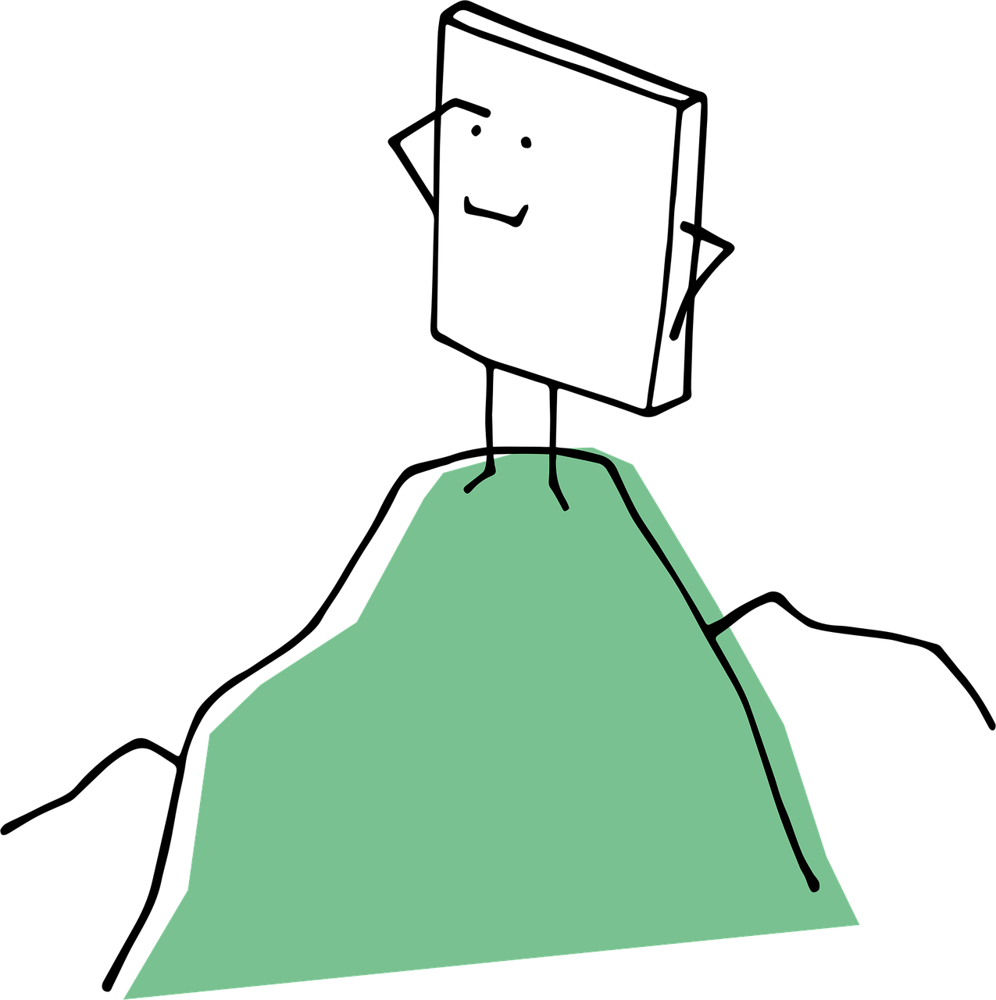
5.7.1 Exploring the Response
We begin with the response itself. Two versions of the grade are relevant:
-
Final Grade (%)preserves the original percentage scale and is the most natural scale for describing the students’ grades. -
grade_betais the boundary-adjusted response from Section 5.5.3 and is the version that will enter the standard Beta likelihood.
The two scales contain essentially the same ordering and distributional information, but they serve different purposes. The original percentage scale is easier to interpret, while the transformed scale verifies that every modelling observation lies strictly inside \((0,1)\).
Table 5.14 and Table 5.15 summarize the centre, spread, and observed range of both response versions in the training data.
response_quantities <- c(
min(training_data[["Final Grade (%)"]]),
quantile(training_data[["Final Grade (%)"]], 0.25),
median(training_data[["Final Grade (%)"]]),
mean(training_data[["Final Grade (%)"]]),
sd(training_data[["Final Grade (%)"]]),
quantile(training_data[["Final Grade (%)"]], 0.75),
max(training_data[["Final Grade (%)"]])
)
response_beta_quantities <- c(
min(training_data[["grade_beta"]]),
quantile(training_data[["grade_beta"]], 0.25),
median(training_data[["grade_beta"]]),
mean(training_data[["grade_beta"]]),
sd(training_data[["grade_beta"]]),
quantile(training_data[["grade_beta"]], 0.75),
max(training_data[["grade_beta"]])
)
beta_response_summary <- tibble(
Quantity = c(
"Minimum", "First quartile", "Median", "Mean",
"Standard deviation", "Third quartile", "Maximum"
),
`Original grade (%)` = sprintf("%.2f", response_quantities),
`Transformed Beta response` = sprintf("%.4f", response_beta_quantities)
)
beta_response_summary |>
kable(align = c("c", "c", "c"))| Quantity | Original grade (%) | Transformed Beta response |
|---|---|---|
| Minimum | 50.30 | 0.5030 |
| First quartile | 70.00 | 0.6998 |
| Median | 79.37 | 0.7934 |
| Mean | 78.77 | 0.7874 |
| Standard deviation | 10.72 | 0.1071 |
| Third quartile | 87.56 | 0.8752 |
| Maximum | 100.00 | 0.9995 |
response_quantities = [
training_data["Final Grade (%)"].min(),
training_data["Final Grade (%)"].quantile(0.25),
training_data["Final Grade (%)"].median(),
training_data["Final Grade (%)"].mean(),
training_data["Final Grade (%)"].std(ddof=1),
training_data["Final Grade (%)"].quantile(0.75),
training_data["Final Grade (%)"].max(),
]
response_beta_quantities = [
training_data["grade_beta"].min(),
training_data["grade_beta"].quantile(0.25),
training_data["grade_beta"].median(),
training_data["grade_beta"].mean(),
training_data["grade_beta"].std(ddof=1),
training_data["grade_beta"].quantile(0.75),
training_data["grade_beta"].max(),
]
beta_response_summary = pd.DataFrame(
{
"Quantity": [
"Minimum", "First quartile", "Median", "Mean",
"Standard deviation", "Third quartile", "Maximum",
],
"Original grade (%)": [
f"{value:.2f}" for value in response_quantities
],
"Transformed Beta response": [
f"{value:.4f}" for value in response_beta_quantities
],
}
)
beta_response_summary_html = scrollable_table_html(
beta_response_summary
)| Quantity | Original grade (%) | Transformed Beta response |
|---|---|---|
| Minimum | 50.30 | 0.5030 |
| First quartile | 70.00 | 0.6998 |
| Median | 79.37 | 0.7934 |
| Mean | 78.77 | 0.7874 |
| Standard deviation | 10.72 | 0.1071 |
| Third quartile | 87.56 | 0.8752 |
| Maximum | 100.00 | 0.9995 |
The training grades range from 50.30% to 100.00%, a span of 49.70 percentage points. Their mean is 78.77%, compared with a median of 79.37%, while the training-set standard deviation (SD) is 10.72 percentage points.
The upper end of the scale deserves particular attention. In the training set, 4 students have a grade of exactly 100%, and 36 students have grades of at least 95%, corresponding to 5.1% of the training observations. These counts quantify how much of the upper-boundary and near-boundary behaviour documented in the full dataset is actually present in the training sample that will drive model development.
The boundary transformation changes the support much more than it changes the substantive grade information. On the transformed scale, the training response ranges from 0.5030 to 0.9995, and the largest absolute movement induced by the transformation is only 0.050 percentage point when expressed back on the original grading scale. Hence, the transformed observations remain extremely close to their original grades while satisfying the open-support requirement of standard Beta regression.
Figure 5.2 (or Figure 5.3) shows the training grades on their original percentage scale. The orange vertical line marks the training-set mean.
grade_breaks <- seq(0, 105, by = 5)
grade_y_max <- 20 * ceiling(max(hist(
training_data[["Final Grade (%)"]], breaks = grade_breaks, plot = FALSE
)$counts) / 20)
beta_response_distribution_plot <- ggplot(
training_data, aes(x = `Final Grade (%)`)) +
geom_histogram(breaks = grade_breaks, fill = "#0072B2",
colour = "white", linewidth = 0.3) +
geom_vline(xintercept = mean(training_data[["Final Grade (%)"]]),
colour = "#D55E00", linewidth = 1.2) +
scale_x_continuous(breaks = seq(0, 100, by = 10)) +
scale_y_continuous(breaks = seq(0, grade_y_max, by = 20)) +
coord_cartesian(xlim = c(0, 100), ylim = c(0, grade_y_max),
expand = FALSE) +
theme_bw() +
theme(
axis.text = element_text(size = 15.5),
axis.title.x = element_text(size = 20),
axis.title.y = element_text(size = 20, vjust = 0.5,
margin = margin(r = 12)),
panel.grid.minor = element_blank()) +
labs(x = "\n Final grade (%)", y = "Number of students")
beta_response_distribution_plot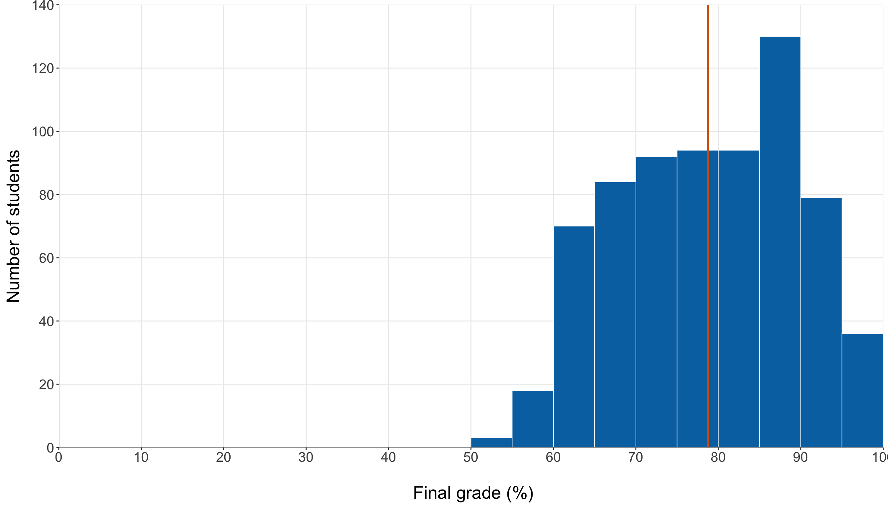
import numpy as np
import matplotlib.pyplot as plt
grade_breaks = np.arange(0, 106, 5)
grade_y_max = int(20 * np.ceil(
np.histogram(training_data["Final Grade (%)"], bins=grade_breaks)[0].max()
/ 20))
beta_response_distribution_plot, beta_response_distribution_axis = (
plt.subplots(figsize=(14, 8)))
_ = beta_response_distribution_axis.hist(
training_data["Final Grade (%)"], bins=grade_breaks,
color="#0072B2", edgecolor="white", linewidth=0.3)
_ = beta_response_distribution_axis.axvline(
training_data["Final Grade (%)"].mean(),
color="#D55E00", linewidth=1.2)
_ = beta_response_distribution_axis.set_xlim(0, 100)
_ = beta_response_distribution_axis.set_xticks(np.arange(0, 101, 10))
_ = beta_response_distribution_axis.set_ylim(0, grade_y_max)
_ = beta_response_distribution_axis.set_yticks(
np.arange(0, grade_y_max + 1, 20))
_ = beta_response_distribution_axis.set_xlabel(
"\n Final grade (%)", fontsize=20)
_ = beta_response_distribution_axis.set_ylabel(
"Number of students", fontsize=20, labelpad=12)
beta_response_distribution_axis.tick_params(axis="both", labelsize=15.5)
beta_response_distribution_axis.grid(
True, which="major", axis="both", alpha=0.3)
beta_response_distribution_axis.grid(False, which="minor")
beta_response_distribution_plot.tight_layout()
plt.show()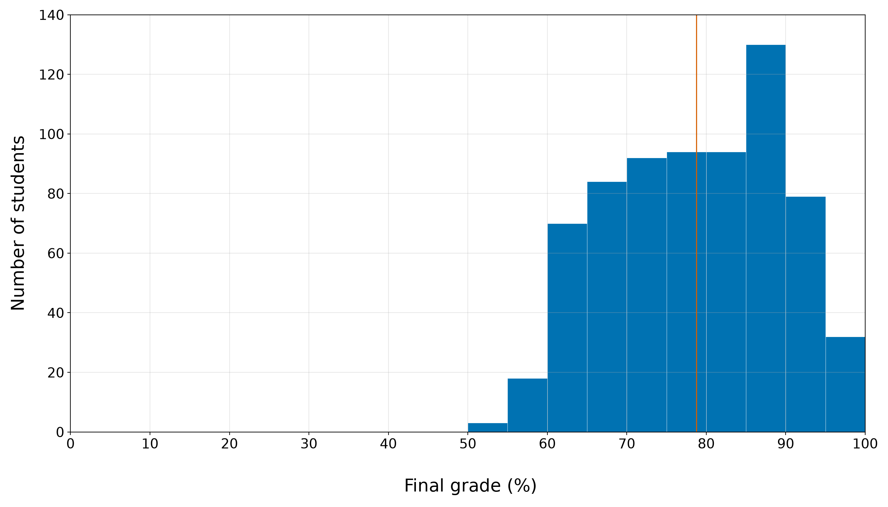
The histogram in Figure 5.2 is a marginal description of final grades in the training data, not a diagnostic for a fitted Beta regression model. Most training-set grades lie roughly between 60% and 95%, with the overall mean near 80%. However, this plot pools students from all four Study Time categories—<1 hour, 1–3 hours, 3–5 hours, and 5+ hours. Thus, it does not show whether the conditional grade distributions differ across study-time groups. For example, differences in group-specific centres or spreads could be obscured when all observations are combined into a single histogram.
This distinction is critical for the modelling workflow. The bounded percentage scale, together with the absence of observations at 0% after the boundary adjustment described earlier, motivates modelling the transformed response with a Beta distribution. However, the marginal histogram does not tell us whether Study Time is associated with the conditional mean of final grades, nor whether the conditional spread is similar across its four categories. Those are features of the conditional distribution that must be investigated using the explanatory variables and, later, assessed through the fitted Beta regression model. Hence, we examine the relationship between final grades and Study Time next.
5.7.2 Response and Study Time
Study time is the primary regressor in both guiding inquiries, so this is the central relationship in the EDA. We want to determine whether the location of the grade distribution changes across study time categories, whether all four categories remain sufficiently represented in the training sample, how much their grade distributions overlap, and whether their within-category spread appears broadly similar or markedly different on the original percentage scale.
Table 5.16 reports the category sizes together with several summaries of the training-grade distribution.
study_time_summary <- training_data |>
group_by(`Study Time`) |>
summarise(
students = n(), mean_grade = mean(`Final Grade (%)`),
median_grade = median(`Final Grade (%)`), sd_grade = sd(`Final Grade (%)`),
q1_grade = quantile(`Final Grade (%)`, 0.25),
q3_grade = quantile(`Final Grade (%)`, 0.75),
min_grade = min(`Final Grade (%)`), max_grade = max(`Final Grade (%)`),
.groups = "drop") |>
mutate(iqr_grade = q3_grade - q1_grade)
study_time_mean_span <- diff(range(study_time_summary$mean_grade))
study_time_sd_min <- min(study_time_summary$sd_grade)
study_time_sd_max <- max(study_time_summary$sd_grade)
study_time_summary_display <- study_time_summary |>
transmute(
`Study Time` = `Study Time`, Students = students,
`Mean grade (%)` = round(mean_grade, 2),
`Median grade (%)` = round(median_grade, 2),
`SD (percentage points)` = round(sd_grade, 2),
`IQR (percentage points)` = round(iqr_grade, 2),
`Minimum grade (%)` = round(min_grade, 2),
`Maximum grade (%)` = round(max_grade, 2))
study_time_summary_display |>
kable(align = c(rep("c", 8)))| Study Time | Students | Mean grade (%) | Median grade (%) | SD (percentage points) | IQR (percentage points) | Minimum grade (%) | Maximum grade (%) |
|---|---|---|---|---|---|---|---|
| <1 hour | 186 | 65.78 | 65.74 | 5.00 | 6.68 | 50.30 | 78.22 |
| 1–3 hours | 179 | 75.24 | 75.28 | 5.01 | 5.87 | 60.39 | 87.79 |
| 3–5 hours | 173 | 85.27 | 85.45 | 4.92 | 6.64 | 70.52 | 100.00 |
| 5+ hours | 162 | 90.62 | 90.62 | 4.60 | 6.29 | 79.39 | 100.00 |
study_time_summary = (
training_data.groupby("Study Time", observed=True)
.agg(
students=("Final Grade (%)", "size"),
mean_grade=("Final Grade (%)", "mean"),
median_grade=("Final Grade (%)", "median"),
sd_grade=("Final Grade (%)", "std"),
q1_grade=("Final Grade (%)", lambda x: x.quantile(0.25)),
q3_grade=("Final Grade (%)", lambda x: x.quantile(0.75)),
min_grade=("Final Grade (%)", "min"),
max_grade=("Final Grade (%)", "max"))
.reset_index()
)
study_time_summary["iqr_grade"] = (
study_time_summary["q3_grade"] - study_time_summary["q1_grade"])
study_time_mean_span = (
study_time_summary["mean_grade"].max()
- study_time_summary["mean_grade"].min())
study_time_sd_min = study_time_summary["sd_grade"].min()
study_time_sd_max = study_time_summary["sd_grade"].max()
study_time_summary_display = study_time_summary[
["Study Time", "students", "mean_grade", "median_grade",
"sd_grade", "iqr_grade", "min_grade", "max_grade"]].rename(columns={
"students": "Students",
"mean_grade": "Mean grade (%)",
"median_grade": "Median grade (%)",
"sd_grade": "SD (percentage points)",
"iqr_grade": "IQR (percentage points)",
"min_grade": "Minimum grade (%)",
"max_grade": "Maximum grade (%)"})
summary_numeric_columns = [
"Mean grade (%)", "Median grade (%)", "SD (percentage points)",
"IQR (percentage points)", "Minimum grade (%)", "Maximum grade (%)"]
study_time_summary_display[summary_numeric_columns] = (
study_time_summary_display[summary_numeric_columns].round(2))
study_time_summary_html = scrollable_table_html(study_time_summary_display)| Study Time | Students | Mean grade (%) | Median grade (%) | SD (percentage points) | IQR (percentage points) | Minimum grade (%) | Maximum grade (%) |
|---|---|---|---|---|---|---|---|
| <1 hour | 186 | 65.78 | 65.74 | 5.00 | 6.68 | 50.30 | 78.22 |
| 1–3 hours | 179 | 75.24 | 75.28 | 5.01 | 5.87 | 60.39 | 87.79 |
| 3–5 hours | 173 | 85.27 | 85.45 | 4.92 | 6.64 | 70.52 | 100.00 |
| 5+ hours | 162 | 90.62 | 90.62 | 4.60 | 6.29 | 79.39 | 100.00 |
The category summaries in Table 5.16 show a clear ordered shift in final grades across the four study-time groups. The mean final grade rises from 65.8% in the <1 hour reference category to 75.2% for 1–3 hours, 85.3% for 3–5 hours, and 90.6% for 5+ hours. These correspond to successive increases of 9.5, 10.0, and 5.3 percentage points. Overall, the mean differs by 24.8 percentage points between the lowest and highest study-time categories. The medians follow essentially the same ordering, ranging from 65.7% to 90.6%, so the pattern is not being created solely by a few unusually high or low grades. Descriptively, this strong separation in group location provides a direct reason for including Study Time in the initial conditional-mean submodel.
The within-category spread is much more stable than the group centres. The four standard deviations lie between 4.60 and 5.01 percentage points, a range of only 0.41 percentage points, compared with the 24.8-percentage-point span in the category means. The interquartile ranges (IQRs) tell the same story: they range from 5.87 to 6.68 percentage points. Thus, on the original grade scale, increasing study time is associated descriptively with a pronounced upward shift in the centre of the distribution, while the amount of within-group variation changes comparatively little. This distinction between location and spread will be especially relevant when we later assess whether the Beta regression requires only a study-time-dependent mean or also a study-time-dependent precision parameter.
Finally, the ordered pattern is not being driven by a sparsely represented category. The <1 hour, 1–3 hours, 3–5 hours, and 5+ hours groups contain 186, 179, 173, 162 students, respectively. All four categories therefore contribute substantial numbers of training observations to the comparisons above.
The distributional comparison is easier to inspect in Figure 5.4 and Figure 5.5. The boxplots summarize the centre and middle spread, the blue points retain the individual training observations, and the orange diamonds mark the category means.
Heads-up on the jittered grade points!
The individual observations in Figure 5.4 (or Figure 5.5) are jittered only in the horizontal direction. Their vertical positions remain the students’ actual final-grade percentages. Hence, the display separates overlapping points without altering the response values.
The horizontal jitter is only a visualization device. Neither the jittered positions nor the boxplots are components of the Beta regression model fitted later.
jitter_seed <- 123
beta_study_time_grade_plot <- ggplot(
training_data,
aes(x = `Study Time`, y = `Final Grade (%)`)
) +
geom_boxplot(width = 0.48, outlier.shape = NA, linewidth = 0.8) +
geom_point(
position = position_jitter(width = 0.12, height = 0, seed = jitter_seed),
alpha = 0.35, size = 1.8, colour = "#0072B2"
) +
stat_summary(
fun = mean, geom = "point", shape = 23, size = 4,
fill = "#D55E00", colour = "#D55E00"
) +
scale_x_discrete(expand = expansion(add = 0.5)) +
scale_y_continuous(limits = c(0, 100), breaks = seq(0, 100, 10),
expand = expansion(mult = 0)) +
labs(x = "\nStudy Time", y = "Final grade (%)") +
theme_bw() +
theme(
axis.text = element_text(size = 15.5),
axis.text.x = element_text(hjust = 1),
axis.title = element_text(size = 20),
axis.title.y = element_text(margin = margin(r = 12)),
panel.grid.minor = element_blank()
)
beta_study_time_grade_plot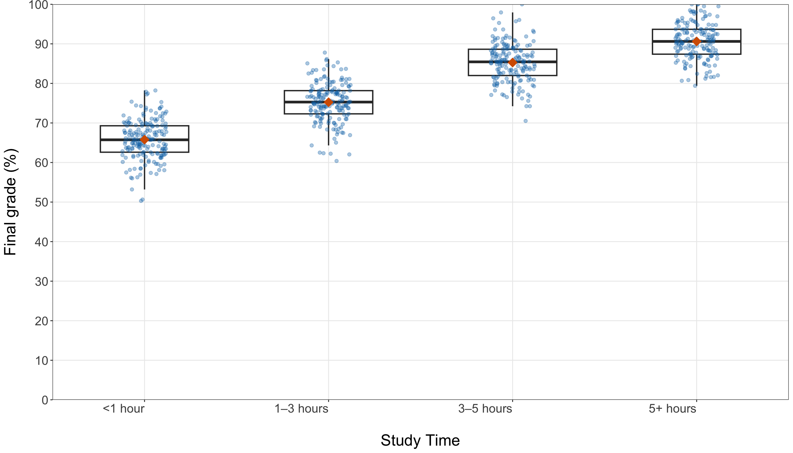
jitter_seed = 123
study_time_positions = np.arange(1, len(study_time_levels) + 1)
study_time_grade_values = [
training_data.loc[
training_data["Study Time"] == level,
"Final Grade (%)",
].to_numpy()
for level in study_time_levels
]
beta_study_time_grade_plot, beta_study_time_grade_axis = plt.subplots(
figsize=(14, 8)
)
_ = beta_study_time_grade_axis.boxplot(
study_time_grade_values,
positions=study_time_positions,
widths=0.48,
showfliers=False,
)
jitter_generator = np.random.default_rng(jitter_seed)
for position, values in zip(
study_time_positions,
study_time_grade_values,
):
_ = beta_study_time_grade_axis.scatter(
position + jitter_generator.uniform(
-0.12,
0.12,
size=len(values),
),
values,
alpha=0.35,
s=24,
color="#0072B2",
zorder=2,
)
_ = beta_study_time_grade_axis.scatter(
study_time_positions,
[values.mean() for values in study_time_grade_values],
marker="D",
s=70,
color="#D55E00",
zorder=4,
)
_ = beta_study_time_grade_axis.set_xticks(
study_time_positions,
study_time_levels,
ha="right",
)
_ = beta_study_time_grade_axis.set_xlim(
0.5, len(study_time_levels) + 0.5)
_ = beta_study_time_grade_axis.set_ylim(0, 100)
_ = beta_study_time_grade_axis.set_yticks(
np.arange(0, 101, 10)
)
_ = beta_study_time_grade_axis.set_xlabel(
"\nStudy Time",
fontsize=20,
)
_ = beta_study_time_grade_axis.set_ylabel(
"Final grade (%)",
fontsize=20,
labelpad=12,
)
_ = beta_study_time_grade_axis.tick_params(
axis="both",
labelsize=15.5,
)
_ = beta_study_time_grade_axis.grid(
True,
which="major",
axis="both",
alpha=0.3,
)
_ = beta_study_time_grade_axis.grid(
False,
which="minor",
)
beta_study_time_grade_plot.tight_layout()
plt.show()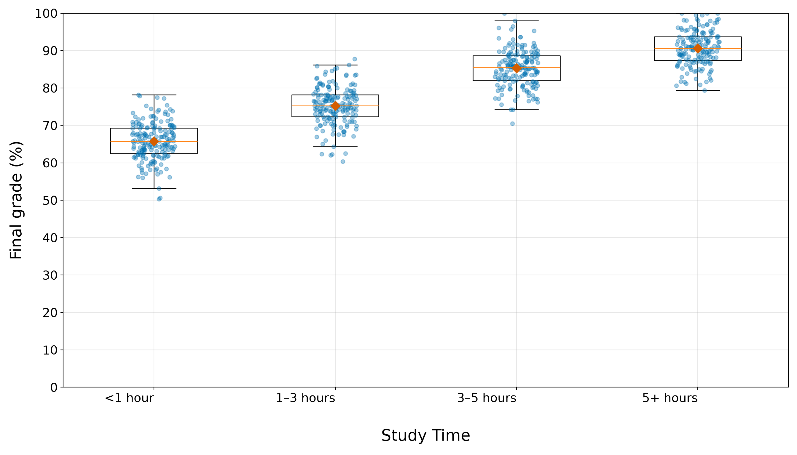
The individual observations add two important details beyond the group means. First, the four distributions still overlap substantially: students in different study time categories can achieve similar final grades, so study time alone does not determine individual performance. Second, the within-group spread is fairly similar across categories, even as the centres shift upward with greater study time. The main EDA pattern is therefore a clear increase in the conditional mean of final grade across study time categories, with broadly comparable variability around those means.
These are still unadjusted descriptive differences. They do not account for other student characteristics, are not Beta regression effects, and should not be interpreted causally. Their purpose is to identify the dominant training-data pattern that the initial conditional-mean submodel should be able to capture.
5.7.3 Response and the Remaining Variables
The remaining variables should be examined without allowing the EDA to become a long catalogue of plots. The question relevant to the running analysis is narrower:
Does any other recorded variable show mean-grade structure comparable with the study time pattern?
There are nine remaining candidate variables: seven categorical variables and two numerical variables. To compare their exploratory relationships with final grade on a common practical scale, we summarize mean-grade contrasts in percentage points:
- For a categorical variable, the raw contrast is the difference between the largest and smallest category-specific mean grades.
- For a numerical variable, the raw contrast is the absolute difference between the mean grade among observations in the upper quartile of that regressor and the mean grade among observations in its lower quartile.
These definitions are deliberately simple because they do not pretend that categorical and numerical regressors have identical mathematical structures; instead, they provide a common percentage-point scale for judging whether another descriptive pattern is remotely comparable to the study time mean span.
We also compute a second, more targeted descriptive quantity. For each training observation, define its study-time-centred grade as the observed final grade minus the mean grade of its own study time category. Then, we repeat the same secondary-variable comparisons using these centred grades. This centring removes the four study time group means before asking whether a secondary variable still shows a sizeable location shift.
Heads-up on study-time-centred grades!
A study-time-centred grade is not a Beta regression residual, an adjusted coefficient, or a formal conditional effect. It is only an exploratory quantity:
\[ \text{centred grade} = \substack{ \text{observed}\\ \text{grade} } - \substack{ \text{training mean for the student's}\\ \text{study time category} }. \]
Therefore, the centred contrasts below help us assess whether noticeable mean-grade differences remain after removing the dominant four-group study time pattern. They do not replace the later regression model, a likelihood-ratio test, or any formal adjustment for the other regressors.
Table 5.18 reports this compact screen. The variables are ordered by the study-time-centred contrast so that the largest remaining descriptive differences appear first.
secondary_categorical_variables <- c(
"Café Location", "Year in School", "Hobbies", "Primary Sport",
"Living Arrangement", "Study Group Participation", "Has a Tutor"
)
secondary_numeric_variables <- c(
"Part-time Work Hours", "Hours of Sleep per Night"
)
training_secondary <- training_data |>
group_by(`Study Time`) |>
mutate(
study_time_centered_grade =
`Final Grade (%)` - mean(`Final Grade (%)`)
) |>
ungroup()
categorical_secondary_screen <- bind_rows(lapply(
secondary_categorical_variables,
function(variable) {
group_summary <- training_secondary |>
group_by(category = .data[[variable]]) |>
summarise(
n = n(),
mean_grade = mean(`Final Grade (%)`),
mean_centered_grade = mean(study_time_centered_grade),
.groups = "drop"
)
tibble(
Variable = variable,
Comparison = "Largest minus smallest category mean",
raw_contrast = diff(range(group_summary$mean_grade)),
centered_contrast = diff(range(group_summary$mean_centered_grade)),
smallest_group_n = min(group_summary$n)
)
}
))
numeric_secondary_screen <- bind_rows(lapply(
secondary_numeric_variables,
function(variable) {
q <- quantile(training_secondary[[variable]], c(0.25, 0.75))
lower <- training_secondary |> filter(.data[[variable]] <= q[1])
upper <- training_secondary |> filter(.data[[variable]] >= q[2])
tibble(
Variable = variable,
Comparison = "Upper versus lower regressor quartile",
raw_contrast = abs(
mean(upper[["Final Grade (%)"]]) -
mean(lower[["Final Grade (%)"]])
),
centered_contrast = abs(
mean(upper$study_time_centered_grade) -
mean(lower$study_time_centered_grade)
),
smallest_group_n = min(nrow(lower), nrow(upper))
)
}
))
secondary_screen <- bind_rows(
categorical_secondary_screen,
numeric_secondary_screen
) |>
arrange(desc(centered_contrast), Variable)
secondary_raw_max <- secondary_screen |>
slice_max(raw_contrast, n = 1, with_ties = FALSE)
secondary_centered_max <- secondary_screen |>
slice_max(centered_contrast, n = 1, with_ties = FALSE)
secondary_centered_share <-
100 * secondary_centered_max$centered_contrast / study_time_mean_span
secondary_screen |>
transmute(
Variable,
`Descriptive comparison` = Comparison,
`Raw mean-grade contrast (percentage points)` = round(raw_contrast, 2),
`Study-time-centred contrast (percentage points)` =
round(centered_contrast, 2),
`Smallest comparison group` = smallest_group_n
) |>
kable(align = rep("c", 5))| Variable | Descriptive comparison | Raw mean-grade contrast (percentage points) | Study-time-centred contrast (percentage points) | Smallest comparison group |
|---|---|---|---|---|
| Hobbies | Largest minus smallest category mean | 2.13 | 0.80 | 173 |
| Primary Sport | Largest minus smallest category mean | 2.12 | 0.72 | 218 |
| Year in School | Largest minus smallest category mean | 1.61 | 0.66 | 163 |
| Part-time Work Hours | Upper versus lower regressor quartile | 0.80 | 0.54 | 182 |
| Living Arrangement | Largest minus smallest category mean | 0.60 | 0.53 | 226 |
| Café Location | Largest minus smallest category mean | 1.57 | 0.47 | 131 |
| Study Group Participation | Largest minus smallest category mean | 0.38 | 0.38 | 347 |
| Hours of Sleep per Night | Upper versus lower regressor quartile | 0.30 | 0.28 | 175 |
| Has a Tutor | Largest minus smallest category mean | 0.92 | 0.06 | 329 |
secondary_categorical_variables = [
"Café Location", "Year in School", "Hobbies", "Primary Sport",
"Living Arrangement", "Study Group Participation", "Has a Tutor",
]
secondary_numeric_variables = [
"Part-time Work Hours", "Hours of Sleep per Night",
]
training_secondary = training_data.copy()
training_secondary["study_time_centered_grade"] = (
training_secondary["Final Grade (%)"]
- training_secondary.groupby("Study Time", observed=True)[
"Final Grade (%)"
].transform("mean")
)
def categorical_contrast(variable):
summary = training_secondary.groupby(variable, observed=True).agg(
n=("Final Grade (%)", "size"),
mean_grade=("Final Grade (%)", "mean"),
mean_centered_grade=("study_time_centered_grade", "mean"),
)
return {
"Variable": variable,
"Comparison": "Largest minus smallest category mean",
"raw_contrast": summary["mean_grade"].max() - summary["mean_grade"].min(),
"centered_contrast": (
summary["mean_centered_grade"].max()
- summary["mean_centered_grade"].min()
),
"smallest_group_n": summary["n"].min(),
}
def numeric_contrast(variable):
q1, q3 = training_secondary[variable].quantile([0.25, 0.75])
lower = training_secondary.loc[training_secondary[variable] <= q1]
upper = training_secondary.loc[training_secondary[variable] >= q3]
return {
"Variable": variable,
"Comparison": "Upper versus lower regressor quartile",
"raw_contrast": abs(
upper["Final Grade (%)"].mean()
- lower["Final Grade (%)"].mean()
),
"centered_contrast": abs(
upper["study_time_centered_grade"].mean()
- lower["study_time_centered_grade"].mean()
),
"smallest_group_n": min(len(lower), len(upper)),
}
secondary_screen = pd.DataFrame(
[categorical_contrast(v) for v in secondary_categorical_variables]
+ [numeric_contrast(v) for v in secondary_numeric_variables]
).sort_values(
["centered_contrast", "Variable"],
ascending=[False, True],
).reset_index(drop=True)
secondary_raw_max = secondary_screen.loc[
secondary_screen["raw_contrast"].idxmax()
]
secondary_centered_max = secondary_screen.loc[
secondary_screen["centered_contrast"].idxmax()
]
secondary_centered_share = (
100
* secondary_centered_max["centered_contrast"]
/ study_time_mean_span
)
secondary_screen_display = secondary_screen.rename(columns={
"Comparison": "Descriptive comparison",
"raw_contrast": "Raw mean-grade contrast (percentage points)",
"centered_contrast": "Study-time-centred contrast (percentage points)",
"smallest_group_n": "Smallest comparison group",
})[
[
"Variable",
"Descriptive comparison",
"Raw mean-grade contrast (percentage points)",
"Study-time-centred contrast (percentage points)",
"Smallest comparison group",
]
]
contrast_columns = [
"Raw mean-grade contrast (percentage points)",
"Study-time-centred contrast (percentage points)",
]
secondary_screen_display[contrast_columns] = (
secondary_screen_display[contrast_columns].round(2)
)
secondary_screen_html = scrollable_table_html(secondary_screen_display)| Variable | Descriptive comparison | Raw mean-grade contrast (percentage points) | Study-time-centred contrast (percentage points) | Smallest comparison group |
|---|---|---|---|---|
| Hobbies | Largest minus smallest category mean | 2.13 | 0.80 | 173 |
| Primary Sport | Largest minus smallest category mean | 2.12 | 0.72 | 218 |
| Year in School | Largest minus smallest category mean | 1.61 | 0.66 | 163 |
| Part-time Work Hours | Upper versus lower regressor quartile | 0.80 | 0.54 | 182 |
| Living Arrangement | Largest minus smallest category mean | 0.60 | 0.53 | 226 |
| Café Location | Largest minus smallest category mean | 1.57 | 0.47 | 131 |
| Study Group Participation | Largest minus smallest category mean | 0.38 | 0.38 | 347 |
| Hours of Sleep per Night | Upper versus lower regressor quartile | 0.30 | 0.28 | 175 |
| Has a Tutor | Largest minus smallest category mean | 0.92 | 0.06 | 329 |
The raw screen reinforces why study time remains the focal relationship in the EDA. Using the pre-specified descriptive comparisons in Table 5.18, the largest unadjusted mean-grade contrast across the nine secondary variables is 2.13 percentage points for Hobbies. The remaining contrasts are similarly modest. By comparison, the four study time category means span 24.83 percentage points. Thus, before accounting for any overlap with study time, none of the secondary variables exhibits a mean-grade separation approaching the magnitude of the study time pattern identified earlier.
Nevertheless, the raw contrasts are not the most informative comparison for deciding whether the running mean model should immediately become more complex. A secondary variable may appear associated with final grade partly because its categories also differ in their composition across the four study time groups. The study-time-centred contrasts provide a more targeted exploratory check. For each observation, we first subtract the training mean for that student’s study time category and then repeat the same categorical or quartile-based comparisons. In effect, we ask whether a noticeable location shift remains after removing the dominant between-group study time pattern from the grades.
Under this centred comparison, the largest remaining contrast is only 0.80 percentage points, occurring for Hobbies. For scale, this is approximately 3.2% of the raw study time mean span observed earlier. The table also shows that this is not an isolated consequence of one unusual secondary variable: the centred contrasts are small across the full set of candidate regressors. Descriptively, once the broad study time structure has been removed, there is relatively little remaining separation in mean final grade under these simple comparisons.
Note that this screening exercise has an intentionally limited role. It does not imply that every coefficient associated with the secondary variables would equal zero in a Beta regression, nor does it account simultaneously for all regressors, interactions, nonlinear effects, or other possible model structures. It is also not a formal variable-selection procedure and should not be interpreted as one. Its narrower conclusion is that the training-stage EDA does not reveal another mean-grade pattern comparable in magnitude with the study time relationship.
That conclusion supports keeping the initial conditional-mean submodel focused and interpretable rather than adding regressors simply because they are available in the dataset. The study time structure is the dominant descriptive feature that the running Beta regression model should first be able to reproduce. Later, a pre-specified training-stage comparison of nested mean models can provide the formal likelihood-based assessment of whether adding secondary mean terms produces enough improvement in fit to justify the additional model complexity.
5.7.4 Exploratory Data Analysis Summary
The training-stage EDA has now established a focused set of empirical features that the subsequent Beta regression should address. Table 5.20 separates what the training data show descriptively from what those observations motivate for modelling. None of these summaries is itself a fitted-model result.
| Feature | Descriptive Evidence from the Training Data | Modelling Implication | Caution |
|---|---|---|---|
| Response support and upper boundary | Final grades range from 50.30% to 100.00%. There are 4 observations at exactly 100% and 36 at or above 95%. After the fixed boundary transformation, grade_beta ranges from 0.5030 to 0.9995, while remaining very close to the original percentage values. |
The boundary-adjusted response satisfies the open-support requirement for a standard Beta likelihood, while substantive interpretation can remain on the familiar percentage scale. | Making the response admissible for a Beta likelihood does not establish that a particular Beta regression mean or precision specification will fit the data adequately. |
| Study time and grade location | The four study-time groups show a clear ordered shift in location. Mean grades increase from 65.8% for <1 hour to 90.6% for 5+ hours, a span of 24.8 percentage points. The medians follow essentially the same ordering, and the four groups contain 186, 179, 173, 162 training observations, respectively. |
Study Time provides the clearest descriptive structure for the initial conditional-mean submodel and should be the focal regressor in the running analysis. |
These are unadjusted training summaries. They are not Beta regression coefficients and do not establish that greater study time causes higher grades. |
| Overlap and within-study-time spread | Despite the strong upward shift in group centres, the four grade distributions still overlap substantially. Their SDs range only from 4.60 to 5.01 percentage points, while their IQRs range from 5.87 to 6.68 percentage points. | The fitted model should reproduce both the pronounced change in mean grade across study-time categories and the substantial within-group variation around those means. The comparatively stable raw spread provides a specific feature to revisit when the Beta precision structure is introduced. | Similar SDs on the original percentage scale do not by themselves imply constant or varying Beta precision. That question depends on the Beta mean–variance relationship and must be assessed with the fitted model. |
| Remaining candidate regressors | Across the nine secondary variables, the largest raw descriptive contrast is 2.13 percentage points for Hobbies. After removing the four study-time group means descriptively, the largest remaining contrast is 0.80 percentage points for Hobbies, only about 3.2% of the raw study-time mean span. | The initial mean structure can remain focused on study time rather than becoming complex simply because additional variables are available. A larger mean model can instead be evaluated later through a pre-specified training-stage comparison. | The study-time-centred screen is exploratory. It is not a regression adjustment, hypothesis test, likelihood-based comparison, or automated variable-selection procedure. |
All together, the EDA identifies a clear location–variation structure for the running analysis. Study time is associated with a pronounced and ordered shift in the centre of the final-grade distribution, while students from different study-time categories still achieve overlapping grades and exhibit broadly comparable amounts of variation on the original percentage scale. The remaining recorded variables show much smaller descriptive mean-grade differences, particularly after the dominant study-time group means are removed.
This evidence motivates a deliberately focused starting model. The initial conditional-mean submodel should first capture the four-category study-time structure rather than incorporating every available regressor. At the same time, the similarity of the observed within-group spreads gives us a second feature that the fitted distribution will eventually need to reproduce. Importantly, the EDA alone cannot tell us what precision structure is required: raw percentage-scale SDs cannot be translated directly into conclusions about the Beta precision parameter.
Thus, we turn next to the Beta distribution and its mean–precision parameterization. Once we establish how the conditional mean and precision jointly determine the variance of a Beta response, we can ask a more precise modelling question:
Can a common precision parameter reproduce the amount of variation observed across study-time groups whose mean grades differ substantially, or will the precision structure need to change as well?
5.8 The Beta Distribution
The EDA left us with a specific modelling question. The centre of the final-grade distribution changes substantially across study time categories, while the within-category spread changes much less on the original percentage scale (see Table 5.16). Before deciding what mean and precision structure a Beta regression requires, we need to understand what the Beta distribution can represent and how its mean and variance are controlled.
After the response preparation in Section 5.5, the modelling response lies strictly inside \((0,1)\). A Beta distribution is a natural probability model for a continuous response on this open unit interval. Unlike a Normal distribution (see Section E.6), whose support extends over the entire real line, a Beta distribution assigns probability only to values between \(0\) and \(1\).
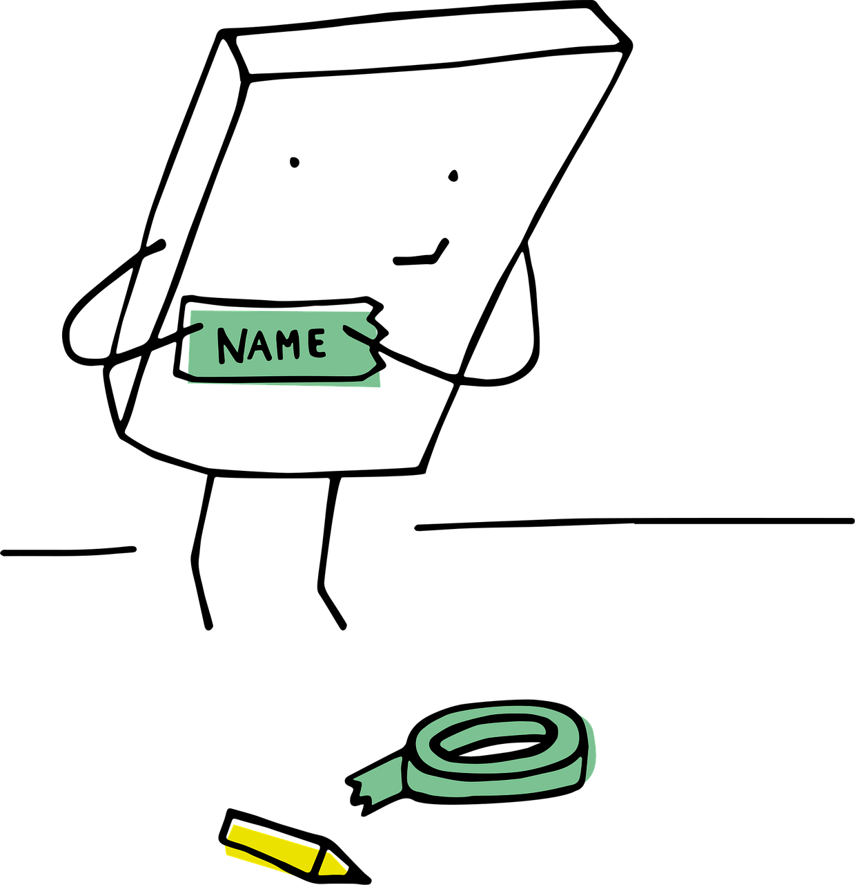
Just as importantly, the Beta distribution is not one fixed shape. It is a family of distributions capable of representing symmetric, asymmetric, centrally concentrated, nearly uniform, and boundary-concentrated responses. We begin with the traditional shape-parameter form and then re-express the same family using a mean–precision parameterization that is much more useful for regression.
5.8.1 Shape-parameter Form
Let
\[ Y \sim \operatorname{Beta}(\alpha,\beta), \]
where
\[ \alpha>0 \qquad\text{and}\qquad \beta>0. \]
The probability density function (PDF) is
\[ f(y;\alpha,\beta) = \frac{1}{B(\alpha,\beta)} y^{\alpha-1}(1-y)^{\beta-1}, \quad 0<y<1, \tag{5.3}\]
where \(B(\alpha,\beta)\) is the Beta function,
\[ B(\alpha,\beta) = \int_0^1 t^{\alpha-1}(1-t)^{\beta-1}\,dt. \tag{5.4}\]
The Beta function can also be written using the Gamma function:
\[ B(\alpha,\beta) = \frac{ \Gamma(\alpha)\Gamma(\beta) }{ \Gamma(\alpha+\beta) }. \]
Therefore,
\[ \frac{1}{B(\alpha,\beta)} = \frac{ \Gamma(\alpha+\beta) }{ \Gamma(\alpha)\Gamma(\beta) }, \]
and the probability density function (PDF) can equivalently be written as
\[ f(y;\alpha,\beta) = \frac{ \Gamma(\alpha+\beta) }{ \Gamma(\alpha)\Gamma(\beta) } y^{\alpha-1}(1-y)^{\beta-1}, \qquad 0<y<1. \]
Heads-up on the Gamma function!
The Gamma function is a mathematical generalization of the factorial function, but applied to non-integer numbers. In many different probability distributions, this function appears as a normalizing constant. Moreover, it also appears as part of the expressions of expected values and variances.
That said, for a variable \(z\) in general, we can represent the Gamma function via the following integral:
\[ \Gamma(z) = \int_{t = 0}^{t = \infty} t^{z - 1} \exp{\left( -t \right)} \mathrm{d}t. \]
Weisstein (n.d.) provides further insights on this Gamma function along with some useful properties.
The role of the normalizing constant is worth making explicit. Starting from the kernel
\[ y^{\alpha-1}(1-y)^{\beta-1}, \]
we have (via Equation 5.4 with \(t = y\))
\[ \int_0^1 y^{\alpha-1}(1-y)^{\beta-1}\,dy = B(\alpha,\beta). \]
Hence,
\[ \begin{aligned} \int_0^1 f(y;\alpha,\beta)\,dy &= \int_0^1 \frac{1}{B(\alpha,\beta)} y^{\alpha-1}(1-y)^{\beta-1}\,dy \\ &= \frac{1}{B(\alpha,\beta)} \int_0^1 y^{\alpha-1}(1-y)^{\beta-1}\,dy \\ &= \frac{1}{B(\alpha,\beta)} B(\alpha,\beta) \\ &= 1. \end{aligned} \]
Thus, dividing by \(B(\alpha,\beta)\) turns the positive kernel into a valid probability density on \((0,1)\).
Tip on a short history of the Beta distribution!
The mathematics behind the Beta distribution predates its modern statistical use. Integrals of the form
\[ \int_0^1 x^{p-1}(1-x)^{q-1}\,dx \]
were studied well before modern probability theory. Pietro Mengoli evaluated related integrals in the seventeenth century, and Leonhard Euler studied such integrals for non-integer exponents in 1730 while working on extensions of the factorial. This mathematical history is documented in detail by Massa Esteve and Delshams (2009).
The distribution also has an early connection to statistical inference. Thomas Bayes’ posthumously published 1763 essay contains a density with the mathematical form now recognized as a Beta distribution when reasoning about an unknown probability of success from repeated Bernoulli-type outcomes (Bayes 1763).
More than a century later, Karl Pearson developed a systematic family of flexible frequency curves for modelling non-Normal variation (Pearson 1895). The modern Beta family on \((0,1)\) is the standardized unit-interval form associated with Pearson’s Type I distribution. Pearson’s broader statistical programme and the historical setting in which these flexible distribution families emerged are discussed by Magnello (1996).
Thus, the Beta distribution connects several strands in the history of mathematics and statistics: the study of special integrals, early inverse-probability reasoning, and the development of flexible probability models beyond the Normal distribution.
Heads-up on Karl Pearson and Eugenics!
Karl Pearson made foundational contributions to modern statistics, including the development of flexible families of frequency distributions such as the Pearson Type I distribution discussed here. However, his scientific legacy cannot be separated from his substantial involvement in the eugenics movement.
Pearson was an enthusiastic supporter of Francis Galton’s eugenic ideas. He directed the Francis Galton Laboratory for National Eugenics at University College London (UCL) and, in 1911, became the first Galton Professor of Eugenics. His eugenic work included attempts to use quantitative methods to support claims about heredity, social class, disability, and supposed racial and national differences. Historical scholarship has also emphasized that Pearson’s development of biometry and statistics was closely connected to his broader programme of establishing eugenics as a scientific discipline (Norton 1978; Cain 2021).
These views and the eugenic programme they supported are now recognized as scientifically discredited and ethically unacceptable. UCL itself has undertaken a formal examination of this history, describing Pearson as one of the institution’s most influential eugenicists. In 2020, UCL removed Pearson’s name from buildings and spaces, and in 2021 the university formally apologized for its historical role in the development and promotion of eugenics (Cain, n.d.).
Acknowledging this history does not change the mathematical properties of the statistical methods discussed in this chapter. It does, however, place their development in its proper historical context and reminds us that statistical methods have always been developed and applied within broader scientific and social settings.
Now, the two shape parameters determine how the density is distributed across \((0,1)\). Figure 5.6 preserves the useful visual comparison of several Beta distributions while making an important point explicit: the relationship between \(\alpha\) and \(\beta\) is important, but so do their magnitudes.
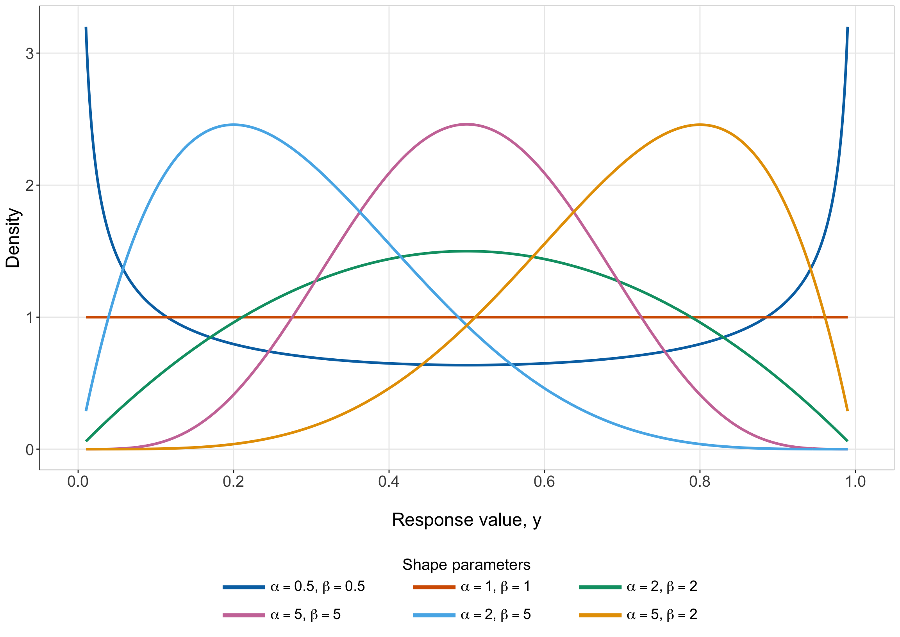
Figure 5.6 shows several qualitatively different members of the same Beta family:
- \(\alpha=\beta=0.5\) produces a symmetric U-shaped density, with greater density near the two boundaries than near the middle.
- \(\alpha=\beta=1\) produces the Uniform distribution on \((0,1)\).
- \(\alpha=\beta=2\) produces a symmetric unimodal density centred at \(0.5\).
- \(\alpha=\beta=5\) remains symmetric around \(0.5\) but is more concentrated near the centre than \(\operatorname{Beta}(2,2)\).
- \(\alpha=2,\ \beta=5\) produces an asymmetric density with more probability concentrated toward smaller values.
- \(\alpha=5,\ \beta=2\) gives the reflected pattern, with more probability concentrated toward larger values.
More generally, when both shape parameters exceed \(1\), the density has an interior mode. To see where it occurs, consider the log-density (see Equation 5.3) up to an additive constant:
\[ \log f(y;\alpha,\beta) = C + (\alpha-1)\log(y) + (\beta-1)\log(1-y), \]
where \(C\) does not depend on \(y\). Differentiate with respect to \(y\):
\[ \frac{d}{dy}\log f(y;\alpha,\beta) = \frac{\alpha-1}{y} - \frac{\beta-1}{1-y}. \]
At an interior mode, this derivative equals zero:
\[ \frac{\alpha-1}{y} - \frac{\beta-1}{1-y} = 0. \]
Therefore,
\[ \frac{\alpha-1}{y} = \frac{\beta-1}{1-y}. \]
Cross-multiplying gives
\[ (\alpha-1)(1-y) = (\beta-1)y. \]
Expanding the left-hand side,
\[ (\alpha-1) - (\alpha-1)y = (\beta-1)y. \]
Move the two terms involving \(y\) to the right:
\[ \alpha-1 = (\alpha-1)y + (\beta-1)y. \]
Factor out \(y\):
\[ \alpha-1 = y(\alpha+\beta-2). \]
Hence, for \(\alpha>1\) and \(\beta>1\),
\[ \operatorname{mode}(Y) = \frac{\alpha-1}{\alpha+\beta-2} \]
This expression helps explain why increasing \(\alpha\) relative to \(\beta\) shifts the interior peak toward \(1\), while increasing \(\beta\) relative to \(\alpha\) shifts it toward \(0\).
A useful qualitative summary is shown in Table 5.21.
| Shape-Parameter Pattern | Resulting Behaviour |
|---|---|
| \(\alpha=\beta=1\) | Uniform on \((0,1)\) |
| \(\alpha=\beta>1\) | Symmetric and unimodal around \(0.5\) |
| \(0<\alpha=\beta<1\) | Symmetric and U-shaped |
| \(\alpha>1,\ \beta>1,\ \alpha>\beta\) | Interior mode shifted toward \(1\) |
| \(\alpha>1,\ \beta>1,\ \beta>\alpha\) | Interior mode shifted toward \(0\) |
| \(\alpha>1,\ 0<\beta\leq1\) | Density increases toward \(1\) |
| \(0<\alpha\leq1,\ \beta>1\) | Density decreases toward \(0\) |
| \(0<\alpha<1,\ 0<\beta<1\) | U-shaped, with greater density near both boundaries |
Heads-up on equal shape parameters!
The condition
\[ \alpha=\beta \]
implies that the Beta density is symmetric around \(0.5\), but it does not imply that observations are concentrated around \(0.5\).
To see why, compare three cases:
\[ \begin{array}{rcl} 0<\alpha=\beta<1 &\Longrightarrow& \text{symmetric and U-shaped},\\[4pt] \alpha=\beta=1 &\Longrightarrow& \text{Uniform on }(0,1),\\[4pt] \alpha=\beta>1 &\Longrightarrow& \text{symmetric and centrally peaked}. \end{array} \]
Therefore, symmetry and concentration are different properties. Equality of the two shape parameters determines symmetry; their common magnitude determines whether that symmetric density is boundary-concentrated, Uniform, or centrally concentrated.
The \((\alpha,\beta)\) representation is excellent for describing the shape of the Beta family, but it is less convenient for regression. In regression, we want one parameter to have a direct interpretation as the conditional mean and another to describe how concentrated the response distribution is around that mean. This motivates a reparameterization.
5.8.2 Mean-precision Parameterization
For Beta regression, we re-express the same distribution using a mean parameter \(\mu\) and a precision parameter \(\phi\) (Ferrari and Cribari-Neto 2004; Cribari-Neto and Zeileis 2010).
Start by defining
\[ \mu = \frac{\alpha}{\alpha+\beta} \]
and
\[ \phi = \alpha+\beta. \]
Because \(\alpha>0\) and \(\beta>0\) in Equation 5.3,
\[ \alpha+\beta>0, \]
so
\[ \phi>0. \]
Also,
\[ 0<\alpha<\alpha+\beta, \]
and dividing all three parts by the positive quantity \(\alpha+\beta\) gives
\[ 0 < \frac{\alpha}{\alpha+\beta} < 1. \]
Therefore,
\[ 0<\mu<1. \]
Now, we solve explicitly for \(\alpha\) and \(\beta\) in terms of \(\mu\) and \(\phi\). Since
\[ \phi=\alpha+\beta, \]
we have
\[ \alpha+\beta=\phi. \]
From the definition of \(\mu\),
\[ \mu = \frac{\alpha}{\alpha+\beta}. \]
But \(\alpha+\beta=\phi\), so
\[ \mu = \frac{\alpha}{\phi}. \]
Multiplying both sides by \(\phi\) gives
\[ \alpha=\mu\phi. \]
Next, because
\[ \beta = \phi-\alpha, \]
substituting \(\alpha=\mu\phi\) gives
\[ \beta = \phi-\mu\phi. \]
Factor out \(\phi\):
\[ \beta=(1-\mu)\phi. \]
Thus, the two parameterizations are related by
\[ \mu=\frac{\alpha}{\alpha+\beta}, \qquad \phi=\alpha+\beta \]
and
\[ \alpha=\mu\phi, \qquad \beta=(1-\mu)\phi. \]
This is a one-to-one reparameterization: every \(\alpha>0,\beta>0\) corresponds to exactly one pair \(0<\mu<1,\phi>0\), and every \(0<\mu<1,\phi>0\) produces positive shape parameters because
\[ \mu\phi>0 \]
and
\[ (1-\mu)\phi>0. \]
Substituting the new expressions for \(\alpha\) and \(\beta\) into the Beta PDF makes the relationship explicit. Begin with
\[ f(y;\alpha,\beta) = \frac{ \Gamma(\alpha+\beta) }{ \Gamma(\alpha)\Gamma(\beta) } y^{\alpha-1}(1-y)^{\beta-1}. \]
Since
\[ \alpha=\mu\phi, \qquad \beta=(1-\mu)\phi, \]
their sum is
\[ \begin{aligned} \alpha+\beta &= \mu\phi+(1-\mu)\phi \\ &= \mu\phi+\phi-\mu\phi \\ &= \phi. \end{aligned} \]
Therefore,
\[ f(y\mid\mu,\phi) = \frac{ \Gamma(\phi) }{ \Gamma(\mu\phi) \Gamma\left[(1-\mu)\phi\right] } y^{\mu\phi-1} (1-y)^{(1-\mu)\phi-1}, \quad 0<y<1. \]
Equivalently, we can write
\[ Y \sim \operatorname{Beta} \left( \mu\phi,\, (1-\mu)\phi \right). \]
The probability distribution has not changed. We have only changed the coordinates used to describe it. For example, suppose
\[ \mu=0.70 \qquad\text{and}\qquad \phi=20. \]
Then
\[ \begin{aligned} \alpha &= \mu\phi \\ &= (0.70)(20) \\ &= 14, \end{aligned} \]
while
\[ \begin{aligned} \beta &= (1-\mu)\phi \\ &= (1-0.70)(20) \\ &= (0.30)(20) \\ &= 6. \end{aligned} \]
Hence,
\[ Y \sim \operatorname{Beta}(14,6) \]
and
\[ Y \sim \operatorname{Beta} \left( (0.70)(20),\, (1-0.70)(20) \right) \]
describe exactly the same distribution.
This parameterization is especially handy for regression because the two parameters answer two different modelling questions:
- \(\mu\) describes where the conditional distribution is centred.
- \(\phi\) describes how concentrated the conditional distribution is for a fixed value of \(\mu\).
Later, for observational unit \(i\), we will allow
\[ \mu_i = \mathbb{E}(Y_i\mid\mathbf{x}_i) \]
to depend on \(k\) regressors in vector \(\mathbf{x}_i\) through a mean submodel. If the training data provide evidence that a common precision is inadequate, we can also allow
\[ \phi_i \]
to depend on regressors through a separate precision submodel. This separation is the main reason the \((\mu,\phi)\) form is so useful for Beta regression.
5.8.3 Mean and Variance
The interpretation of \(\mu\) and \(\phi\) becomes precise once we derive the mean and variance. Start from the shape-parameter form
\[ Y\sim\operatorname{Beta}(\alpha,\beta). \]
We will use two identities:
\[ B(a,b) = \frac{\Gamma(a)\Gamma(b)}{\Gamma(a+b)} \]
and the Gamma-function recurrence
\[ \Gamma(z+1)=z\Gamma(z). \]
Deriving the Mean
By definition,
\[ \mathbb{E}(Y) = \int_0^1 y f(y;\alpha,\beta)\,dy. \]
Substitute the Beta density:
\[ \mathbb{E}(Y) = \int_0^1 y \frac{1}{B(\alpha,\beta)} y^{\alpha-1} (1-y)^{\beta-1}\,dy. \]
Combine the powers of \(y\):
\[ y\cdot y^{\alpha-1} = y^\alpha. \]
Therefore,
\[ \mathbb{E}(Y) = \frac{1}{B(\alpha,\beta)} \int_0^1 y^\alpha (1-y)^{\beta-1}\,dy. \]
The integral is another Beta function:
\[ \int_0^1 y^\alpha (1-y)^{\beta-1}\,dy = B(\alpha+1,\beta). \]
Hence,
\[ \mathbb{E}(Y) = \frac{ B(\alpha+1,\beta) }{ B(\alpha,\beta) }. \]
Now use the Gamma representation of each Beta function:
\[ \mathbb{E}(Y) = \frac{ \displaystyle \frac{ \Gamma(\alpha+1)\Gamma(\beta) }{ \Gamma(\alpha+\beta+1) } }{ \displaystyle \frac{ \Gamma(\alpha)\Gamma(\beta) }{ \Gamma(\alpha+\beta) } }. \]
Dividing by a fraction is equivalent to multiplying by its reciprocal:
\[ \mathbb{E}(Y) = \left[ \frac{ \Gamma(\alpha+1)\Gamma(\beta) }{ \Gamma(\alpha+\beta+1) } \right] \left[ \frac{ \Gamma(\alpha+\beta) }{ \Gamma(\alpha)\Gamma(\beta) } \right]. \]
Use
\[ \Gamma(\alpha+1) = \alpha\Gamma(\alpha) \]
and
\[ \Gamma(\alpha+\beta+1) = (\alpha+\beta)\Gamma(\alpha+\beta). \]
Then
\[ \mathbb{E}(Y) = \left[ \frac{ \alpha\Gamma(\alpha)\Gamma(\beta) }{ (\alpha+\beta)\Gamma(\alpha+\beta) } \right] \left[ \frac{ \Gamma(\alpha+\beta) }{ \Gamma(\alpha)\Gamma(\beta) } \right]. \]
Cancel the common Gamma-function factors:
\[ \mathbb{E}(Y) = \frac{\alpha}{\alpha+\beta}. \]
But by definition,
\[ \mu = \frac{\alpha}{\alpha+\beta}. \]
Therefore,
\[ \mathbb{E}(Y)=\mu. \]
This is why \(\mu\) is called the mean parameter.
Deriving the Variance
To obtain the variance, first derive the second moment. By definition,
\[ \mathbb{E}(Y^2) = \int_0^1 y^2 f(y;\alpha,\beta)\,dy. \]
Substitute the Beta density:
\[ \mathbb{E}(Y^2) = \frac{1}{B(\alpha,\beta)} \int_0^1 y^{\alpha+1} (1-y)^{\beta-1}\,dy. \]
Recognize the integral as
\[ B(\alpha+2,\beta), \]
so
\[ \mathbb{E}(Y^2) = \frac{ B(\alpha+2,\beta) }{ B(\alpha,\beta) }. \]
Using the Gamma representation,
\[ \mathbb{E}(Y^2) = \left[ \frac{ \Gamma(\alpha+2)\Gamma(\beta) }{ \Gamma(\alpha+\beta+2) } \right] \left[ \frac{ \Gamma(\alpha+\beta) }{ \Gamma(\alpha)\Gamma(\beta) } \right]. \]
Apply the recurrence twice:
\[ \Gamma(\alpha+2) = (\alpha+1)\Gamma(\alpha+1) = (\alpha+1)\alpha\Gamma(\alpha), \]
and
\[ \begin{aligned} \Gamma(\alpha+\beta+2) &= (\alpha+\beta+1) \Gamma(\alpha+\beta+1) \\ &= (\alpha+\beta+1) (\alpha+\beta) \Gamma(\alpha+\beta). \end{aligned} \]
Therefore,
\[ \mathbb{E}(Y^2) = \left[ \frac{ \alpha(\alpha+1)\Gamma(\alpha)\Gamma(\beta) }{ (\alpha+\beta)(\alpha+\beta+1) \Gamma(\alpha+\beta) } \right] \left[ \frac{ \Gamma(\alpha+\beta) }{ \Gamma(\alpha)\Gamma(\beta) } \right]. \]
Cancel the common factors:
\[ \mathbb{E}(Y^2) = \frac{ \alpha(\alpha+1) }{ (\alpha+\beta)(\alpha+\beta+1) }. \]
Now use
\[ \operatorname{Var}(Y) = \mathbb{E}(Y^2) - \left[\mathbb{E}(Y)\right]^2. \]
Substituting the expressions just derived,
\[ \operatorname{Var}(Y) = \frac{ \alpha(\alpha+1) }{ (\alpha+\beta)(\alpha+\beta+1) } - \left( \frac{\alpha}{\alpha+\beta} \right)^2. \]
Let
\[ s=\alpha+\beta. \]
Then
\[ \operatorname{Var}(Y) = \frac{\alpha(\alpha+1)}{s(s+1)} - \frac{\alpha^2}{s^2}. \]
Use the common denominator \(s^2(s+1)\):
\[ \operatorname{Var}(Y) = \frac{ \alpha(\alpha+1)s - \alpha^2(s+1) }{ s^2(s+1) }. \]
Expand the numerator:
\[ \begin{aligned} \alpha(\alpha+1)s - \alpha^2(s+1) &= \alpha(\alpha+1)s - \alpha^2s - \alpha^2 \\ &= \alpha \left[ (\alpha+1)s - \alpha s - \alpha \right] \\ &= \alpha(s-\alpha). \end{aligned} \]
Because
\[ s=\alpha+\beta, \]
we have
\[ s-\alpha = \alpha+\beta-\alpha = \beta. \]
Therefore,
\[ \operatorname{Var}(Y) = \frac{ \alpha\beta }{ (\alpha+\beta)^2(\alpha+\beta+1) }. \]
Now, substitute the mean–precision relationships:
\[ \alpha=\mu\phi, \qquad \beta=(1-\mu)\phi, \qquad \alpha+\beta=\phi. \]
The numerator becomes
\[ \begin{aligned} \alpha\beta &= (\mu\phi) \left[(1-\mu)\phi\right] \\ &= \mu(1-\mu)\phi^2. \end{aligned} \]
The denominator becomes
\[ \begin{aligned} (\alpha+\beta)^2(\alpha+\beta+1) &= \phi^2(\phi+1). \end{aligned} \]
Hence,
\[ \operatorname{Var}(Y) = \frac{ \mu(1-\mu)\phi^2 }{ \phi^2(\phi+1) }. \]
Because \(\phi>0\), we can cancel \(\phi^2\):
\[ \operatorname{Var}(Y) = \frac{ \mu(1-\mu) }{ 1+\phi }. \]
Thus, under the mean–precision parameterization,
\[ \mathbb{E}(Y)=\mu, \qquad \operatorname{Var}(Y) = \frac{\mu(1-\mu)}{1+\phi}. \]
These formulas are central to the rest of the chapter. In a regression setting, \(\mu_i\) determines the conditional mean, while the combination of \(\mu_i\) and \(\phi_i\) determines the conditional variance. This is critical in two places later in our workflow:
- First, it matters for diagnostics. A fitted Beta regression should reproduce not only the conditional centre of the response but also a plausible amount and pattern of variation around that centre.
- Second, it matters for probabilistic prediction. A point prediction based on \(\mu_i\) gives only the centre of the predictive distribution. The pair \((\mu_i,\phi_i)\) determines the entire fitted Beta distribution, which is needed for predictive intervals and distribution-based predictive evaluation.
5.8.4 Understanding the Precision Parameter
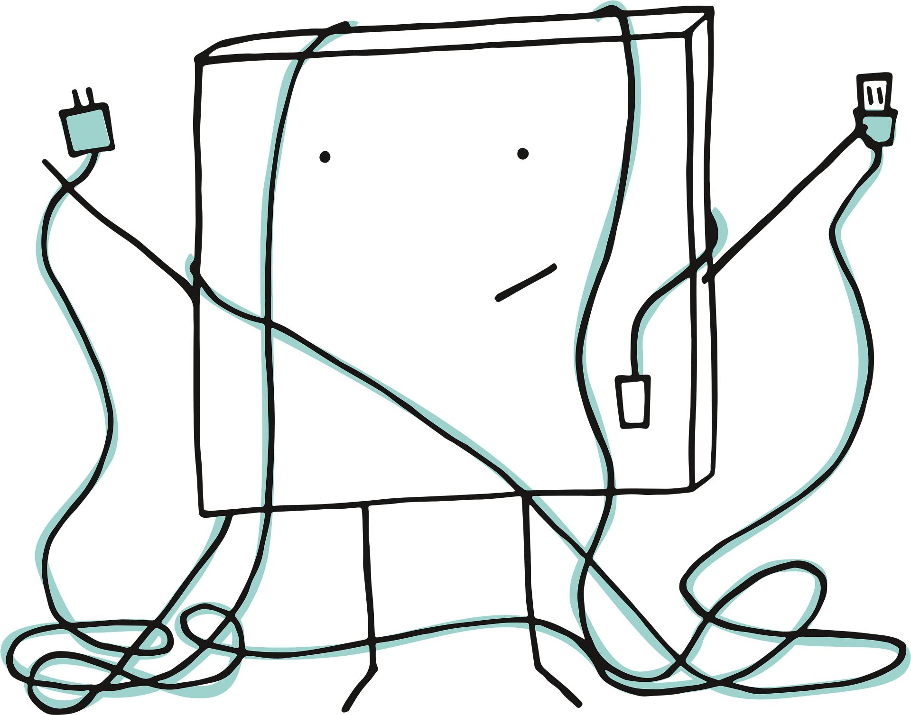
The word precision describes how tightly a Beta distribution is concentrated around its mean when \(\mu\) is held fixed. Start from
\[ \operatorname{Var}(Y) = \frac{ \mu(1-\mu) }{ 1+\phi }. \]
Suppose \(\mu\) is fixed. Then \(\mu(1-\mu)\) is a positive constant because \(0<\mu<1\). Differentiate the variance with respect to \(\phi\):
\[ \frac{\partial}{\partial\phi} \operatorname{Var}(Y) = \frac{\partial}{\partial\phi} \left[ \frac{ \mu(1-\mu) }{ 1+\phi } \right]. \]
Write the denominator using a negative power:
\[ \operatorname{Var}(Y) = \mu(1-\mu)(1+\phi)^{-1}. \]
Therefore,
\[ \begin{aligned} \frac{\partial}{\partial\phi} \operatorname{Var}(Y) &= \mu(1-\mu) (-1) (1+\phi)^{-2} \\ &= - \frac{ \mu(1-\mu) }{ (1+\phi)^2 }. \end{aligned} \]
Since
\[ \mu(1-\mu)>0 \]
and
\[ (1+\phi)^2>0, \]
we have
\[ \frac{\partial}{\partial\phi} \operatorname{Var}(Y) <0. \]
Thus, holding the mean fixed:
- larger \(\phi\) means smaller variance and tighter concentration around \(\mu\);
- smaller \(\phi\) means larger variance and greater dispersion around \(\mu\).
For example, hold
\[ \mu=0.70. \]
Then
\[ \mu(1-\mu) = (0.70)(0.30) = 0.21. \]
The variance becomes
\[ \operatorname{Var}(Y) = \frac{0.21}{1+\phi}. \]
Three precision values illustrate the effect in Table 5.22.
| \(\boldsymbol{\phi}\) | \(\boldsymbol{\alpha=\mu\phi}\) | \(\boldsymbol{\beta=(1-\mu)\phi}\) | \(\boldsymbol{\operatorname{Var}(Y)}\) | Interpretation |
|---|---|---|---|---|
| \(5\) | \(3.5\) | \(1.5\) | \(0.0350\) | Relatively dispersed |
| \(20\) | \(14\) | \(6\) | \(0.0100\) | More concentrated |
| \(100\) | \(70\) | \(30\) | \(0.0021\) | Highly concentrated around \(0.70\) |
Note that, in Table 5.22, the mean remains exactly \(0.70\) in all three cases. Only the concentration around that mean changes. However, this interpretation has an important qualification.
Heads-up on why constant precision does not mean constant variance!
The precision parameter \(\phi\) is not simply the reciprocal of the response variance. Recall that the variance is
\[ \operatorname{Var}(Y) = \frac{ \mu(1-\mu) }{ 1+\phi }, \]
so it depends on both \(\mu\) and \(\phi\).
Suppose precision is common across observations:
\[ \phi_i=\phi. \]
Then
\[ \operatorname{Var}(Y_i\mid\mathbf{x}_i) = \frac{ \mu_i(1-\mu_i) }{ 1+\phi }. \]
Even though the denominator is the same for every observation, the numerator can change because \(\mu_i\) changes.
To see the pattern mathematically, hold \(\phi\) fixed and define
\[ V(\mu) = \frac{ \mu(1-\mu) }{ 1+\phi }. \]
Differentiate with respect to \(\mu\):
\[ \begin{aligned} \frac{dV(\mu)}{d\mu} &= \frac{ 1-2\mu }{ 1+\phi }. \end{aligned} \]
Setting the derivative equal to zero gives
\[ 1-2\mu=0, \]
so
\[ \mu=\frac{1}{2}. \]
The second derivative is
\[ \frac{d^2V(\mu)}{d\mu^2} = -\frac{2}{1+\phi} <0, \]
so the variance is maximized at
\[ \mu=0.5. \]
As \(\mu\) moves away from \(0.5\) toward either boundary, \(\mu(1-\mu)\) decreases, and therefore the response-scale variance decreases even though \(\phi\) has not changed.
For example, with the same precision
\[ \phi=20, \]
a Beta distribution with \(\mu=0.50\) has
\[ \operatorname{Var}(Y) = \frac{(0.50)(0.50)}{21} = \frac{0.25}{21} \approx 0.01190, \]
whereas a Beta distribution with \(\mu=0.90\) has
\[ \operatorname{Var}(Y) = \frac{(0.90)(0.10)}{21} = \frac{0.09}{21} \approx 0.00429. \]
The precision is identical in both cases, but the response variance is not.
This distinction brings us directly back to the training EDA. The study-time categories have substantially different mean grades, and the higher-study-time groups have means closer to the upper boundary. Under a common-precision Beta model, the variance will therefore change automatically as the fitted conditional mean changes.
For the high-mean study-time groups, moving \(\mu_i\) closer to \(1\) reduces
\[ \mu_i(1-\mu_i), \]
which tends to reduce the conditional variance even when \(\phi\) is held constant. Yet the raw training distributions showed broadly comparable amounts of within-group spread across the four study-time categories. That does not prove that precision must vary. Instead, it gives the common-precision model a concrete characteristic to reproduce. Hence, we will begin with the simpler model,
\[ \phi_i=\phi, \]
fit it to the training data, and examine whether its fitted conditional distributions reproduce the observed variation adequately.
If they do, a more complicated precision structure is unnecessary. If they do not, the discrepancy will provide a statistical reason to consider a precision submodel rather than adding one automatically.
This is the key role of \(\phi\) in the modelling workflow:
It gives us a principled way to distinguish changes in the conditional mean from changes in concentration that cannot be explained by the Beta mean–variance relationship alone.
5.9 The Beta Regression Model
The previous section introduced the Beta distribution in its mean-precision parameterization and showed that
\[ \mathbb{E}(Y)=\mu \]
and
\[ \operatorname{Var}(Y) = \frac{\mu(1-\mu)}{1+\phi}. \]
Beta regression turns this probability distribution into a regression model by allowing the parameters that describe the conditional distribution of the response to depend on observed regressors. Hence, the central idea is to separate two modelling tasks. For observation \(i\):
- the mean submodel describes how the conditional centre \(\mu_i\) changes with regressors;
- the precision submodel describes how the conditional concentration \(\phi_i\) changes with regressors.
These two components jointly determine the conditional Beta distribution. In particular, changing \(\mu_i\) can change both the centre and the response-scale variance, whereas changing \(\phi_i\) changes concentration while holding \(\mu_i\) fixed. This distinction is exactly what we need after the training EDA in Section 5.7.4 and the mean–variance discussion in Section 5.8.4.
For notation, \(\mathbf{x}_i\) will denote the regressors used in the mean submodel, while \(\mathbf{z}_i\) will denote regressors used in the precision submodel. The two sets of regressors do not need to be identical. In the running case, the initial mean submodel will use the Study Time indicators defined in Section 5.4.2, whereas the precision submodel will initially contain only an intercept.
Tip on a short history of Beta regression!
Regression modelling with Beta-distributed responses predates the now-standard formulation of Beta regression. For example, Paolino (2001) studied maximum-likelihood regression models with Beta-distributed dependent variables for proportional outcomes in political science. Shortly afterward, Kieschnick and McCullough (2003) compared several approaches for responses observed strictly inside \((0,1)\) and recommended, among the useful alternatives, a parametric regression model based on the Beta distribution.
A particularly influential modern formulation was introduced by Ferrari and Cribari-Neto (2004). Their model reparameterized the Beta distribution in terms of a conditional mean and a precision parameter, related the conditional mean to regressors through a link function, and developed maximum-likelihood estimation, inference, and diagnostic tools. In that formulation, the precision parameter was common across observations.
The framework was subsequently expanded. Smithson and Verkuilen (2006) developed Beta regression models in which location and dispersion could be described by different sets of predictors, making systematic heteroskedasticity part of the model rather than an afterthought. Simas, Barreto-Souza, and Rocha (2010) extended the Ferrari–Cribari-Neto framework to allow regression structures for the precision parameter and nonlinear predictors. Later, Cribari-Neto and Zeileis (2010) provided a widely used implementation of constant- and variable-precision Beta regression through the {betareg} package in R (Kosmidis and Zeileis 2026).
Thus, the model used in this chapter reflects a broader development rather than a single isolated proposal: a Beta likelihood for continuous bounded responses, a regression structure for the conditional mean, and, when the data require it, a second regression structure for precision.
5.9.1 Conditional Beta Distribution
Let \(Y_i\) denote the prepared response for observational unit \(i\). As established in Section 5.5,
\[ 0<Y_i<1. \]
In the general Beta regression formulation, we assume
\[ Y_i \mid \mathbf{x}_i,\mathbf{z}_i \sim \operatorname{Beta} \left( \mu_i\phi_i,\, (1-\mu_i)\phi_i \right) \]
for
\[ i=1,\ldots,n, \]
where
\[ 0<\mu_i<1 \]
and
\[ \phi_i>0. \]
Thus, observation \(i\) has the two Beta shape parameters
\[ \alpha_i = \mu_i\phi_i \]
and
\[ \beta_i = (1-\mu_i)\phi_i. \]
Their sum is
\[ \begin{aligned} \alpha_i+\beta_i &= \mu_i\phi_i + (1-\mu_i)\phi_i \\ &= \mu_i\phi_i + \phi_i - \mu_i\phi_i \\ &= \phi_i. \end{aligned} \]
Therefore, the mean–precision results from Section 5.8.3 apply observation by observation. The conditional mean is
\[ \mathbb{E} \left( Y_i \mid \mathbf{x}_i,\mathbf{z}_i \right) = \mu_i, \]
and the conditional variance is
\[ \operatorname{Var} \left( Y_i \mid \mathbf{x}_i,\mathbf{z}_i \right) = \frac{ \mu_i(1-\mu_i) }{ 1+\phi_i }. \]
These expressions are worth reading together. The conditional mean depends on \(\mu_i\), but the conditional variance depends on both \(\mu_i\) and \(\phi_i\). Consequently, the model does not contain a separate constant response-variance parameter analogous to the \(\sigma^2\) of OLS regression.
For the likelihood-based analysis in this chapter, we additionally assume that observations are conditionally independent given their regressors. In other words, after conditioning on the information represented by \(\mathbf{x}_i\) and \(\mathbf{z}_i\), the model treats the remaining random variation in one student’s response as independent of the remaining random variation in another student’s response. This conditional Beta distribution is the probability component of the model. We now need regression structures that determine \(\mu_i\) and, when required, \(\phi_i\).
5.9.2 Mean Submodel
The mean submodel describes how the conditional mean of the bounded response changes with regressors. Let
\[ \mathbf{x}_i = \left( x_{i,1}, x_{i,2}, \ldots, x_{i,k} \right)^\mathsf{T} \]
denote the \(k\) non-intercept regressors included in a particular mean model. We define the linear predictor
\[ \eta_i = \beta_0 + \beta_1x_{i,1} + \beta_2x_{i,2} + \cdots + \beta_kx_{i,k}. \]
The linear predictor can take any real value:
\[ -\infty<\eta_i<\infty. \]
On the other hand, the conditional mean cannot. Because \(Y_i\) follows a Beta distribution,
\[ 0<\mu_i<1. \]
Therefore, we do not generally set \(\mu_i=\eta_i\) directly. Instead, a mean link function \(g(\cdot)\) connects the bounded conditional mean to the unrestricted linear predictor:
\[ g(\mu_i) = \eta_i = \beta_0 + \beta_1x_{i,1} + \cdots + \beta_kx_{i,k}. \]
The link maps
\[ g\text{: }(0,1)\longrightarrow\mathbb{R}. \]
Applying its inverse gives
\[ \mu_i = g^{-1}(\eta_i). \]
Hence, the regression equation is linear on the link scale, not necessarily on the response-mean scale:
\[ \mu_i = g^{-1} \left( \beta_0 + \beta_1x_{i,1} + \cdots + \beta_kx_{i,k} \right). \]
This distinction lets us use an ordinary linear predictor while ensuring that the fitted conditional mean remains compatible with the support of the response.
For our running case, the initial mean structure uses the three Study Time indicators already fixed in Section 5.4.2 and Section 5.5.4. With <1 hour as the reference category,
\[ \begin{aligned} x_{i,1} = \mathbb{1}\{\text{Study Time is 1-3 hours}\} \\ x_{i,2} = \mathbb{1}\{\text{Study Time is 3-5 hours}\} \\ x_{i,3} = \mathbb{1}\{\text{Study Time is 5+ hours}\}. \end{aligned} \]
Therefore, the core mean submodel is
\[ g(\mu_i) = \beta_0 + \beta_1x_{i,1} + \beta_2x_{i,2} + \beta_3x_{i,3}. \]
A student in the <1 hour reference category has
\[ x_{i,1}=x_{i,2}=x_{i,3}=0, \]
so that student’s linear predictor is simply
\[ \eta_i=\beta_0. \]
The treatment-coded specification does not assume that the four study-time categories are equally spaced. Each non-reference coefficient instead represents a comparison with the common <1 hour baseline on the chosen link scale.
Now, the next question is therefore:
Which link should connect \(\mu_i\) to \(\eta_i\)?
5.9.3 Logit Link for the Conditional Mean
In this chapter, we use the logit link for the conditional mean:
\[ \operatorname{logit}(\mu_i) = \log \left( \frac{\mu_i}{1-\mu_i} \right) = \eta_i. \tag{5.5}\]
This transformation is well defined because
\[ 0<\mu_i<1. \]
Hence,
\[ \mu_i>0 \]
and
\[ 1-\mu_i>0, \]
so
\[ \frac{\mu_i}{1-\mu_i}>0. \]
The logarithm of this positive ratio can take any real value, which makes it suitable for an unrestricted linear predictor.
To return from the linear predictor to the conditional mean, we solve the link equation step by step. Let us begin with
\[ \eta_i = \log \left( \frac{\mu_i}{1-\mu_i} \right). \]
Exponentiating both sides gives
\[ \exp(\eta_i) = \frac{\mu_i}{1-\mu_i}. \]
Then, we multiply both sides by \(1-\mu_i\):
\[ \exp(\eta_i)(1-\mu_i) = \mu_i. \]
Expand the left-hand side:
\[ \exp(\eta_i) - \mu_i\exp(\eta_i) = \mu_i. \]
Now, we add \(\mu_i\exp(\eta_i)\) to both sides:
\[ \exp(\eta_i) = \mu_i + \mu_i\exp(\eta_i). \]
Factor out \(\mu_i\) on the right-hand side:
\[ \exp(\eta_i) = \mu_i \left[ 1+\exp(\eta_i) \right]. \]
Finally, divide by \(1+\exp(\eta_i)\):
\[ \mu_i = \frac{ \exp(\eta_i) }{ 1+\exp(\eta_i) }. \]
Dividing the numerator and denominator by \(\exp(\eta_i)\) gives the equivalent form
\[ \mu_i = \frac{1}{ 1+\exp(-\eta_i) }. \]
Because
\[ \exp(\eta_i)>0, \]
the denominator is always larger than the numerator:
\[ 1+\exp(\eta_i) > \exp(\eta_i). \]
Therefore,
\[ 0 < \frac{ \exp(\eta_i) }{ 1+\exp(\eta_i) } < 1, \]
so the inverse-logit transformation automatically keeps the fitted conditional mean inside \((0,1)\).
For the running study-time model,
\[ \operatorname{logit}(\mu_i) = \beta_0 + \beta_1x_{i,1} + \beta_2x_{i,2} + \beta_3x_{i,3}. \]
The four study-time categories therefore have the link-scale conditional means
\[ \begin{aligned} \eta_{\text{<1 hour}} &= \beta_0, \\ \eta_{\text{1-3 hours}} &= \beta_0+\beta_1, \\ \eta_{\text{3-5 hours}} &= \beta_0+\beta_2, \\ \eta_{\text{5+ hours}} &= \beta_0+\beta_3. \end{aligned} \]
Applying the inverse logit gives
\[ \begin{aligned} \mu_{\text{<1 hour}} &= \frac{ \exp(\beta_0) }{ 1+\exp(\beta_0) }, \\[6pt] \mu_{\text{1-3 hours}} &= \frac{ \exp(\beta_0+\beta_1) }{ 1+\exp(\beta_0+\beta_1) }, \\[6pt] \mu_{\text{3-5 hours}} &= \frac{ \exp(\beta_0+\beta_2) }{ 1+\exp(\beta_0+\beta_2) }, \\[6pt] \mu_{\text{5+ hours}} &= \frac{ \exp(\beta_0+\beta_3) }{ 1+\exp(\beta_0+\beta_3) }. \end{aligned} \]
Thus, the coefficients are estimated on the logit scale, while the inverse link returns fitted conditional means to the proportion scale on which the response is modelled. Later, we will also return these means to the original percentage scale for substantive interpretation.
Heads-up on the logit link in Beta and Binary Logistic regression!
The logit function is the same mathematical transformation used in Binary Logistic regression, but it operates on a different quantity. In Binary Logistic regression,
\[ \operatorname{logit}(\pi_i) = \log \left( \frac{\pi_i}{1-\pi_i} \right), \]
where \(\pi_i\) is the conditional probability of a binary event.
On the other hand, in Beta regression,
\[ \operatorname{logit}(\mu_i) = \log \left( \frac{\mu_i}{1-\mu_i} \right), \]
where
\[ \mu_i = \mathbb{E} \left( Y_i\mid\mathbf{x}_i,\mathbf{z}_i \right) \]
is the conditional mean of a continuous bounded response.
Therefore, the two models use the same link function without modelling the same type of response.
For example, under the running treatment-coded mean model,
\[ \begin{aligned} \beta_1 &= \operatorname{logit} \left( \mu_{\text{1-3 hours}} \right) - \operatorname{logit} \left( \mu_{\text{<1 hour}} \right) \\ &= \log \left[ \frac{ \mu_{\text{1-3 hours}}/(1-\mu_{\text{1-3 hours}}) }{ \mu_{\text{<1 hour}}/(1-\mu_{\text{<1 hour}}) } \right]. \end{aligned} \]
Exponentiating gives
\[ \exp(\beta_1) = \frac{ \mu_{\text{1-3 hours}}/(1-\mu_{\text{1-3 hours}}) }{ \mu_{\text{<1 hour}}/(1-\mu_{\text{<1 hour}}) }. \]
This is a ratio of odds formed from conditional means. It is not an event odds ratio, because \(Y_i\) is not a binary event indicator. For this reason, our substantive interpretation later in the chapter will emphasize fitted conditional means and percentage-point contrasts rather than importing Binary Logistic regression language mechanically.
5.9.4 Precision Submodel
The mean submodel controls \(\mu_i\). Beta regression can also allow the precision parameter \(\phi_i\) to change systematically across observations. Thus, in general, let
\[ \mathbf{z}_i = \left( z_{i,1}, z_{i,2}, \ldots, z_{i,m} \right)^\mathsf{T} \]
denote the non-intercept regressors used in the precision submodel. These regressors can be the same as those in the mean submodel, a subset of them, a different set, or absent entirely beyond an intercept.
We introduce a precision linear predictor
\[ \zeta_i = \gamma_0 + \gamma_1z_{i,1} + \gamma_2z_{i,2} + \cdots + \gamma_mz_{i,m}. \]
Because
\[ \phi_i>0, \]
we again need a link function that respects the parameter space. In general,
\[ h(\phi_i) = \zeta_i = \gamma_0 + \gamma_1z_{i,1} + \cdots + \gamma_mz_{i,m}. \]
For the models fitted in this chapter, we use the log link:
\[ \log(\phi_i) = \gamma_0 + \gamma_1z_{i,1} + \cdots + \gamma_mz_{i,m}. \tag{5.6}\]
To obtain \(\phi_i\), exponentiate both sides:
\[ \exp \left[ \log(\phi_i) \right] = \exp(\zeta_i). \]
Since \(\exp[\log(\phi_i)]=\phi_i\) for \(\phi_i>0\),
\[ \phi_i = \exp(\zeta_i) = \exp \left( \gamma_0 + \gamma_1z_{i,1} + \cdots + \gamma_mz_{i,m} \right). \tag{5.7}\]
Because
\[ \exp(\zeta_i)>0 \]
for every real \(\zeta_i\), the log link guarantees that every fitted precision is positive.
A constant-precision Beta regression is the special case in which the precision submodel contains only an intercept:
\[ \log(\phi_i) = \gamma_0. \]
Exponentiating gives
\[ \phi_i = \exp(\gamma_0). \]
Because the right-hand side does not depend on \(i\),
\[ \phi_1 = \phi_2 = \cdots = \phi_n = \phi, \]
where
\[ \phi = \exp(\gamma_0). \]
Thus, constant precision is not a different probability model. It is the intercept-only special case of the general precision submodel.
When precision regressors are included, their coefficients have a multiplicative interpretation on the precision scale. Suppose two observations differ by one unit in \(z_{i,j}\) while all other precision regressors remain fixed. Their precision linear predictors differ by
\[ \gamma_j. \]
Hence, the ratio of their fitted precisions is
\[ \begin{aligned} \frac{\phi_{\text{new}}}{\phi_{\text{old}}} &= \frac{ \exp(\zeta+\gamma_j) }{ \exp(\zeta) } \\ &= \exp(\gamma_j). \end{aligned} \]
Therefore,
\[ \exp(\gamma_j) \]
is the multiplicative change in fitted precision associated with a one-unit increase in \(z_j\), holding the other precision regressors fixed.
Note that this does not translate directly into the reciprocal of a response-variance ratio. As established in Section 5.8.4,
\[ \operatorname{Var} \left( Y_i\mid\mathbf{x}_i,\mathbf{z}_i \right) = \frac{ \mu_i(1-\mu_i) }{ 1+\phi_i }, \]
so response-scale variance depends jointly on the mean and precision.
For the running case, we will deliberately begin with the simpler constant-precision specification,
\[ \log(\phi_i) = \gamma_0. \]
This choice follows the modelling strategy motivated by the EDA: first, determine whether one common precision can reproduce the conditional variation observed across study-time groups whose fitted means differ substantially. Only if the training-stage model checks show a meaningful lack of fit in the conditional spread will we introduce additional structure into the precision submodel.
Thus, the more flexible precision model is available because the probability model permits it, but it will be used only if the data provide a modelling reason for that additional complexity.
5.9.5 Is Beta Regression a GLM?
Beta regression has a structure that should look familiar from generalized linear models (GLMs). It has:
- a probability model for the response conditional on regressors;
- a linear predictor;
- a link function connecting a conditional mean to that linear predictor.
For the mean component,
\[ g(\mu_i) = \eta_i = \beta_0 + \beta_0 + \beta_1x_{i,1} + \beta_2x_{i,2} + \cdots + \beta_kx_{i,k}, \]
which is exactly the kind of mean-link-linear-predictor structure encountered in a GLM.
For this reason, Beta regression is often described as GLM-like or as using the modelling architecture of a GLM (Ferrari and Cribari-Neto 2004; Cribari-Neto and Zeileis 2010). Nevertheless, standard Beta regression is not simply another ordinary GLM family.
The distinction lies in the probability model. Classical GLMs use response distributions from the exponential dispersion family, whose probability structure has a particular relationship among the mean, variance, and dispersion parameter. Although the Beta distribution can be represented as a two-parameter exponential-family distribution, the standard Beta likelihood does not have the exponential-dispersion form required for an ordinary GLM. This is crucial because Beta regression is built from its own specialized likelihood,
\[ Y_i \mid \mathbf{x}_i,\mathbf{z}_i \sim \operatorname{Beta} \left( \mu_i\phi_i,\, (1-\mu_i)\phi_i \right), \]
with
\[ \operatorname{Var} \left( Y_i\mid\mathbf{x}_i,\mathbf{z}_i \right) = \frac{ \mu_i(1-\mu_i) }{ 1+\phi_i }. \]
Moreover, the model can contain a second linked regression structure for precision,
\[ h(\phi_i) = \gamma_0 + \gamma_1z_{i,1} + \gamma_2z_{i,2} + \cdots + \gamma_mz_{i,m}, \]
which is not part of the basic one-mean-submodel formulation students usually encounter when first learning GLMs.
Heads-up on calling Beta regression a GLM!
It is useful to recognize the strong family resemblance between Beta regression and GLMs, but we should not let that similarity erase an important distinction. A concise way to remember it is:
Beta regression uses a GLM-like mean structure, but it is fitted with a specialized Beta likelihood and may also contain its own precision submodel.
Accordingly, in R foe example, we should not think of standard Beta regression as merely another family passed to the ordinary glm() function. In this chapter, the model will be fitted with fitting functions designed specifically for the Beta likelihood and its mean–precision structure.
This distinction also helps organize the remainder of our case study. The mean submodel tells us how the centre of the bounded response distribution changes; the precision submodel tells us whether its concentration requires additional systematic structure; and the Beta likelihood combines both pieces into one conditional probability distribution. Therefore, the next modelling steps will fit the simpler study-time mean model with common precision first and then evaluate, using the training data, whether either component needs to become more complex.
5.10 Maximum Likelihood Estimation for Beta Regression
The previous section specified the Beta regression model by combining a conditional Beta distribution with separate mean and precision submodels. Now, we need to estimate the unknown coefficients in those submodels from the observed training data. That said, Beta regression is estimated by maximum likelihood. The basic principle is the same as in other likelihood-based regression models: among the candidate parameter values allowed by the model, we seek those that make the observed responses most compatible with the assumed conditional probability distribution.
For compactness in this section, we augment the mean and precision regressor vectors to include their intercepts:
\[ \widetilde{\mathbf{x}}_i = \begin{pmatrix} 1\\ x_{i,1}\\ \vdots\\ x_{i,k} \end{pmatrix}, \qquad \widetilde{\mathbf{z}}_i = \begin{pmatrix} 1\\ z_{i,1}\\ \vdots\\ z_{i,m} \end{pmatrix}. \tag{5.8}\]
Likewise, collect the corresponding coefficients into
\[ \boldsymbol{\beta} = \begin{pmatrix} \beta_0\\ \beta_1\\ \vdots\\ \beta_k \end{pmatrix}, \qquad \boldsymbol{\gamma} = \begin{pmatrix} \gamma_0\\ \gamma_1\\ \vdots\\ \gamma_m \end{pmatrix}. \]
Under the logit mean link and log precision link used in this chapter,
\[ \eta_i = \widetilde{\mathbf{x}}_i^\mathsf{T} \boldsymbol{\beta}, \qquad \mu_i = \frac{\exp(\eta_i)} {1+\exp(\eta_i)}, \]
and
\[ \zeta_i = \widetilde{\mathbf{z}}_i^\mathsf{T} \boldsymbol{\gamma}, \qquad \phi_i = \exp(\zeta_i). \]
Thus, the coefficients do not enter the Beta density directly. They first determine the two linear predictors, which determine \(\mu_i\) and \(\phi_i\), which in turn determine the two Beta shape parameters. Maximum likelihood estimates the coefficients by following this entire chain.
5.10.1 Conditional Probability Density Function
For observational unit \(i\), recall from Section 5.9.1 that
\[ Y_i \mid \mathbf{x}_i,\mathbf{z}_i \sim \operatorname{Beta} \left( \mu_i\phi_i,\, (1-\mu_i)\phi_i \right). \]
Define the observation-specific shape parameters
\[ a_i = \mu_i\phi_i \tag{5.9}\]
and
\[ b_i = (1-\mu_i)\phi_i. \tag{5.10}\]
Because
\[ a_i+b_i = \mu_i\phi_i + (1-\mu_i)\phi_i = \phi_i, \]
the conditional probability density function is
\[ f_Y \left( y_i;\mu_i,\phi_i \right) = \frac{ \Gamma(\phi_i) }{ \Gamma(\mu_i\phi_i) \Gamma\left[(1-\mu_i)\phi_i\right] } y_i^{\mu_i\phi_i-1} (1-y_i)^{(1-\mu_i)\phi_i-1}, \]
for \(0<y_i<1\). The notation
\[ f_Y \left( y_i;\mu_i,\phi_i \right) \]
emphasizes that \(y_i\) is the observed response value, whereas \(\mu_i\) and \(\phi_i\) are parameters of its conditional Beta distribution.
Those two parameters are themselves determined by the regression coefficients:
\[ \mu_i = \frac{ \exp \left( \widetilde{\mathbf{x}}_i^\mathsf{T} \boldsymbol{\beta} \right) }{ 1+ \exp \left( \widetilde{\mathbf{x}}_i^\mathsf{T} \boldsymbol{\beta} \right) } \]
and
\[ \phi_i = \exp \left( \widetilde{\mathbf{z}}_i^\mathsf{T} \boldsymbol{\gamma} \right). \]
Hence, changing a coefficient in \(\boldsymbol{\beta}\) changes the conditional mean and therefore changes the Beta density. Changing a coefficient in \(\boldsymbol{\gamma}\) changes the precision and also changes the Beta density. Therefore, the likelihood must estimate the two coefficient blocks jointly.
For the initial running model, the precision submodel contains only an intercept. In that special case,
\[ \widetilde{\mathbf{z}}_i = 1 \]
for every observation and
\[ \phi_i = \exp(\gamma_0) = \phi. \]
Thus, all training observations share the same precision, while their conditional means can still differ across study time categories.
5.10.2 Likelihood
Suppose the \(n\) responses are conditionally independent given the regressors, as assumed in Section 5.9.1. Then, the joint conditional density is the product of the observation-specific Beta densities. Therefore, the likelihood for the parameter vectors is
\[ \mathcal{L} \left( \boldsymbol{\beta}, \boldsymbol{\gamma}; \mathbf{y} \right) = \prod_{i=1}^{n} f_Y \left( y_i; \mu_i,\phi_i \right). \]
where
\[ \mathbf{y} = (y_1,\ldots,y_n)^\top \]
is the vector of observed training responses.
Substituting the Beta density gives
\[ \begin{aligned} \mathcal{L} \left( \boldsymbol{\beta}, \boldsymbol{\gamma}; \mathbf{y} \right) &= \prod_{i=1}^{n} \Bigg[ \frac{ \Gamma(\phi_i) }{ \Gamma(\mu_i\phi_i) \Gamma((1-\mu_i)\phi_i) } \times \\ &\qquad\qquad\qquad y_i^{\mu_i\phi_i-1} (1-y_i)^{(1-\mu_i)\phi_i-1} \Bigg]. \end{aligned} \tag{5.11}\]
Although the density in Equation 5.11 is written in terms of \(\mu_i\) and \(\phi_i\), the likelihood is ultimately a function of the regression coefficients because
\[ \mu_i = g^{-1} \left( \widetilde{\mathbf{x}}_i^\mathsf{T} \boldsymbol{\beta} \right) \]
and
\[ \phi_i = h^{-1} \left( \widetilde{\mathbf{z}}_i^\mathsf{T} \boldsymbol{\gamma} \right). \]
For the links used in this chapter,
\[ g^{-1}(\eta_i) = \frac{\exp(\eta_i)} {1+\exp(\eta_i)} \]
and
\[ h^{-1}(\zeta_i) = \exp(\zeta_i). \]
The maximum likelihood estimators are therefore defined by
\[ \left( \widehat{\boldsymbol{\beta}}, \widehat{\boldsymbol{\gamma}} \right) = \underset{ \boldsymbol{\beta}, \boldsymbol{\gamma} }{ \operatorname{arg\,max} } \; \mathcal{L} \left( \boldsymbol{\beta}, \boldsymbol{\gamma}; \mathbf{y} \right). \]
For the initial constant-precision model, the precision parameter vector reduces to the single parameter \(\gamma_0\). Hence,
\[ \left( \widehat{\boldsymbol{\beta}}, \widehat{\gamma}_0 \right) = \underset{ \boldsymbol{\beta}, \gamma_0 }{ \operatorname{arg\,max} } \; \mathcal{L} \left( \boldsymbol{\beta}, \gamma_0; \mathbf{y} \right), \]
where
\[ \phi = \exp(\gamma_0). \]
This formulation is crucial for later model refinement. Allowing precision to depend on study time does not replace the likelihood with a different type of likelihood. It enlarges \(\boldsymbol{\gamma}\) and therefore allows \(\phi_i\) to vary systematically across observations.
5.10.3 Log-likelihood
Products of many probability densities can be inconvenient numerically. Maximum-likelihood software therefore works with the log-likelihood,
\[ \ell \left( \boldsymbol{\beta}, \boldsymbol{\gamma}; \mathbf{y} \right) = \log\left[ \mathcal{L} \left( \boldsymbol{\beta}, \gamma_0; \mathbf{y} \right)\right]. \]
Because the logarithm of a product is a sum,
\[ \log \left( \prod_{i=1}^{n} a_i \right) = \sum_{i=1}^{n}\log(a_i), \]
we obtain
\[ \ell \left( \boldsymbol{\beta}, \boldsymbol{\gamma}; \mathbf{y} \right) = \sum_{i=1}^{n} \ell_i \left( \boldsymbol{\beta}, \boldsymbol{\gamma}; y_i \right), \]
where \(\ell_i(\cdot)\) is the contribution of observation \(i\).
We start from the conditional density:
\[ f_Y \left( y_i;\mu_i,\phi_i \right) = \frac{ \Gamma(\phi_i) }{ \Gamma(\mu_i\phi_i) \Gamma((1-\mu_i)\phi_i) } y_i^{\mu_i\phi_i-1} (1-y_i)^{(1-\mu_i)\phi_i-1}. \]
Taking the logarithm gives
\[ \begin{aligned} \ell_i \left( \boldsymbol{\beta}, \boldsymbol{\gamma}; y_i \right) &= \log \left\{ \frac{ \Gamma(\phi_i) }{ \Gamma(\mu_i\phi_i) \Gamma\left[(1-\mu_i)\phi_i\right] } \right\} + \\ &\qquad \log \left( y_i^{\mu_i\phi_i-1} \right) + \\ &\qquad \quad \log \left[ (1-y_i)^{(1-\mu_i)\phi_i-1} \right]. \end{aligned} \]
Use
\[ \log\left(\frac{a}{bc}\right) = \log(a)-\log(b)-\log(c) \]
and
\[ \log(a^r) = r\log(a). \]
Then
\[ \begin{aligned} \ell_i \left( \boldsymbol{\beta}, \boldsymbol{\gamma}; y_i \right) &= \log\left[\Gamma(\phi_i)\right] - \log\left[\Gamma(\mu_i\phi_i)\right] - \\ & \qquad \log\left\{\Gamma\left[(1-\mu_i)\phi_i\right]\right\} + \\ &\qquad \quad (\mu_i\phi_i-1)\log(y_i) + \\ &\qquad \quad \quad [(1-\mu_i)\phi_i-1] \log(1-y_i). \end{aligned} \tag{5.12}\]
Summing over all observations yields
\[ \begin{aligned} \ell \left( \boldsymbol{\beta}, \boldsymbol{\gamma}; \mathbf{y} \right) &= \sum_{i=1}^{n} \ell_i \left( \boldsymbol{\beta}, \boldsymbol{\gamma}; y_i \right) \\ &= \sum_{i=1}^{n} \Big\{ \log\left[\Gamma(\phi_i)\right] - \log\left[\Gamma(\mu_i\phi_i)\right] - \log\left\{\Gamma\left[(1-\mu_i)\phi_i\right]\right\} + \\ &\qquad (\mu_i\phi_i-1)\log(y_i) + \\ &\qquad \quad [(1-\mu_i)\phi_i-1] \log(1-y_i) \Big\}. \end{aligned} \]
The dependence on the regression coefficients can be summarized as
\[ \boldsymbol{\beta} \longrightarrow \eta_i = \widetilde{\mathbf{x}}_i^\mathsf{T} \boldsymbol{\beta} \longrightarrow \mu_i = \frac{\exp(\eta_i)} {1+\exp(\eta_i)}, \]
and
\[ \boldsymbol{\gamma} \longrightarrow \zeta_i = \widetilde{\mathbf{z}}_i^\mathsf{T} \boldsymbol{\gamma} \longrightarrow \phi_i = \exp(\zeta_i). \]
Hence, the resulting \(\mu_i\) and \(\phi_i\) enter every term of the observation-specific log-likelihood.
Because the logarithm is strictly increasing,
\[ \underset{ \boldsymbol{\beta}, \boldsymbol{\gamma} }{ \operatorname{arg\,max} } \; \mathcal{L} \left( \boldsymbol{\beta}, \boldsymbol{\gamma}; \mathbf{y} \right) = \underset{ \boldsymbol{\beta}, \boldsymbol{\gamma} }{ \operatorname{arg\,max} } \; \ell \left( \boldsymbol{\beta}, \boldsymbol{\gamma}; \mathbf{y} \right). \]
Thus, maximizing the log-likelihood produces exactly the same maximum likelihood estimates as maximizing the likelihood itself, while being substantially more convenient for computation.
5.10.4 Score and Numerical Estimation
To locate the maximum of the log-likelihood, we examine how the log-likelihood changes as the parameters change. Hence, we collect all regression coefficients into one vector,
\[ \boldsymbol{\theta} = \begin{pmatrix} \boldsymbol{\beta}\\ \boldsymbol{\gamma} \end{pmatrix}. \]
The score vector is the gradient of the log-likelihood:
\[ \mathbf{U} \left( \boldsymbol{\theta}; \mathbf{y} \right) = \frac{ \partial \ell(\boldsymbol{\theta}; \mathbf{y}) }{ \partial \boldsymbol{\theta} }. \]
At an interior maximum, the score is approximately zero:
\[ \mathbf{U} \left( \widehat{\boldsymbol{\theta}} \right) \approx \mathbf{0}. \]
Unlike a simple least-squares normal equation, however, the Beta regression score equations do not reduce to a closed-form solution. To see why, consider representative derivatives of one observation’s log-likelihood.
The derivative of the log-Gamma function introduces the digamma function,
\[ \psi(t) = \frac{d}{dt} \log\Gamma(t). \]
Tip on the digamma function!
The digamma function, also called the psi function, is the logarithmic derivative of the Gamma function:
\[ \psi(t) = \frac{d}{dt} \log\Gamma(t) = \frac{\Gamma'(t)}{\Gamma(t)}. \]
The second equality follows from the derivative of a logarithm. Since
\[ \frac{d}{dt}\log[f(t)] = \frac{f'(t)}{f(t)}, \]
setting
\[ f(t)=\Gamma(t) \]
gives
\[ \frac{d}{dt}\log\Gamma(t) = \frac{\Gamma'(t)}{\Gamma(t)}. \]
The digamma function appears naturally in Beta regression because the Beta log-likelihood contains several log-Gamma terms. Differentiating those terms when constructing the score therefore produces expressions involving \(\psi(\cdot)\).
In our Beta regression model, the arguments at which we evaluate the digamma function include
\[ \phi_i, \qquad \mu_i\phi_i, \qquad\text{and}\qquad (1-\mu_i)\phi_i. \]
All three are strictly positive because
\[ 0<\mu_i<1 \qquad\text{and}\qquad \phi_i>0. \]
Thus, although the digamma function is defined much more generally, Beta regression requires it here only at positive real-valued arguments.
The NIST Digital Library of Mathematical Functions provides a detailed reference for the Gamma and digamma functions, including their definitions and mathematical properties (Olver et al. 2026).
For compactness, as indicated in Equation 5.9 and Equation 5.10, recall
\[ a_i = \mu_i\phi_i, \qquad b_i = (1-\mu_i)\phi_i. \]
Differentiate \(\ell_i\left(\boldsymbol{\beta},\boldsymbol{\gamma};y_i\right)\), see Equation 5.12, with respect to \(\mu_i\), while holding \(\phi_i\) fixed. We proceed term by term.
Using the digamma identity introduced above,
\[ \frac{d}{dt}\log\Gamma(t) = \psi(t), \]
we can now differentiate each term of \(\ell_i\left(\boldsymbol{\beta},\boldsymbol{\gamma};y_i\right)\) with respect to \(\mu_i\), while holding \(\phi_i\) fixed.
The first term in \(\ell_i\left(\boldsymbol{\beta},\boldsymbol{\gamma};y_i\right)\), again see Equation 5.12,
\[ \log[\Gamma(\phi_i)], \]
does not depend on \(\mu_i\), so
\[ \frac{\partial}{\partial\mu_i} \log[\Gamma(\phi_i)] = 0. \]
For the second term in Equation 5.12,
\[ -\log[\Gamma(\mu_i\phi_i)], \]
the chain rule gives
\[ \begin{aligned} \frac{\partial}{\partial\mu_i} \left\{ -\log[\Gamma(\mu_i\phi_i)] \right\} &= -\psi(\mu_i\phi_i) \frac{\partial(\mu_i\phi_i)}{\partial\mu_i} \\ &= -\phi_i\psi(\mu_i\phi_i). \end{aligned} \]
For the third term in Equation 5.12,
\[ -\log\left\{\Gamma[(1-\mu_i)\phi_i]\right\}, \]
first note that
\[ \frac{\partial}{\partial\mu_i} [(1-\mu_i)\phi_i] = -\phi_i. \]
Therefore,
\[ \begin{aligned} \frac{\partial}{\partial\mu_i} \left\{ -\log\left\{\Gamma[(1-\mu_i)\phi_i]\right\} \right\} &= -\psi[(1-\mu_i)\phi_i] (-\phi_i) \\ &= \phi_i \psi[(1-\mu_i)\phi_i]. \end{aligned} \]
For the fourth term in Equation 5.12,
\[ (\mu_i\phi_i-1)\log(y_i), \]
we obtain
\[ \begin{aligned} \frac{\partial}{\partial\mu_i} \left[ (\mu_i\phi_i-1)\log(y_i) \right] &= \phi_i\log(y_i). \end{aligned} \]
Finally, in Equation 5.12, for
\[ [(1-\mu_i)\phi_i-1]\log(1-y_i), \]
we obtain
\[ \begin{aligned} \frac{\partial}{\partial\mu_i} \left\{ [(1-\mu_i)\phi_i-1]\log(1-y_i) \right\} &= -\phi_i\log(1-y_i). \end{aligned} \]
Putting the five derivatives together gives
\[ \begin{aligned} \frac{\partial\ell_i\left(\boldsymbol{\beta},\boldsymbol{\gamma};y_i\right)}{\partial\mu_i} &= 0 - \phi_i\psi(\mu_i\phi_i) + \phi_i\psi[(1-\mu_i)\phi_i] + \\ &\qquad \phi_i\log(y_i) - \phi_i\log(1-y_i). \end{aligned} \]
Every non-zero term contains \(\phi_i\), so we can factor it out:
\[ \begin{aligned} \frac{\partial\ell_i\left(\boldsymbol{\beta},\boldsymbol{\gamma};y_i\right)}{\partial\mu_i} &= \phi_i \left\{ -\psi(\mu_i\phi_i) + \psi[(1-\mu_i)\phi_i] + \log(y_i) - \log(1-y_i) \right\}. \end{aligned} \]
Since
\[ \log(y_i)-\log(1-y_i) = \log\left(\frac{y_i}{1-y_i}\right), \]
we finally obtain
\[ \frac{\partial\ell_i\left(\boldsymbol{\beta},\boldsymbol{\gamma};y_i\right)}{\partial\mu_i} = \phi_i \left[ \log\left(\frac{y_i}{1-y_i}\right) - \psi(\mu_i\phi_i) + \psi[(1-\mu_i)\phi_i] \right]. \tag{5.13}\]
Now, we differentiate Equation 5.12 with respect to \(\phi_i\), holding \(\mu_i\) fixed. Term by term,
\[ \frac{\partial}{\partial\phi_i} \log\left[\Gamma(\phi_i)\right] = \psi(\phi_i), \]
\[ \frac{\partial}{\partial\phi_i} \left\{ -\log\left[\Gamma(\mu_i\phi_i)\right] \right\} = -\mu_i\psi(\mu_i\phi_i), \]
and
\[ \frac{\partial}{\partial\phi_i} \left\{ -\log\left[\Gamma(1-\mu_i)\phi_i\right] \right\} = -(1-\mu_i) \psi((1-\mu_i)\phi_i). \]
The remaining terms contribute
\[ \mu_i\log(y_i) + (1-\mu_i)\log(1-y_i). \]
Hence,
\[ \begin{aligned} \frac{ \partial\ell_i\left(\boldsymbol{\beta},\boldsymbol{\gamma};y_i\right) }{ \partial\phi_i } &= \psi(\phi_i) - \mu_i\psi(\mu_i\phi_i) - \\ &\qquad (1-\mu_i) \psi((1-\mu_i)\phi_i) + \\ &\qquad \quad \mu_i\log(y_i) + (1-\mu_i)\log(1-y_i). \end{aligned} \tag{5.14}\]
Equation 5.13 and Equation 5.14 are the first partial derivatives with respect to the distributional parameters \(\mu_i\) and \(\phi_i\). The regression coefficients enter through the link functions, so we apply the chain rule again.
For mean coefficient \(\beta_j\),
\[ \frac{ \partial\ell_i\left(\boldsymbol{\beta},\boldsymbol{\gamma};y_i\right) }{ \partial\beta_j } = \frac{ \partial\ell_i\left(\boldsymbol{\beta},\boldsymbol{\gamma};y_i\right) }{ \partial\mu_i } \times \frac{ d\mu_i }{ d\eta_i } \times \frac{ \partial\eta_i }{ \partial\beta_j }. \]
From Equation 5.5, under the logit mean link,
\[ \operatorname{logit}(\mu_i) = \eta_i, \]
so the inverse link is
\[ \mu_i = \frac{\exp(\eta_i)} {1+\exp(\eta_i)}. \]
To obtain the derivative of \(\mu_i\) with respect to the linear predictor \(\eta_i\), we differentiate this expression directly. Using the quotient rule,
\[ \begin{aligned} \frac{d\mu_i}{d\eta_i} &= \frac{ \exp(\eta_i) \left[ 1+\exp(\eta_i) \right] - \exp(\eta_i)\exp(\eta_i) }{ \left[ 1+\exp(\eta_i) \right]^2 } \\ &= \frac{ \exp(\eta_i) + \exp(2\eta_i) - \exp(2\eta_i) }{ \left[ 1+\exp(\eta_i) \right]^2 } \\ &= \frac{ \exp(\eta_i) }{ \left[ 1+\exp(\eta_i) \right]^2 }. \end{aligned} \]
Now, recall that
\[ \mu_i = \frac{ \exp(\eta_i) }{ 1+\exp(\eta_i) }, \]
while
\[ 1-\mu_i = 1- \frac{ \exp(\eta_i) }{ 1+\exp(\eta_i) }. \]
Putting the terms over a common denominator gives
\[ \begin{aligned} 1-\mu_i &= \frac{ 1+\exp(\eta_i) }{ 1+\exp(\eta_i) } - \frac{ \exp(\eta_i) }{ 1+\exp(\eta_i) } \\ &= \frac{1}{ 1+\exp(\eta_i) }. \end{aligned} \]
Therefore,
\[ \begin{aligned} \mu_i(1-\mu_i) &= \left[ \frac{ \exp(\eta_i) }{ 1+\exp(\eta_i) } \right] \left[ \frac{ 1 }{ 1+\exp(\eta_i) } \right] \\ &= \frac{ \exp(\eta_i) }{ \left[ 1+\exp(\eta_i) \right]^2 }. \end{aligned} \]
Hence,
\[ \frac{ d\mu_i }{ d\eta_i } = \mu_i(1-\mu_i). \tag{5.15}\]
Next, recall that the mean linear predictor is
\[ \eta_i = \widetilde{\mathbf{x}}_i^\mathsf{T} \boldsymbol{\beta}. \]
Written in scalar form,
\[ \eta_i = \beta_0 + \beta_1x_{i,1} + \beta_2x_{i,2} + \cdots + \beta_kx_{i,k}. \]
Using the augmented regressor notation,
\[ \widetilde{\mathbf{x}}_i = \begin{pmatrix} 1\\ x_{i,1}\\ x_{i,2}\\ \vdots\\ x_{i,k} \end{pmatrix}, \]
we can write this more compactly as
\[ \eta_i = \sum_{j=0}^{k} \widetilde{x}_{i,j}\beta_j, \]
where
\[ \widetilde{x}_{i,0}=1. \]
Now, we differentiate \(\eta_i\) with respect to a particular mean-submodel coefficient \(\beta_j\). Every term that does not contain \(\beta_j\) is constant with respect to \(\beta_j\), while
\[ \frac{\partial}{\partial\beta_j} \left( \widetilde{x}_{i,j}\beta_j \right) = \widetilde{x}_{i,j}. \]
Therefore,
\[ \frac{ \partial\eta_i }{ \partial\beta_j } = \widetilde{x}_{i,j}. \tag{5.16}\]
For the intercept coefficient, \(j=0\), this becomes
\[ \frac{ \partial\eta_i }{ \partial\beta_0 } = \widetilde{x}_{i,0} = 1. \]
For any non-intercept coefficient, \(j=1,\ldots,k\);
\[ \frac{ \partial\eta_i }{ \partial\beta_j } = x_{i,j}. \]
Via Equation 5.13, Equation 5.15, and Equation 5.16; we can now substitute both pieces into the chain rule:
\[ \frac{ \partial\ell_i\left(\boldsymbol{\beta},\boldsymbol{\gamma};y_i\right) }{ \partial\beta_j } = \frac{ \partial\ell_i\left(\boldsymbol{\beta},\boldsymbol{\gamma};y_i\right) }{ \partial\mu_i } \times \frac{ d\mu_i }{ d\eta_i } \times \frac{ \partial\eta_i }{ \partial\beta_j }. \]
Since
\[ \frac{ d\mu_i }{ d\eta_i } = \mu_i(1-\mu_i) \]
and
\[ \frac{ \partial\eta_i }{ \partial\beta_j } = \widetilde{x}_{i,j}, \]
we obtain
\[ \frac{ \partial\ell_i\left(\boldsymbol{\beta},\boldsymbol{\gamma};y_i\right) }{ \partial\beta_j } = \widetilde{x}_{i,j} \mu_i(1-\mu_i) \left[ \frac{ \partial\ell_i\left(\boldsymbol{\beta},\boldsymbol{\gamma};y_i\right) }{ \partial\mu_i } \right]. \]
Similarly, for a precision-submodel coefficient \(\gamma_j\), the regression coefficient affects the observation-level log-likelihood through the precision parameter \(\phi_i\). Therefore, by the chain rule,
\[ \frac{ \partial\ell_i\left(\boldsymbol{\beta},\boldsymbol{\gamma};y_i\right) }{ \partial\gamma_j } = \frac{ \partial\ell_i\left(\boldsymbol{\beta},\boldsymbol{\gamma};y_i\right) }{ \partial\phi_i } \times \frac{ d\phi_i }{ d\zeta_i } \times \frac{ \partial\zeta_i }{ \partial\gamma_j }. \]
We now derive the last two factors separately, so recall Equation 5.6 and Equation 5.7. Under the log precision link,
\[ \log(\phi_i) = \zeta_i. \]
Applying the exponential function to both sides gives the inverse link,
\[ \phi_i = \exp(\zeta_i). \]
Let us differentiate \(\phi_i\) with respect to the precision linear predictor \(\zeta_i\):
\[ \begin{aligned} \frac{ d\phi_i }{ d\zeta_i } &= \frac{ d }{ d\zeta_i } \exp(\zeta_i) \\ &= \exp(\zeta_i). \end{aligned} \]
Since
\[ \phi_i = \exp(\zeta_i), \]
we obtain
\[ \frac{ d\phi_i }{ d\zeta_i } = \phi_i. \tag{5.17}\]
Next, recall that the precision linear predictor is
\[ \zeta_i = \widetilde{\mathbf{z}}_i^\mathsf{T} \boldsymbol{\gamma}. \]
Written in scalar form,
\[ \zeta_i = \gamma_0 + \gamma_1z_{i,1} + \gamma_2z_{i,2} + \cdots + \gamma_mz_{i,m}. \]
Using the augmented precision-regressor vector,
\[ \widetilde{\mathbf{z}}_i = \begin{pmatrix} 1\\ z_{i,1}\\ z_{i,2}\\ \vdots\\ z_{i,m} \end{pmatrix}, \]
we can write the same linear predictor as
\[ \zeta_i = \sum_{j=0}^{m} \widetilde{z}_{i,j}\gamma_j, \]
where
\[ \widetilde{z}_{i,0} = 1. \]
Now, differentiate \(\zeta_i\) with respect to a particular precision-submodel coefficient \(\gamma_j\). Every term that does not contain \(\gamma_j\) is constant with respect to \(\gamma_j\). The only term that contributes to the partial derivative is
\[ \widetilde{z}_{i,j}\gamma_j. \]
Therefore,
\[ \begin{aligned} \frac{ \partial\zeta_i }{ \partial\gamma_j } &= \frac{ \partial }{ \partial\gamma_j } \left( \widetilde{z}_{i,j}\gamma_j \right) \\ &= \widetilde{z}_{i,j}. \end{aligned} \tag{5.18}\]
For the precision intercept, \(j=0\), this becomes
\[ \frac{ \partial\zeta_i }{ \partial\gamma_0 } = \widetilde{z}_{i,0} = 1. \]
For any non-intercept precision coefficient, \(j=1,\ldots,m\),
\[ \frac{ \partial\zeta_i }{ \partial\gamma_j } = z_{i,j}. \]
Via Equation 5.14, Equation 5.17, and Equation 5.18, we can now substitute these pieces into the chain rule:
\[ \frac{ \partial\ell_i\left(\boldsymbol{\beta},\boldsymbol{\gamma};y_i\right) }{ \partial\gamma_j } = \widetilde{z}_{i,j} \phi_i \left[ \frac{ \partial\ell_i\left(\boldsymbol{\beta},\boldsymbol{\gamma};y_i\right) }{ \partial\phi_i } \right]. \]
Finally, the full score components are obtained by summing the observation-level derivatives:
\[ \frac{ \partial\ell \left( \boldsymbol{\beta}, \boldsymbol{\gamma}; \mathbf{y} \right) }{ \partial\beta_j } = \sum_{i=1}^{n} \frac{ \partial\ell_i\left(\boldsymbol{\beta},\boldsymbol{\gamma};y_i\right) }{ \partial\beta_j } \]
and
\[ \frac{ \partial\ell \left( \boldsymbol{\beta}, \boldsymbol{\gamma}; \mathbf{y} \right) }{ \partial\gamma_j } = \sum_{i=1}^{n} \frac{ \partial\ell_i\left(\boldsymbol{\beta},\boldsymbol{\gamma};y_i\right) }{ \partial\gamma_j }. \]
The resulting score equations contain the digamma function, inverse link functions, and parameters that occur inside one another. Consequently, there is generally no algebraic expression that can be rearranged to give \(\widehat{\boldsymbol{\beta}}\) and \(\widehat{\boldsymbol{\gamma}}\) directly. Instead, numerical optimization proceeds iteratively:
- choose starting values for the parameter vector;
- compute \(\mu_i\) and \(\phi_i\) from the current coefficients;
- evaluate the log-likelihood and its derivatives;
- update the coefficients in a direction that increases the log-likelihood;
- repeat until the optimization satisfies its convergence criteria.
Methods, such as Broyden–Fletcher–Goldfarb–Shanno (BFGS) (Fletcher 1987), use the score and information about local curvature to search efficiently for the maximum. This is why successful Beta regression fitting is a numerical optimization problem rather than a direct matrix calculation such as the closed-form OLS estimator.
5.10.5 Information, Covariance, and Model-based Standard Errors
The score describes the slope of the log-likelihood. Moreover, to quantify uncertainty around the maximum likelihood estimator, we also need the curvature of the log-likelihood. To do this, we need the matrix of second derivatives which is the Hessian:
\[ \mathbf{H} \left( \boldsymbol{\theta} \right) = \frac{ \partial^2 \ell(\boldsymbol{\theta}; \mathbf{y}) }{ \partial \boldsymbol{\theta} \partial \boldsymbol{\theta}^{\mathsf{T}} }. \]
Since we have digamma functions in some of our previous first partial derivatives, second derivatives of the digamma function introduce the trigamma function,
\[ \psi_1(t) = \frac{d}{dt}\psi(t) = \frac{d^2}{dt^2} \log\Gamma(t). \]
Tip on the trigamma function!
The trigamma function, denoted by \(\psi_1(t)\), is the derivative of the digamma function. Equivalently, it is the second derivative of the log-Gamma function:
\[ \psi_1(t) = \frac{d}{dt}\psi(t) = \frac{d^2}{dt^2}\log\Gamma(t). \]
The trigamma function is also the polygamma function of order \(1\). For positive real-valued arguments, it has the series representation
\[ \psi_1(t) = \sum_{k=0}^{\infty} \frac{1}{(t+k)^2}, \qquad t>0. \]
Every term in this series is positive. Therefore, \(\psi_1(t)>0\) whenever \(t>0\).
The trigamma function appears naturally in Beta regression because the first derivatives of the log-likelihood contain digamma terms. Differentiating those terms again when constructing the Hessian introduces \(\psi_1(\cdot)\).
In our Beta regression model, the relevant trigamma arguments include
\[ \phi_i, \qquad \mu_i\phi_i, \qquad\text{and}\qquad (1-\mu_i)\phi_i. \]
All three are strictly positive because \(0<\mu_i<1\) and \(\phi_i>0\). Hence, the positivity of the trigamma function becomes useful when studying the curvature of the Beta log-likelihood.
The NIST Digital Library of Mathematical Functions provides further details on the trigamma function as part of the broader family of polygamma functions (Olver et al. 2026).
For example, holding \(\phi_i\) fixed,
\[ \frac{ \partial^2\ell_i\left(\boldsymbol{\beta},\boldsymbol{\gamma};y_i\right) }{ \partial\mu_i^2 } = - \phi_i^2 \left\{ \psi_1(\mu_i\phi_i) + \psi_1\left[(1-\mu_i)\phi_i\right] \right\}. \]
The full Hessian must account for curvature involving both the mean-submodel coefficients \(\boldsymbol{\beta}\) and the precision-submodel coefficients \(\boldsymbol{\gamma}\). Recall that
\[ \boldsymbol{\theta} = \begin{pmatrix} \boldsymbol{\beta}\\ \boldsymbol{\gamma} \end{pmatrix}. \]
Therefore, the Hessian can be partitioned according to these two coefficient blocks:
\[ \mathbf{H}(\boldsymbol{\theta}) = \frac{ \partial^2\ell(\boldsymbol{\theta}) }{ \partial\boldsymbol{\theta} \partial\boldsymbol{\theta}^{\mathsf{T}} } = \begin{pmatrix} \dfrac{ \partial^2\ell \left( \boldsymbol{\beta}, \boldsymbol{\gamma}; \mathbf{y} \right) }{ \partial\boldsymbol{\beta} \partial\boldsymbol{\beta}^{\mathsf{T}} } & \dfrac{ \partial^2\ell \left( \boldsymbol{\beta}, \boldsymbol{\gamma}; \mathbf{y} \right) }{ \partial\boldsymbol{\beta} \partial\boldsymbol{\gamma}^{\mathsf{T}} } \\[14pt] \dfrac{ \partial^2\ell \left( \boldsymbol{\beta}, \boldsymbol{\gamma}; \mathbf{y} \right) }{ \partial\boldsymbol{\gamma} \partial\boldsymbol{\beta}^{\mathsf{T}} } & \dfrac{ \partial^2\ell \left( \boldsymbol{\beta}, \boldsymbol{\gamma}; \mathbf{y} \right) }{ \partial\boldsymbol{\gamma} \partial\boldsymbol{\gamma}^{\mathsf{T}} } \end{pmatrix}. \]
The upper-left block,
\[ \frac{ \partial^2\ell \left( \boldsymbol{\beta}, \boldsymbol{\gamma}; \mathbf{y} \right) }{ \partial\boldsymbol{\beta} \partial\boldsymbol{\beta}^{\mathsf{T}} }, \]
describes the curvature of the log-likelihood with respect to the mean-submodel coefficients.
The lower-right block,
\[ \frac{ \partial^2\ell \left( \boldsymbol{\beta}, \boldsymbol{\gamma}; \mathbf{y} \right) }{ \partial\boldsymbol{\gamma} \partial\boldsymbol{\gamma}^{\mathsf{T}} }, \]
describes the curvature with respect to the precision-submodel coefficients.
The two off-diagonal blocks,
\[ \frac{ \partial^2\ell \left( \boldsymbol{\beta}, \boldsymbol{\gamma}; \mathbf{y} \right) }{ \partial\boldsymbol{\beta} \partial\boldsymbol{\gamma}^{\mathsf{T}} } \qquad\text{and}\qquad \frac{ \partial^2\ell \left( \boldsymbol{\beta}, \boldsymbol{\gamma}; \mathbf{y} \right) }{ \partial\boldsymbol{\gamma} \partial\boldsymbol{\beta}^{\mathsf{T}} }, \]
describe how changes in the mean and precision coefficient estimates are related through the curvature of the same Beta log-likelihood. Under the usual smoothness conditions for the log-likelihood, these cross-derivative blocks are transposes of one another:
\[ \frac{ \partial^2\ell \left( \boldsymbol{\beta}, \boldsymbol{\gamma}; \mathbf{y} \right) }{ \partial\boldsymbol{\gamma} \partial\boldsymbol{\beta}^{\mathsf{T}} } = \left[ \frac{ \partial^2\ell \left( \boldsymbol{\beta}, \boldsymbol{\gamma}; \mathbf{y} \right) }{ \partial\boldsymbol{\beta} \partial\boldsymbol{\gamma}^{\mathsf{T}} } \right]^{\mathsf{T}}. \]
The observed information matrix is defined as the negative Hessian:
\[ \mathbf{J}(\boldsymbol{\theta}) = - \mathbf{H}(\boldsymbol{\theta}). \]
Hence, its block form is
\[ \mathbf{J}(\boldsymbol{\theta}) = - \begin{pmatrix} \dfrac{ \partial^2\ell \left( \boldsymbol{\beta}, \boldsymbol{\gamma}; \mathbf{y} \right) }{ \partial\boldsymbol{\beta} \partial\boldsymbol{\beta}^{\mathsf{T}} } & \dfrac{ \partial^2\ell \left( \boldsymbol{\beta}, \boldsymbol{\gamma}; \mathbf{y} \right) }{ \partial\boldsymbol{\beta} \partial\boldsymbol{\gamma}^{\mathsf{T}} } \\[14pt] \dfrac{ \partial^2\ell \left( \boldsymbol{\beta}, \boldsymbol{\gamma}; \mathbf{y} \right) }{ \partial\boldsymbol{\gamma} \partial\boldsymbol{\beta}^{\mathsf{T}} } & \dfrac{ \partial^2\ell \left( \boldsymbol{\beta}, \boldsymbol{\gamma}; \mathbf{y} \right) }{ \partial\boldsymbol{\gamma} \partial\boldsymbol{\gamma}^{\mathsf{T}} } \end{pmatrix}. \]
Equivalently, we can denote the four blocks by
\[ \mathbf{J}(\boldsymbol{\theta}) = \begin{pmatrix} \mathbf{J}_{\beta\beta} & \mathbf{J}_{\beta\gamma} \\ \mathbf{J}_{\gamma\beta} & \mathbf{J}_{\gamma\gamma} \end{pmatrix}, \]
where, for example,
\[ \mathbf{J}_{\beta\gamma} = - \frac{ \partial^2\ell \left( \boldsymbol{\beta}, \boldsymbol{\gamma}; \mathbf{y} \right) }{ \partial\boldsymbol{\beta} \partial\boldsymbol{\gamma}^{\mathsf{T}} }. \]
The expected Fisher information matrix is the expectation of the observed information under the assumed model:
\[ \mathbf{I}(\boldsymbol{\theta}) = \mathbb{E}_{\boldsymbol{\theta}} \left[ \mathbf{J}(\boldsymbol{\theta}) \right] = \mathbb{E}_{\boldsymbol{\theta}} \left[ - \mathbf{H}(\boldsymbol{\theta}) \right]. \]
Thus,
\[ \mathbf{I}(\boldsymbol{\theta}) = \begin{pmatrix} \mathbf{I}_{\beta\beta} & \mathbf{I}_{\beta\gamma} \\ \mathbf{I}_{\gamma\beta} & \mathbf{I}_{\gamma\gamma} \end{pmatrix}, \]
with
\[ \mathbf{I}_{\beta\beta} = \mathbb{E}_{\boldsymbol{\theta}} \left[ - \frac{ \partial^2\ell \left( \boldsymbol{\beta}, \boldsymbol{\gamma}; \mathbf{y} \right) }{ \partial\boldsymbol{\beta} \partial\boldsymbol{\beta}^{\mathsf{T}} } \right], \]
\[ \mathbf{I}_{\beta\gamma} = \mathbb{E}_{\boldsymbol{\theta}} \left[ - \frac{ \partial^2\ell \left( \boldsymbol{\beta}, \boldsymbol{\gamma}; \mathbf{y} \right) }{ \partial\boldsymbol{\beta} \partial\boldsymbol{\gamma}^{\mathsf{T}} } \right], \]
\[ \mathbf{I}_{\gamma\beta} = \mathbb{E}_{\boldsymbol{\theta}} \left[ - \frac{ \partial^2\ell \left( \boldsymbol{\beta}, \boldsymbol{\gamma}; \mathbf{y} \right) }{ \partial\boldsymbol{\gamma} \partial\boldsymbol{\beta}^{\mathsf{T}} } \right], \]
and
\[ \mathbf{I}_{\gamma\gamma} = \mathbb{E}_{\boldsymbol{\theta}} \left[ - \frac{ \partial^2\ell \left( \boldsymbol{\beta}, \boldsymbol{\gamma}; \mathbf{y} \right) }{ \partial\boldsymbol{\gamma} \partial\boldsymbol{\gamma}^{\mathsf{T}} } \right]. \]
Now suppose that the true parameter vector is
\[ \boldsymbol{\theta}_0 = \begin{pmatrix} \boldsymbol{\beta}_0\\ \boldsymbol{\gamma}_0 \end{pmatrix}. \]
Under the usual maximum-likelihood regularity conditions and a correctly specified model, the maximum likelihood estimator is asymptotically Normal. More formally,
\[ \sqrt{n} \left( \widehat{\boldsymbol{\theta}} - \boldsymbol{\theta}_0 \right) \xrightarrow{d} \mathcal{N} \left( \mathbf{0}, \mathbf{I}_1(\boldsymbol{\theta}_0)^{-1} \right), \]
where \(\mathbf{I}_1(\boldsymbol{\theta}_0)\) denotes the Fisher information contributed per observation.
Since the total Fisher information from \(n\) observations is
\[ \mathbf{I}_n(\boldsymbol{\theta}_0) = n\mathbf{I}_1(\boldsymbol{\theta}_0), \]
the equivalent large-sample approximation is
\[ \widehat{\boldsymbol{\theta}} \;\dot{\sim}\; \operatorname{Normal} \left( \boldsymbol{\theta}_0, \mathbf{I}_n(\boldsymbol{\theta}_0)^{-1} \right). \]
Here, \(\dot{\sim}\) means approximately distributed as, rather than exactly distributed as.
Because the true parameter vector \(\boldsymbol{\theta}_0\) is unknown, the information matrix is evaluated at the maximum likelihood estimate in practice. Therefore, using the expected Fisher information, a model-based estimator of the covariance matrix of the maximum likelihood estimator is
\[ \widehat{ \operatorname{Cov} } \left( \widehat{\boldsymbol{\theta}} \right) = \mathbf{I}_n \left( \widehat{\boldsymbol{\theta}} \right)^{-1}. \]
If the observed information is used instead, then
\[ \widehat{ \operatorname{Cov} } \left( \widehat{\boldsymbol{\theta}} \right) = \mathbf{J} \left( \widehat{\boldsymbol{\theta}} \right)^{-1}. \]
Since
\[ \widehat{\boldsymbol{\theta}} = \begin{pmatrix} \widehat{\boldsymbol{\beta}}\\ \widehat{\boldsymbol{\gamma}} \end{pmatrix}, \]
its estimated covariance matrix can also be partitioned according to the mean- and precision-submodel coefficients:
\[ \widehat{ \operatorname{Cov} } \left( \widehat{\boldsymbol{\theta}} \right) = \begin{pmatrix} \widehat{\mathbf{V}}_{\beta\beta} & \widehat{\mathbf{V}}_{\beta\gamma} \\ \widehat{\mathbf{V}}_{\gamma\beta} & \widehat{\mathbf{V}}_{\gamma\gamma} \end{pmatrix}. \]
The block
\[ \widehat{\mathbf{V}}_{\beta\beta} \]
contains the estimated variances and covariances of the mean-submodel coefficient estimators, whereas
\[ \widehat{\mathbf{V}}_{\gamma\gamma} \]
contains the estimated variances and covariances of the precision-submodel coefficient estimators. The off-diagonal blocks,
\[ \widehat{\mathbf{V}}_{\beta\gamma} \qquad\text{and}\qquad \widehat{\mathbf{V}}_{\gamma\beta}, \]
contain the estimated covariances between the two sets of coefficient estimators.
The model-based SE of a coefficient estimate is obtained from the corresponding diagonal element of this covariance matrix. Recall that a diagonal element of a covariance matrix is a variance. Therefore, for a mean-submodel coefficient \(\widehat{\beta}_j\),
\[ \widehat{ \operatorname{Var} } \left( \widehat{\beta}_j \right) = \left[ \widehat{\mathbf{V}}_{\beta\beta} \right]_{jj}, \]
and its model-based SE is
\[ \operatorname{SE} \left( \widehat{\beta}_j \right) = \sqrt{ \left[ \widehat{\mathbf{V}}_{\beta\beta} \right]_{jj} }. \]
Similarly, for a precision-submodel coefficient \(\widehat{\gamma}_j\),
\[ \widehat{ \operatorname{Var} } \left( \widehat{\gamma}_j \right) = \left[ \widehat{\mathbf{V}}_{\gamma\gamma} \right]_{jj}, \]
so
\[ \operatorname{SE} \left( \widehat{\gamma}_j \right) = \sqrt{ \left[ \widehat{\mathbf{V}}_{\gamma\gamma} \right]_{jj} }. \]
More generally, if \(\widehat{\theta}_j\) denotes any element of the joint parameter vector \(\widehat{\boldsymbol{\theta}}\), then
\[ \operatorname{SE} \left( \widehat{\theta}_j \right) = \sqrt{ \left[ \widehat{ \operatorname{Cov} } \left( \widehat{\boldsymbol{\theta}} \right) \right]_{jj} }. \]
Thus, the curvature of the Beta log-likelihood provides not only the maximum likelihood estimates themselves but also a model-based measure of how much sampling uncertainty is associated with each estimated mean or precision-submodel coefficient.
Heads-up on what “model-based” SEs mean!
The SEs above are called model-based because they are obtained from the information matrix implied by the fitted Beta regression model. Thus, they are not assumption-free measures of uncertainty. Their reliability depends on the adequacy of the probability model from which the likelihood and information matrix were derived. In particular, the calculation assumes that:
- the conditional Beta distribution provides a reasonable representation of the bounded response;
- the observations can reasonably be treated as conditionally independent;
- the mean submodel represents the systematic structure in \(\mu_i\) adequately; and
- the precision submodel represents the systematic structure in \(\phi_i\) adequately.
Successful numerical optimization does not establish that these assumptions are satisfactory. The optimizer may successfully locate a maximum of the specified likelihood even when that likelihood is too restrictive for the observed data. Hence, this distinction will be crucial in our running case. We will first fit a Beta regression with a constant precision parameter. The SEs from that model quantify uncertainty under that particular mean and precision specification. They do not, by themselves, establish that constant precision is an adequate description of the conditional variation in final grades.
Therefore, we will assess the fitted model using the training data before relying on its uncertainty estimates for the final analysis. If the precision structure proves inadequate, we will refine that part of the model and obtain SEs from the resulting specification.
5.10.6 How the Software Fits the Model
The previous subsections developed maximum likelihood estimation (MLE) for Beta regression mathematically. Software implements that same likelihood problem by turning the model formulas into a mean design matrix and a precision design matrix, applying the specified inverse links to obtain \(\mu_i\) and \(\phi_i\), and numerically maximizing the Beta log-likelihood over the corresponding parameter vectors.
The two implementations used in this chapter expose the mean and precision components differently:
- In
R,betareg(), from the {betareg} package, uses a two-part formula of the formresponse ~ mean regressors | precision regressors(Cribari-Neto and Zeileis 2010). - In
Python,statsmodels.othermod.betareg.BetaModel, from {statsmodels}, receives the mean specification through the main formula and can receive a separate precision specification throughexog_precision_formula.
Once these designs and links have been supplied, both implementations estimate the coefficients by maximum likelihood and return likelihood-based covariance information for the fitted parameters. Their numerical optimization and covariance calculations need not follow exactly the same computational path, so matched fits should produce closely agreeing estimates even if very small numerical differences remain.
Heads-up on software defaults for the precision link!
A constant-precision model does not guarantee that two software packages will report the precision coefficient on the same scale. In R’s betareg(), a one-part constant-precision formula can use the identity precision link for backward compatibility, whereas Python’s BetaModel uses a log precision link by default.
Because this chapter develops the precision submodel using \(\log(\phi_i)\), we will state the mean and precision links explicitly in every fitted model rather than rely on defaults. This keeps the statistical parameterization aligned across R and Python.
The next section now applies this general software machinery to the first concrete model in the running case.
5.11 Initial Constant-precision Beta Regression
We begin model development with a Beta regression fitted only to the training data. The mean submodel contains Study Time, reflecting the strong ordered shift in grade location observed in Table 5.16, while the precision submodel initially contains only an intercept.
The constant-precision restriction is a deliberately simple starting point, not a conclusion reached from the EDA. Recall that
\[ \operatorname{Var}(Y_i\mid\mathbf{x}_i) = \frac{\mu_i(1-\mu_i)}{1+\phi_i}. \]
Therefore, the conditional response variance can change as \(\mu_i\) changes even when \(\phi_i\) is constant. The comparatively similar raw within-category standard deviations observed earlier do not establish that a common precision parameter is adequate. We will test that restriction during the training-stage model-adequacy assessment.
5.11.1 Model Specification
Recall that <1 hour is the treatment-coding reference category fixed in Section 5.5.4. Define the three non-reference Study Time indicators as
\[ \begin{aligned} x_{i,1} &= \mathbb{1}\{\text{Study Time is 1–3 hours}\},\\ x_{i,2} &= \mathbb{1}\{\text{Study Time is 3–5 hours}\},\\ x_{i,3} &= \mathbb{1}\{\text{Study Time is 5+ hours}\}. \end{aligned} \]
All three indicators equal zero for a student in the <1 hour reference category. The initial conditional-mean submodel is
\[ \operatorname{logit}(\mu_i) = \beta_0 + \beta_1x_{i,1} + \beta_2x_{i,2} + \beta_3x_{i,3}. \tag{5.19}\]
Thus, \(\beta_0\) is the logit of the conditional mean for the <1 hour category, while \(\beta_1\), \(\beta_2\), and \(\beta_3\) are logit-mean contrasts between their respective categories and that reference group. Treatment coding does not impose equal spacing or a linear trend across the four study-time categories.
For the initial precision submodel,
\[ \log(\phi_i) = \gamma_0, \tag{5.20}\]
so
\[ \phi_i = \exp(\gamma_0) = \phi \tag{5.21}\]
for every training observation. Combining Equation 5.19 and Equation 5.21 gives
\[ Y_i \mid \mathbf{x}_i \sim \operatorname{Beta} \left( \mu_i\phi,\, (1-\mu_i)\phi \right). \]
The model therefore allows the conditional mean to differ across Study Time categories while imposing one common precision parameter. The adequacy of that restriction remains to be assessed.
5.11.2 R and Python Fitting
The following code implements Equation 5.19 and Equation 5.20 in the two software environments. The response preparation and category coding were already fixed earlier in the workflow, so this step only fits the specified model.
beta_constant_model <- betareg(
grade_beta ~ `Study Time` | 1,
data = training_data,
link = "logit", link.phi = "log",
type = "ML", dist = "beta",
control = betareg.control(method = "BFGS")
)import statsmodels.api as sm
from statsmodels.othermod.betareg import BetaModel
beta_constant_model = BetaModel.from_formula(
'grade_beta ~ C(Q("Study Time"), Treatment(reference="<1 hour"))',
data=training_data,
exog_precision_formula="1",
link=sm.families.links.Logit(),
link_precision=sm.families.links.Log(),
).fit(method="bfgs", maxiter=1000, disp=False)In R (Listing 5.12), the expression before | specifies the mean submodel and | 1 specifies an intercept-only precision submodel. On the other hand, in Python (Listing 5.13), the main formula supplies the same treatment-coded mean design and exog_precision_formula="1" supplies the precision intercept. The explicit logit and log links enforce the common parameterization established in Section 5.11.1.
Note that the R call also sets dist = "beta" explicitly because grade_beta was prepared in Section 5.5.3 to lie strictly inside \((0,1)\); hence, the intended likelihood is the classical Beta likelihood developed in Section 5.10.1. Both fits use MLE with BFGS optimization.
5.11.3 Initial Coefficient Output
Before assessing model adequacy, we record the coefficient estimates and model-based SEs from the training fit. These quantities document what the fitted model estimated; they are not yet the basis for final inferential conclusions.
beta_constant_parameters <- unname(coef(beta_constant_model))
beta_constant_standard_errors <- unname(
sqrt(diag(vcov(beta_constant_model)))
)
stopifnot(
length(beta_constant_parameters) == 5L,
length(beta_constant_standard_errors) == 5L
)
beta_constant_phi <- exp(beta_constant_parameters[5])
beta_constant_coefficients <- tibble(
Component = c(rep("Mean", 4), "Precision"),
Term = c(
"Intercept (<1 hour)",
"Study Time: 1–3 hours vs <1 hour",
"Study Time: 3–5 hours vs <1 hour",
"Study Time: 5+ hours vs <1 hour",
"Intercept"
),
Estimate = beta_constant_parameters,
`Model-based SE` = beta_constant_standard_errors
)
beta_constant_coefficients_display <- beta_constant_coefficients |>
mutate(across(c(Estimate, `Model-based SE`),
~ formatC(.x, format = "f", digits = 4)))
beta_constant_coefficients_display |>
kable(align = c("c", "c", "c", "c"))| Component | Term | Estimate | Model-based SE |
|---|---|---|---|
| Mean | Intercept (<1 hour) | 0.6448 | 0.0230 |
| Mean | Study Time: 1–3 hours vs <1 hour | 0.4531 | 0.0344 |
| Mean | Study Time: 3–5 hours vs <1 hour | 1.1291 | 0.0391 |
| Mean | Study Time: 5+ hours vs <1 hour | 1.7175 | 0.0463 |
| Precision | Intercept | 3.7771 | 0.0533 |
beta_constant_parameters = np.asarray(beta_constant_model.params)
beta_constant_standard_errors = np.asarray(beta_constant_model.bse)
assert (
beta_constant_parameters.size == 5
and beta_constant_standard_errors.size == 5
)
beta_constant_phi = np.exp(beta_constant_parameters[4])
beta_constant_coefficients = pd.DataFrame({
"Component": ["Mean"] * 4 + ["Precision"],
"Term": [
"Intercept (<1 hour)",
"Study Time: 1–3 hours vs <1 hour",
"Study Time: 3–5 hours vs <1 hour",
"Study Time: 5+ hours vs <1 hour",
"Intercept",
],
"Estimate": beta_constant_parameters,
"Model-based SE": beta_constant_standard_errors,
})
beta_constant_coefficients_display = beta_constant_coefficients.copy()
for column in ["Estimate", "Model-based SE"]:
beta_constant_coefficients_display[column] = (
beta_constant_coefficients_display[column]
.map(lambda value: f"{value:.4f}"))
beta_constant_coefficients_html = scrollable_table_html(
beta_constant_coefficients_display)| Component | Term | Estimate | Model-based SE |
|---|---|---|---|
| Mean | Intercept (<1 hour) | 0.6448 | 0.0230 |
| Mean | Study Time: 1–3 hours vs <1 hour | 0.4531 | 0.0344 |
| Mean | Study Time: 3–5 hours vs <1 hour | 1.1291 | 0.0391 |
| Mean | Study Time: 5+ hours vs <1 hour | 1.7175 | 0.0463 |
| Precision | Intercept | 3.7771 | 0.0533 |
The first four rows in Table 5.23 correspond to the mean-submodel parameters in Equation 5.19, while the final row is the precision intercept \(\widehat{\gamma}_0\) from Equation 5.20. As anticipated in Section 5.10.6, the matched R and Python fits agree extremely closely: both the coefficient estimates and their model-based SEs are identical to the four decimal places displayed in Table 5.23 and Table 5.24. This agreement provides a useful implementation check that the two software specifications are representing the same fitted Beta regression model.
The estimated precision intercept is \(\widehat{\gamma}_0= \text{3.7771}\). Because the precision submodel uses the log link,
\[ \widehat{\phi} = \exp(\widehat{\gamma}_0) = \text{43.691}, \]
the value 43.691 is the fitted common precision parameter of the conditional Beta distributions. It is not a probability, a grade percentage, or a standard deviation. Under the mean–precision parameterization introduced in Section 5.8.2, each fitted conditional distribution has shape parameters
\[ \widehat{\alpha}_i = \widehat{\mu}_i\widehat{\phi}, \qquad \widehat{\beta}_i = (1-\widehat{\mu}_i)\widehat{\phi}, \]
so that \(\widehat{\alpha}_i+\widehat{\beta}_i=\widehat{\phi}\). Because the current precision submodel contains only an intercept, the same value 43.691 is used for every student, while the fitted conditional mean \(\widehat{\mu}_i\) changes across the Study Time categories. For any given conditional mean, a larger value of \(\phi\) corresponds to a Beta distribution that is more concentrated around that mean. However, the conditional variance still depends on both quantities,
\[ \widehat{\operatorname{Var}}(Y_i\mid\mathbf{x}_i) = \frac{ \widehat{\mu}_i(1-\widehat{\mu}_i) }{ 1+\widehat{\phi} }, \]
so a common value of \(\widehat{\phi}\) does not imply equal conditional variances across the four study-time groups.
At this stage, the coefficient table should still be read only on the scales defined by the model. The three non-intercept mean coefficients are contrasts relative to <1 hour on the logit-mean scale, while the precision intercept is on the log-precision scale. Likewise, the model-based SEs quantify uncertainty under the current mean and constant-precision assumptions. Therefore, we postpone grade-scale interpretation, Wald \(p\)-values, CIs, and final inferential statements until the model specification has passed its training-stage goodness-of-fit checks.
5.12 Goodness of Fit and Model Adequacy for the Constant-precision Model
Fitting a Beta regression using the proper coding syntax is only the beginning of the modelling stage. We now ask whether the fitted model provides a reasonable description of the training data before using it for substantive interpretation or freezing the specification.
The checks below target different aspects of adequacy:
- numerical stability asks whether the likelihood optimization produced a usable solution;
- observed-versus-fitted conditional means assesses whether the mean submodel reproduces the group centres;
- quantile residuals assess the fitted conditional distributions more broadly;
- the precision-structure check asks whether one common value of \(\phi\) can reproduce the observed within-group dispersion across the four fitted mean levels of our case study; and
- influence screening checks whether the conclusions are being driven by a small number of unusual training observations.
Note that these checks are complementary. A model can fit the conditional means well while still representing the conditional spread poorly, and successful numerical convergence does not imply distributional adequacy.
Heads-up on diagnostics versus hypothesis tests!
We do not turn every goodness-of-fit diagnostic into a significance test. Quantile residuals are designed to provide a standard-Normal reference for graphical model checking. For a continuous response, Dunn and Smyth indicate that the residuals are standard Normal apart from sampling variability arising from estimated model parameters, and that their distribution converges to standard Normal when those parameters are consistently estimated (Dunn and Smyth 1996). In the specific context of Beta regression, Pereira likewise emphasizes this asymptotic result and studies the finite-sample behaviour of quantile residuals through Monte Carlo simulation (Pereira 2019).
Accordingly, we use the residual-versus-fitted and Normal Q-Q plots below as diagnostic tools rather than treating a generic Normality test of the fitted residual vector as a standalone goodness-of-fit test for the complete Beta regression specification. Likewise, the groupwise dispersion comparison introduced later is used descriptively; the formal test of whether Study Time should enter the precision submodel will come from the explicitly nested Beta regression models in Section 5.13.4.
5.12.1 Convergence and Numerical Stability
The first check is computational. MLE can fail or become unstable when the likelihood is poorly behaved, the design is nearly redundant, or the fitted parameters move toward problematic regions. Therefore, before interpreting any diagnostic, we verify that the optimizer reports convergence, that all coefficient estimates and model-based standard errors are finite, and that the fitted conditional means remain strictly inside the Beta support.
beta_constant_converged <- isTRUE(beta_constant_model$converged)
beta_constant_parameters_finite <- all(is.finite(beta_constant_parameters))
beta_constant_se_finite <- all(is.finite(beta_constant_standard_errors))
beta_constant_fitted_mean <- predict(beta_constant_model, type = "response")
beta_constant_fitted_precision <- predict(beta_constant_model, type = "precision")
beta_grade_scale_factor <- 100 * full_sample_n / (full_sample_n - 1)
beta_grade_scale_offset <- -50 / (full_sample_n - 1)
beta_constant_fitted_grade <-
beta_grade_scale_factor * beta_constant_fitted_mean + beta_grade_scale_offset
stopifnot(
beta_constant_converged,
beta_constant_parameters_finite,
beta_constant_se_finite,
all(beta_constant_fitted_mean > 0 & beta_constant_fitted_mean < 1),
all(beta_constant_fitted_precision > 0)
)
beta_constant_stability <- tibble(
Check = c("Optimizer converged", "All coefficient estimates finite",
"All model-based SEs finite", "Minimum fitted conditional mean (%)",
"Maximum fitted conditional mean (%)", "Fitted common precision"),
Result = c("Yes", "Yes", "Yes",
formatC(min(beta_constant_fitted_grade), format = "f", digits = 2),
formatC(max(beta_constant_fitted_grade), format = "f", digits = 2),
formatC(beta_constant_phi, format = "f", digits = 3))
)
beta_constant_stability |>
kable(align = c("c", "c"))| Check | Result |
|---|---|
| Optimizer converged | Yes |
| All coefficient estimates finite | Yes |
| All model-based SEs finite | Yes |
| Minimum fitted conditional mean (%) | 65.60 |
| Maximum fitted conditional mean (%) | 91.43 |
| Fitted common precision | 43.691 |
beta_constant_converged = bool(beta_constant_model.mle_retvals["converged"])
beta_constant_parameters_finite = np.isfinite(beta_constant_parameters).all()
beta_constant_se_finite = np.isfinite(beta_constant_standard_errors).all()
beta_constant_fitted_mean = beta_constant_model.model.predict(
beta_constant_model.params, which="mean")
beta_constant_fitted_precision = beta_constant_model.model.predict(
beta_constant_model.params, which="precision")
beta_grade_scale_factor = 100 * full_sample_n / (full_sample_n - 1)
beta_grade_scale_offset = -50 / (full_sample_n - 1)
beta_constant_fitted_grade = (
beta_grade_scale_factor * beta_constant_fitted_mean
+ beta_grade_scale_offset)
assert beta_constant_converged
assert beta_constant_parameters_finite and beta_constant_se_finite
assert ((beta_constant_fitted_mean > 0) & (beta_constant_fitted_mean < 1)).all()
assert (beta_constant_fitted_precision > 0).all()
beta_constant_stability = pd.DataFrame({
"Check": [
"Optimizer converged",
"All coefficient estimates finite",
"All model-based SEs finite",
"Minimum fitted conditional mean (%)",
"Maximum fitted conditional mean (%)",
"Fitted common precision",
],
"Result": [
"Yes", "Yes", "Yes",
f"{beta_constant_fitted_grade.min():.2f}",
f"{beta_constant_fitted_grade.max():.2f}",
f"{beta_constant_phi:.3f}",
],
})
beta_constant_stability_html = scrollable_table_html(beta_constant_stability)| Check | Result |
|---|---|
| Optimizer converged | Yes |
| All coefficient estimates finite | Yes |
| All model-based SEs finite | Yes |
| Minimum fitted conditional mean (%) | 65.60 |
| Maximum fitted conditional mean (%) | 91.43 |
| Fitted common precision | 43.691 |
The stability checks pass in both implementations. The fitted conditional means range from 65.60% to 91.43%, so the fitted means remain well inside the grade scale after reversing the boundary transformation. Hence, the model is numerically usable. This tells us that the specified likelihood was optimized successfully; it does not yet tell us whether the constant-precision distributional assumption is adequate.
5.12.2 Observed Versus Fitted Conditional Means
Because Study Time is the only regressor in the mean submodel, the model produces one fitted conditional mean for each of its four categories. A direct calibration check is therefore to compare each fitted group mean with the corresponding observed training mean on the original grade-percentage scale.
beta_constant_mean_calibration <- training_data |>
mutate(`Fitted mean grade (%)` = beta_constant_fitted_grade) |>
group_by(`Study Time`) |>
summarise(
`Observed mean grade (%)` = mean(`Final Grade (%)`),
`Fitted mean grade (%)` = mean(`Fitted mean grade (%)`),
`Observed - fitted (percentage points)` =
`Observed mean grade (%)` - `Fitted mean grade (%)`,
.groups = "drop"
)
beta_constant_mean_max_gap <- max(
abs(beta_constant_mean_calibration[["Observed - fitted (percentage points)"]])
)
beta_constant_mean_calibration |>
mutate(across(where(is.numeric), ~ formatC(.x, format = "f", digits = 2))) |>
kable(align = c("c", "c", "c", "c"))| Study Time | Observed mean grade (%) | Fitted mean grade (%) | Observed - fitted (percentage points) |
|---|---|---|---|
| <1 hour | 65.78 | 65.60 | 0.18 |
| 1–3 hours | 75.24 | 75.01 | 0.23 |
| 3–5 hours | 85.27 | 85.53 | -0.26 |
| 5+ hours | 90.62 | 91.43 | -0.82 |
beta_constant_mean_calibration = training_data[[
"Study Time", "Final Grade (%)"
]].copy()
beta_constant_mean_calibration["Fitted mean grade (%)"] = (
beta_constant_fitted_grade)
beta_constant_mean_calibration = (
beta_constant_mean_calibration.groupby("Study Time", observed=True)
.agg(
**{
"Observed mean grade (%)": ("Final Grade (%)", "mean"),
"Fitted mean grade (%)": ("Fitted mean grade (%)", "mean"),
})
.reset_index()
)
beta_constant_mean_calibration["Observed - fitted (percentage points)"] = (
beta_constant_mean_calibration["Observed mean grade (%)"]
- beta_constant_mean_calibration["Fitted mean grade (%)"])
beta_constant_mean_max_gap = np.abs(
beta_constant_mean_calibration[
"Observed - fitted (percentage points)"]).max()
beta_constant_mean_calibration_display = beta_constant_mean_calibration.copy()
for column in beta_constant_mean_calibration_display.columns[1:]:
beta_constant_mean_calibration_display[column] = (
beta_constant_mean_calibration_display[column]
.map(lambda value: f"{value:.2f}"))
beta_constant_mean_calibration_html = scrollable_table_html(
beta_constant_mean_calibration_display)| Study Time | Observed mean grade (%) | Fitted mean grade (%) | Observed - fitted (percentage points) |
|---|---|---|---|
| <1 hour | 65.78 | 65.60 | 0.18 |
| 1–3 hours | 75.24 | 75.01 | 0.23 |
| 3–5 hours | 85.27 | 85.53 | -0.26 |
| 5+ hours | 90.62 | 91.43 | -0.82 |
In Table 5.27, the fitted conditional means track the observed training means closely across all four study-time categories. For the first three categories, the observed and fitted means differ by less than 0.26 percentage points. The largest discrepancy occurs for the 5+ hours group, where the fitted mean is 0.82 percentage points higher than the observed group mean. Even this largest difference is small relative to the approximately 24.8-percentage-point separation between the lowest and highest observed study-time means documented during the EDA.
Thus, the initial Study Time mean submodel is reproducing the conditional centres of the training response well. In particular, the substantial upward shift in final grades across the four study-time categories is already captured without adding further regressors to the mean submodel. This is useful descriptive evidence about the mean structure, but it does not establish adequacy of the complete Beta regression model.
A Beta regression specifies an entire conditional distribution, not only its conditional mean. Hence, a model can reproduce the group centres closely while still representing the conditional spread or distributional shape poorly. We next use quantile residuals to compare each observed response with the fitted conditional Beta distribution and determine whether the constant-precision specification is adequate beyond its fitted means.
5.12.3 Quantile Residual Diagnostics
For a continuous fitted distribution with cumulative distribution function (CDF) \(F_i(\cdot)\), the quantile residual proposed by Dunn and Smyth (1996) is obtained by mapping the fitted cumulative probability of the observation through the standard-Normal quantile function:
\[ r_i^{(q)} = \Phi^{-1} \left[ F_i(y_i) \right], \]
where \(\Phi(\cdot)\) denotes the CDF of a standard-Normal random variable,
\[ \Phi(z) = \Pr(Z\leq z), \qquad Z\sim\operatorname{Normal}(0,1), \]
and \(\Phi^{-1}(\cdot)\) is its corresponding quantile function. Thus, \(F_i(y_i)\) first expresses the observed response as a cumulative probability under its fitted conditional distribution, and \(\Phi^{-1}(\cdot)\) then places that probability on the standard-Normal scale.
For the current Beta regression,
\[ F_i(y_i) = F_{\operatorname{Beta}} \left( y_i;\, \widehat{\mu}_i\widehat{\phi},\, (1-\widehat{\mu}_i)\widehat{\phi} \right). \]
Because the standard Beta distribution is continuous, the quantile residual is obtained directly from the fitted cumulative probability \(F_i(y_i)\). The additional Uniform randomization introduced by Dunn and Smyth is required for non-continuous response distributions, where the fitted CDF has jumps (Dunn and Smyth 1996). Then, if the fitted conditional distributions are adequate and their parameters were known, the probability-integral transform motivates a standard-Normal reference for these residuals. In a fitted regression, however, \(\widehat{\mu}_i\) and \(\widehat{\phi}\) are estimated from the same data, so the resulting residuals should be regarded as approximately, not exactly, standard Normal. Simulation work specifically for Beta regression has found quantile residuals to have useful Normal-reference behaviour for diagnostic purposes (Pereira 2019). The current {betareg} implementation also uses quantile residuals as its default residual type.
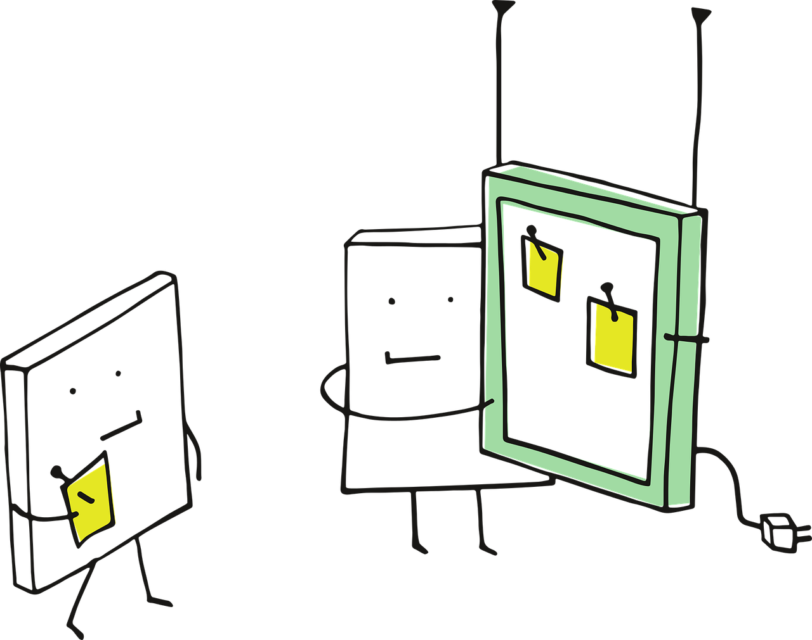
Now, we calculate the same residual definition explicitly in both languages.
beta_constant_alpha <- beta_constant_fitted_mean * beta_constant_fitted_precision
beta_constant_beta <-
(1 - beta_constant_fitted_mean) * beta_constant_fitted_precision
beta_constant_cdf <- pbeta(
training_data$grade_beta,
shape1 = beta_constant_alpha,
shape2 = beta_constant_beta
)
beta_constant_cdf <- pmin(
pmax(beta_constant_cdf, .Machine$double.eps),
1 - .Machine$double.eps
)
beta_constant_quantile_residuals <- qnorm(beta_constant_cdf)
beta_constant_residual_data <- training_data |>
transmute(
`Study Time`, `Final Grade (%)`, grade_beta,
fitted_mean_beta = beta_constant_fitted_mean,
`Fitted mean grade (%)` = beta_constant_fitted_grade,
quantile_residual = beta_constant_quantile_residuals
)
beta_constant_residual_summary <- beta_constant_residual_data |>
group_by(`Study Time`) |>
summarise(
Students = n(),
`Mean residual` = mean(quantile_residual),
`Residual SD` = sd(quantile_residual),
`Residual IQR` = IQR(quantile_residual),
`|Residual| > 2` = sum(abs(quantile_residual) > 2),
.groups = "drop"
)
beta_constant_residual_sd_min <- min(beta_constant_residual_summary$`Residual SD`)
beta_constant_residual_sd_max <- max(beta_constant_residual_summary$`Residual SD`)
beta_constant_residual_sd_ratio <-
beta_constant_residual_sd_max / beta_constant_residual_sd_min
beta_constant_residual_summary |>
mutate(across(c(`Mean residual`, `Residual SD`, `Residual IQR`),
~ formatC(.x, format = "f", digits = 3))) |>
kable(align = c("c", "c", "c", "c", "c", "c"))| Study Time | Students | Mean residual | Residual SD | Residual IQR | |Residual| > 2 |
|---|---|---|---|---|---|
| <1 hour | 186 | 0.009 | 0.699 | 0.928 | 2 |
| 1–3 hours | 179 | 0.012 | 0.771 | 0.894 | 2 |
| 3–5 hours | 173 | -0.029 | 1.117 | 1.237 | 7 |
| 5+ hours | 162 | -0.095 | 1.349 | 1.409 | 16 |
beta_constant_alpha = beta_constant_fitted_mean * beta_constant_fitted_precision
beta_constant_beta = (
(1 - beta_constant_fitted_mean) * beta_constant_fitted_precision)
beta_constant_cdf = stats.beta.cdf(
training_data["grade_beta"],
beta_constant_alpha,
beta_constant_beta,
)
beta_constant_cdf = np.clip(
beta_constant_cdf, np.finfo(float).eps, 1 - np.finfo(float).eps)
beta_constant_quantile_residuals = stats.norm.ppf(beta_constant_cdf)
beta_constant_residual_data = training_data[[
"Study Time", "Final Grade (%)", "grade_beta"
]].copy()
beta_constant_residual_data["fitted_mean_beta"] = beta_constant_fitted_mean
beta_constant_residual_data["Fitted mean grade (%)"] = beta_constant_fitted_grade
beta_constant_residual_data["quantile_residual"] = (
beta_constant_quantile_residuals)
beta_constant_residual_summary = (
beta_constant_residual_data.groupby("Study Time", observed=True)
.agg(
Students=("quantile_residual", "size"),
**{
"Mean residual": ("quantile_residual", "mean"),
"Residual SD": ("quantile_residual", "std"),
"Residual IQR": (
"quantile_residual",
lambda x: x.quantile(0.75) - x.quantile(0.25)),
"|Residual| > 2": (
"quantile_residual",
lambda x: (np.abs(x) > 2).sum()),
})
.reset_index()
)
beta_constant_residual_sd_min = beta_constant_residual_summary[
"Residual SD"].min()
beta_constant_residual_sd_max = beta_constant_residual_summary[
"Residual SD"].max()
beta_constant_residual_sd_ratio = (
beta_constant_residual_sd_max / beta_constant_residual_sd_min)
beta_constant_residual_summary_display = beta_constant_residual_summary.copy()
for column in ["Mean residual", "Residual SD", "Residual IQR"]:
beta_constant_residual_summary_display[column] = (
beta_constant_residual_summary_display[column]
.map(lambda value: f"{value:.3f}"))
beta_constant_residual_summary_html = scrollable_table_html(
beta_constant_residual_summary_display)| Study Time | Students | Mean residual | Residual SD | Residual IQR | |Residual| > 2 |
|---|---|---|---|---|---|
| <1 hour | 186 | 0.009 | 0.699 | 0.928 | 2 |
| 1–3 hours | 179 | 0.012 | 0.771 | 0.894 | 2 |
| 3–5 hours | 173 | -0.029 | 1.117 | 1.237 | 7 |
| 5+ hours | 162 | -0.095 | 1.349 | 1.409 | 16 |
The residual summaries in Table 5.29 reveal more than the fitted conditional means did. First, the mean quantile residuals remain close to zero in all four study-time groups, so there is little evidence here of a systematic location bias within any one category. The more important pattern appears in the residual spread. The group-specific residual standard deviations increase from 0.699 for <1 hour and 0.771 for 1–3 hours to 1.117 for 3–5 hours and 1.349 for 5+ hours. Overall, the largest residual SD is therefore 1.93 times the smallest.
The IQRs reinforce the same pattern: residual spread is narrower in the two lower-study-time groups and wider in the two higher-study-time groups. The counts of observations with \(|r_i^{(q)}|>2\) also increase from 2 and 2 in the first two categories to 7 and 16 in the last two. These counts are descriptive rather than a formal goodness-of-fit test, but they point in the same direction as the SD and IQR comparisons.
Under a well-calibrated fitted conditional distribution, the quantile residuals should have broadly comparable spread across fitted mean levels. Instead, the residual dispersion increases systematically with Study Time. This suggests that the mean structure is capturing the group centres reasonably well, while the constant-precision assumption is not reproducing the conditional spread equally well across the four categories. The next diagnostics examine that precision mismatch more directly.
The residual-versus-fitted plot in Figure 5.7 (or Figure 5.8) makes that comparison visible.
beta_constant_residual_y_limits <- c(
floor(min(beta_constant_quantile_residuals)),
ceiling(max(beta_constant_quantile_residuals))
)
beta_constant_residual_y_breaks <- seq(
2 * ceiling(beta_constant_residual_y_limits[1] / 2),
2 * floor(beta_constant_residual_y_limits[2] / 2), by = 2
)
beta_constant_residual_fitted_x_limits <- c(
5 * floor((min(beta_constant_fitted_grade) - 0.5) / 5),
5 * ceiling((max(beta_constant_fitted_grade) + 0.5) / 5)
)
beta_constant_residual_fitted_x_breaks <- seq(
beta_constant_residual_fitted_x_limits[1],
beta_constant_residual_fitted_x_limits[2], by = 5
)
beta_constant_residual_fitted_plot <- ggplot(
beta_constant_residual_data,
aes(x = `Fitted mean grade (%)`, y = quantile_residual)
) +
geom_point(position = position_jitter(width = 0.25, height = 0, seed = 551),
alpha = 0.45, colour = "#0072B2") +
geom_hline(yintercept = 0, linewidth = 0.8) +
geom_hline(yintercept = c(-2, 2), linetype = "dashed", linewidth = 0.7) +
scale_x_continuous(limits = beta_constant_residual_fitted_x_limits,
breaks = beta_constant_residual_fitted_x_breaks,
expand = expansion(mult = 0)) +
scale_y_continuous(limits = beta_constant_residual_y_limits,
breaks = beta_constant_residual_y_breaks,
expand = expansion(mult = 0)) +
theme_bw() +
theme(
axis.text = element_text(size = 15.5),
axis.title = element_text(size = 20),
panel.grid.minor = element_blank()
) +
labs(x = "\n Fitted conditional mean grade (%)",
y = "Quantile residual\n")
beta_constant_residual_fitted_plot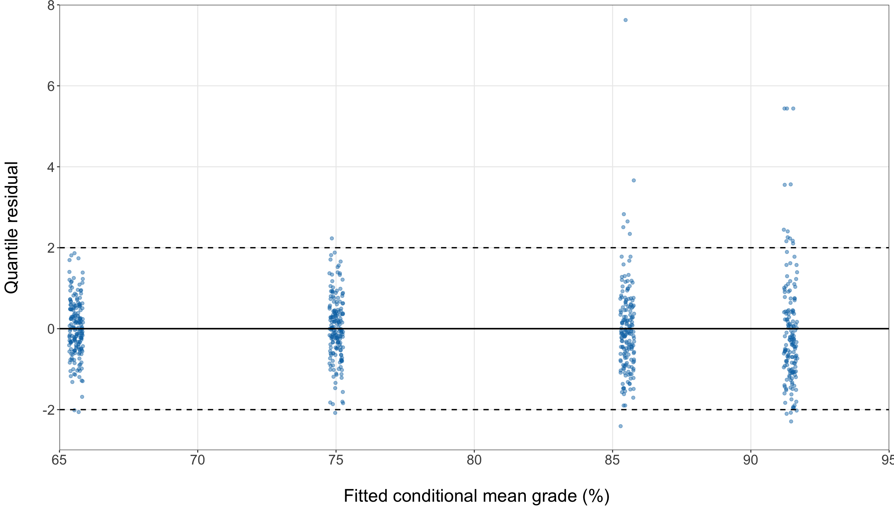
beta_constant_residual_y_limits = (
np.floor(beta_constant_quantile_residuals.min()),
np.ceil(beta_constant_quantile_residuals.max()),
)
beta_constant_residual_y_breaks = np.arange(
2 * np.ceil(beta_constant_residual_y_limits[0] / 2),
2 * np.floor(beta_constant_residual_y_limits[1] / 2) + 1, 2)
beta_constant_residual_fitted_x_limits = (
5 * np.floor((beta_constant_fitted_grade.min() - 0.5) / 5),
5 * np.ceil((beta_constant_fitted_grade.max() + 0.5) / 5),
)
beta_constant_residual_fitted_x_breaks = np.arange(
beta_constant_residual_fitted_x_limits[0],
beta_constant_residual_fitted_x_limits[1] + 1, 5)
beta_constant_residual_plot_rng = np.random.default_rng(551)
beta_constant_residual_plot_x = (
beta_constant_fitted_grade
+ beta_constant_residual_plot_rng.uniform(
-0.25, 0.25, len(beta_constant_fitted_grade)))
beta_constant_residual_fitted_plot, beta_constant_residual_fitted_axis = (
plt.subplots(figsize=(14, 8)))
_ = beta_constant_residual_fitted_axis.scatter(
beta_constant_residual_plot_x, beta_constant_quantile_residuals,
alpha=0.45, color="#0072B2")
_ = beta_constant_residual_fitted_axis.axhline(
0, linewidth=0.8, color="black")
for reference in (-2, 2):
_ = beta_constant_residual_fitted_axis.axhline(
reference, linestyle="--", linewidth=0.7, color="black")
_ = beta_constant_residual_fitted_axis.set_xlim(
beta_constant_residual_fitted_x_limits)
_ = beta_constant_residual_fitted_axis.set_xticks(
beta_constant_residual_fitted_x_breaks)
_ = beta_constant_residual_fitted_axis.set_ylim(
beta_constant_residual_y_limits)
_ = beta_constant_residual_fitted_axis.set_yticks(
beta_constant_residual_y_breaks)
_ = beta_constant_residual_fitted_axis.set_xlabel(
"\n Fitted conditional mean grade (%)", fontsize=20)
_ = beta_constant_residual_fitted_axis.set_ylabel(
"Quantile residual\n", fontsize=20)
beta_constant_residual_fitted_axis.tick_params(axis="both", labelsize=15.5)
beta_constant_residual_fitted_plot.tight_layout()
plt.show()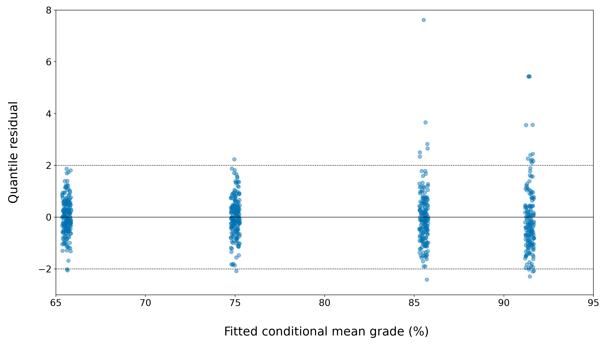
In Figure 5.7, because the fitted mean model contains only the four study-time categories, the horizontal axis has four fitted mean locations. Hence, the diagnostic question is whether the vertical residual distributions look similarly centred and dispersed at those locations. The plot shows that the residual spread changes across the fitted means rather than remaining roughly comparable, which points toward a distributional issue that is not visible from the group means alone.
A Normal Q-Q plot provides a complementary view of the residual distribution.
beta_constant_qq_probabilities <- (
seq_along(beta_constant_quantile_residuals) - 0.5
) / length(beta_constant_quantile_residuals)
beta_constant_qq_data <- tibble(
theoretical = qnorm(beta_constant_qq_probabilities),
observed = sort(beta_constant_quantile_residuals)
)
beta_constant_qq_x_limits <- c(
floor(min(beta_constant_qq_data$theoretical)),
ceiling(max(beta_constant_qq_data$theoretical))
)
beta_constant_qq_x_breaks <- seq(
2 * ceiling(beta_constant_qq_x_limits[1] / 2),
2 * floor(beta_constant_qq_x_limits[2] / 2), by = 2
)
beta_constant_qq_y_limits <- c(
floor(min(beta_constant_quantile_residuals)),
ceiling(max(beta_constant_quantile_residuals))
)
beta_constant_qq_y_breaks <- seq(
2 * ceiling(beta_constant_qq_y_limits[1] / 2),
2 * floor(beta_constant_qq_y_limits[2] / 2), by = 2
)
beta_constant_residual_qq_plot <- ggplot(
beta_constant_qq_data, aes(x = theoretical, y = observed)
) +
geom_point(alpha = 0.55, colour = "#0072B2") +
geom_abline(intercept = 0, slope = 1, linetype = "dashed") +
scale_x_continuous(limits = beta_constant_qq_x_limits,
breaks = beta_constant_qq_x_breaks,
expand = expansion(mult = 0)) +
scale_y_continuous(limits = beta_constant_qq_y_limits,
breaks = beta_constant_qq_y_breaks,
expand = expansion(mult = 0)) +
theme_bw() +
theme(
axis.text = element_text(size = 15.5),
axis.title = element_text(size = 20),
panel.grid.minor = element_blank()
) +
labs(
x = "\n Theoretical standard-Normal quantiles",
y = "Observed quantile residuals\n"
)
beta_constant_residual_qq_plot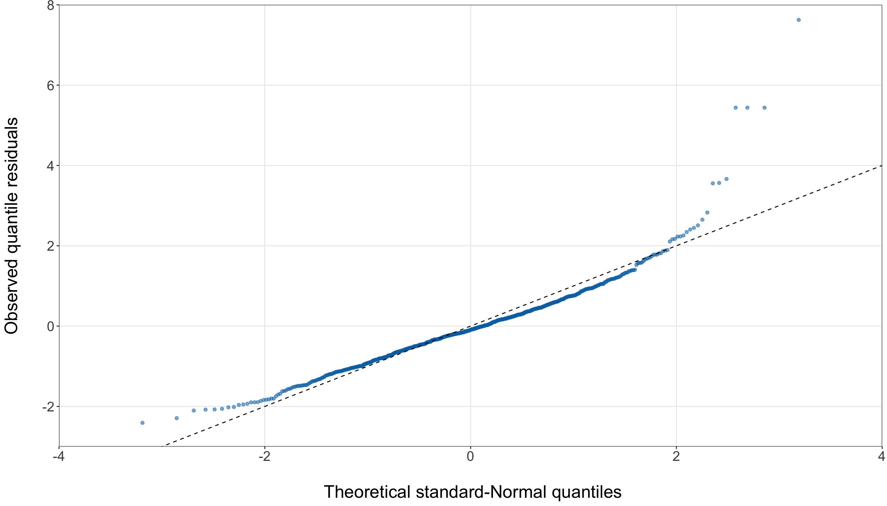
beta_constant_qq_probabilities = (
np.arange(1, len(beta_constant_quantile_residuals) + 1) - 0.5
) / len(beta_constant_quantile_residuals)
beta_constant_qq_data = pd.DataFrame({
"theoretical": stats.norm.ppf(beta_constant_qq_probabilities),
"observed": np.sort(beta_constant_quantile_residuals),
})
beta_constant_qq_x_limits = (
np.floor(beta_constant_qq_data["theoretical"].min()),
np.ceil(beta_constant_qq_data["theoretical"].max()),
)
beta_constant_qq_x_breaks = np.arange(
2 * np.ceil(beta_constant_qq_x_limits[0] / 2),
2 * np.floor(beta_constant_qq_x_limits[1] / 2) + 1, 2)
beta_constant_qq_y_limits = (
np.floor(beta_constant_quantile_residuals.min()),
np.ceil(beta_constant_quantile_residuals.max()),
)
beta_constant_qq_y_breaks = np.arange(
2 * np.ceil(beta_constant_qq_y_limits[0] / 2),
2 * np.floor(beta_constant_qq_y_limits[1] / 2) + 1, 2)
beta_constant_residual_qq_plot, beta_constant_residual_qq_axis = (
plt.subplots(figsize=(14, 8)))
_ = beta_constant_residual_qq_axis.scatter(
beta_constant_qq_data["theoretical"],
beta_constant_qq_data["observed"],
alpha=0.55, color="#0072B2")
_ = beta_constant_residual_qq_axis.plot(
beta_constant_qq_x_limits, beta_constant_qq_x_limits,
linestyle="--", color="black")
_ = beta_constant_residual_qq_axis.set_xlim(beta_constant_qq_x_limits)
_ = beta_constant_residual_qq_axis.set_xticks(beta_constant_qq_x_breaks)
_ = beta_constant_residual_qq_axis.set_ylim(beta_constant_qq_y_limits)
_ = beta_constant_residual_qq_axis.set_yticks(beta_constant_qq_y_breaks)
_ = beta_constant_residual_qq_axis.set_xlabel(
"\n Theoretical standard-Normal quantiles", fontsize=20)
_ = beta_constant_residual_qq_axis.set_ylabel(
"Observed quantile residuals\n", fontsize=20)
beta_constant_residual_qq_axis.tick_params(axis="both", labelsize=15.5)
beta_constant_residual_qq_plot.tight_layout()
plt.show()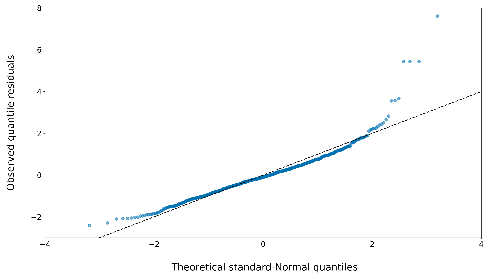
The Normal Q-Q plot, in Figure 5.9 (or Figure 5.10), provides a complementary view of the residual distribution. Through most of the central range, the quantile residuals follow the reference line reasonably closely, indicating that the bulk of the fitted residual distribution is not grossly inconsistent with the standard-Normal reference. The more noticeable departures occur in the tails, especially in the upper tail, where several of the largest residuals lie well above the reference line. This pattern indicates that the fitted constant-precision model assigns too little probability to some comparatively large positive departures from the fitted conditional means.
This tail behaviour is consistent with the groupwise summaries rather than being an isolated graphical feature. As shown in Table 5.29 and Figure 5.7, residual dispersion increases with Study Time, with the largest spread and the largest number of residuals beyond \(|r_i^{(q)}|=2\) occurring in the higher-study-time categories. Thus, the Q-Q plot reinforces the conclusion that the principal inadequacy is not a broad failure of the Study Time mean structure, which already reproduces the group centres closely, but rather a mismatch in the conditional dispersion represented by the constant-precision assumption.
Nevertheless, the Q-Q plot should be interpreted as a diagnostic rather than a formal goodness-of-fit test. Its role here is to reveal where the fitted conditional distribution departs from its reference behaviour and to be considered together with the residual-versus-fitted plot and the groupwise residual summaries. Taken together, these diagnostics motivate examining the precision structure directly in the next subsection.
5.12.4 Precision-structure Check
This is the central adequacy check for the initial model. The training EDA showed that the raw within-category grade standard deviations are fairly similar across the four Study Time groups (see Table 5.16). However, under the mean–precision parameterization of Beta regression (Ferrari and Cribari-Neto 2004; Cribari-Neto and Zeileis 2010),
\[ \operatorname{Var}(Y_i\mid\mathbf{x}_i) = \frac{\mu_i(1-\mu_i)}{1+\phi}. \tag{5.22}\]
Because the fitted conditional means increase substantially across the study-time categories and move toward the upper boundary, the factor \(\mu_i(1-\mu_i)\) decreases in Equation 5.22. Thus, a single common \(\phi\) forces the model-implied response standard deviation to shrink as the fitted mean approaches \(1\). Importantly, constant precision does not imply constant response-scale variance: even when \(\phi\) is fixed, the conditional variance changes with \(\mu_i\) through the term \(\mu_i(1-\mu_i)\) (Ferrari and Cribari-Neto 2004; Cribari-Neto and Zeileis 2010).
Having said that, we compare the observed within-group standard deviation with the standard deviation implied by the fitted constant-precision Beta distribution. To make the discrepancy easier to interpret, we also construct a variance-matching implied precision for each study-time category.
If \(s_g^2\) is the observed sample variance of grade_beta in category \(g\) and \(\widehat{\mu}_g\) is its fitted conditional mean, we algebraically rearrange the Beta variance relationship,
\[ s_g^2 \approx \frac{\widehat{\mu}_g(1-\widehat{\mu}_g)}{1+\phi_g}, \]
to obtain
\[ \widetilde{\phi}_g = \frac{\widehat{\mu}_g(1-\widehat{\mu}_g)}{s_g^2}-1. \tag{5.23}\]
This quantity answers a diagnostic question:
What precision would reproduce the observed group variance if the fitted mean were held fixed?
The quantity in Equation 5.23 is a diagnostic algebraic rearrangement of the Beta variance function, not a literature-defined test statistic or an alternative maximum-likelihood estimate. Thus, we do not assign it a reference sampling distribution or a \(p\)-value. Its purpose is descriptive: if the values of \(\widetilde{\phi}_g\) differ substantially across the study-time categories, then the common-precision assumption is unlikely to reproduce the observed within-group dispersion equally well across those categories.
beta_constant_precision_diagnostic <- beta_constant_residual_data |>
group_by(`Study Time`) |>
summarise(observed_sd_grade = sd(`Final Grade (%)`), observed_variance_beta = var(grade_beta),
fitted_mean_beta = first(fitted_mean_beta), .groups = "drop") |>
mutate(model_sd_grade = beta_grade_scale_factor * sqrt(
fitted_mean_beta * (1 - fitted_mean_beta) / (1 + beta_constant_phi)),
sd_ratio = observed_sd_grade / model_sd_grade,
variance_matching_phi = fitted_mean_beta * (1 - fitted_mean_beta) /
observed_variance_beta - 1)
beta_constant_variance_matching_phi_min <- min(beta_constant_precision_diagnostic$variance_matching_phi)
beta_constant_variance_matching_phi_max <- max(beta_constant_precision_diagnostic$variance_matching_phi)
beta_constant_variance_matching_phi_ratio <- beta_constant_variance_matching_phi_max /
beta_constant_variance_matching_phi_min
beta_constant_precision_diagnostic |>
transmute(`Study Time`, `Observed SD (percentage points)` = observed_sd_grade,
`Model-implied SD (percentage points)` = model_sd_grade,
`Observed / implied SD` = sd_ratio, `Variance-matching precision` = variance_matching_phi,
`Fitted common precision` = beta_constant_phi) |>
kable(digits = 2, align = c("c", "c", "c", "c", "c", "c"))| Study Time | Observed SD (percentage points) | Model-implied SD (percentage points) | Observed / implied SD | Variance-matching precision | Fitted common precision |
|---|---|---|---|---|---|
| <1 hour | 5.00 | 7.11 | 0.70 | 89.42 | 43.69 |
| 1–3 hours | 5.01 | 6.48 | 0.77 | 73.96 | 43.69 |
| 3–5 hours | 4.92 | 5.27 | 0.93 | 50.28 | 43.69 |
| 5+ hours | 4.60 | 4.20 | 1.09 | 36.32 | 43.69 |
beta_constant_precision_diagnostic = (beta_constant_residual_data.groupby(
"Study Time", observed=True).agg(observed_sd_grade=("Final Grade (%)", "std"),
observed_variance_beta=("grade_beta", "var"),
fitted_mean_beta=("fitted_mean_beta", "first")).reset_index())
beta_constant_precision_diagnostic["model_sd_grade"] = beta_grade_scale_factor * np.sqrt(
beta_constant_precision_diagnostic["fitted_mean_beta"]
* (1 - beta_constant_precision_diagnostic["fitted_mean_beta"])
/ (1 + beta_constant_phi))
beta_constant_precision_diagnostic["sd_ratio"] = (beta_constant_precision_diagnostic[
"observed_sd_grade"] / beta_constant_precision_diagnostic["model_sd_grade"])
beta_constant_precision_diagnostic["variance_matching_phi"] = (
beta_constant_precision_diagnostic["fitted_mean_beta"]
* (1 - beta_constant_precision_diagnostic["fitted_mean_beta"])
/ beta_constant_precision_diagnostic["observed_variance_beta"] - 1)
beta_constant_variance_matching_phi_min = beta_constant_precision_diagnostic[
"variance_matching_phi"].min()
beta_constant_variance_matching_phi_max = beta_constant_precision_diagnostic[
"variance_matching_phi"].max()
beta_constant_variance_matching_phi_ratio = (beta_constant_variance_matching_phi_max /
beta_constant_variance_matching_phi_min)
beta_constant_precision_display = beta_constant_precision_diagnostic[["Study Time",
"observed_sd_grade", "model_sd_grade", "sd_ratio", "variance_matching_phi"]].rename(
columns={"observed_sd_grade": "Observed SD (percentage points)",
"model_sd_grade": "Model-implied SD (percentage points)",
"sd_ratio": "Observed / implied SD",
"variance_matching_phi": "Variance-matching precision"}).copy()
beta_constant_precision_display["Fitted common precision"] = beta_constant_phi
beta_constant_precision_diagnostic_html = scrollable_table_html(
beta_constant_precision_display, float_format=lambda value: f"{value:.2f}")| Study Time | Observed SD (percentage points) | Model-implied SD (percentage points) | Observed / implied SD | Variance-matching precision | Fitted common precision |
|---|---|---|---|---|---|
| <1 hour | 5.00 | 7.11 | 0.70 | 89.42 | 43.69 |
| 1–3 hours | 5.01 | 6.48 | 0.77 | 73.96 | 43.69 |
| 3–5 hours | 4.92 | 5.27 | 0.93 | 50.28 | 43.69 |
| 5+ hours | 4.60 | 4.20 | 1.09 | 36.32 | 43.69 |
Now, the response-scale mismatch is easier to see graphically. The next figure compares the observed within-group grade SD with the SD implied by the fitted constant-precision model.
beta_constant_precision_plot_data <- beta_constant_precision_diagnostic |>
transmute(`Study Time`, Observed = observed_sd_grade, `Model-implied` = model_sd_grade) |>
pivot_longer(-`Study Time`, names_to = "Dispersion", values_to = "SD (percentage points)")
beta_constant_precision_plot_y_max <- ceiling(max(
beta_constant_precision_diagnostic$observed_sd_grade,
beta_constant_precision_diagnostic$model_sd_grade))
beta_constant_precision_plot <- ggplot(beta_constant_precision_plot_data,
aes(x = `Study Time`, y = `SD (percentage points)`, fill = Dispersion)) +
geom_col(position = position_dodge(width = 0.75), width = 0.68) +
scale_fill_manual(values = c("Observed" = "#0072B2", "Model-implied" = "#D55E00")) +
scale_x_discrete(drop = FALSE, expand = expansion(add = 0.6)) +
scale_y_continuous(limits = c(0, beta_constant_precision_plot_y_max),
breaks = seq(0, beta_constant_precision_plot_y_max, 1), expand = c(0, 0)) +
theme_bw() +
theme(axis.text = element_text(size = 15.5), axis.title = element_text(size = 20),
legend.position = "bottom", legend.text = element_text(size = 16),
legend.title = element_text(size = 18), panel.grid.minor = element_blank()) +
labs(x = "\n Study Time", y = "Within-group SD (percentage points)\n", fill = "Dispersion")
beta_constant_precision_plot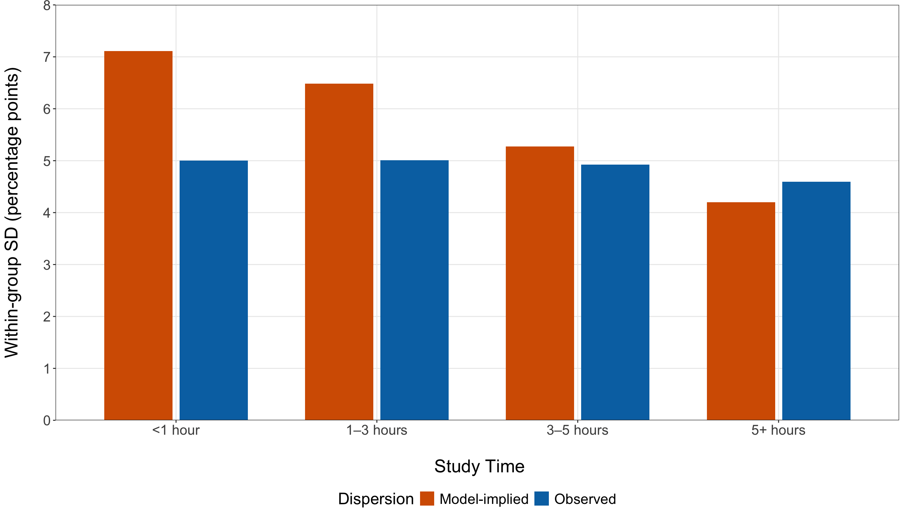
beta_constant_precision_plot_y_max = np.ceil(max(
beta_constant_precision_diagnostic["observed_sd_grade"].max(),
beta_constant_precision_diagnostic["model_sd_grade"].max()))
beta_constant_precision_plot_x = np.arange(len(study_time_levels))
beta_constant_precision_plot_width = 0.34
beta_constant_precision_plot, ax = plt.subplots(figsize=(14, 8))
_ = ax.bar(beta_constant_precision_plot_x - beta_constant_precision_plot_width / 2,
beta_constant_precision_diagnostic["observed_sd_grade"],
beta_constant_precision_plot_width, label="Observed", color="#0072B2")
_ = ax.bar(beta_constant_precision_plot_x + beta_constant_precision_plot_width / 2,
beta_constant_precision_diagnostic["model_sd_grade"],
beta_constant_precision_plot_width, label="Model-implied", color="#D55E00")
_ = ax.set_xlim(-0.6, len(study_time_levels) - 0.4)
_ = ax.set_ylim(0, beta_constant_precision_plot_y_max)
_ = ax.set_xticks(beta_constant_precision_plot_x, study_time_levels)
_ = ax.set_yticks(np.arange(0, beta_constant_precision_plot_y_max + 1, 1))
_ = ax.set_xlabel("\n Study Time", fontsize=20)
_ = ax.set_ylabel("Within-group SD (percentage points)\n", fontsize=20)
ax.tick_params(axis="both", labelsize=15.5)
_ = ax.legend(title="Dispersion", loc="upper center", bbox_to_anchor=(0.5, -0.14),
ncol=2, frameon=False, fontsize=16, title_fontsize=18)
beta_constant_precision_plot.tight_layout()
beta_constant_precision_plot.subplots_adjust(bottom=0.22)
plt.show()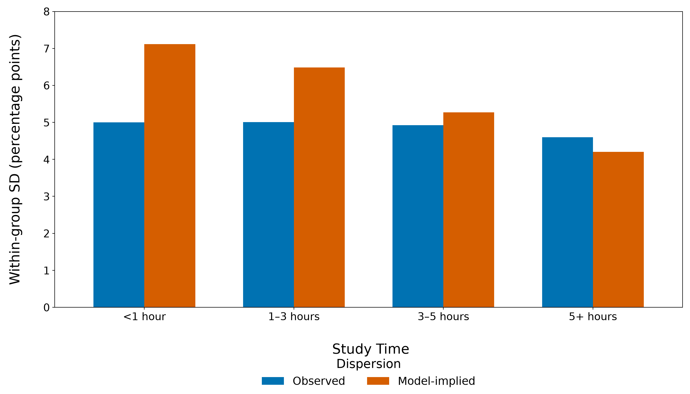
The mismatch shown in Figure 5.11 (or Figure 5.12) is systematic. The observed within-group grade SDs range from 4.60 to 5.01 percentage points, whereas the model-implied SD declines from 7.11 percentage points for <1 hour to 4.20 percentage points for 5+ hours. Thus, the figure makes visible the variance pattern imposed by one common precision parameter: as the fitted mean rises toward the upper boundary, the model increasingly compresses the conditional distribution even though the observed grade-scale spread remains comparatively stable.
The same issue appears on the precision scale. The fitted model uses the common value 43.691 for all four categories, but the category-specific variance-matching implied precisions range from 36.32 to 89.42, a largest-to-smallest ratio of 2.46. The observed-versus-implied SD ratios, in Table 5.31, express the same mismatch from the response-scale perspective.
This is exactly the distinction anticipated in Section 5.8.4: the conditional means can be modelled well while the common-precision restriction imposes the wrong pattern of conditional spread. This diagnostic does not by itself establish a formal alternative model. Instead, it provides a concrete reason to fit a variable-precision specification and then compare the nested models using an explicitly defined likelihood-ratio test.
5.12.5 Influence and Leverage
A model can also appear inadequate because a small number of unusual observations exert disproportionate influence. Beta regression diagnostics include residual and leverage measures developed specifically for this modelling framework (Ferrari and Cribari-Neto 2004; Cribari-Neto and Zeileis 2010). However, the current R and Python implementations do not expose identical influence quantities. In particular, the official {statsmodels} documentation for BetaResults.get_influence() notes that multi-link influence support is experimental and that its generalized leverage differs from the linear-approximation leverage used by betareg().
Therefore, we avoid presenting differently defined Cook’s-distance or generalized-leverage quantities as though they were numerically interchangeable. Instead, we use a transparent two-part screen that can be reproduced in both languages:
- inspect the ordinary mean-design leverage to identify unusual
Study Timedesign configurations; and - for the five observations with the largest absolute quantile residuals, refit the same model after deleting one observation at a time and record the maximum change in the four fitted conditional means and the relative change in the common precision.
This is a sensitivity screen, not a hypothesis test or an automatic deletion rule.
beta_constant_mean_design <- model.matrix(~ `Study Time`, data = training_data)
beta_constant_design_leverage <- rowSums(
(beta_constant_mean_design %*% solve(crossprod(beta_constant_mean_design))) *
beta_constant_mean_design)
beta_constant_screen_positions <- head(
order(abs(beta_constant_quantile_residuals), decreasing = TRUE), 5)
beta_constant_reference_data <- tibble(
`Study Time` = factor(study_time_levels, levels = study_time_levels))
beta_constant_reference_means <- predict(
beta_constant_model, newdata = beta_constant_reference_data, type = "response")
beta_constant_influence_screen <- bind_rows(lapply(
beta_constant_screen_positions, function(position) {
beta_constant_reduced_model <- update(
beta_constant_model, data = training_data[-position, , drop = FALSE])
beta_constant_reduced_means <- predict(
beta_constant_reduced_model, newdata = beta_constant_reference_data,
type = "response")
beta_constant_reduced_phi <- predict(
beta_constant_reduced_model, type = "precision")[1]
tibble(`Training row` = position,
`Study Time` = as.character(training_data$`Study Time`[position]),
`Final grade (%)` = training_data$`Final Grade (%)`[position],
`|Quantile residual|` = abs(beta_constant_quantile_residuals[position]),
`Design leverage` = beta_constant_design_leverage[position],
`Max fitted-mean change (percentage points)` = beta_grade_scale_factor *
max(abs(beta_constant_reduced_means - beta_constant_reference_means)),
`Absolute relative precision change (%)` =
100 * abs(beta_constant_reduced_phi / beta_constant_phi - 1))
}))
beta_constant_max_design_leverage <- max(beta_constant_design_leverage)
beta_constant_max_mean_sensitivity <- max(
beta_constant_influence_screen[["Max fitted-mean change (percentage points)"]])
beta_constant_max_phi_sensitivity <- max(
beta_constant_influence_screen[["Absolute relative precision change (%)"]])
beta_constant_influence_screen |>
kable(digits = 3, align = c("c", "c", "c", "c", "c", "c", "c"))| Training row | Study Time | Final grade (%) | |Quantile residual| | Design leverage | Max fitted-mean change (percentage points) | Absolute relative precision change (%) |
|---|---|---|---|---|---|---|
| 664 | 3–5 hours | 100.000 | 7.625 | 0.006 | 0.329 | 8.665 |
| 7 | 5+ hours | 100.000 | 5.439 | 0.006 | 0.189 | 3.980 |
| 311 | 5+ hours | 100.000 | 5.439 | 0.006 | 0.189 | 3.980 |
| 343 | 5+ hours | 100.000 | 5.439 | 0.006 | 0.189 | 3.980 |
| 455 | 3–5 hours | 97.948 | 3.663 | 0.006 | 0.121 | 1.743 |
beta_constant_mean_design = beta_constant_model.model.exog
beta_constant_design_leverage = np.einsum(
"ij,jk,ik->i", beta_constant_mean_design,
np.linalg.inv(beta_constant_mean_design.T @ beta_constant_mean_design),
beta_constant_mean_design)
beta_constant_screen_positions = np.argsort(
np.abs(beta_constant_quantile_residuals))[-5:][::-1]
beta_constant_reference_data = pd.DataFrame({"Study Time": pd.Categorical(
study_time_levels, categories=study_time_levels, ordered=False)})
beta_constant_reference_means = np.asarray(beta_constant_model.predict(
exog=beta_constant_reference_data, which="mean"))
beta_constant_influence_rows = []
for position in beta_constant_screen_positions:
beta_constant_reduced_data = training_data.drop(training_data.index[position])
beta_constant_reduced_model = BetaModel.from_formula(
'grade_beta ~ C(Q("Study Time"), Treatment(reference="<1 hour"))',
data=beta_constant_reduced_data, exog_precision_formula="1",
link=sm.families.links.Logit(), link_precision=sm.families.links.Log(),
).fit(method="bfgs", maxiter=1000, disp=False)
beta_constant_reduced_means = np.asarray(beta_constant_reduced_model.predict(
exog=beta_constant_reference_data, which="mean"))
beta_constant_reduced_phi = float(beta_constant_reduced_model.model.predict(
beta_constant_reduced_model.params, which="precision")[0])
beta_constant_influence_rows.append({
"Training row": int(position + 1),
"Study Time": str(training_data.iloc[position]["Study Time"]),
"Final grade (%)": training_data.iloc[position]["Final Grade (%)"],
"|Quantile residual|": abs(beta_constant_quantile_residuals[position]),
"Design leverage": beta_constant_design_leverage[position],
"Max fitted-mean change (percentage points)": beta_grade_scale_factor *
np.max(np.abs(beta_constant_reduced_means - beta_constant_reference_means)),
"Absolute relative precision change (%)":
100 * abs(beta_constant_reduced_phi / beta_constant_phi - 1),
})
beta_constant_influence_screen = pd.DataFrame(beta_constant_influence_rows)
beta_constant_max_design_leverage = beta_constant_design_leverage.max()
beta_constant_max_mean_sensitivity = beta_constant_influence_screen[
"Max fitted-mean change (percentage points)"].max()
beta_constant_max_phi_sensitivity = beta_constant_influence_screen[
"Absolute relative precision change (%)"].max()
beta_constant_influence_html = scrollable_table_html(
beta_constant_influence_screen, float_format=lambda value: f"{value:.3f}")| Training row | Study Time | Final grade (%) | |Quantile residual| | Design leverage | Max fitted-mean change (percentage points) | Absolute relative precision change (%) |
|---|---|---|---|---|---|---|
| 664 | 3–5 hours | 100.000 | 7.625 | 0.006 | 0.329 | 8.665 |
| 7 | 5+ hours | 100.000 | 5.439 | 0.006 | 0.189 | 3.980 |
| 343 | 5+ hours | 100.000 | 5.439 | 0.006 | 0.189 | 3.980 |
| 311 | 5+ hours | 100.000 | 5.439 | 0.006 | 0.189 | 3.980 |
| 455 | 3–5 hours | 97.948 | 3.663 | 0.006 | 0.121 | 1.743 |
The ordinary mean-design leverage is uniformly low because the mean submodel contains only the four well-represented Study Time categories. In this factor-only design, observations within the same category share the same leverage, and the largest value is only 0.0062. Thus, none of the screened observations is unusual because of its regressor configuration.
The case-deletion results provide a more direct sensitivity check. The five largest absolute quantile residuals are concentrated near the upper response boundary, but deleting any one of these observations changes the four fitted conditional means by at most 0.329 percentage points. The common fitted precision is somewhat more sensitive: its largest absolute relative change is 8.67%. This distinction is useful. The fitted mean structure is highly stable to these individual cases, whereas the dispersion parameter reacts more noticeably to an extreme response.
These are sensitivity measures rather than universal cutoff statistics, so they do not provide a formal rule for retaining or deleting observations. More importantly, the dispersion problem identified earlier is a repeated across-group pattern, whereas this screen perturbs the model one observation at a time. Hence, the case-deletion results do not suggest that the inadequate constant-precision structure can be explained away by a single influential observation. We retain all observations and address the dispersion pattern through the model specification itself.
5.12.6 Constant-precision Model Adequacy Summary
All together, the training-stage diagnostics give a consistent picture of what the initial model captures well and where its main inadequacy lies.
| Diagnostic layer | Training-stage finding | Implication for the workflow |
|---|---|---|
| Numerical stability | Optimization converges, the coefficient estimates and model-based SEs are finite, and all fitted conditional means remain inside the response support. | The fitted solution is numerically usable, so the remaining concerns are about model adequacy rather than optimization failure. |
| Conditional means | The largest absolute observed-versus-fitted group-mean difference is 0.82 percentage points. | The Study Time mean submodel already represents the conditional centres well. |
| Quantile residuals | Group-specific residual SDs range from 0.699 to 1.349, with greater spread in the higher-study-time categories and noticeable upper-tail Q-Q departures. | The fitted conditional distributions do not reproduce the residual spread equally well across the four fitted mean levels. |
| Precision structure | Variance-matching implied precisions range from 36.32 to 89.42, whereas the fitted model imposes \(\widehat{\phi}=\) 43.691 for every category. | One common precision cannot reconcile the Beta variance function with the comparatively stable observed grade-scale spread across Study Time categories. |
| Influence screen | The largest mean-design leverage is 0.0062. Deleting any one of the five largest absolute quantile-residual cases changes the fitted group means by at most 0.329 percentage points and the common precision by at most 8.67%. | The mean structure is highly stable to these individual cases. Precision is somewhat more sensitive, but no single screened observation explains the repeated across-group dispersion pattern. |
Therefore, the central conclusion is not that the Study Time mean structure has failed. The fitted conditional means reproduce the observed group centres closely, and the case-deletion screen shows that those fitted means are highly stable even for the observations with the largest absolute quantile residuals. The main inadequacy lies instead in the constant-precision restriction.
Under one common \(\phi\), the Beta variance function forces the conditional spread to decrease as the fitted mean moves toward the upper boundary. The training data do not follow that pattern: their observed within-category grade SDs remain comparatively stable, while the quantile-residual spread increases across the higher-study-time categories. The variance-matching diagnostic makes the same disagreement visible on the precision scale. Although the fitted common precision is somewhat sensitive to the most extreme individual responses, the mismatch is repeated across categories rather than attributable to a single influential observation.
The next modelling step is targeted rather than exploratory. We retain the existing Study Time mean submodel and allow the precision parameter to vary by Study Time. We will then compare this variable-precision specification with the current constant-precision model using a formally defined nested-model likelihood-ratio test. After that comparison, we will repeat the core adequacy checks before deciding whether the revised specification is suitable to freeze for the subsequent inferential and predictive analyses.
5.13 Variable-precision Beta Regression
The constant-precision model gave us a useful starting point: its Study Time mean submodel reproduced the observed group centres closely, but its conditional spread was not equally adequate across the four study-time categories. Hence, the next model changes only the part of the specification implicated by the diagnostics. We retain the existing conditional-mean structure and allow the precision parameter to vary with Study Time. This is a targeted refinement rather than a search for a more complicated model. All decisions in this section continue to use the training data only; the testing responses remain untouched.
5.13.1 Why Model Precision?
The motivation comes directly from the adequacy checks in Section 5.12. Under the constant-precision fit, the conditional means were reproduced closely, so there is no diagnostic reason to replace the Study Time mean structure. The problem appeared instead in the conditional spread: quantile-residual dispersion increased across the higher-study-time categories, and the variance-matching implied precisions differed substantially even though the fitted model imposed one common value of \(\phi\).
This distinction follows from the Beta mean–variance relationship,
\[ \operatorname{Var}(Y_i\mid\mathbf{x}_i) = \frac{\mu_i(1-\mu_i)}{1+\phi_i}. \]
When \(\phi_i\) is held constant, changes in \(\mu_i\) alone determine how the model variance changes across observations. In our training data, that restriction forces the fitted distribution to become increasingly concentrated as the conditional mean approaches the upper boundary, while the observed grade-scale spread remains comparatively stable. Allowing \(\phi_i\) to vary provides the model with the flexibility needed to address that specific mismatch (Cribari-Neto and Zeileis 2010).
Accordingly, the refinement is
\[ \text{mean}\sim\texttt{Study Time}, \qquad \text{precision}\sim\texttt{Study Time}. \]
The precision submodel should be interpreted primarily as distributional structure. It helps the conditional Beta distributions reproduce the observed amount of variation; it is not being introduced as a separate causal or behavioural model of why some students have more variable grades.
5.13.2 Mathematical Specification
The conditional-mean submodel remains exactly the same as in Equation 5.19. With <1 hour as the reference category,
\[ \operatorname{logit}(\mu_i) = \beta_0 + \beta_1x_{i,1} + \beta_2x_{i,2} + \beta_3x_{i,3}, \tag{5.24}\]
where \(x_{i,1}\), \(x_{i,2}\), and \(x_{i,3}\) are the treatment-coded indicators for 1–3 hours, 3–5 hours, and 5+ hours, respectively.
We now use those same three indicator regressors in the precision submodel:
\[ \log(\phi_i) = \gamma_0 + \gamma_1x_{i,1} + \gamma_2x_{i,2} + \gamma_3x_{i,3}. \tag{5.25}\]
Hence,
\[ \phi_i = \exp\left( \gamma_0+\gamma_1x_{i,1}+\gamma_2x_{i,2}+\gamma_3x_{i,3} \right) >0. \]
For the <1 hour reference category, \(\phi_i=\exp(\gamma_0)\). For the other categories, \(\exp(\gamma_j)\) is the multiplicative precision ratio relative to <1 hour, holding the coding of the remaining indicators fixed. These ratios describe differences in the concentration of the fitted conditional distributions, not event odds or causal effects.
The resulting model is
\[ Y_i\mid\mathbf{x}_i \sim \operatorname{Beta} \left( \mu_i\phi_i,\, (1-\mu_i)\phi_i \right), \]
with both \(\mu_i\) and \(\phi_i\) allowed to differ across Study Time categories. The model contains four mean parameters and four precision parameters. Relative to the constant-precision model, the only additions are \(\gamma_1\), \(\gamma_2\), and \(\gamma_3\).
5.13.3 R/Python Fit
The following code fits the same variable-precision specification in both languages. The mean formula is unchanged; only the precision formula is expanded from an intercept to the three Study Time indicators.
beta_variable_model <- betareg(
grade_beta ~ `Study Time` | `Study Time`, data = training_data,
link = "logit", link.phi = "log", type = "ML", dist = "beta",
control = betareg.control(method = "BFGS")
)beta_variable_model = BetaModel.from_formula(
'grade_beta ~ C(Q("Study Time"), Treatment(reference="<1 hour"))',
data=training_data,
exog_precision_formula=
'C(Q("Study Time"), Treatment(reference="<1 hour"))',
link=sm.families.links.Logit(), link_precision=sm.families.links.Log(),
).fit(method="bfgs", maxiter=1000, disp=False)In Listing 5.14 for R, the formula to the left of | remains the mean submodel, while the formula to the right now lets precision depend on Study Time. The Python fit in Listing 5.15 uses the same treatment-coded factor in exog_precision_formula. Thus, both implementations estimate the same eight-parameter model: four coefficients for the conditional mean and four for the log precision. We do not interpret the new precision coefficients substantively at this point. First, we ask whether the added precision flexibility produces a statistically meaningful improvement over the nested constant-precision model.
5.13.4 Training-stage Likelihood-ratio Test
The constant- and variable-precision models differ only in the precision submodel:
-
Reduced model:
Study Timemean with constant precision; -
Full model:
Study Timemean withStudy Time-dependent precision.
The models are nested because the full model reduces exactly to the constant-precision model when
\[ \gamma_1=\gamma_2=\gamma_3=0. \]
The likelihood-ratio test therefore evaluates
\[ \begin{gathered} H_0\text{: }\gamma_1=\gamma_2=\gamma_3=0,\\ \text{versus}\\ H_1\text{: }\text{at least one of }\gamma_1,\gamma_2,\gamma_3\neq0. \end{gathered} \]
Under \(H_0\), Study Time does not contribute to the precision submodel beyond the common precision intercept. Note that the mean regression terms and the precision intercept are nuisance parameters for this test and are estimated by maximum likelihood under both competing models.
Definition of nuisance parameter
A nuisance parameter is a model parameter that must be estimated to specify the likelihood function correctly, but is not the parameter or set of parameters directly targeted by the hypothesis testing or inferential question.
In the likelihood-ratio test considered here, the parameters of interest are the additional precision coefficients
\[ \gamma_1,\gamma_2,\gamma_3, \]
because the test asks whether Study Time contributes to the precision submodel. The mean-submodel coefficients and the precision intercept \(\gamma_0\) are nuisance parameters for this particular test. They are still estimated under both the reduced and full models so that the two maximized likelihoods are compared appropriately.
Let \(\ell_R\) and \(\ell_F\) denote the maximized training-data log-likelihoods under the reduced and full models, respectively. The observed likelihood-ratio statistic is
\[ G^2_{\phi} = 2(\ell_F-\ell_R). \]
Because the full model adds exactly three precision coefficients, under \(H_0\) and the usual large-sample regularity conditions,
\[ G^2_{\phi} \mathrel{\dot{\sim}} \chi^2_3. \]
The corresponding \(p\)-value is the upper-tail probability
\[ \Pr\left(\chi^2_3\geq G^2_{\phi,\mathrm{obs}}\right). \]
Thus, a small \(p\)-value provides evidence that the common-precision restriction is too restrictive relative to this prespecified Study Time-dependent alternative. This is a training-stage model-development test, not the final inferential test concerning the conditional mean.
beta_precision_reduced_loglik <- as.numeric(logLik(beta_constant_model))
beta_precision_full_loglik <- as.numeric(logLik(beta_variable_model))
beta_precision_lr_statistic <- 2 * (
beta_precision_full_loglik - beta_precision_reduced_loglik)
beta_precision_lr_df <- attr(logLik(beta_variable_model), "df") -
attr(logLik(beta_constant_model), "df")
beta_precision_lr_p_value <- pchisq(
beta_precision_lr_statistic, df = beta_precision_lr_df, lower.tail = FALSE)
stopifnot(beta_precision_lr_df == 3L)
beta_precision_lrt <- tibble(
`Reduced log-likelihood` = beta_precision_reduced_loglik,
`Full log-likelihood` = beta_precision_full_loglik,
`LR statistic` = beta_precision_lr_statistic,
`Degrees of freedom` = beta_precision_lr_df,
`p-value` = beta_precision_lr_p_value)
beta_precision_lrt |>
mutate(across(1:3, ~ round(.x, 3)),
`p-value` = formatC(`p-value`, format = "g", digits = 4)) |>
kable(align = c("c", "c", "c", "c", "c"))| Reduced log-likelihood | Full log-likelihood | LR statistic | Degrees of freedom | p-value |
|---|---|---|---|---|
| 1031.539 | 1080.841 | 98.603 | 3 | 3.104e-21 |
beta_precision_reduced_loglik = beta_constant_model.llf
beta_precision_full_loglik = beta_variable_model.llf
beta_precision_lr_statistic = 2 * (
beta_precision_full_loglik - beta_precision_reduced_loglik)
beta_precision_lr_df = int(
beta_variable_model.params.size - beta_constant_model.params.size)
beta_precision_lr_p_value = stats.chi2.sf(
beta_precision_lr_statistic, beta_precision_lr_df)
assert beta_precision_lr_df == 3
beta_precision_lrt = pd.DataFrame({
"Reduced log-likelihood": [beta_precision_reduced_loglik],
"Full log-likelihood": [beta_precision_full_loglik],
"LR statistic": [beta_precision_lr_statistic],
"Degrees of freedom": [beta_precision_lr_df],
"p-value": [beta_precision_lr_p_value],
})
beta_precision_lrt_html = scrollable_table_html(
beta_precision_lrt, float_format=lambda value: f"{value:.4g}")| Reduced log-likelihood | Full log-likelihood | LR statistic | Degrees of freedom | p-value |
|---|---|---|---|---|
| 1032 | 1081 | 98.6 | 3 | 3.104e-21 |
For the canonical training split, the likelihood-ratio statistic is 98.603 with 3 degrees of freedom, giving a \(p\)-value of 3.104e-21. At the conventional \(\alpha=0.05\) level, this result leads us to reject the constant-precision null hypothesis. The training data provide evidence that allowing precision to differ across the study time categories improves the fitted Beta distribution beyond the common-precision specification.
The modelling consequence is correspondingly targeted. We retain the variable-precision model as the working specification and next reassess its numerical and distributional adequacy. The test does not tell us that precision differences are causal, nor does it establish that this is the only possible precision structure. It asks whether the specific three-parameter extension motivated by the preceding diagnostics improves the training-data likelihood enough to reject the constant-precision restriction.
5.13.5 Optional Mean-model Complexity Check
The precision refinement addresses the inadequacy identified by the diagnostics, but it does not automatically justify making the mean submodel more complicated. Recall from Section 5.7.3 and Table 5.20 that the nine remaining candidate variables showed comparatively small descriptive mean-grade differences after the dominant Study Time pattern was removed. We now complete the pre-specified training-stage check anticipated there.
The reduced model for this comparison is the variable-precision model just fitted:
\[ \text{mean}\sim\texttt{Study Time}, \qquad \text{precision}\sim\texttt{Study Time}. \]
The larger candidate keeps the same precision submodel but expands the mean to the complete 21-column candidate design basis defined in Table 5.6. In other words, it adds the 18 non-Study Time mean coefficients associated with café location, year in school, hobbies, primary sport, living arrangement, part-time work hours, study-group participation, hours of sleep, and tutor status.
Using the coefficient indexing fixed earlier, the joint hypotheses are
\[ \begin{gathered} H_0\text{: }\beta_4=\beta_5=\cdots=\beta_{21}=0,\\ \text{versus}\\ H_1\text{: }\text{at least one of }\beta_4,\ldots,\beta_{21}\neq0. \end{gathered} \]
The two models are nested because setting those 18 additional mean coefficients to zero recovers the focused Study Time mean model, while the precision structure remains identical. Consequently,
\[ G^2_{\mu} = 2(\ell_{\mathrm{larger}}-\ell_{\mathrm{focused}}) \mathrel{\dot{\sim}} \chi^2_{18} \]
under \(H_0\) and the usual large-sample likelihood-ratio regularity conditions. All retained mean and precision parameters are re-estimated in both models; the test concerns only the joint contribution of the 18 additional mean coefficients.
beta_mean_full_model <- betareg(
grade_beta ~ `Study Time` + `Café Location` + `Year in School` + Hobbies +
`Primary Sport` + `Living Arrangement` + `Part-time Work Hours` +
`Study Group Participation` + `Hours of Sleep per Night` + `Has a Tutor` |
`Study Time`,
data = training_data, link = "logit", link.phi = "log",
type = "ML", dist = "beta", control = betareg.control(method = "BFGS")
)
beta_mean_lr_statistic <- 2 * (
as.numeric(logLik(beta_mean_full_model)) - as.numeric(logLik(beta_variable_model)))
beta_mean_lr_df <- attr(logLik(beta_mean_full_model), "df") -
attr(logLik(beta_variable_model), "df")
beta_mean_lr_p_value <- pchisq(
beta_mean_lr_statistic, df = beta_mean_lr_df, lower.tail = FALSE)
stopifnot(beta_mean_lr_df == 18L)
beta_mean_lrt <- tibble(
`Focused log-likelihood` = as.numeric(logLik(beta_variable_model)),
`Larger log-likelihood` = as.numeric(logLik(beta_mean_full_model)),
`LR statistic` = beta_mean_lr_statistic,
`Degrees of freedom` = beta_mean_lr_df,
`p-value` = beta_mean_lr_p_value)
beta_mean_lrt |>
mutate(across(1:3, ~ round(.x, 3)),
`p-value` = formatC(`p-value`, format = "g", digits = 4)) |>
kable(align = c("c", "c", "c", "c", "c"))| Focused log-likelihood | Larger log-likelihood | LR statistic | Degrees of freedom | p-value |
|---|---|---|---|---|
| 1080.841 | 1088.841 | 16 | 18 | 0.5925 |
beta_mean_full_model = BetaModel.from_formula(
'grade_beta ~ C(Q("Study Time"), Treatment(reference="<1 hour")) + '
'C(Q("Café Location"), Treatment(reference="AMS Nest")) + '
'C(Q("Year in School"), Treatment(reference="1st Year")) + '
'C(Hobbies, Treatment(reference="Gaming")) + '
'C(Q("Primary Sport"), Treatment(reference="None")) + '
'C(Q("Living Arrangement"), Treatment(reference="Alone")) + '
'Q("Part-time Work Hours") + '
'C(Q("Study Group Participation"), Treatment(reference="No")) + '
'Q("Hours of Sleep per Night") + C(Q("Has a Tutor"), Treatment(reference="No"))',
data=training_data,
exog_precision_formula=
'C(Q("Study Time"), Treatment(reference="<1 hour"))',
link=sm.families.links.Logit(), link_precision=sm.families.links.Log(),
).fit(method="bfgs", maxiter=1000, disp=False)
beta_mean_lr_statistic = 2 * (
beta_mean_full_model.llf - beta_variable_model.llf)
beta_mean_lr_df = int(
beta_mean_full_model.params.size - beta_variable_model.params.size)
beta_mean_lr_p_value = stats.chi2.sf(beta_mean_lr_statistic, beta_mean_lr_df)
assert beta_mean_lr_df == 18
beta_mean_lrt = pd.DataFrame({
"Focused log-likelihood": [beta_variable_model.llf],
"Larger log-likelihood": [beta_mean_full_model.llf],
"LR statistic": [beta_mean_lr_statistic],
"Degrees of freedom": [beta_mean_lr_df],
"p-value": [beta_mean_lr_p_value],
})
beta_mean_lrt_html = scrollable_table_html(
beta_mean_lrt, float_format=lambda value: f"{value:.4g}")| Focused log-likelihood | Larger log-likelihood | LR statistic | Degrees of freedom | p-value |
|---|---|---|---|---|
| 1081 | 1089 | 16 | 18 | 0.5925 |
For the canonical training split, the larger mean model gives a likelihood-ratio statistic of 16 with 18 degrees of freedom and a \(p\)-value of 0.5925. At \(\alpha=0.05\), this result does not provide strong evidence that the 18 additional mean coefficients improve the training-data likelihood jointly beyond the focused study time mean submodel. Accordingly, we do not retain the additional mean terms. The working mean submodel remains focused on study time, while the study time-dependent precision structure is carried forward.
This conclusion is deliberately narrow. Failing to reject the joint null would not establish that every secondary variable is unrelated to final grade, just as rejecting it would not identify which individual terms should be retained. The comparison asks whether the pre-specified block of secondary mean terms, taken together, provides enough additional training-data likelihood to justify expanding the focused mean structure. It is therefore a parsimony check, not an automated variable-selection procedure.
5.14 Goodness of Fit and Model Adequacy for the Variable-precision Model
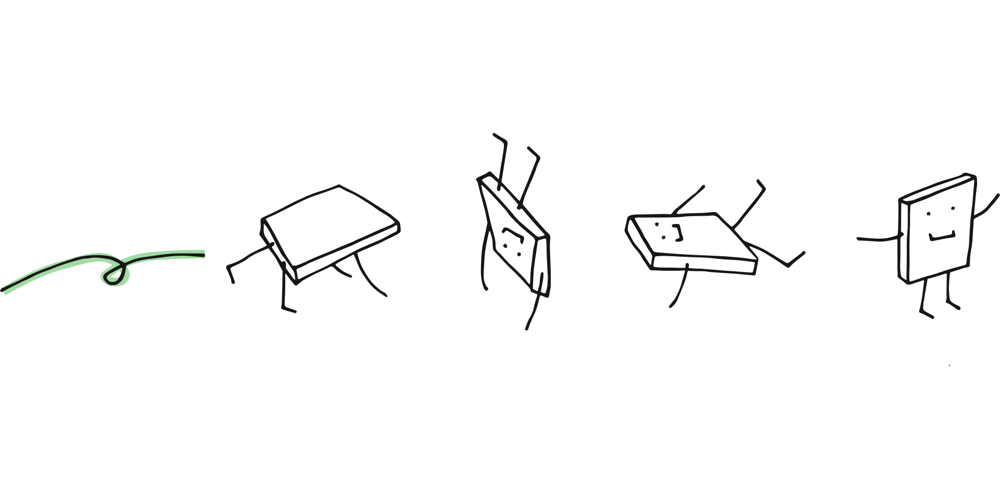
The training-stage likelihood-ratio test in Section 5.13.4 supported allowing precision to vary by Study Time, while the optional complexity check in Section 5.13.5 did not support expanding the mean submodel beyond Study Time. Thus, our working model is the focused specification
\[ \text{mean}\sim\texttt{Study Time}, \qquad \text{precision}\sim\texttt{Study Time}. \]
Before freezing that specification, we repeat the same diagnostic layers used for the constant-precision model. This is important because a better likelihood does not, by itself, establish practical adequacy. We again check numerical stability, conditional means, quantile residuals, the fitted precision structure, and sensitivity to unusual observations using the training data only.
5.14.1 Convergence and Numerical Stability
We first verify that the variable-precision fit is computationally usable. Adding a precision submodel introduces three additional parameters, so convergence and finite model-based standard errors should be checked again rather than inherited from the simpler fit.
beta_variable_parameters <- coef(beta_variable_model)
beta_variable_standard_errors <- sqrt(diag(vcov(beta_variable_model)))
beta_variable_converged <- isTRUE(beta_variable_model$converged)
beta_variable_parameters_finite <- all(is.finite(beta_variable_parameters))
beta_variable_se_finite <- all(is.finite(beta_variable_standard_errors))
beta_variable_fitted_mean <- predict(beta_variable_model, type = "response")
beta_variable_fitted_precision <- predict(beta_variable_model, type = "precision")
beta_variable_fitted_grade <- beta_grade_scale_factor * beta_variable_fitted_mean +
beta_grade_scale_offset
stopifnot(beta_variable_converged, beta_variable_parameters_finite,
beta_variable_se_finite,
all(beta_variable_fitted_mean > 0 & beta_variable_fitted_mean < 1),
all(beta_variable_fitted_precision > 0))
beta_variable_stability <- tibble(
Check = c("Optimizer converged", "All coefficient estimates finite",
"All model-based SEs finite", "Minimum fitted conditional mean (%)",
"Maximum fitted conditional mean (%)", "Minimum fitted precision",
"Maximum fitted precision"),
Result = c("Yes", "Yes", "Yes",
formatC(min(beta_variable_fitted_grade), format = "f", digits = 2),
formatC(max(beta_variable_fitted_grade), format = "f", digits = 2),
formatC(min(beta_variable_fitted_precision), format = "f", digits = 3),
formatC(max(beta_variable_fitted_precision), format = "f", digits = 3)))
beta_variable_stability |>
kable(align = c("c", "c"))| Check | Result |
|---|---|
| Optimizer converged | Yes |
| All coefficient estimates finite | Yes |
| All model-based SEs finite | Yes |
| Minimum fitted conditional mean (%) | 65.78 |
| Maximum fitted conditional mean (%) | 90.70 |
| Minimum fitted precision | 23.996 |
| Maximum fitted precision | 89.455 |
beta_variable_parameters = np.asarray(beta_variable_model.params)
beta_variable_standard_errors = np.asarray(beta_variable_model.bse)
beta_variable_converged = bool(beta_variable_model.mle_retvals["converged"])
beta_variable_parameters_finite = np.isfinite(beta_variable_parameters).all()
beta_variable_se_finite = np.isfinite(beta_variable_standard_errors).all()
beta_variable_fitted_mean = beta_variable_model.model.predict(
beta_variable_model.params, which="mean")
beta_variable_fitted_precision = beta_variable_model.model.predict(
beta_variable_model.params, which="precision")
beta_variable_fitted_grade = (
beta_grade_scale_factor * beta_variable_fitted_mean + beta_grade_scale_offset)
assert beta_variable_converged
assert beta_variable_parameters_finite and beta_variable_se_finite
assert ((beta_variable_fitted_mean > 0) & (beta_variable_fitted_mean < 1)).all()
assert (beta_variable_fitted_precision > 0).all()
beta_variable_stability = pd.DataFrame({
"Check": [
"Optimizer converged", "All coefficient estimates finite",
"All model-based SEs finite", "Minimum fitted conditional mean (%)",
"Maximum fitted conditional mean (%)", "Minimum fitted precision",
"Maximum fitted precision",
],
"Result": [
"Yes", "Yes", "Yes", f"{beta_variable_fitted_grade.min():.2f}",
f"{beta_variable_fitted_grade.max():.2f}",
f"{beta_variable_fitted_precision.min():.3f}",
f"{beta_variable_fitted_precision.max():.3f}",
],
})
beta_variable_stability_html = scrollable_table_html(beta_variable_stability)| Check | Result |
|---|---|
| Optimizer converged | Yes |
| All coefficient estimates finite | Yes |
| All model-based SEs finite | Yes |
| Minimum fitted conditional mean (%) | 65.78 |
| Maximum fitted conditional mean (%) | 90.70 |
| Minimum fitted precision | 23.996 |
| Maximum fitted precision | 89.456 |
The stability checks pass in both implementations. The fitted conditional means range from 65.78% to 90.70%, while the fitted precisions remain positive throughout. Hence, the additional precision flexibility has not produced an obvious numerical failure. Hence, we can now assess whether it resolves the distributional problem identified under constant precision.
5.14.2 Observed Versus Fitted Conditional Means
The mean submodel still contains only Study Time, but its parameter estimates are re-estimated jointly with the new precision parameters. That said, we recompute the observed-versus-fitted mean comparison rather than assuming that it is unchanged.
beta_variable_mean_calibration <- training_data |>
mutate(`Fitted mean grade (%)` = beta_variable_fitted_grade) |>
group_by(`Study Time`) |>
summarise(`Observed mean grade (%)` = mean(`Final Grade (%)`),
`Fitted mean grade (%)` = mean(`Fitted mean grade (%)`),
`Observed - fitted (percentage points)` =
`Observed mean grade (%)` - `Fitted mean grade (%)`, .groups = "drop")
beta_variable_mean_max_gap <- max(abs(
beta_variable_mean_calibration[["Observed - fitted (percentage points)"]]))
beta_variable_mean_calibration |>
kable(digits = 2, align = c("c", "c", "c", "c"))| Study Time | Observed mean grade (%) | Fitted mean grade (%) | Observed - fitted (percentage points) |
|---|---|---|---|
| <1 hour | 65.78 | 65.78 | 0.00 |
| 1–3 hours | 75.24 | 75.24 | 0.00 |
| 3–5 hours | 85.27 | 85.34 | -0.07 |
| 5+ hours | 90.62 | 90.70 | -0.08 |
beta_variable_mean_calibration = training_data[[
"Study Time", "Final Grade (%)"]].copy()
beta_variable_mean_calibration["Fitted mean grade (%)"] = beta_variable_fitted_grade
beta_variable_mean_calibration = (
beta_variable_mean_calibration.groupby("Study Time", observed=True)
.agg(**{
"Observed mean grade (%)": ("Final Grade (%)", "mean"),
"Fitted mean grade (%)": ("Fitted mean grade (%)", "mean"),
}).reset_index())
beta_variable_mean_calibration["Observed - fitted (percentage points)"] = (
beta_variable_mean_calibration["Observed mean grade (%)"]
- beta_variable_mean_calibration["Fitted mean grade (%)"])
beta_variable_mean_max_gap = np.abs(beta_variable_mean_calibration[
"Observed - fitted (percentage points)"]).max()
beta_variable_mean_calibration_html = scrollable_table_html(
beta_variable_mean_calibration, float_format=lambda value: f"{value:.2f}")| Study Time | Observed mean grade (%) | Fitted mean grade (%) | Observed - fitted (percentage points) |
|---|---|---|---|
| <1 hour | 65.78 | 65.78 | -0.00 |
| 1–3 hours | 75.24 | 75.24 | -0.00 |
| 3–5 hours | 85.27 | 85.34 | -0.07 |
| 5+ hours | 90.62 | 90.70 | -0.08 |
As shown in Table 5.42, the mean fit remains strong. The largest absolute observed-versus-fitted group-mean difference is 0.08 percentage points, compared with 0.82 percentage points under constant precision. Thus, allowing precision to vary has not required abandoning the focused Study Time mean structure. This is also consistent with the parsimony check in Section 5.13.5, which did not support retaining the additional 18 mean coefficients.
5.14.3 Quantile Residual Diagnostics
Now, we recompute the quantile residuals using the same definition introduced in Section 5.12.3, but with the fitted observation-specific precision \(\widehat{\phi}_i\):
\[ r_i^{(q)} = \Phi^{-1}\left[ F_{\operatorname{Beta}}\left( y_i;\, \widehat{\mu}_i\widehat{\phi}_i,\, (1-\widehat{\mu}_i)\widehat{\phi}_i \right) \right]. \]
The standard-Normal reference remains a graphical diagnostic rather than a standalone goodness-of-fit test (Dunn and Smyth 1996; Pereira 2019).
beta_variable_alpha <- beta_variable_fitted_mean * beta_variable_fitted_precision
beta_variable_beta <- (1 - beta_variable_fitted_mean) *
beta_variable_fitted_precision
beta_variable_cdf <- pbeta(training_data$grade_beta, beta_variable_alpha,
beta_variable_beta)
beta_variable_cdf <- pmin(pmax(beta_variable_cdf, .Machine$double.eps),
1 - .Machine$double.eps)
beta_variable_quantile_residuals <- qnorm(beta_variable_cdf)
beta_variable_residual_data <- training_data |>
transmute(`Study Time`, `Final Grade (%)`, grade_beta,
fitted_mean_beta = beta_variable_fitted_mean,
fitted_precision = beta_variable_fitted_precision,
`Fitted mean grade (%)` = beta_variable_fitted_grade,
quantile_residual = beta_variable_quantile_residuals)
beta_variable_residual_summary <- beta_variable_residual_data |>
group_by(`Study Time`) |>
summarise(Students = n(), `Mean residual` = mean(quantile_residual),
`Residual SD` = sd(quantile_residual), `Residual IQR` = IQR(quantile_residual),
`|Residual| > 2` = sum(abs(quantile_residual) > 2), .groups = "drop")
beta_variable_residual_sd_min <- min(beta_variable_residual_summary$`Residual SD`)
beta_variable_residual_sd_max <- max(beta_variable_residual_summary$`Residual SD`)
beta_variable_residual_sd_ratio <- beta_variable_residual_sd_max /
beta_variable_residual_sd_min
beta_variable_residual_summary |>
kable(digits = 3, align = c("c", "c", "c", "c", "c", "c"))| Study Time | Students | Mean residual | Residual SD | Residual IQR | |Residual| > 2 |
|---|---|---|---|---|---|
| <1 hour | 186 | 0.000 | 1.003 | 1.331 | 7 |
| 1–3 hours | 179 | 0.000 | 1.003 | 1.163 | 12 |
| 3–5 hours | 173 | -0.015 | 1.006 | 1.113 | 7 |
| 5+ hours | 162 | -0.024 | 1.011 | 1.049 | 5 |
beta_variable_alpha = beta_variable_fitted_mean * beta_variable_fitted_precision
beta_variable_beta = (
(1 - beta_variable_fitted_mean) * beta_variable_fitted_precision)
beta_variable_cdf = stats.beta.cdf(
training_data["grade_beta"], beta_variable_alpha, beta_variable_beta)
beta_variable_cdf = np.clip(
beta_variable_cdf, np.finfo(float).eps, 1 - np.finfo(float).eps)
beta_variable_quantile_residuals = stats.norm.ppf(beta_variable_cdf)
beta_variable_residual_data = training_data[[
"Study Time", "Final Grade (%)", "grade_beta"]].copy()
beta_variable_residual_data["fitted_mean_beta"] = beta_variable_fitted_mean
beta_variable_residual_data["fitted_precision"] = beta_variable_fitted_precision
beta_variable_residual_data["Fitted mean grade (%)"] = beta_variable_fitted_grade
beta_variable_residual_data["quantile_residual"] = beta_variable_quantile_residuals
beta_variable_residual_summary = (
beta_variable_residual_data.groupby("Study Time", observed=True)
.agg(Students=("quantile_residual", "size"), **{
"Mean residual": ("quantile_residual", "mean"),
"Residual SD": ("quantile_residual", "std"),
"Residual IQR": ("quantile_residual",
lambda x: x.quantile(0.75) - x.quantile(0.25)),
"|Residual| > 2": ("quantile_residual",
lambda x: (np.abs(x) > 2).sum()),
}).reset_index())
beta_variable_residual_sd_min = beta_variable_residual_summary[
"Residual SD"].min()
beta_variable_residual_sd_max = beta_variable_residual_summary[
"Residual SD"].max()
beta_variable_residual_sd_ratio = (
beta_variable_residual_sd_max / beta_variable_residual_sd_min)
beta_variable_residual_summary_html = scrollable_table_html(
beta_variable_residual_summary, float_format=lambda value: f"{value:.3f}")| Study Time | Students | Mean residual | Residual SD | Residual IQR | |Residual| > 2 |
|---|---|---|---|---|---|
| <1 hour | 186 | -0.000 | 1.003 | 1.331 | 7 |
| 1–3 hours | 179 | -0.000 | 1.003 | 1.163 | 12 |
| 3–5 hours | 173 | -0.015 | 1.006 | 1.113 | 7 |
| 5+ hours | 162 | -0.024 | 1.011 | 1.049 | 5 |
According to Table 5.44, the improvement in residual spread across groups is substantial. Under the constant-precision model, see Table 5.29, the largest group-specific residual SD was 1.93 times the smallest. After allowing precision to vary with Study Time, that ratio falls to only 1.01. More specifically, the residual SDs are now 1.003 for <1 hour, 1.003 for 1–3 hours, 1.006 for 3–5 hours, and 1.011 for 5+ hours. In the training split, these are essentially all equal to \(1\), ranging only from 1.003 to 1.011.
The residual means are also close to zero in every category, so there is little evidence of systematic location bias within any study-time group. Therefore, these results contrast sharply with the increasing residual dispersion seen under constant precision. The added precision submodel has addressed the main across-group distributional mismatch identified in Section 5.12.3: the fitted conditional distributions now produce quantile residuals with approximately comparable scale across all four fitted mean levels.
The residual-versus-fitted plot provides the corresponding visual check.
beta_variable_residual_y_limits <- c(
floor(min(beta_variable_quantile_residuals)),
ceiling(max(beta_variable_quantile_residuals)))
beta_variable_residual_y_breaks <- seq(
2 * ceiling(beta_variable_residual_y_limits[1] / 2),
2 * floor(beta_variable_residual_y_limits[2] / 2), by = 2)
beta_variable_residual_fitted_x_limits <- c(
5 * floor((min(beta_variable_fitted_grade) - 0.5) / 5),
5 * ceiling((max(beta_variable_fitted_grade) + 0.5) / 5))
beta_variable_residual_fitted_x_breaks <- seq(
beta_variable_residual_fitted_x_limits[1],
beta_variable_residual_fitted_x_limits[2], by = 5)
beta_variable_residual_fitted_plot <- ggplot(beta_variable_residual_data,
aes(x = `Fitted mean grade (%)`, y = quantile_residual)) +
geom_point(position = position_jitter(width = 0.25, height = 0, seed = 551),
alpha = 0.45, colour = "#0072B2") +
geom_hline(yintercept = 0, linewidth = 0.8) +
geom_hline(yintercept = c(-2, 2), linetype = "dashed", linewidth = 0.7) +
scale_x_continuous(limits = beta_variable_residual_fitted_x_limits,
breaks = beta_variable_residual_fitted_x_breaks, expand = expansion(mult = 0)) +
scale_y_continuous(limits = beta_variable_residual_y_limits,
breaks = beta_variable_residual_y_breaks, expand = expansion(mult = 0)) +
theme_bw() +
theme(axis.text = element_text(size = 15.5), axis.title = element_text(size = 20),
panel.grid.minor = element_blank()) +
labs(x = "\n Fitted conditional mean grade (%)", y = "Quantile residual\n")
beta_variable_residual_fitted_plot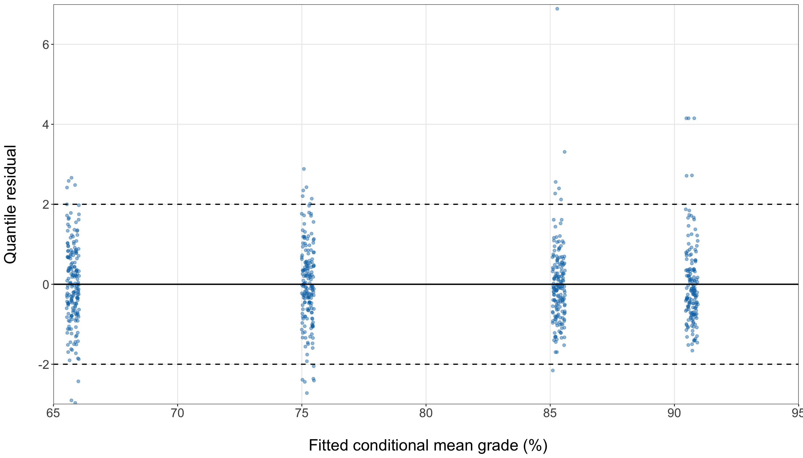
beta_variable_residual_y_limits = (
np.floor(beta_variable_quantile_residuals.min()),
np.ceil(beta_variable_quantile_residuals.max()))
beta_variable_residual_y_breaks = np.arange(
2 * np.ceil(beta_variable_residual_y_limits[0] / 2),
2 * np.floor(beta_variable_residual_y_limits[1] / 2) + 1, 2)
beta_variable_residual_fitted_x_limits = (
5 * np.floor((beta_variable_fitted_grade.min() - 0.5) / 5),
5 * np.ceil((beta_variable_fitted_grade.max() + 0.5) / 5))
beta_variable_residual_fitted_x_breaks = np.arange(
beta_variable_residual_fitted_x_limits[0],
beta_variable_residual_fitted_x_limits[1] + 1, 5)
beta_variable_residual_plot_rng = np.random.default_rng(551)
beta_variable_residual_plot_x = beta_variable_fitted_grade + (
beta_variable_residual_plot_rng.uniform(
-0.25, 0.25, len(beta_variable_fitted_grade)))
beta_variable_residual_fitted_plot, beta_variable_residual_fitted_axis = (
plt.subplots(figsize=(14, 8)))
_ = beta_variable_residual_fitted_axis.scatter(
beta_variable_residual_plot_x, beta_variable_quantile_residuals,
alpha=0.45, color="#0072B2")
_ = beta_variable_residual_fitted_axis.axhline(0, linewidth=0.8, color="black")
for reference in (-2, 2):
_ = beta_variable_residual_fitted_axis.axhline(
reference, linestyle="--", linewidth=0.7, color="black")
_ = beta_variable_residual_fitted_axis.set_xlim(
beta_variable_residual_fitted_x_limits)
_ = beta_variable_residual_fitted_axis.set_xticks(
beta_variable_residual_fitted_x_breaks)
_ = beta_variable_residual_fitted_axis.set_ylim(beta_variable_residual_y_limits)
_ = beta_variable_residual_fitted_axis.set_yticks(beta_variable_residual_y_breaks)
_ = beta_variable_residual_fitted_axis.set_xlabel(
"\n Fitted conditional mean grade (%)", fontsize=20)
_ = beta_variable_residual_fitted_axis.set_ylabel(
"Quantile residual\n", fontsize=20)
beta_variable_residual_fitted_axis.tick_params(axis="both", labelsize=15.5)
beta_variable_residual_fitted_plot.tight_layout()
plt.show()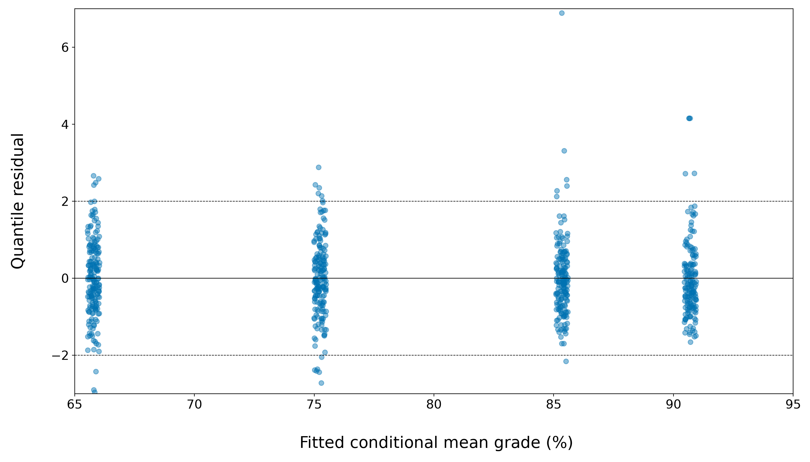
As before, the horizontal axis contains four fitted mean locations because Study Time is the only regressor retained in the mean submodel. The important change is in the vertical spread of the residual clouds. Under the constant-precision model in Figure 5.7, the two higher-study-time groups show visibly greater dispersion than the first two groups, including several large positive residuals. This produces the systematic increase in residual spread already quantified in Table 5.29.
That pattern is largely removed in Figure 5.13. The main residual clouds at all four fitted mean locations are now centred close to zero and have very similar vertical spread, consistent with the group-specific residual SDs being approximately \(1\) throughout. Some isolated upper-tail observations remain—most visibly in the 3–5 hours and 5+ hours groups, but they no longer form part of a broader pattern in which residual dispersion increases with the fitted conditional mean. Thus, the variable-precision model has addressed the systematic across-group dispersion mismatch that motivated the refinement, while leaving a small number of individual tail departures for the Q-Q and influence diagnostics to examine separately.
A Normal Q-Q plot gives a complementary assessment of the overall residual distribution.
beta_variable_qq_probabilities <- (
seq_along(beta_variable_quantile_residuals) - 0.5
) / length(beta_variable_quantile_residuals)
beta_variable_qq_data <- tibble(
theoretical = qnorm(beta_variable_qq_probabilities),
observed = sort(beta_variable_quantile_residuals))
beta_variable_qq_x_limits <- c(
floor(min(beta_variable_qq_data$theoretical)),
ceiling(max(beta_variable_qq_data$theoretical)))
beta_variable_qq_x_breaks <- seq(
2 * ceiling(beta_variable_qq_x_limits[1] / 2),
2 * floor(beta_variable_qq_x_limits[2] / 2), by = 2)
beta_variable_qq_y_limits <- c(
floor(min(beta_variable_quantile_residuals)),
ceiling(max(beta_variable_quantile_residuals)))
beta_variable_qq_y_breaks <- seq(
2 * ceiling(beta_variable_qq_y_limits[1] / 2),
2 * floor(beta_variable_qq_y_limits[2] / 2), by = 2)
beta_variable_residual_qq_plot <- ggplot(beta_variable_qq_data,
aes(x = theoretical, y = observed)) +
geom_point(alpha = 0.55, colour = "#0072B2") +
geom_abline(intercept = 0, slope = 1, linetype = "dashed") +
scale_x_continuous(limits = beta_variable_qq_x_limits,
breaks = beta_variable_qq_x_breaks, expand = expansion(mult = 0)) +
scale_y_continuous(limits = beta_variable_qq_y_limits,
breaks = beta_variable_qq_y_breaks, expand = expansion(mult = 0)) +
theme_bw() +
theme(axis.text = element_text(size = 15.5), axis.title = element_text(size = 20),
panel.grid.minor = element_blank()) +
labs(x = "\n Theoretical standard-Normal quantiles",
y = "Observed quantile residuals\n")
beta_variable_residual_qq_plot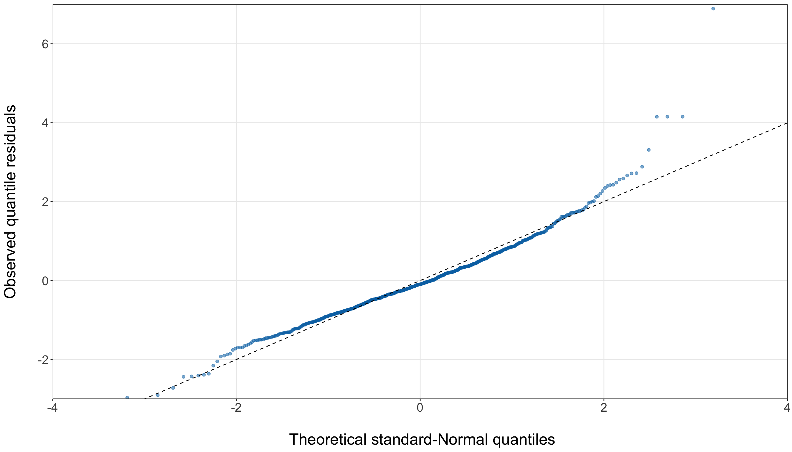
beta_variable_qq_probabilities = (
np.arange(1, len(beta_variable_quantile_residuals) + 1) - 0.5
) / len(beta_variable_quantile_residuals)
beta_variable_qq_data = pd.DataFrame({
"theoretical": stats.norm.ppf(beta_variable_qq_probabilities),
"observed": np.sort(beta_variable_quantile_residuals),
})
beta_variable_qq_x_limits = (
np.floor(beta_variable_qq_data["theoretical"].min()),
np.ceil(beta_variable_qq_data["theoretical"].max()))
beta_variable_qq_x_breaks = np.arange(
2 * np.ceil(beta_variable_qq_x_limits[0] / 2),
2 * np.floor(beta_variable_qq_x_limits[1] / 2) + 1, 2)
beta_variable_qq_y_limits = (
np.floor(beta_variable_quantile_residuals.min()),
np.ceil(beta_variable_quantile_residuals.max()))
beta_variable_qq_y_breaks = np.arange(
2 * np.ceil(beta_variable_qq_y_limits[0] / 2),
2 * np.floor(beta_variable_qq_y_limits[1] / 2) + 1, 2)
beta_variable_residual_qq_plot, beta_variable_residual_qq_axis = (
plt.subplots(figsize=(14, 8)))
_ = beta_variable_residual_qq_axis.scatter(
beta_variable_qq_data["theoretical"], beta_variable_qq_data["observed"],
alpha=0.55, color="#0072B2")
_ = beta_variable_residual_qq_axis.plot(
beta_variable_qq_x_limits, beta_variable_qq_x_limits,
linestyle="--", color="black")
_ = beta_variable_residual_qq_axis.set_xlim(beta_variable_qq_x_limits)
_ = beta_variable_residual_qq_axis.set_xticks(beta_variable_qq_x_breaks)
_ = beta_variable_residual_qq_axis.set_ylim(beta_variable_qq_y_limits)
_ = beta_variable_residual_qq_axis.set_yticks(beta_variable_qq_y_breaks)
_ = beta_variable_residual_qq_axis.set_xlabel(
"\n Theoretical standard-Normal quantiles", fontsize=20)
_ = beta_variable_residual_qq_axis.set_ylabel(
"Observed quantile residuals\n", fontsize=20)
beta_variable_residual_qq_axis.tick_params(axis="both", labelsize=15.5)
beta_variable_residual_qq_plot.tight_layout()
plt.show()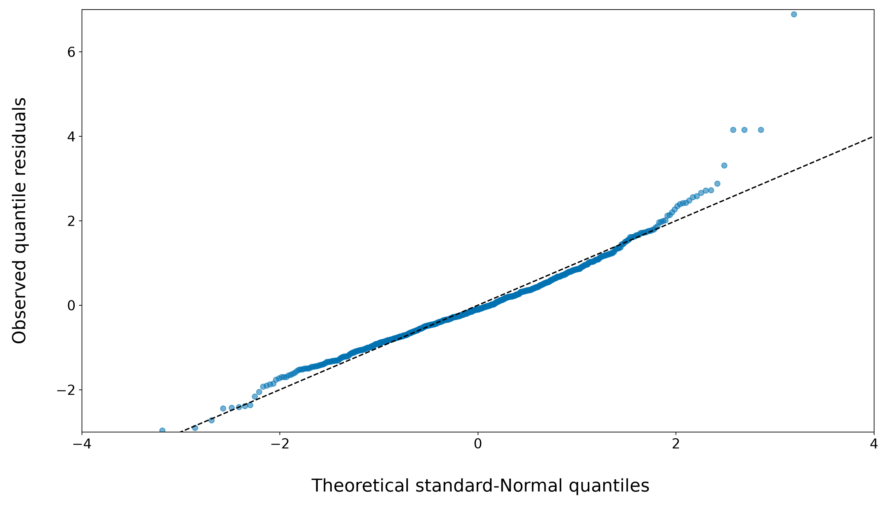
The Normal Q-Q plot in Figure 5.15 shows a clear improvement over the constant-precision diagnostic in Figure 5.9. Across most of the central range, the quantile residuals now follow the standard-Normal reference line closely. The lower tail also tracks the reference more closely than under constant precision, where a more systematic departure was visible.
The most important remaining discrepancy is in the upper tail. Several positive residuals still rise above the reference line, including one particularly large observation, so the variable-precision model has not eliminated all tail departures. However, the pronounced upper-tail distortion under the constant-precision model has been substantially reduced: the remaining departures are more localized rather than accompanying the broader across-group dispersion pattern seen previously.
This distinction is critical for the adequacy assessment. Together with the nearly equal group-specific residual SDs and the much more comparable residual clouds in Figure 5.13, the Q-Q plot indicates that modelling precision by Study Time has corrected the main systematic distributional inadequacy of the initial model. The remaining upper-tail observations should therefore be examined as localized departures in the subsequent influence analysis rather than interpreted, by themselves, as evidence that the revised specification is globally inadequate.
As before, the Q-Q plot is a diagnostic rather than a formal acceptance test. We use it together with the groupwise residual summaries, residual-versus-fitted plot, precision diagnostic, and influence screen to judge whether any remaining departure is sufficiently systematic to justify further model refinement.
5.14.4 Precision-structure Check
The variable-precision model now estimates a separate fitted precision for each Study Time category. Recall that, holding \(\mu_i\) fixed, a larger \(\phi_i\) means a more concentrated conditional Beta distribution, whereas a smaller \(\phi_i\) means a broader conditional distribution. Because both \(\mu_i\) and \(\phi_i\) enter the Beta variance function, the fitted precision values should be interpreted together with the corresponding fitted means rather than in isolation.
We compare the fitted category-specific precisions with the variance-matching diagnostic introduced in Section 5.12.4 and, on the original grade scale, compare the observed group SDs with the SDs implied by the variable-precision model.
beta_variable_precision_diagnostic <- beta_variable_residual_data |>
group_by(`Study Time`) |>
summarise(observed_sd_grade = sd(`Final Grade (%)`),
observed_variance_beta = var(grade_beta),
fitted_mean_beta = first(fitted_mean_beta),
fitted_precision = first(fitted_precision), .groups = "drop") |>
mutate(model_sd_grade = beta_grade_scale_factor * sqrt(
fitted_mean_beta * (1 - fitted_mean_beta) / (1 + fitted_precision)),
sd_ratio = observed_sd_grade / model_sd_grade,
variance_matching_phi = fitted_mean_beta * (1 - fitted_mean_beta) /
observed_variance_beta - 1)
beta_variable_sd_ratio_min <- min(beta_variable_precision_diagnostic$sd_ratio)
beta_variable_sd_ratio_max <- max(beta_variable_precision_diagnostic$sd_ratio)
beta_variable_precision_diagnostic |>
transmute(`Study Time`, `Fitted precision` = fitted_precision,
`Variance-matching precision` = variance_matching_phi,
`Observed SD (percentage points)` = observed_sd_grade,
`Model-implied SD (percentage points)` = model_sd_grade,
`Observed / implied SD` = sd_ratio) |>
kable(digits = 2, align = c("c", "c", "c", "c", "c", "c"))| Study Time | Fitted precision | Variance-matching precision | Observed SD (percentage points) | Model-implied SD (percentage points) | Observed / implied SD |
|---|---|---|---|---|---|
| <1 hour | 89.45 | 89.19 | 5.00 | 4.99 | 1.00 |
| 1–3 hours | 73.63 | 73.49 | 5.01 | 5.00 | 1.00 |
| 3–5 hours | 35.39 | 50.83 | 4.92 | 5.87 | 0.84 |
| 5+ hours | 24.00 | 39.18 | 4.60 | 5.83 | 0.79 |
beta_variable_precision_diagnostic = (
beta_variable_residual_data.groupby("Study Time", observed=True)
.agg(observed_sd_grade=("Final Grade (%)", "std"),
observed_variance_beta=("grade_beta", "var"),
fitted_mean_beta=("fitted_mean_beta", "first"),
fitted_precision=("fitted_precision", "first")).reset_index())
beta_variable_precision_diagnostic["model_sd_grade"] = beta_grade_scale_factor * np.sqrt(
beta_variable_precision_diagnostic["fitted_mean_beta"]
* (1 - beta_variable_precision_diagnostic["fitted_mean_beta"])
/ (1 + beta_variable_precision_diagnostic["fitted_precision"]))
beta_variable_precision_diagnostic["sd_ratio"] = (
beta_variable_precision_diagnostic["observed_sd_grade"]
/ beta_variable_precision_diagnostic["model_sd_grade"])
beta_variable_precision_diagnostic["variance_matching_phi"] = (
beta_variable_precision_diagnostic["fitted_mean_beta"]
* (1 - beta_variable_precision_diagnostic["fitted_mean_beta"])
/ beta_variable_precision_diagnostic["observed_variance_beta"] - 1)
beta_variable_sd_ratio_min = beta_variable_precision_diagnostic["sd_ratio"].min()
beta_variable_sd_ratio_max = beta_variable_precision_diagnostic["sd_ratio"].max()
beta_variable_precision_display = beta_variable_precision_diagnostic[[
"Study Time", "fitted_precision", "variance_matching_phi",
"observed_sd_grade", "model_sd_grade", "sd_ratio"]].rename(columns={
"fitted_precision": "Fitted precision",
"variance_matching_phi": "Variance-matching precision",
"observed_sd_grade": "Observed SD (percentage points)",
"model_sd_grade": "Model-implied SD (percentage points)",
"sd_ratio": "Observed / implied SD"})
beta_variable_precision_diagnostic_html = scrollable_table_html(
beta_variable_precision_display, float_format=lambda value: f"{value:.2f}")| Study Time | Fitted precision | Variance-matching precision | Observed SD (percentage points) | Model-implied SD (percentage points) | Observed / implied SD |
|---|---|---|---|---|---|
| <1 hour | 89.46 | 89.19 | 5.00 | 4.99 | 1.00 |
| 1–3 hours | 73.63 | 73.49 | 5.01 | 5.00 | 1.00 |
| 3–5 hours | 35.39 | 50.83 | 4.92 | 5.87 | 0.84 |
| 5+ hours | 24.00 | 39.18 | 4.60 | 5.83 | 0.79 |
The fitted precision values now vary substantially across Study Time in Table 5.46 for the study time-dependent precision model, decreasing from 89.45 for <1 hour to 24.00 for 5+ hours. This decline counteracts the reduction in \(\widehat{\mu}_g(1-\widehat{\mu}_g)\) as the fitted conditional mean approaches the upper boundary, allowing the model to maintain considerably more conditional spread than the constant-precision specification could.
The response-scale comparison shows that this adjustment is not identical across all four categories. For <1 hour and 1–3 hours, the fitted precisions are very close to their variance-matching counterparts, and the observed-to-implied SD ratios are both approximately 1.00. For 3–5 hours and 5+ hours, however, the fitted precisions are lower than the corresponding variance-matching values, producing somewhat broader fitted distributions: the observed-to-implied SD ratios fall to 0.84 and 0.79, respectively. In the training split, this means that the model-implied SDs exceed the observed SDs in the two highest-study-time groups.
This remaining discrepancy should not be interpreted as a failure to reproduce the variance-matching quantities exactly. Those quantities are descriptive moment-based diagnostics, whereas the fitted precisions are maximum-likelihood estimates chosen to represent the entire conditional Beta distribution. The more important result is that allowing precision to vary has moved the model in the required direction and, as shown by the nearly unit quantile-residual SDs in Table 5.44, has substantially removed the systematic across-group dispersion pattern that was present under constant precision.
The same comparison is shown graphically below.
beta_variable_precision_plot_data <- beta_variable_precision_diagnostic |>
transmute(`Study Time`, Observed = observed_sd_grade,
`Model-implied` = model_sd_grade) |>
pivot_longer(-`Study Time`, names_to = "Dispersion",
values_to = "SD (percentage points)")
beta_variable_precision_plot_y_max <- ceiling(max(
beta_variable_precision_diagnostic$observed_sd_grade,
beta_variable_precision_diagnostic$model_sd_grade))
beta_variable_precision_plot <- ggplot(beta_variable_precision_plot_data,
aes(x = `Study Time`, y = `SD (percentage points)`, fill = Dispersion)) +
geom_col(position = position_dodge(width = 0.75), width = 0.68) +
scale_fill_manual(values = c("Observed" = "#0072B2", "Model-implied" = "#D55E00")) +
scale_x_discrete(drop = FALSE, expand = expansion(add = 0.6)) +
scale_y_continuous(limits = c(0, beta_variable_precision_plot_y_max),
breaks = seq(0, beta_variable_precision_plot_y_max, 1), expand = c(0, 0)) +
theme_bw() +
theme(axis.text = element_text(size = 15.5), axis.title = element_text(size = 20),
legend.position = "bottom", legend.text = element_text(size = 16),
legend.title = element_text(size = 18), panel.grid.minor = element_blank()) +
labs(x = "\n Study Time", y = "Within-group SD (percentage points)\n",
fill = "Dispersion")
beta_variable_precision_plot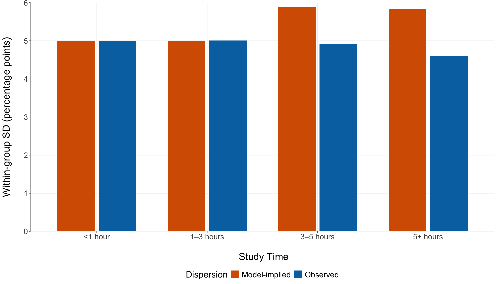
beta_variable_precision_plot_y_max = np.ceil(max(
beta_variable_precision_diagnostic["observed_sd_grade"].max(),
beta_variable_precision_diagnostic["model_sd_grade"].max()))
beta_variable_precision_plot_x = np.arange(len(study_time_levels))
beta_variable_precision_plot_width = 0.34
beta_variable_precision_plot, beta_variable_precision_axis = (
plt.subplots(figsize=(14, 8)))
_ = beta_variable_precision_axis.bar(
beta_variable_precision_plot_x - beta_variable_precision_plot_width / 2,
beta_variable_precision_diagnostic["observed_sd_grade"],
beta_variable_precision_plot_width, label="Observed", color="#0072B2")
_ = beta_variable_precision_axis.bar(
beta_variable_precision_plot_x + beta_variable_precision_plot_width / 2,
beta_variable_precision_diagnostic["model_sd_grade"],
beta_variable_precision_plot_width, label="Model-implied", color="#D55E00")
_ = beta_variable_precision_axis.set_xlim(
-0.6, len(study_time_levels) - 0.4)
_ = beta_variable_precision_axis.set_ylim(0, beta_variable_precision_plot_y_max)
_ = beta_variable_precision_axis.set_xticks(
beta_variable_precision_plot_x, study_time_levels)
_ = beta_variable_precision_axis.set_yticks(
np.arange(0, beta_variable_precision_plot_y_max + 1, 1))
_ = beta_variable_precision_axis.set_xlabel("\n Study Time", fontsize=20)
_ = beta_variable_precision_axis.set_ylabel(
"Within-group SD (percentage points)\n", fontsize=20)
beta_variable_precision_axis.tick_params(axis="both", labelsize=15.5)
_ = beta_variable_precision_axis.legend(
title="Dispersion", loc="upper center", bbox_to_anchor=(0.5, -0.14),
ncol=2, frameon=False, fontsize=16, title_fontsize=18)
beta_variable_precision_plot.tight_layout()
beta_variable_precision_plot.subplots_adjust(bottom=0.22)
plt.show()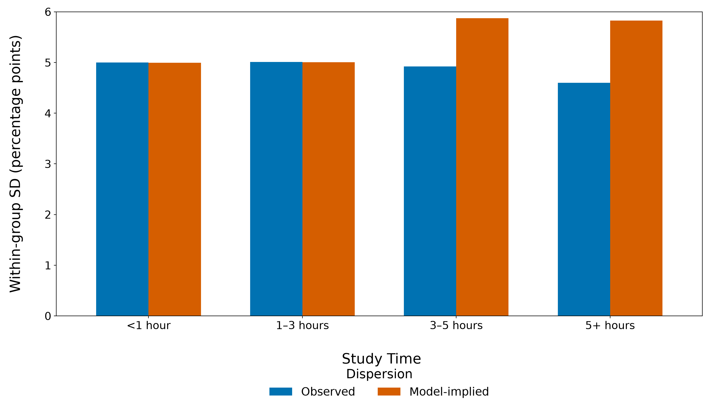
Figure 5.17 (or Figure 5.18) makes the effect of the variable-precision specification more concrete. For <1 hour, the observed and model-implied within-group SDs are 5.00 and 4.99 percentage points, respectively; for 1–3 hours, they are 5.01 and 5.00. Thus, the paired bars for the first two study-time categories nearly coincide. The agreement is less exact for the two higher-study-time categories. For 3–5 hours, the model-implied SD is 5.87 percentage points compared with an observed SD of 4.92; for 5+ hours, the corresponding values are 5.83 and 4.60. The fitted conditional distributions are therefore somewhat broader than the raw within-group spread in these two categories. Nevertheless, this adjustment is in the direction required to correct the much stronger under-dispersion imposed by the constant-precision model (see Figure 5.11), and it is consistent with the nearly unit quantile-residual SDs obtained after the refinement.
The fitted precision values themselves should not be interpreted as targets that must reproduce each raw group SD exactly. They are maximum-likelihood estimates chosen jointly with the mean parameters to represent the entire conditional Beta distribution. Holding the fitted mean fixed, a larger \(\phi_g\) corresponds to a more concentrated conditional distribution and a smaller \(\phi_g\) to a broader one. In the present model, the substantial decline in fitted precision across the study-time categories supplies the additional dispersion needed near the upper response boundary. These differences are features of the fitted conditional distribution; they should not be interpreted as evidence that study time causally changes the variability of student performance.
5.14.5 Influence and Leverage
We finish the adequacy screen by repeating the targeted case-deletion analysis for the revised model. Because Study Time supplies the same four-category design basis to both the mean and precision submodels, the ordinary design leverage remains simple. The more informative question is whether one of the largest quantile-residual cases materially changes either the four fitted means or the four fitted category-specific precisions.
As before, this is a sensitivity screen, not a hypothesis test or an automatic deletion rule.
beta_variable_mean_design <- model.matrix(~ `Study Time`, data = training_data)
beta_variable_design_leverage <- rowSums(
(beta_variable_mean_design %*% solve(crossprod(beta_variable_mean_design))) *
beta_variable_mean_design)
beta_variable_screen_positions <- head(
order(abs(beta_variable_quantile_residuals), decreasing = TRUE), 5)
beta_variable_reference <- beta_variable_residual_data |>
group_by(`Study Time`) |>
summarise(fitted_mean = first(fitted_mean_beta),
fitted_precision = first(fitted_precision), .groups = "drop")
beta_variable_influence_screen <- bind_rows(lapply(
beta_variable_screen_positions, function(position) {
beta_variable_reduced_data <- training_data[-position, , drop = FALSE]
beta_variable_reduced_model <- update(
beta_variable_model, data = beta_variable_reduced_data)
beta_variable_reduced_mean <- predict(
beta_variable_reduced_model, type = "response")
beta_variable_reduced_precision <- predict(
beta_variable_reduced_model, type = "precision")
beta_variable_reduced_reference <- beta_variable_reduced_data |>
mutate(fitted_mean = beta_variable_reduced_mean,
fitted_precision = beta_variable_reduced_precision) |>
group_by(`Study Time`) |>
summarise(fitted_mean = first(fitted_mean),
fitted_precision = first(fitted_precision), .groups = "drop")
tibble(`Training row` = position,
`Study Time` = as.character(training_data$`Study Time`[position]),
`Final grade (%)` = training_data$`Final Grade (%)`[position],
`|Quantile residual|` = abs(beta_variable_quantile_residuals[position]),
`Design leverage` = beta_variable_design_leverage[position],
`Max fitted-mean change (percentage points)` = beta_grade_scale_factor *
max(abs(beta_variable_reduced_reference$fitted_mean -
beta_variable_reference$fitted_mean)),
`Max absolute relative precision change (%)` = 100 * max(abs(
beta_variable_reduced_reference$fitted_precision /
beta_variable_reference$fitted_precision - 1)))
}))
beta_variable_max_design_leverage <- max(beta_variable_design_leverage)
beta_variable_max_mean_sensitivity <- max(
beta_variable_influence_screen[["Max fitted-mean change (percentage points)"]])
beta_variable_max_phi_sensitivity <- max(
beta_variable_influence_screen[["Max absolute relative precision change (%)"]])
beta_variable_influence_screen |>
kable(digits = 3, align = c("c", "c", "c", "c", "c", "c", "c"))| Training row | Study Time | Final grade (%) | |Quantile residual| | Design leverage | Max fitted-mean change (percentage points) | Max absolute relative precision change (%) |
|---|---|---|---|---|---|---|
| 664 | 3–5 hours | 100.000 | 6.891 | 0.006 | 0.133 | 35.481 |
| 7 | 5+ hours | 100.000 | 4.151 | 0.006 | 0.073 | 10.219 |
| 311 | 5+ hours | 100.000 | 4.151 | 0.006 | 0.073 | 10.219 |
| 343 | 5+ hours | 100.000 | 4.151 | 0.006 | 0.073 | 10.219 |
| 455 | 3–5 hours | 97.948 | 3.311 | 0.006 | 0.080 | 5.869 |
beta_variable_mean_design = beta_variable_model.model.exog
beta_variable_design_leverage = np.einsum(
"ij,jk,ik->i", beta_variable_mean_design,
np.linalg.inv(beta_variable_mean_design.T @ beta_variable_mean_design),
beta_variable_mean_design)
beta_variable_screen_positions = np.argsort(
np.abs(beta_variable_quantile_residuals))[-5:][::-1]
beta_variable_reference = beta_variable_residual_data.groupby(
"Study Time", observed=True).agg(
fitted_mean=("fitted_mean_beta", "first"),
fitted_precision=("fitted_precision", "first")).reindex(study_time_levels)
beta_variable_influence_rows = []
for position in beta_variable_screen_positions:
beta_variable_reduced_data = training_data.drop(training_data.index[position])
beta_variable_reduced_model = BetaModel.from_formula(
'grade_beta ~ C(Q("Study Time"), Treatment(reference="<1 hour"))',
data=beta_variable_reduced_data,
exog_precision_formula=
'C(Q("Study Time"), Treatment(reference="<1 hour"))',
link=sm.families.links.Logit(), link_precision=sm.families.links.Log(),
).fit(method="bfgs", maxiter=1000, disp=False)
beta_variable_reduced_mean = beta_variable_reduced_model.model.predict(
beta_variable_reduced_model.params, which="mean")
beta_variable_reduced_precision = beta_variable_reduced_model.model.predict(
beta_variable_reduced_model.params, which="precision")
beta_variable_reduced_reference = beta_variable_reduced_data[
["Study Time"]].copy()
beta_variable_reduced_reference["fitted_mean"] = beta_variable_reduced_mean
beta_variable_reduced_reference["fitted_precision"] = (
beta_variable_reduced_precision)
beta_variable_reduced_reference = beta_variable_reduced_reference.groupby(
"Study Time", observed=True).agg(
fitted_mean=("fitted_mean", "first"),
fitted_precision=("fitted_precision", "first")).reindex(study_time_levels)
beta_variable_influence_rows.append({
"Training row": int(position + 1),
"Study Time": str(training_data.iloc[position]["Study Time"]),
"Final grade (%)": training_data.iloc[position]["Final Grade (%)"],
"|Quantile residual|": abs(beta_variable_quantile_residuals[position]),
"Design leverage": beta_variable_design_leverage[position],
"Max fitted-mean change (percentage points)": beta_grade_scale_factor *
np.max(np.abs(beta_variable_reduced_reference["fitted_mean"]
- beta_variable_reference["fitted_mean"])),
"Max absolute relative precision change (%)": 100 * np.max(np.abs(
beta_variable_reduced_reference["fitted_precision"]
/ beta_variable_reference["fitted_precision"] - 1)),
})
beta_variable_influence_screen = pd.DataFrame(beta_variable_influence_rows)
beta_variable_max_design_leverage = beta_variable_design_leverage.max()
beta_variable_max_mean_sensitivity = beta_variable_influence_screen[
"Max fitted-mean change (percentage points)"].max()
beta_variable_max_phi_sensitivity = beta_variable_influence_screen[
"Max absolute relative precision change (%)"].max()
beta_variable_influence_html = scrollable_table_html(
beta_variable_influence_screen, float_format=lambda value: f"{value:.3f}")| Training row | Study Time | Final grade (%) | |Quantile residual| | Design leverage | Max fitted-mean change (percentage points) | Max absolute relative precision change (%) |
|---|---|---|---|---|---|---|
| 664 | 3–5 hours | 100.000 | 6.891 | 0.006 | 0.134 | 35.479 |
| 343 | 5+ hours | 100.000 | 4.151 | 0.006 | 0.073 | 10.218 |
| 311 | 5+ hours | 100.000 | 4.151 | 0.006 | 0.073 | 10.218 |
| 7 | 5+ hours | 100.000 | 4.151 | 0.006 | 0.073 | 10.218 |
| 455 | 3–5 hours | 97.948 | 3.311 | 0.006 | 0.080 | 5.869 |
The ordinary mean-design leverage remains uniformly low. Its largest value is only 0.0062, which is expected because the retained model uses the same four well-represented Study Time categories in both submodels. Hence, in Table 5.48, none of the five screened observations is unusual because of its regressor configuration. Instead, they are selected because their responses are unusual relative to their fitted conditional Beta distributions.
The case-deletion results show a clear difference between the stability of the conditional means and the stability of the precision parameters. Deleting any one of the five observations changes the four fitted mean grades by at most 0.133 percentage points, so the fitted mean structure is extremely stable. The largest sensitivity occurs for the 3–5 hours observation with the most extreme positive quantile residual: removing that single case changes at least one fitted category-specific precision by as much as 35.48%. The remaining screened cases produce appreciably smaller precision changes.
Note that this distinction is substantively important. The revised model’s mean component is not being driven by a handful of unusual observations, but the precision component is understandably more responsive to observations near the upper response boundary because it governs the concentration of the conditional distribution. In particular, the largest precision sensitivity is associated with an observation receiving a final grade of 100% in a category where such a response lies far into the fitted upper tail. This is consistent with the localized upper-tail departure that remained visible in the variable-precision Q-Q plot (see Figure 5.15).
These sensitivity values do not have universal cutoff thresholds, and a comparatively large relative change in one fitted precision is not, by itself, a reason to delete the corresponding observation. More importantly, the broader diagnostic evidence does not disappear because of this case: the fitted means remain stable, the group-specific quantile-residual SDs are now approximately equal, and the systematic increase in residual dispersion seen under constant precision has been substantially removed. Thus, we retain all observations and interpret the case-deletion result as evidence of localized precision sensitivity, not as evidence that the overall variable-precision refinement is being driven by a single case.
5.14.6 Variable-precision Model Practical Adequacy Summary
The repeated training-stage diagnostics now assess the focused Study Time mean + Study Time precision model selected in Section 5.13.4 and retained after the parsimony check in Section 5.13.5. The summarized diagnostic conclusions are shown in Table 5.50.
| Diagnostic layer | Training-stage finding | Implication for the workflow |
|---|---|---|
| Numerical stability | Optimization converges, all estimates and model-based SEs are finite, fitted means remain inside the response support, and all fitted precisions are positive. | The revised fitted solution is numerically usable. |
| Conditional means | The largest absolute observed-versus-fitted group-mean difference is 0.08 percentage points. | The focused Study Time mean submodel continues to reproduce the group centres well after precision is allowed to vary. |
| Quantile residuals | Group-specific residual SDs range only from 1.003 to 1.011, giving a largest-to-smallest ratio of 1.01, compared with 1.93 under constant precision. The main residual clouds are similarly dispersed, although some localized upper-tail departures remain. | The systematic increase in residual dispersion across the four fitted mean levels has been substantially removed. The remaining departures are localized rather than evidence of the same broad across-group mismatch. |
| Precision structure | Fitted precision decreases markedly across Study Time. Observed-to-implied group SD ratios range from 0.79 to 1.00: agreement is very close for the first two categories, while the fitted distributions remain somewhat broader than the observed spread for 3–5 hours and 5+ hours. |
The variable-precision structure moves the model in the direction required to reconcile the Beta variance function with the training data, without requiring exact reproduction of the descriptive variance-matching quantities. |
| Influence screen | The largest design leverage is 0.0062. Targeted deletion changes fitted group means by at most 0.133 percentage points, while the largest relative change in a fitted category-specific precision is 35.48%. | The mean structure is extremely stable. One extreme upper-tail case produces noticeable localized precision sensitivity, but it does not explain the broader improvement in residual dispersion across groups. |
Taken together, the diagnostics show that the targeted precision refinement addresses the main structural inadequacy of the initial model without introducing unsupported complexity into the mean submodel. The conditional means remain well represented, and the group-specific quantile-residual SDs are now essentially equal across the four Study Time categories. This is a substantial improvement over the constant-precision model, where residual dispersion increased systematically with the fitted conditional mean.
The revised model is not diagnostically perfect. The Q-Q plot, from Figure 5.15, still shows several localized upper-tail departures, and the response-scale precision diagnostic shows that the fitted distributions for 3–5 hours and 5+ hours are somewhat broader than their raw within-group grade spread. In addition, the case-deletion screen identifies one extreme observation for which a fitted precision is noticeably sensitive. These remaining features are important to report, but they do not reproduce the systematic across-group failure that motivated the refinement: the fitted means remain highly stable, the residual spreads are now approximately comparable, and the overall dispersion pattern is no longer driven by the constant-precision restriction.
The likelihood-ratio test in Section 5.13.4 provides formal training-stage evidence in favour of allowing precision to depend on Study Time, while the separate mean-complexity test in Section 5.13.5 does not support retaining the additional 18 mean coefficients. The diagnostic evidence is therefore coherent with the model-development decisions: retain the focused Study Time mean structure, retain Study Time-dependent precision, and do not reopen the larger mean model.
No finite collection of diagnostics can establish that a fitted model is literally correct. The practical question is whether any remaining departure is sufficiently large, systematic, or structurally interpretable to justify another round of model development before examining the testing outcomes. Here, the remaining issues are localized rather than systematic, and no comparably strong unresolved pattern emerges that would motivate another specification change.
Thus, we judge the Study Time mean + Study Time precision Beta regression to be adequate enough to freeze as the final specification. From this point onward, the response transformation, mean and precision structures, links, treatment coding, and prediction targets should remain fixed. The frozen model can now be carried forward to the final inferential analysis and the held-out predictive evaluation without using the testing outcomes to alter the specification.
5.15 Freezing the Final Specification
At this point, the training-stage model-development process is complete. The variable-precision model addressed the main distributional inadequacy of the initial constant-precision fit, while the separate complexity check did not support expanding the mean submodel beyond Study Time. Thus, we freeze the complete analysis specification before examining the testing outcomes.
Freezing applies to more than the regression formula. It also fixes the response definition, links, category coding, predictive baseline, evaluation scales, predictive metrics, interval level, and distributional calibration diagnostic. The testing responses may later be used to evaluate the pre-specified inferential and predictive questions, but they cannot be used to revise any of these choices.
| Component | Frozen choice |
|---|---|
| Response used by the Beta model |
grade_beta, obtained from the fixed Smithson–Verkuilen interior transformation defined in Section 5.5.3 using the full-sample value of \(n\) fixed before splitting |
| Mean submodel |
Study Time treatment indicators |
| Precision submodel |
Study Time treatment indicators |
| Mean link | Logit as in Equation 5.5 |
| Precision link | Log as in Equation 5.6 |
| Reference category | <1 hour |
| Training-fitted model carried into prediction | The variable-precision Beta regression from Section 5.13.2 fitted in Section 5.13.3 |
| Predictive baseline | Intercept-only Beta regression, with intercept-only mean and precision submodels, fitted using the training data only |
| Point-prediction target | Held-out final grade reported on the original percentage scale |
| Point-prediction metrics | Mean error (ME), mean absolute error (MAE), and root mean squared error (RMSE) |
| Probabilistic predictive score | Mean negative log predictive density (NLPD) |
| Predictive intervals | Equal-tailed 90% plug-in predictive intervals |
| Predictive-interval summaries | Empirical 90% coverage and average 90% interval width, with width reported in percentage points |
| Distributional calibration diagnostic | Probability integral transform (PIT) histogram using ten equal-width bins on \([0,1]\) |
The distinction between the modelling scale and the reporting scale is critical. The Beta likelihood, NLPD, and PIT calculations use the transformed response grade_beta, because this is the response on \((0,1)\) for which the fitted Beta distribution is defined. By contrast, conditional-mean point predictions and predictive-interval endpoints will be translated back to the original grade-percentage scale for interpretation. Because the boundary transformation was fixed before the split, neither the final model nor the baseline may use a different transformation after the testing outcomes are examined.
5.15.1 Pre-specified Point-Prediction Assessment
For a held-out student \(i\), let \(g_i\) denote the observed final grade in percentage points and let \(\widehat{g}_i\) denote the conditional-mean prediction obtained from the training-fitted variable-precision model after reversing the fixed boundary transformation. If
\[ e_i = g_i-\widehat{g}_i, \]
then the point-prediction metrics are
\[ \operatorname{ME} = \frac{1}{n_{\mathrm{test}}} \sum_{i\in\mathcal I_{\mathrm{test}}}e_i, \tag{5.26}\]
\[ \operatorname{MAE} = \frac{1}{n_{\mathrm{test}}} \sum_{i\in\mathcal I_{\mathrm{test}}}|e_i|, \tag{5.27}\]
and
\[ \operatorname{RMSE} = \sqrt{ \frac{1}{n_{\mathrm{test}}} \sum_{i\in\mathcal I_{\mathrm{test}}}e_i^2 }. \tag{5.28}\]
All three quantities are evaluated on the original grade-percentage scale. With the sign convention in Equation 5.26, a positive ME indicates average underprediction, whereas a negative ME indicates average overprediction. MAE describes the typical absolute size of the prediction error, while RMSE gives comparatively greater weight to larger errors. MAE and RMSE therefore assess the accuracy of the predicted conditional mean; they do not assess whether the fitted Beta distribution represents predictive dispersion appropriately.
The inverse transformation used to recover the percentage-scale point prediction is also frozen. If \(\widehat{\mu}_i\) is the predicted conditional mean on the transformed Beta scale and \(n\) is the full-sample value fixed in Section 5.5.3, then
\[ \widehat{g}_i = 100 \left( \frac{n\widehat{\mu}_i-0.5}{n-1} \right). \tag{5.29}\]
5.15.2 Pre-specified Probabilistic Predictive Assessment
Beta regression provides an entire fitted conditional distribution, not only \(\widehat{\mu}_i\). For each held-out student, the frozen training model will produce
\[ \widehat{\mu}_i, \qquad \widehat{\phi}_i, \]
and therefore the fitted Beta shape parameters
\[ \widehat{\alpha}_i = \widehat{\mu}_i\widehat{\phi}_i, \qquad \widehat{\beta}_i = (1-\widehat{\mu}_i)\widehat{\phi}_i. \]
Definition of plug-in predictive distribution
A plug-in predictive distribution uses parameter estimates obtained from the training data and then treats those fitted values as fixed when predicting or evaluating new observations. Here, the training-fitted values \(\widehat{\mu}_i\) and \(\widehat{\phi}_i\) determine a Beta distribution for each held-out student.
This distribution represents conditional response variability under the fitted model, but it does not integrate over uncertainty in the estimated regression coefficients or precision parameters. Hence, it is different from a Bayesian posterior predictive distribution, which averages over parameter uncertainty.
Our primary probabilistic score will be NLPD. For the transformed held-out response \(y_i=\texttt{grade\_beta}_i\),
\[ \operatorname{NLPD}_i = -\log f_{\operatorname{Beta}} \left( y_i; \widehat{\alpha}_i, \widehat{\beta}_i \right), \tag{5.30}\]
and the testing-set summary is
\[ \overline{\operatorname{NLPD}} = -\frac{1}{n_{\mathrm{test}}} \sum_{i\in\mathcal I_{\mathrm{test}}} \log f_{\operatorname{Beta}} \left( y_i; \widehat{\alpha}_i, \widehat{\beta}_i \right). \tag{5.31}\]
Unlike MAE and RMSE, NLPD evaluates the entire fitted conditional Beta distribution through the predictive density assigned to the response that actually occurs. More precisely, the observation-specific quantity in Equation 5.30 is the negative of the logarithmic score. For a predictive density \(p(\cdot)\) and realized outcome \(\omega\), Gneiting and Raftery (2007) define the logarithmic score as \(\operatorname{LogS}(p,\omega)=\log p(\omega)\) and show that it is strictly proper. Strict propriety means that, in expectation, the score is optimized by issuing the predictive distribution that corresponds to the data-generating distribution rather than a different one.
In our loss-oriented formulation, NLPD changes the sign of the logarithmic score, so smaller values are better. Consequently, a fitted Beta distribution receives a larger penalty when it assigns little density to a response that actually occurs. This can happen because its conditional mean is poorly located or because its dispersion is poorly represented: an overly concentrated distribution may assign very little density to even a modest departure from its fitted mean, whereas an unnecessarily diffuse distribution spreads its density more broadly.
In our frequentist setting, we apply NLPD to the plug-in held-out predictive distributions produced by the frozen training model. Thus, the fitted parameters are estimated from the training data and then treated as fixed when the testing responses are evaluated. When competing models are assessed on the same held-out observations, response definition, and transformation, a smaller mean NLPD indicates better probabilistic predictive performance.
Heads-up on interpreting NLPD!
A negative NLPD is possible because NLPD uses a probability density, not a probability. Let us recall that a probability must lie between \(0\) and \(1\). However, a PDF is a height of a density curve and can be greater than \(1\). What must equal \(1\) is the total area under the PDF curve, not its maximum height. This is especially easy to encounter for distributions defined on a short interval such as the Beta distribution on \((0,1)\). For example, suppose the fitted Beta distribution assigns density
\[ f_{\operatorname{Beta}}(y_i;\widehat{\alpha}_i,\widehat{\beta}_i)=3 \]
to an observed held-out response. Then
\[ \operatorname{NLPD}_i = -\log(3) \approx -1.10. \]
The negative value does not mean that the model assigned a negative probability. It means that the observed response occurred at a location where the fitted continuous density was relatively high. Conversely, if the fitted density at the observed response were only \(0.01\), then
\[ -\log(0.01)\approx 4.61, \]
which is much larger and indicates that the model assigned very little predictive density to what actually occurred.
Thus, NLPD is not bounded below by \(0\) for continuous responses, and a negative observation-specific or mean NLPD is not a computational error. This follows because NLPD is the negative logarithm of a density, and a continuous density can exceed \(1\).
The key interpretation is comparative:
Smaller NLPD is better when models are evaluated on the same held-out observations, using the same response definition and transformation.
Gneiting and Raftery (2007) define the logarithmic score for predictive densities as \(\operatorname{LogS}(p,\omega)=\log p(\omega)\) and show that it is strictly proper; they also emphasize that average scores for competing forecasting procedures are directly comparable when they refer to the same set of forecast situations.
Finally, testing NLPD should not be confused with the negative training log-likelihood used to estimate the model. Their mathematical forms are similar, but the training likelihood is evaluated on observations used for estimation, whereas held-out NLPD evaluates new responses using the already-frozen training-derived model. Gneiting and Raftery’s discussion of plug-in maximum-likelihood scoring and cross-validation provides the corresponding predictive-scoring framework (Gneiting and Raftery 2007).
The full model will be compared with the pre-specified intercept-only Beta baseline. Both models will be fitted using the training data only and evaluated on exactly the same testing observations. The baseline has no Study Time terms in either submodel, so it provides one training-derived conditional mean and one training-derived precision. It therefore supplies a deliberately simple reference for both point prediction and full-distribution prediction.
5.15.3 Pre-specified Predictive Intervals and Calibration
NLPD is complemented by a direct assessment of predictive uncertainty. For each held-out student, the frozen model will produce the equal-tailed 90% plug-in predictive interval
\[ \left[ F_{\operatorname{Beta}}^{-1} \left( 0.05; \widehat{\alpha}_i, \widehat{\beta}_i \right), \, F_{\operatorname{Beta}}^{-1} \left( 0.95; \widehat{\alpha}_i, \widehat{\beta}_i \right) \right]. \tag{5.32}\]
The endpoints will be transformed back to the original grade-percentage scale for reporting. We will summarize the intervals using empirical coverage, the proportion of held-out grades falling inside their intervals, and average interval width, reported in percentage points. Coverage and width must be interpreted together: very wide intervals can attain high coverage while still providing weak predictive resolution.
Finally, predictive calibration will be assessed using the PIT. For a continuous random variable with CDF \(F(\cdot)\), evaluating the CDF at a realization from that distribution produces a \(\operatorname{Uniform}(0,1)\) random variable. Rosenblatt (1952) formalized a multivariate extension of this transformation, mapping an absolutely continuous multivariate distribution to a Uniform distribution on the unit hypercube. In predictive-distribution evaluation, Diebold, Gunther, and Tay used the PIT as the basis of a general framework for assessing density forecasts (Diebold, Gunther, and Tay 1998), and Gneiting, Balabdaoui, and Raftery subsequently placed PIT diagnostics within a broader framework for assessing probabilistic calibration (Gneiting, Balabdaoui, and Raftery 2007).
For each held-out observation,
\[ \operatorname{PIT}_i = F_{\operatorname{Beta}} \left( y_i; \widehat{\alpha}_i, \widehat{\beta}_i \right). \tag{5.33}\]
If the frozen conditional predictive distributions represent the held-out responses well, their PIT values should be approximately \(\operatorname{Uniform}(0,1)\). Diebold, Gunther, and Tay show that correctly specified continuous conditional density forecasts generate Uniform PIT values, while Gneiting, Balabdaoui, and Raftery relate PIT Uniformity directly to probabilistic calibration (Diebold, Gunther, and Tay 1998; Gneiting, Balabdaoui, and Raftery 2007).
Departures from Uniformity can therefore reveal aspects of predictive-distribution miscalibration. The shape of the PIT histogram can also be informative about the nature of those departures. However, PIT Uniformity should not be treated as a standalone model-acceptance criterion: a Uniform PIT distribution is a necessary but not sufficient condition for an ideal probabilistic forecast, and apparently Uniform PIT histograms can occur even for defective forecasting procedures (Gneiting, Balabdaoui, and Raftery 2007). Accordingly, we interpret the PIT histogram as one diagnostic component of the broader held-out predictive assessment rather than converting it into a single accept-or-reject test (Diebold, Gunther, and Tay 1998).
We pre-specify a PIT histogram with ten equal-width bins on \([0,1]\) as the main held-out calibration diagnostic. Gneiting, Balabdaoui, and Raftery (2007) note that 10 or 20 bins generally provide an adequate display for PIT histograms. Our use of ten bins is therefore a pre-specified visualization choice, not a claim that ten is a theoretically optimal number of bins.
Table 5.52 summarizes the complementary roles of the frozen predictive criteria.
| Assessment | Uses | Primary question | Direction / reference |
|---|---|---|---|
| ME | Predicted conditional mean | Is there systematic average over- or underprediction? | Values near \(0\) indicate little average signed bias |
| MAE | Predicted conditional mean | How large are absolute point-prediction errors on average? | Smaller is better |
| RMSE | Predicted conditional mean | How large are point-prediction errors when larger misses receive extra weight? | Smaller is better |
| Mean NLPD | Entire fitted conditional Beta density | How much predictive density does the model assign to the held-out responses that occur? | Smaller is better on the same cases and response scale |
| 90% coverage | Predictive interval | How often do held-out responses fall inside their predictive intervals? | Interpret relative to the nominal 90% level |
| Average 90% width | Predictive interval | How concentrated are those intervals in practical grade units? | Narrower is useful only when considered together with coverage |
| PIT histogram | Entire fitted conditional Beta distribution | Do held-out responses have approximately the expected rank behaviour within their predictive distributions? | Approximately Uniform\((0,1)\) |
The freeze is now complete. Testing outcomes cannot be used to change the response transformation, model terms, links, reference category, baseline, point metrics, probabilistic score, predictive-interval level, or calibration diagnostic. For prediction, the current training-fitted variable-precision model will remain fixed when the testing regressors are supplied. For inference, the same frozen model specification may later be refitted to the testing data for the protected inferential analysis, but those results will not reopen model development.
5.16 Interpreting Beta Regression Coefficients
The final Beta regression specification is now frozen, but its coefficients still require careful interpretation. In particular, the logit link used for the conditional mean creates algebra that resembles Binary Logistic regression while referring to a fundamentally different quantity. Here,
\[ \mu_i = \mathbb{E}(Y_i\mid\mathbf{x}_i) \]
is the conditional mean of a continuous response on \((0,1)\); it is not the probability of a binary event.
The frozen model contains Study Time in both submodels. This section focuses on the mean-submodel coefficients \(\beta_0,\beta_1,\ldots,\beta_3\), because the chapter’s inferential inquiry concerns differences in conditional mean final grade. The precision coefficients \(\gamma_0,\gamma_1,\ldots,\gamma_3\) retain the distributional interpretation established in Section 5.13.2: after exponentiation, they describe multiplicative differences in fitted precision, not changes in the conditional mean.
To keep the split workflow intact, the numerical examples below use the already fitted training model beta_variable_model. They illustrate how to read the frozen specification; they are not the chapter’s final inferential estimates. As established in Section 5.6.4, the protected coefficient estimates, model-based SEs, CIs, and original-scale inferential contrasts will later come from the same frozen specification refitted to the testing data.
5.16.1 Logit-mean Scale
For the frozen mean submodel,
\[ \operatorname{logit}(\mu_i) = \log\left( \frac{\mu_i}{1-\mu_i} \right) = \beta_0+\beta_1x_{i,1}+\beta_2x_{i,2}+\beta_3x_{i,3}, \tag{5.34}\]
where the three indicators represent 1–3 hours, 3–5 hours, and 5+ hours, with <1 hour as the reference category. Thus,
\[ \beta_0 = \operatorname{logit}(\mu_{<1}), \]
while
\[ \begin{aligned} \beta_1 &= \operatorname{logit}(\mu_{1\text{–}3}) - \operatorname{logit}(\mu_{<1}),\\ \beta_2 &= \operatorname{logit}(\mu_{3\text{–}5}) - \operatorname{logit}(\mu_{<1}),\\ \beta_3 &= \operatorname{logit}(\mu_{5+}) - \operatorname{logit}(\mu_{<1}). \end{aligned} \]
Because Study Time is the only regressor in the frozen mean submodel, these are direct category contrasts. There are no additional mean regressors that need to be held fixed when describing the three comparisons.
Heads-up on interpreting continuous regressors!
Although the running model contains no continuous mean regressor, the same coefficient logic is important more generally. Suppose a Beta-regression mean submodel contains a continuous regressor \(x_j\) linearly and without an interaction or nonlinear transformation:
\[ \operatorname{logit}(\mu_i) = \beta_0+\beta_jx_{i,j}+\cdots. \]
Then, comparing two otherwise model-comparable observations whose values of \(x_j\) differ by \(\Delta\),
\[ \Delta\operatorname{logit}(\mu) = \beta_j\Delta. \]
For a one-unit increase, \(\Delta=1\), so the fitted logit of the conditional mean changes by \(\beta_j\), holding the other included regressors fixed. The meaning of one unit is determined by how the regressor enters the model; if it has been rescaled, the coefficient must be interpreted in those rescaled units.
This interpretation does not automatically carry over when the systematic component is more complicated. If the same continuous regressor also appears through a quadratic term, another nonlinear transformation, or an interaction, its fitted change generally depends on its starting value and/or the value of the interacting regressor. In that setting, a meaningful finite contrast should be constructed from the complete linear predictor rather than interpreting one coefficient in isolation.
5.16.2 Exponentiated Coefficients
Exponentiating Equation 5.34 gives
\[ \frac{\mu_i}{1-\mu_i} = \exp\left( \beta_0+\beta_1x_{i,1}+\beta_2x_{i,2}+\beta_3x_{i,3} \right). \tag{5.35}\]
The quantity
\[ \frac{\mu_i}{1-\mu_i} \]
is the ratio of the conditional mean proportion to its complement. We will refer to this transformation as the conditional-mean odds for convenience. For a treatment-coded category \(g\) relative to the reference category,
\[ \frac{ \mu_g/(1-\mu_g) }{ \mu_{<1}/(1-\mu_{<1}) } = \exp(\beta_g). \tag{5.36}\]
Therefore, \(\exp(\beta_g)\) is the multiplicative factor relating the two categories on the conditional-mean-odds scale.
The same result applies to a continuous regressor that enters linearly and without interactions. For a change of \(\Delta\) units in \(x_j\),
\[ \frac{ \mu(x_j+\Delta)/[1-\mu(x_j+\Delta)] }{ \mu(x_j)/[1-\mu(x_j)] } = \exp(\beta_j\Delta), \]
holding the other included regressors fixed. A one-unit change therefore multiplies the conditional-mean odds by \(\exp(\beta_j)\).
Heads-up: this is not an event odds ratio!
The algebra in Equation 5.35 resembles Binary Logistic regression, but the object being transformed is different. In Binary Logistic regression, \(\pi_i\) is the probability of an event, so \(\pi_i/(1-\pi_i)\) represents event odds. In this Beta regression,
\[ \mu_i = \mathbb{E}(Y_i\mid\mathbf{x}_i) \]
is the conditional mean of a continuous grade proportion. Hence,
\[ \frac{\mu_i}{1-\mu_i} \]
is a transformation of that conditional mean, not the odds of an event.
Consequently, \(\exp(\beta_j)\) should not be described as “the odds ratio of receiving a higher grade”, “the odds of success”, or any similar event-based statement. It is a multiplicative change in \(\mu/(1-\mu)\). For substantive communication, the fitted conditional mean on the original grade-percentage scale will usually be more intuitive.
5.16.3 Study Time Category Contrasts
We can now apply these rules to the frozen training fit. The first four elements of beta_variable_parameters are the mean-submodel coefficients; the remaining four belong to the precision submodel.
beta_mean_parameters <- beta_variable_parameters[1:4]
beta_mean_exponentiated <- exp(beta_mean_parameters)
stopifnot(length(beta_mean_parameters) == 4L)
beta_mean_interpretation <- tibble(
Term = c("Intercept (<1 hour)", "1–3 hours vs <1 hour",
"3–5 hours vs <1 hour", "5+ hours vs <1 hour"),
Estimate = beta_mean_parameters,
`Exponentiated coefficient` = beta_mean_exponentiated)
beta_mean_interpretation |>
kable(digits = 3, align = c("c", "c", "c"))| Term | Estimate | Exponentiated coefficient |
|---|---|---|
| Intercept (<1 hour) | 0.653 | 1.921 |
| 1–3 hours vs <1 hour | 0.457 | 1.580 |
| 3–5 hours vs <1 hour | 1.106 | 3.022 |
| 5+ hours vs <1 hour | 1.619 | 5.050 |
beta_mean_parameters = beta_variable_parameters[:4]
beta_mean_exponentiated = np.exp(beta_mean_parameters)
assert beta_mean_parameters.size == 4
beta_mean_interpretation = pd.DataFrame({
"Term": [
"Intercept (<1 hour)", "1–3 hours vs <1 hour",
"3–5 hours vs <1 hour", "5+ hours vs <1 hour"],
"Estimate": beta_mean_parameters,
"Exponentiated coefficient": beta_mean_exponentiated,
})
beta_mean_interpretation_html = scrollable_table_html(
beta_mean_interpretation, float_format=lambda value: f"{value:.3f}")| Term | Estimate | Exponentiated coefficient |
|---|---|---|
| Intercept (<1 hour) | 0.653 | 1.921 |
| 1–3 hours vs <1 hour | 0.457 | 1.580 |
| 3–5 hours vs <1 hour | 1.106 | 3.022 |
| 5+ hours vs <1 hour | 1.619 | 5.050 |
The intercept in Table 5.53 is the fitted logit of the conditional mean grade proportion for students in the <1 hour reference category. Its exponentiated value is the fitted conditional-mean odds for that category; it is not a comparison with another study-time category. The remaining rows are contrasts with <1 hour. For 1–3 hours, \(\widehat{\beta}_1=\text{0.457}\), so the fitted conditional-mean odds are multiplied by 1.580 relative to <1 hour. For 3–5 hours, the corresponding multiplier is 3.022, and for 5+ hours it is 5.050.
These comparisons require no “holding the other regressors fixed” clause because the frozen mean model contains no other regressor. They are also reference-category comparisons, not statements that moving an individual student from one study-time category to another would cause the stated change in grade. The coefficients describe fitted conditional-mean differences across the categories represented in the model. Changing the treatment-coding reference category would change the individual coefficient values and reverse some comparison directions, but it would not change the fitted conditional means themselves. For example, the contrast from <1 hour to 5+ hours is \(\beta_3\), whereas the reverse contrast is \(-\beta_3\); the corresponding exponentiated values are reciprocals.
5.16.4 Meaningful Conditional-mean Contrasts
The coefficient and exponentiated-coefficient scales (as in Table 5.53) are mathematically useful, but neither is the most natural scale for communicating final-grade differences. Because the logit link is nonlinear, a fixed change in the logit of \(\mu\) does not correspond to a fixed percentage-point change in the conditional mean.
For the <1 hour reference category,
\[ \mu_{<1} = \operatorname{logit}^{-1}(\beta_0), \]
while, for a non-reference study-time category \(g\),
\[ \mu_g = \operatorname{logit}^{-1}(\beta_0+\beta_g). \tag{5.37}\]
The frozen boundary transformation must then be reversed to express the fitted conditional mean in the original grade-percentage units. Using the full-sample value of \(n\) fixed in Section 5.5.3,
\[ \widehat{g}_g = 100 \times \left( \frac{n\widehat{\mu}_g-0.5}{n-1} \right). \tag{5.38}\]
Heads-up on returning to the original grade scale!
The expression in Equation 5.38 comes directly from reversing the boundary transformation introduced in Section 5.5.3. Recall from Equation 5.2 that the original rescaled grade proportion \(y_i^{\mathrm{raw}}\) was transformed to the Beta-regression modelling scale as
\[ y_i = \frac{ y_i^{\mathrm{raw}}(n-1)+0.5 }{ n }. \]
To recover the original proportion, solve this equation for \(y_i^{\mathrm{raw}}\). Multiplying by \(n\) gives
\[ ny_i = y_i^{\mathrm{raw}}(n-1)+0.5, \]
so
\[ ny_i-0.5 = y_i^{\mathrm{raw}}(n-1), \]
and therefore
\[ y_i^{\mathrm{raw}} = \frac{ny_i-0.5}{n-1}. \]
The fitted quantity \(\widehat{\mu}_g\) is the conditional mean of the transformed Beta-regression response for study-time category \(g\). Because the Smithson–Verkuilen transformation is affine (i.e., a linear rescaling plus a constant shift), the same inverse transformation applies exactly to the conditional mean:
\[ \widehat{\mu}_g^{\mathrm{raw}} = \frac{ n\widehat{\mu}_g-0.5 }{ n-1 }. \]
Finally, \(y_i^{\mathrm{raw}}\) is a proportion, whereas the original final grade is expressed as a percentage. Multiplying by \(100\) gives
\[ \widehat{g}_g = 100 \times \left( \frac{ n\widehat{\mu}_g-0.5 }{ n-1 } \right), \]
which is precisely Equation 5.38.
The same full-sample value of \(n\) fixed before the training/testing split is used here. We do not estimate or recompute a new value of \(n\) when interpreting fitted means or making held-out predictions.
A percentage-point contrast between any two study-time categories \(g\) and \(h\) is therefore
\[ \widehat{\Delta}_{g,h} = \widehat{g}_g-\widehat{g}_h. \tag{5.39}\]
This formulation is not restricted to the treatment-coding reference category. Once the fitted means have been obtained, any scientifically useful pairwise contrast can be formed directly on the original grade scale.
The training-stage fitted means already computed in Section 5.14.2 provide the following interpretation of the frozen model.
beta_mean_fitted <- beta_variable_mean_calibration |>
transmute(`Study Time`,
`Fitted conditional mean grade (%)` = `Fitted mean grade (%)`)
beta_mean_reference_grade <- beta_mean_fitted[["Fitted conditional mean grade (%)"]][1]
beta_mean_fitted <- beta_mean_fitted |>
mutate(`Difference vs <1 hour (percentage points)` =
`Fitted conditional mean grade (%)` - beta_mean_reference_grade)
beta_mean_fitted |>
kable(digits = 2, align = c("c", "c", "c"))| Study Time | Fitted conditional mean grade (%) | Difference vs <1 hour (percentage points) |
|---|---|---|
| <1 hour | 65.78 | 0.00 |
| 1–3 hours | 75.24 | 9.46 |
| 3–5 hours | 85.34 | 19.56 |
| 5+ hours | 90.70 | 24.91 |
beta_mean_fitted = beta_variable_mean_calibration.loc[
:, ["Study Time", "Fitted mean grade (%)"]].copy()
beta_mean_fitted = beta_mean_fitted.rename(columns={
"Fitted mean grade (%)": "Fitted conditional mean grade (%)"})
beta_mean_reference_grade = beta_mean_fitted.loc[
0, "Fitted conditional mean grade (%)"]
beta_mean_fitted["Difference vs <1 hour (percentage points)"] = (
beta_mean_fitted["Fitted conditional mean grade (%)"]
- beta_mean_reference_grade)
beta_mean_fitted_html = scrollable_table_html(
beta_mean_fitted, float_format=lambda value: f"{value:.2f}")| Study Time | Fitted conditional mean grade (%) | Difference vs <1 hour (percentage points) |
|---|---|---|
| <1 hour | 65.78 | 0.00 |
| 1–3 hours | 75.24 | 9.46 |
| 3–5 hours | 85.34 | 19.56 |
| 5+ hours | 90.70 | 24.91 |
According to Table 5.55, on the original grade scale, the frozen training model estimates conditional mean grades of 65.78% for <1 hour, 75.24% for 1–3 hours, 85.34% for 3–5 hours, and 90.70% for 5+ hours. Then, relative to <1 hour, these correspond to fitted differences of 9.46, 19.56, and 24.91 percentage points for 1–3 hours, 3–5 hours, and 5+ hours, respectively. These original-scale contrasts are the most direct substantive description of how the fitted conditional mean grade differs across the four study-time categories.
The conditional-mean contrasts should not be mistaken for complete descriptions of the fitted conditional distributions. In the frozen model, Study Time also enters the precision submodel, so categories can differ in both centre and spread. The quantities in Table 5.55 isolate the mean component; predictive-distribution comparisons later in the chapter will use both \(\widehat{\mu}\) and \(\widehat{\phi}\).
For the final inferential analysis, these same original-scale fitted means and percentage-point contrasts will be recomputed from the testing-set refit of the frozen specification and accompanied by model-based CIs where appropriate. Those intervals must propagate the joint uncertainty in the relevant mean-submodel coefficients through the nonlinear inverse-logit transformation. In particular, a CI for an exponentiated coefficient is not a CI for a percentage-point difference. Hence, we reserve the final CIs and inferential claims for the protected testing-stage analysis rather than treating the training-fit values above as final evidence.
5.17 Prediction with Beta Regression
The model-development stage is complete and the specification has been frozen. We can therefore turn to the chapter’s predictive inquiry without reopening any modelling decisions. As established in Section 5.6.4, prediction uses the variable-precision model already fitted to the training data. The testing regressors determine which fitted conditional distribution applies to each held-out student, but the testing responses do not enter the prediction calculations themselves.
Throughout this section, a hat denotes a quantity obtained from that frozen training fit. Thus, \(\widehat{\boldsymbol{\beta}}\) and \(\widehat{\boldsymbol{\gamma}}\) are the maximum-likelihood parameter estimates obtained from the training data, following the estimation framework in Section 5.10. Quantities such as \(\widehat{\mu}_{\mathrm{new}}\) and \(\widehat{\phi}_{\mathrm{new}}\) are then computed from those same fitted coefficients for a new student’s regressor values. We therefore retain the notation established earlier rather than introducing an additional train superscript.
Because the frozen model contains Study Time in both the mean and precision submodels, a prediction consists of more than one number. For a new or held-out student, the model supplies a fitted conditional mean, a fitted precision, and therefore an entire conditional Beta distribution from which predictive quantiles and intervals can be obtained.
5.17.1 What Does Beta Regression Predict?
Let \(\widetilde{\mathbf{x}}_{\mathrm{new}}\) denote the intercept-augmented mean-submodel design vector for a new student. Under the frozen treatment coding,
\[ \widetilde{\mathbf{x}}_{\mathrm{new}} = \begin{pmatrix} 1\\ x_{\mathrm{new},1}\\ x_{\mathrm{new},2}\\ x_{\mathrm{new},3} \end{pmatrix}, \]
where the leading \(1\) represents the intercept and \(x_{\mathrm{new},1}\), \(x_{\mathrm{new},2}\), and \(x_{\mathrm{new},3}\) are the indicators for 1–3 hours, 3–5 hours, and 5+ hours, respectively. Thus,
\[ \begin{aligned} <1\text{ hour:}&\quad \widetilde{\mathbf{x}}_{\mathrm{new}} = (1,0,0,0)^\mathsf{T},\\ 1\text{–}3\text{ hours:}&\quad \widetilde{\mathbf{x}}_{\mathrm{new}} = (1,1,0,0)^\mathsf{T},\\ 3\text{–}5\text{ hours:}&\quad \widetilde{\mathbf{x}}_{\mathrm{new}} = (1,0,1,0)^\mathsf{T},\\ 5+\text{ hours:}&\quad \widetilde{\mathbf{x}}_{\mathrm{new}} = (1,0,0,1)^\mathsf{T}. \end{aligned} \]
With
\[ \widehat{\boldsymbol{\beta}} = \begin{pmatrix} \widehat{\beta}_0\\ \widehat{\beta}_1\\ \widehat{\beta}_2\\ \widehat{\beta}_3 \end{pmatrix}, \]
the fitted mean linear predictor is
\[ \widehat{\eta}_{\mathrm{new}} = \widetilde{\mathbf{x}}_{\mathrm{new}}^\mathsf{T} \widehat{\boldsymbol{\beta}}, \]
and therefore
\[ \widehat{\mu}_{\mathrm{new}} = g^{-1} \left( \widehat{\eta}_{\mathrm{new}} \right) = \operatorname{logit}^{-1} \left( \widehat{\eta}_{\mathrm{new}} \right). \tag{5.40}\]
Following the intercept-augmented notation introduced in Equation 5.8, let \(\widetilde{\mathbf{z}}_{\mathrm{new}}\) denote the precision-submodel design vector for the same new student:
\[ \widetilde{\mathbf{z}}_{\mathrm{new}} = \begin{pmatrix} 1\\ z_{\mathrm{new},1}\\ z_{\mathrm{new},2}\\ z_{\mathrm{new},3} \end{pmatrix}. \]
In the frozen model, the same three Study Time indicators enter both submodels. Hence,
\[ z_{\mathrm{new},j} = x_{\mathrm{new},j}, \qquad j=1,2,3, \]
so \(\widetilde{\mathbf{z}}_{\mathrm{new}}\) and \(\widetilde{\mathbf{x}}_{\mathrm{new}}\) have the same numerical entries for a given student. We retain separate symbols because they represent design vectors for different submodels.
With
\[ \widehat{\boldsymbol{\gamma}} = \begin{pmatrix} \widehat{\gamma}_0\\ \widehat{\gamma}_1\\ \widehat{\gamma}_2\\ \widehat{\gamma}_3 \end{pmatrix}, \]
the fitted precision linear predictor is
\[ \widehat{\zeta}_{\mathrm{new}} = \widetilde{\mathbf{z}}_{\mathrm{new}}^\mathsf{T} \widehat{\boldsymbol{\gamma}}, \]
and therefore
\[ \widehat{\phi}_{\mathrm{new}} = h^{-1} \left( \widehat{\zeta}_{\mathrm{new}} \right) = \exp \left( \widehat{\zeta}_{\mathrm{new}} \right). \tag{5.41}\]
Together, \(\widehat{\mu}_{\mathrm{new}}\) and \(\widehat{\phi}_{\mathrm{new}}\) determine the fitted conditional Beta distribution. Thus, Beta regression can provide several related predictive quantities as shown in Table 5.57.
| Predictive quantity | Meaning |
|---|---|
| \(\widehat{\mu}_{\mathrm{new}}\) | Predicted conditional mean on the transformed Beta-regression scale |
| \(\widehat{g}_{\mathrm{new}}\) | Predicted conditional mean translated back to the original grade-percentage scale |
| \(\widehat{\phi}_{\mathrm{new}}\) | Fitted conditional precision governing concentration around the mean |
| Fitted Beta distribution | Full plug-in distribution for the new transformed response |
| Predictive quantile | A specified quantile of that fitted Beta distribution |
| Predictive interval | A range containing a specified proportion of the fitted predictive distribution |
The distinction between the point prediction and the realized response is central. The conditional mean answers:
Where is the fitted distribution centred?
On the other hand, the precision and full Beta distribution answer:
How much conditional variation does the fitted model allow around that centre?
Then, predictive quantiles and intervals summarize particular features of that distribution.
5.17.2 Manual Prediction for a New Observation
Consider a new student whose Study Time category is 3–5 hours. Under the treatment coding fixed in Section 5.13.2, this student has
\[ x_{1}=0,\qquad x_{2}=1,\qquad x_{3}=0. \]
Because the same indicators enter the precision submodel, the corresponding precision indicators are also \((0,1,0)\). The fitted mean and precision linear predictors are therefore
\[ \widehat{\eta}_{\mathrm{new}} = \widehat{\beta}_0+\widehat{\beta}_2 \]
and
\[ \widehat{\zeta}_{\mathrm{new}} = \widehat{\gamma}_0+\widehat{\gamma}_2. \]
The following calculations use only the coefficients already estimated from the training data.
beta_precision_parameters <- beta_variable_parameters[5:8]
beta_manual_eta <- beta_mean_parameters[1] + beta_mean_parameters[3]
beta_manual_mu <- plogis(beta_manual_eta)
beta_manual_zeta <- beta_precision_parameters[1] + beta_precision_parameters[3]
beta_manual_phi <- exp(beta_manual_zeta)
beta_manual_alpha <- beta_manual_mu * beta_manual_phi
beta_manual_beta_shape <- (1 - beta_manual_mu) * beta_manual_phi
beta_manual_grade <- beta_grade_scale_factor * beta_manual_mu + beta_grade_scale_offset
stopifnot(length(beta_precision_parameters) == 4L, beta_manual_mu > 0,
beta_manual_mu < 1, beta_manual_phi > 0)from scipy.special import expit
beta_precision_parameters = beta_variable_parameters[4:8]
beta_manual_eta = beta_mean_parameters[0] + beta_mean_parameters[2]
beta_manual_mu = expit(beta_manual_eta)
beta_manual_zeta = beta_precision_parameters[0] + beta_precision_parameters[2]
beta_manual_phi = np.exp(beta_manual_zeta)
beta_manual_alpha = beta_manual_mu * beta_manual_phi
beta_manual_beta_shape = (1 - beta_manual_mu) * beta_manual_phi
beta_manual_grade = (
beta_grade_scale_factor * beta_manual_mu + beta_grade_scale_offset)
assert beta_precision_parameters.size == 4
assert 0 < beta_manual_mu < 1 and beta_manual_phi > 0For this student, the training-fitted mean linear predictor is
\[ \widehat{\eta}_{\mathrm{new}} = \widehat{\beta}_0+\widehat{\beta}_2 = \text{1.759}, \]
so the inverse-logit transformation gives
\[ \widehat{\mu}_{\mathrm{new}} = \operatorname{logit}^{-1} \left( \widehat{\eta}_{\mathrm{new}} \right) = \text{0.8531}. \]
For precision,
\[ \widehat{\zeta}_{\mathrm{new}} = \widehat{\gamma}_0+\widehat{\gamma}_2 = \text{3.567}, \]
and the inverse log link gives
\[ \widehat{\phi}_{\mathrm{new}} = \exp\left( \widehat{\zeta}_{\mathrm{new}} \right) = \text{35.39}. \]
The implied Beta shape parameters are therefore
\[ \widehat{\alpha}_{\mathrm{new}} = \widehat{\mu}_{\mathrm{new}} \widehat{\phi}_{\mathrm{new}} = \text{30.19} \]
and
\[ \widehat{\beta}_{\mathrm{new}} = \left( 1-\widehat{\mu}_{\mathrm{new}} \right) \widehat{\phi}_{\mathrm{new}} = \text{5.20}. \]
Finally, applying the inverse boundary transformation already derived in Section 5.16.4 gives the predicted conditional mean on the original grade scale:
\[ \widehat{g}_{\mathrm{new}} = \text{85.34}\%. \]
This final percentage is the conditional-mean point prediction. It summarizes the centre of the fitted distribution, but it does not describe the range of individual grades that the model regards as plausible.
5.17.3 Predictive Distribution
The full plug-in predictive distribution combines the fitted mean and precision from the training-fitted frozen model. Using the augmented-vector notation introduced in Equation 5.8,
\[ Y_{\mathrm{new}} \mid \widetilde{\mathbf{x}}_{\mathrm{new}}, \widetilde{\mathbf{z}}_{\mathrm{new}}; \widehat{\boldsymbol{\beta}}, \widehat{\boldsymbol{\gamma}} \sim \operatorname{Beta} \left( \widehat{\alpha}_{\mathrm{new}}, \widehat{\beta}_{\mathrm{new}} \right), \]
where
\[ \widehat{\alpha}_{\mathrm{new}} = \widehat{\mu}_{\mathrm{new}} \widehat{\phi}_{\mathrm{new}}, \qquad \widehat{\beta}_{\mathrm{new}} = \left( 1-\widehat{\mu}_{\mathrm{new}} \right) \widehat{\phi}_{\mathrm{new}}. \tag{5.42}\]
For the 3–5 hours example,
\[ Y_{\mathrm{new}} \mid \texttt{Study Time}=\texttt{3–5 hours} \sim \operatorname{Beta} \left( \text{30.19}, \text{5.20} \right). \]
To visualize this distribution on the original grade-percentage scale, we evaluate the fitted density over a fine grid of grades. Because this is a density for the reported grade scale, the Beta density on the modelling scale is transformed through the same affine map discussed in Section 5.16.4.
beta_manual_grade_grid <- seq(0, 100, length.out = 1000)
beta_manual_beta_grid <- (
beta_manual_grade_grid - beta_grade_scale_offset
) / beta_grade_scale_factor
beta_manual_predictive_distribution_data <- tibble(
grade = beta_manual_grade_grid,
density = dbeta(
beta_manual_beta_grid,
shape1 = beta_manual_alpha,
shape2 = beta_manual_beta_shape
) / beta_grade_scale_factor
)
beta_manual_density_ymax <- 1.05 * max(
beta_manual_predictive_distribution_data$density
)
beta_manual_predictive_distribution_plot <- ggplot(
beta_manual_predictive_distribution_data,
aes(x = grade, y = density)
) +
geom_line(linewidth = 1.2, colour = "#0072B2") +
geom_vline(
xintercept = beta_manual_grade,
colour = "#D55E00",
linewidth = 1.1
) +
coord_cartesian(
xlim = c(0, 100),
ylim = c(0, beta_manual_density_ymax)
) +
scale_x_continuous(breaks = seq(0, 100, by = 10)) +
theme_bw() +
theme(
axis.text = element_text(size = 15.5),
axis.title.x = element_text(size = 20),
axis.title.y = element_text(size = 20,
vjust = 0.5, margin = margin(r = 12)),
panel.grid.minor = element_blank()
) +
labs(
x = "\n Final grade (%)",
y = "Predictive density"
)
beta_manual_predictive_distribution_plot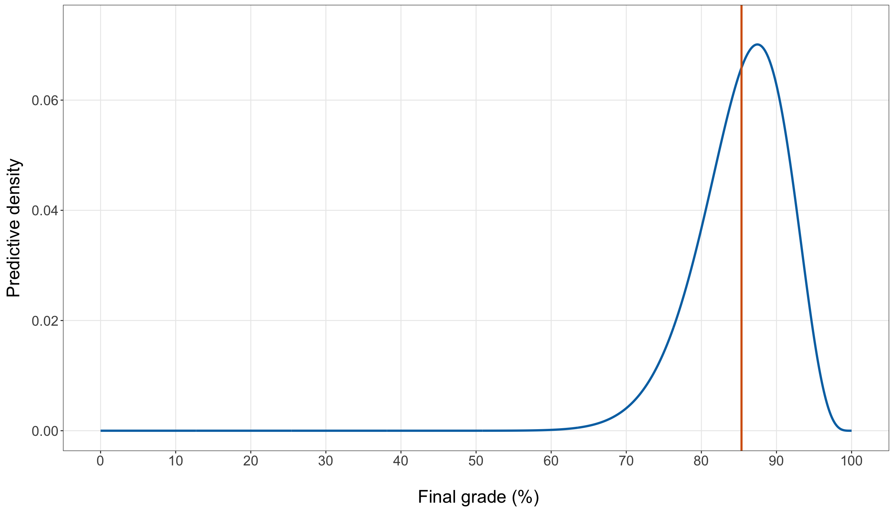
3–5 hours study-time category. The orange vertical line marks the predicted conditional mean grade.
beta_manual_grade_grid = np.linspace(0, 100, 1000)
beta_manual_beta_grid = (
beta_manual_grade_grid - beta_grade_scale_offset
) / beta_grade_scale_factor
beta_manual_predictive_distribution_data = pd.DataFrame({
"grade": beta_manual_grade_grid,
"density": stats.beta.pdf(
beta_manual_beta_grid,
beta_manual_alpha,
beta_manual_beta_shape,
) / beta_grade_scale_factor,
})
beta_manual_density_ymax = 1.05 * (
beta_manual_predictive_distribution_data["density"].max()
)
beta_manual_predictive_distribution_plot, beta_manual_predictive_distribution_axis = (
plt.subplots(figsize=(14, 8))
)
_ = beta_manual_predictive_distribution_axis.plot(
beta_manual_predictive_distribution_data["grade"],
beta_manual_predictive_distribution_data["density"],
linewidth=1.2,
color="#0072B2",
)
_ = beta_manual_predictive_distribution_axis.axvline(
beta_manual_grade,
color="#D55E00",
linewidth=1.1,
)
_ = beta_manual_predictive_distribution_axis.set_xlim(0, 100)
_ = beta_manual_predictive_distribution_axis.set_ylim(
0, beta_manual_density_ymax
)
_ = beta_manual_predictive_distribution_axis.set_xticks(
np.arange(0, 101, 10)
)
_ = beta_manual_predictive_distribution_axis.set_xlabel(
"\n Final grade (%)",
fontsize=20,
)
_ = beta_manual_predictive_distribution_axis.set_ylabel(
"Predictive density",
fontsize=20,
labelpad=12,
)
_ = beta_manual_predictive_distribution_axis.tick_params(
axis="both",
labelsize=15.5,
)
_ = beta_manual_predictive_distribution_axis.grid(
True,
which="major",
axis="both",
alpha=0.3,
)
_ = beta_manual_predictive_distribution_axis.grid(
False,
which="minor",
)
_ = beta_manual_predictive_distribution_plot.tight_layout()
plt.show()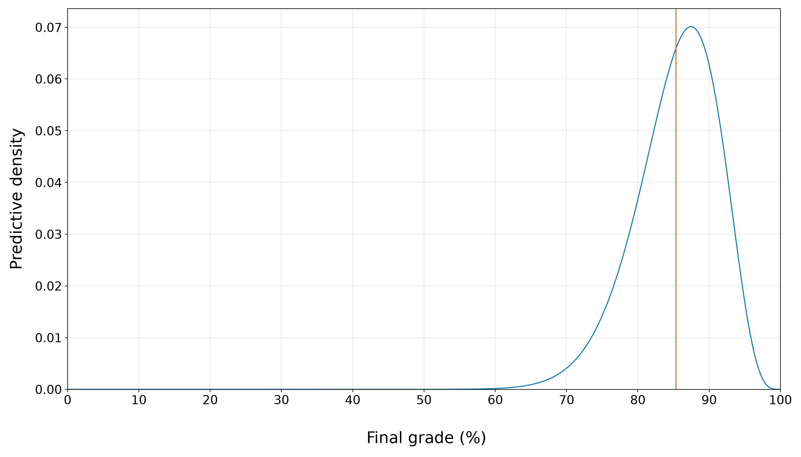
3–5 hours study-time category. The orange vertical line marks the predicted conditional mean grade.
Figure 5.19 (or Figure 5.20) shows the entire plug-in predictive distribution, not just its centre. The orange line marks the predicted conditional mean grade of 85.34%, while the curve height indicates how strongly the fitted model concentrates probability density around different grade values. A taller, narrower curve would correspond to a larger fitted precision, and a flatter, broader curve would correspond to a smaller one.
The point prediction \(\widehat{\mu}_{\mathrm{new}}\) tells us only the conditional centre. The fitted Beta distribution adds information about conditional dispersion, asymmetry, and tail behaviour. Two predictions can have similar conditional means but very different predictive distributions if their fitted precisions differ. This is precisely why the chapter froze both a mean submodel and a precision submodel, and why the later held-out evaluation includes NLPD, predictive-interval coverage and width, and PIT rather than relying only on MAE or RMSE.
As previously defined, this is a plug-in predictive distribution. The training-estimated coefficients are treated as fixed when the new response is predicted. Hence, the distribution represents conditional response variability under the frozen fitted model; it does not integrate over uncertainty in the estimated coefficients.
5.17.4 Prediction Intervals / Predictive Quantiles
A predictive quantile is obtained directly from the fitted conditional Beta CDF. For probability level \(p\),
\[ \widehat{q}_{p,\mathrm{new}} = F_{\operatorname{Beta}}^{-1} \left( p; \widehat{\alpha}_{\mathrm{new}}, \widehat{\beta}_{\mathrm{new}} \right). \tag{5.43}\]
The frozen evaluation plan uses an equal-tailed 90% plug-in predictive interval, so the modelling-scale endpoints are
\[ \left[ \widehat{q}_{0.05,\mathrm{new}}, \widehat{q}_{0.95,\mathrm{new}} \right]. \]
For the manual 3–5 hours example, we now compute those quantiles and display them on the predictive-density plot.
beta_manual_interval_beta <- qbeta(
c(0.05, 0.95),
beta_manual_alpha,
beta_manual_beta_shape
)
beta_manual_interval_grade <- beta_grade_scale_factor *
beta_manual_interval_beta + beta_grade_scale_offset
beta_manual_predictive_interval_data <- beta_manual_predictive_distribution_data |>
mutate(in_interval = dplyr::between(
grade,
beta_manual_interval_grade[1],
beta_manual_interval_grade[2]
))
beta_manual_predictive_interval_plot <- ggplot(
beta_manual_predictive_distribution_data,
aes(x = grade, y = density)
) +
geom_area(
data = beta_manual_predictive_interval_data |>
filter(in_interval),
fill = "#56B4E9",
alpha = 0.45
) +
geom_line(linewidth = 1.2, colour = "#0072B2") +
geom_vline(
xintercept = beta_manual_grade,
colour = "#D55E00",
linewidth = 1.1
) +
geom_vline(
xintercept = beta_manual_interval_grade,
colour = "#009E73",
linewidth = 1,
linetype = "dashed"
) +
coord_cartesian(
xlim = c(0, 100),
ylim = c(0, beta_manual_density_ymax)
) +
scale_x_continuous(breaks = seq(0, 100, by = 10)) +
theme_bw() +
theme(
axis.text = element_text(size = 15.5),
axis.title.x = element_text(size = 20),
axis.title.y = element_text(size = 20,
vjust = 0.5, margin = margin(r = 12)),
panel.grid.minor = element_blank()
) +
labs(
x = "\n Final grade (%)",
y = "Predictive density"
)
beta_manual_predictive_interval_plot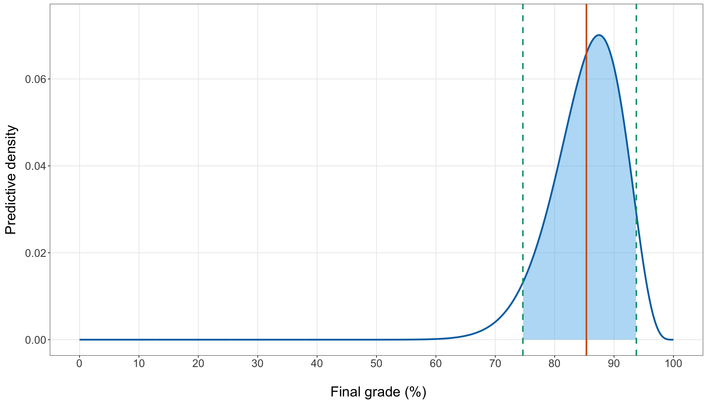
3–5 hours study-time category, with the equal-tailed 90% predictive interval shaded. The dashed green lines mark the 5th and 95th predictive quantiles, and the orange vertical line marks the predicted conditional mean grade.
beta_manual_interval_beta = stats.beta.ppf(
[0.05, 0.95],
beta_manual_alpha,
beta_manual_beta_shape,
)
beta_manual_interval_grade = (
beta_grade_scale_factor * beta_manual_interval_beta
+ beta_grade_scale_offset
)
beta_manual_predictive_interval_data = (
beta_manual_predictive_distribution_data.copy()
)
beta_manual_predictive_interval_data["in_interval"] = (
(beta_manual_predictive_interval_data["grade"]
>= beta_manual_interval_grade[0])
& (beta_manual_predictive_interval_data["grade"]
<= beta_manual_interval_grade[1])
)
beta_manual_predictive_interval_plot, beta_manual_predictive_interval_axis = (
plt.subplots(figsize=(14, 8))
)
_ = beta_manual_predictive_interval_axis.fill_between(
beta_manual_predictive_interval_data["grade"],
0,
beta_manual_predictive_interval_data["density"],
where=beta_manual_predictive_interval_data["in_interval"],
interpolate=True,
alpha=0.45,
color="#56B4E9",
)
_ = beta_manual_predictive_interval_axis.plot(
beta_manual_predictive_distribution_data["grade"],
beta_manual_predictive_distribution_data["density"],
linewidth=1.2,
color="#0072B2",
)
_ = beta_manual_predictive_interval_axis.axvline(
beta_manual_grade,
color="#D55E00",
linewidth=1.1,
)
for quantile in beta_manual_interval_grade:
_ = beta_manual_predictive_interval_axis.axvline(
quantile,
color="#009E73",
linewidth=1,
linestyle="dashed",
)
_ = beta_manual_predictive_interval_axis.set_xlim(0, 100)
_ = beta_manual_predictive_interval_axis.set_ylim(
0, beta_manual_density_ymax
)
_ = beta_manual_predictive_interval_axis.set_xticks(
np.arange(0, 101, 10)
)
_ = beta_manual_predictive_interval_axis.set_xlabel(
"\n Final grade (%)",
fontsize=20,
)
_ = beta_manual_predictive_interval_axis.set_ylabel(
"Predictive density",
fontsize=20,
labelpad=12,
)
_ = beta_manual_predictive_interval_axis.tick_params(
axis="both",
labelsize=15.5,
)
_ = beta_manual_predictive_interval_axis.grid(
True,
which="major",
axis="both",
alpha=0.3,
)
_ = beta_manual_predictive_interval_axis.grid(
False,
which="minor",
)
_ = beta_manual_predictive_interval_plot.tight_layout()
plt.show()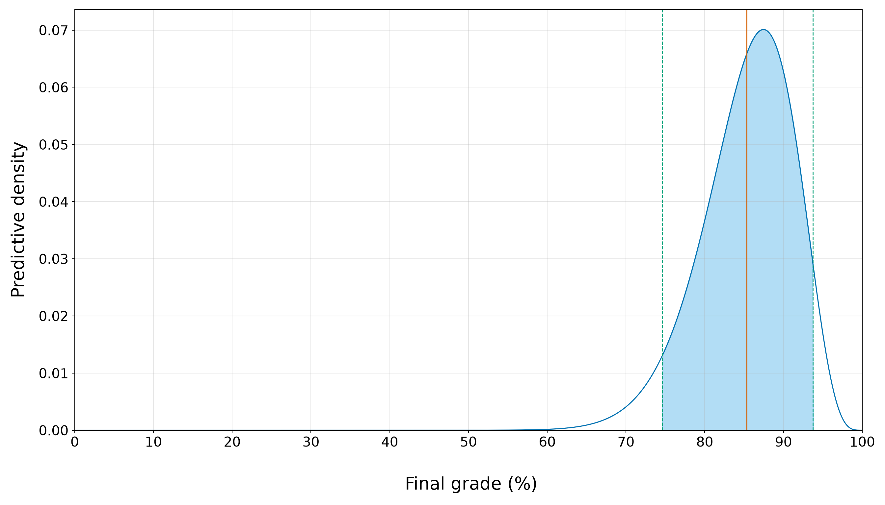
3–5 hours study-time category, with the equal-tailed 90% predictive interval shaded. The dashed green lines mark the 5th and 95th predictive quantiles, and the orange vertical line marks the predicted conditional mean grade.
The resulting 90% plug-in predictive interval is 74.65% to 93.75% on the original grade scale. In Figure 5.21 (or Figure 5.22), the dashed green lines mark the 5th and 95th predictive quantiles, and the shaded region between them contains 90% of the fitted predictive probability. The orange line remains the predicted conditional mean, making it easy to distinguish the distribution’s centre from its predictive spread. Under the fitted plug-in Beta distribution, 90% of the predictive probability lies between those two conditional quantiles. This is the nominal interval probability under the fitted distribution; empirical coverage will be evaluated later using the frozen testing set. Note that the Beta distribution also respects the bounded \((0,1)\) support of the modelling-scale response, so its predictive quantiles cannot extend outside that interval. We then apply the same fixed inverse boundary transformation to report the quantiles in grade-percentage units.
A predictive interval should not be confused with a CI for the conditional mean as indicated in Table 5.58.
| Interval | Target | Main source of uncertainty represented here |
|---|---|---|
| Predictive interval | A new realized response \(Y_{\mathrm{new}}\) | Conditional response variability under the fitted Beta distribution |
| CI for \(\mu_{\mathrm{new}}\) | The conditional mean \(\mu_{\mathrm{new}}\) | Estimation uncertainty in the fitted mean function |
Because the interval used here is plug-in, it treats the fitted coefficients as fixed and therefore does not add parameter-estimation uncertainty to the predictive distribution. The CIs used later for inferential contrasts address a different target and should not be substituted for predictive intervals.
Interval width is also meaningful only together with coverage. A very broad interval may cover many observations simply because it is uninformative, whereas a narrow interval is useful only if its empirical coverage remains compatible with the nominal level. The later predictive evaluation will therefore report both empirical 90% coverage and average 90% interval width, exactly as frozen in Section 5.15.
5.17.5 Held-out Predictions
Now, we generate predictions for the canonical testing observations. No testing response is used to estimate or modify the model. For each study-time category \(g\), let \(\widehat{\mu}_g\) and \(\widehat{\phi}_g\) denote the conditional mean and precision obtained from the frozen training fit. Because both frozen submodels contain only Study Time, every testing student in category \(g\) receives the same \(\widehat{\mu}_g\), \(\widehat{\phi}_g\), Beta shape parameters, and predictive quantiles. Hence, we can compute the four category-specific predictive distributions once and then match them to the testing regressors.
beta_prediction_reference <- tibble(
`Study Time` = factor(study_time_levels, levels = study_time_levels),
mean_eta = beta_mean_parameters[1] + c(0, beta_mean_parameters[2:4]),
precision_eta = beta_precision_parameters[1] +
c(0, beta_precision_parameters[2:4])) |>
mutate(predicted_mean_beta = plogis(mean_eta),
predicted_precision = exp(precision_eta),
alpha = predicted_mean_beta * predicted_precision,
beta_shape = (1 - predicted_mean_beta) * predicted_precision,
lower_90_beta = qbeta(0.05, alpha, beta_shape),
upper_90_beta = qbeta(0.95, alpha, beta_shape),
predicted_mean_grade = beta_grade_scale_factor * predicted_mean_beta +
beta_grade_scale_offset,
lower_90_grade = beta_grade_scale_factor * lower_90_beta +
beta_grade_scale_offset,
upper_90_grade = beta_grade_scale_factor * upper_90_beta +
beta_grade_scale_offset)
beta_testing_predictions <- testing_data |>
transmute(`Study Time`) |>
left_join(beta_prediction_reference, by = "Study Time")
stopifnot(nrow(beta_testing_predictions) == nrow(testing_data),
all(is.finite(beta_testing_predictions$predicted_mean_grade)))
beta_testing_predictions |>
transmute(`Study Time`,
`Predicted conditional mean (%)` = predicted_mean_grade,
`Lower 90% predictive bound (%)` = lower_90_grade,
`Upper 90% predictive bound (%)` = upper_90_grade) |>
slice_head(n = 8) |>
kable(digits = 2, align = c("c", "c", "c", "c"))| Study Time | Predicted conditional mean (%) | Lower 90% predictive bound (%) | Upper 90% predictive bound (%) |
|---|---|---|---|
| 5+ hours | 90.70 | 79.52 | 98.03 |
| 5+ hours | 90.70 | 79.52 | 98.03 |
| <1 hour | 65.78 | 57.37 | 73.80 |
| 3–5 hours | 85.34 | 74.65 | 93.75 |
| 1–3 hours | 75.24 | 66.63 | 83.07 |
| <1 hour | 65.78 | 57.37 | 73.80 |
| 3–5 hours | 85.34 | 74.65 | 93.75 |
| 1–3 hours | 75.24 | 66.63 | 83.07 |
beta_prediction_reference = pd.DataFrame({
"Study Time": pd.Categorical(
study_time_levels, categories=study_time_levels, ordered=False),
"mean_eta": beta_mean_parameters[0]
+ np.r_[0, beta_mean_parameters[1:4]],
"precision_eta": beta_precision_parameters[0]
+ np.r_[0, beta_precision_parameters[1:4]],
})
beta_prediction_reference["predicted_mean_beta"] = expit(
beta_prediction_reference["mean_eta"])
beta_prediction_reference["predicted_precision"] = np.exp(
beta_prediction_reference["precision_eta"])
beta_prediction_reference["alpha"] = (
beta_prediction_reference["predicted_mean_beta"]
* beta_prediction_reference["predicted_precision"])
beta_prediction_reference["beta_shape"] = (
(1 - beta_prediction_reference["predicted_mean_beta"])
* beta_prediction_reference["predicted_precision"])
beta_prediction_reference["lower_90_beta"] = stats.beta.ppf(
0.05, beta_prediction_reference["alpha"],
beta_prediction_reference["beta_shape"])
beta_prediction_reference["upper_90_beta"] = stats.beta.ppf(
0.95, beta_prediction_reference["alpha"],
beta_prediction_reference["beta_shape"])
for target, source in [
("predicted_mean_grade", "predicted_mean_beta"),
("lower_90_grade", "lower_90_beta"),
("upper_90_grade", "upper_90_beta"),
]:
beta_prediction_reference[target] = (
beta_grade_scale_factor * beta_prediction_reference[source]
+ beta_grade_scale_offset)
beta_testing_predictions = (
testing_data[["Study Time"]].reset_index(drop=True)
.merge(beta_prediction_reference, on="Study Time", how="left", sort=False))
assert len(beta_testing_predictions) == len(testing_data)
assert np.isfinite(beta_testing_predictions["predicted_mean_grade"]).all()
beta_testing_predictions_display = beta_testing_predictions[[
"Study Time", "predicted_mean_grade",
"lower_90_grade", "upper_90_grade"]].copy()
beta_testing_predictions_display.columns = [
"Study Time", "Predicted conditional mean (%)",
"Lower 90% predictive bound (%)", "Upper 90% predictive bound (%)"]
beta_testing_predictions_html = scrollable_table_html(
beta_testing_predictions_display.head(8),
float_format=lambda value: f"{value:.2f}")| Study Time | Predicted conditional mean (%) | Lower 90% predictive bound (%) | Upper 90% predictive bound (%) |
|---|---|---|---|
| 5+ hours | 90.70 | 79.52 | 98.03 |
| 5+ hours | 90.70 | 79.52 | 98.03 |
| <1 hour | 65.78 | 57.37 | 73.80 |
| 3–5 hours | 85.34 | 74.65 | 93.75 |
| 1–3 hours | 75.24 | 66.63 | 83.07 |
| <1 hour | 65.78 | 57.37 | 73.80 |
| 3–5 hours | 85.34 | 74.65 | 93.75 |
| 1–3 hours | 75.24 | 66.63 | 83.07 |
Table 5.59 contains only quantities determined by the training-fitted frozen model and the testing Study Time values. The testing grade responses remain uninspected at this stage. Therefore, we do not yet compute ME, MAE, RMSE, NLPD, empirical interval coverage, average interval width, or PIT summaries. The object beta_testing_predictions stores only the frozen held-out predictive quantities needed for the pre-specified evaluation that follows. Because the model contains only Study Time, repeated predicted means and interval endpoints within a category are expected rather than evidence of a coding error.
5.18 Results and Statistical Interpretation
The model-development stage is complete, the final specification has been frozen, and the held-out predictive quantities have already been generated. We can now use the protected testing data for the two roles fixed in advance: final inference from a testing-set refit of the frozen specification and held-out predictive evaluation of the frozen training-fitted model.
5.18.1 Returning to the Two Guiding Inquiries
Recall the two guiding inquiries introduced in Section 5.3.2. The inferential inquiry is:
How does the conditional mean final-grade proportion differ across weekly study time categories?
To answer this question, we refit the already frozen Beta regression specification on the testing data, exactly as established in Section 5.6.4. The mean submodel remains Study Time, the precision submodel remains Study Time, the logit and log links remain fixed, and <1 hour remains the treatment-coding reference category. This testing-set refit is used for inference only; its results cannot be used to change the model.
On the other hand, the predictive inquiry is:
How accurately can the developed Beta regression model predict held-out final-grade proportions, and how well does its fitted conditional Beta distribution represent predictive uncertainty?
This inquiry keeps the variable-precision model already fitted on the training data fixed. The testing responses are used only after the predictions have been generated, so they evaluate rather than estimate the predictive model. The final study-time model is compared with the pre-specified intercept-only Beta baseline, also fitted using the training data only.
Table 5.61 summarizes the distinction. Also, note that neither branch reopens model development. In particular, no testing result may be used to add or remove regressors, revise the mean or precision structure, change the links, alter the boundary transformation, or redefine the pre-specified predictive assessment.
| Inquiry | Final model used | Role of testing responses | Final evidence |
|---|---|---|---|
| Inference | Frozen Study Time mean + Study Time precision specification refitted on the testing data |
Used to estimate the fixed specification and obtain protected inferential quantities | Joint mean-submodel Study Time test; coefficient-level inference; original-scale fitted means and percentage-point contrasts |
| Prediction | Frozen variable-precision study-time model fitted on the training data, compared with the training-fitted intercept-only Beta baseline | Used only after predictions have been generated to evaluate held-out performance | ME, MAE, RMSE; mean NLPD; 90% predictive-interval coverage and width; PIT histogram; model-versus-baseline comparison |
5.18.2 Final Inferential Analysis
The inferential branch now uses the testing observations to estimate the fixed model specification selected from the training analysis. This is deliberately different from the predictive branch later in the section: the testing-set fit constructed here will not be used to generate the held-out predictions or predictive scores.
Fixed-specification Testing-set Refit
We refit exactly the frozen specification,
\[ \text{mean}\sim\texttt{Study Time}, \qquad \text{precision}\sim\texttt{Study Time}, \]
using the testing observations. No formula, coding, link, or response transformation is reconsidered.
beta_testing_refit <- betareg(
grade_beta ~ `Study Time` | `Study Time`, data = testing_data,
link = "logit", link.phi = "log", type = "ML", dist = "beta",
control = betareg.control(method = "BFGS")
)
beta_testing_refit_parameters <- coef(beta_testing_refit)
beta_testing_refit_standard_errors <- sqrt(diag(vcov(beta_testing_refit)))
beta_testing_refit_converged <- isTRUE(beta_testing_refit$converged)beta_testing_refit = BetaModel.from_formula(
'grade_beta ~ C(Q("Study Time"), Treatment(reference="<1 hour"))',
data=testing_data,
exog_precision_formula='C(Q("Study Time"), Treatment(reference="<1 hour"))',
link=sm.families.links.Logit(), link_precision=sm.families.links.Log(),
).fit(method="bfgs", maxiter=1000, disp=False)
beta_testing_refit_parameters = np.asarray(beta_testing_refit.params)
beta_testing_refit_standard_errors = np.asarray(beta_testing_refit.bse)
beta_testing_refit_converged = bool(beta_testing_refit.mle_retvals["converged"])Before using this refit for the pre-specified inferential analysis, we repeat the numerical-stability checks from Section 5.14.1: optimizer convergence, finite coefficient estimates and model-based SEs, fitted conditional means strictly inside \((0,1)\), and positive fitted precisions.
beta_testing_refit_fitted_mean <- predict(beta_testing_refit, type = "response")
beta_testing_refit_fitted_precision <- predict(beta_testing_refit, type = "precision")
beta_testing_refit_fitted_grade <- beta_grade_scale_factor *
beta_testing_refit_fitted_mean + beta_grade_scale_offset
stopifnot(beta_testing_refit_converged,
all(is.finite(beta_testing_refit_parameters)),
all(is.finite(beta_testing_refit_standard_errors)),
all(beta_testing_refit_fitted_mean > 0 & beta_testing_refit_fitted_mean < 1),
all(beta_testing_refit_fitted_precision > 0))
beta_testing_refit_stability <- tibble(
Check = c("Optimizer converged", "All coefficient estimates finite",
"All model-based SEs finite", "Minimum fitted conditional mean (%)",
"Maximum fitted conditional mean (%)", "Minimum fitted precision",
"Maximum fitted precision"),
Result = c(rep("Yes", 3),
formatC(min(beta_testing_refit_fitted_grade), format = "f", digits = 2),
formatC(max(beta_testing_refit_fitted_grade), format = "f", digits = 2),
formatC(min(beta_testing_refit_fitted_precision), format = "f", digits = 3),
formatC(max(beta_testing_refit_fitted_precision), format = "f", digits = 3)))
beta_testing_refit_stability |> kable(align = c("c", "c"))| Check | Result |
|---|---|
| Optimizer converged | Yes |
| All coefficient estimates finite | Yes |
| All model-based SEs finite | Yes |
| Minimum fitted conditional mean (%) | 65.12 |
| Maximum fitted conditional mean (%) | 89.91 |
| Minimum fitted precision | 17.157 |
| Maximum fitted precision | 86.172 |
beta_testing_refit_fitted_mean = beta_testing_refit.model.predict(
beta_testing_refit.params, which="mean")
beta_testing_refit_fitted_precision = beta_testing_refit.model.predict(
beta_testing_refit.params, which="precision")
beta_testing_refit_fitted_grade = (
beta_grade_scale_factor * beta_testing_refit_fitted_mean
+ beta_grade_scale_offset)
assert beta_testing_refit_converged
assert np.isfinite(beta_testing_refit_parameters).all()
assert np.isfinite(beta_testing_refit_standard_errors).all()
assert ((beta_testing_refit_fitted_mean > 0) &
(beta_testing_refit_fitted_mean < 1)).all()
assert (beta_testing_refit_fitted_precision > 0).all()
beta_testing_refit_stability = pd.DataFrame({
"Check": ["Optimizer converged", "All coefficient estimates finite",
"All model-based SEs finite", "Minimum fitted conditional mean (%)",
"Maximum fitted conditional mean (%)", "Minimum fitted precision",
"Maximum fitted precision"],
"Result": ["Yes", "Yes", "Yes",
f"{beta_testing_refit_fitted_grade.min():.2f}",
f"{beta_testing_refit_fitted_grade.max():.2f}",
f"{beta_testing_refit_fitted_precision.min():.3f}",
f"{beta_testing_refit_fitted_precision.max():.3f}"]})
beta_testing_refit_stability_html = scrollable_table_html(beta_testing_refit_stability)| Check | Result |
|---|---|
| Optimizer converged | Yes |
| All coefficient estimates finite | Yes |
| All model-based SEs finite | Yes |
| Minimum fitted conditional mean (%) | 65.12 |
| Maximum fitted conditional mean (%) | 89.91 |
| Minimum fitted precision | 17.157 |
| Maximum fitted precision | 86.172 |
The testing-set refit passes the numerical-stability checks in both implementations. Its fitted conditional mean grades range from 65.12% to 89.91%, while its fitted precisions range from 17.157 to 86.172 and remain positive throughout. These checks establish that the fixed-specification testing refit is numerically usable for the pre-specified inferential analysis. Note that they are not a new model-selection or model-development stage, so the testing results cannot revise the frozen mean or precision submodels, links, coding, or response transformation.
Joint Study Time Test
The first inferential question is joint rather than coefficient-by-coefficient. We test whether Study Time contributes to the conditional mean after preserving the study-time-dependent precision structure that was frozen during model development. Hence, on the testing data, the competing models are:
-
Reduced model: intercept-only mean and
Study Timeprecision; -
Full model:
Study Timemean andStudy Timeprecision.
Using the same treatment-coded indicators defined in Equation 5.24 and Equation 5.25, the reduced model is
\[ \begin{aligned} \operatorname{logit}(\mu_i) &= \beta_0,\\ \log(\phi_i) &= \gamma_0 + \gamma_1x_{i,1} + \gamma_2x_{i,2} + \gamma_3x_{i,3}, \end{aligned} \tag{5.44}\]
whereas the full model is
\[ \begin{aligned} \operatorname{logit}(\mu_i) &= \beta_0 + \beta_1x_{i,1} + \beta_2x_{i,2} + \beta_3x_{i,3},\\ \log(\phi_i) &= \gamma_0 + \gamma_1x_{i,1} + \gamma_2x_{i,2} + \gamma_3x_{i,3}. \end{aligned} \tag{5.45}\]
Thus, the two models have the same precision-submodel structure and differ only through the three non-reference Study Time coefficients in the mean submodel. The reduced model is obtained from the full model by imposing
\[ \beta_1=\beta_2=\beta_3=0. \]
Importantly, preserving the same precision structure does not mean fixing the precision coefficients at identical numerical estimates across the two fits. The \(\gamma\) coefficients are nuisance parameters for this test and are estimated by maximum likelihood under each competing model.
Then, the hypotheses are
\[ \begin{gathered} H_0\text{: }\beta_1=\beta_2=\beta_3=0,\\ \text{versus}\\ H_1\text{: }\text{at least one of }\beta_1,\beta_2,\beta_3\neq0. \end{gathered} \]
Under \(H_0\), the four study-time categories share the same conditional mean, although their fitted precisions are still allowed to differ. The full model adds three mean coefficients, so the likelihood-ratio statistic is compared with an asymptotic \(\chi^2_3\) reference distribution. Now, let us proceed to the test.
beta_testing_reduced_model <- betareg(
grade_beta ~ 1 | `Study Time`, data = testing_data,
link = "logit", link.phi = "log", type = "ML", dist = "beta",
control = betareg.control(method = "BFGS")
)
beta_testing_lr_statistic <- 2 * (
as.numeric(logLik(beta_testing_refit)) -
as.numeric(logLik(beta_testing_reduced_model))
)
stopifnot(beta_testing_lr_statistic > -1e-6)
beta_testing_lr_statistic <- max(0, beta_testing_lr_statistic)
beta_testing_lr_df <- 3L
beta_testing_lr_p_value <- pchisq(
beta_testing_lr_statistic, df = beta_testing_lr_df, lower.tail = FALSE)
beta_format_p_value <- function(value) {
ifelse(value < 0.001, "<0.001",
formatC(value, format = "f", digits = 3))
}
beta_testing_lrt <- tibble(
`LR statistic` = beta_testing_lr_statistic,
df = beta_testing_lr_df,
`p-value` = beta_format_p_value(beta_testing_lr_p_value))
beta_testing_lrt |>
kable(digits = 3, align = c("c", "c", "c"))| LR statistic | df | p-value |
|---|---|---|
| 297.268 | 3 | <0.001 |
beta_testing_reduced_model = BetaModel.from_formula(
'grade_beta ~ 1',
data=testing_data,
exog_precision_formula=
'C(Q("Study Time"), Treatment(reference="<1 hour"))',
link=sm.families.links.Logit(), link_precision=sm.families.links.Log(),
).fit(method="bfgs", maxiter=1000, disp=False)
beta_testing_lr_statistic = 2 * (
beta_testing_refit.llf - beta_testing_reduced_model.llf)
assert beta_testing_lr_statistic > -1e-6
beta_testing_lr_statistic = max(0.0, beta_testing_lr_statistic)
beta_testing_lr_df = 3
beta_testing_lr_p_value = stats.chi2.sf(
beta_testing_lr_statistic, beta_testing_lr_df)
def beta_format_p_value(value):
return "<0.001" if value < 0.001 else f"{value:.3f}"
beta_testing_lrt = pd.DataFrame({
"LR statistic": [beta_testing_lr_statistic],
"df": [beta_testing_lr_df],
"p-value": [beta_format_p_value(beta_testing_lr_p_value)],
})
beta_testing_lrt_html = scrollable_table_html(
beta_testing_lrt, float_format=lambda value: f"{value:.3f}")| LR statistic | df | p-value |
|---|---|---|
| 297.268 | 3 | <0.001 |
For the canonical testing sample, the likelihood-ratio statistic is 297.268 with 3 degrees of freedom, giving a \(p\)-value < 0.001. At \(\alpha=0.05\), this provides evidence against the null hypothesis that the four study-time categories share the same conditional mean. This conclusion concerns the mean submodel only. Because Study Time remains in the precision submodel under both hypotheses, the test does not ask whether the complete conditional Beta distributions are identical across categories. It asks whether allowing the conditional mean itself to vary by Study Time improves the testing-data likelihood, conditional on the already frozen precision structure.
Therefore, the joint test addresses the overall contribution of Study Time to the conditional mean, but it does not identify which category contrasts are responsible for the evidence or how large those differences are on the original grade scale. We will address those questions next through coefficient-level inference and, more importantly for substantive interpretation, testing-set fitted conditional mean grades and percentage-point contrasts. As throughout the chapter, these differences are interpreted as model-based associations, not causal effects of changing a student’s study time.
Coefficient-level Inference
The previous likelihood-ratio test answers the joint question of whether the three non-reference Study Time coefficients in the mean submodel are all zero. We now turn to the corresponding coefficient-level questions. Note that the inferential Table 5.66 should be read through the hypothesis-test and confidence-interval machinery that produces it, rather than as a collection of isolated software outputs. The required model-based covariance matrix comes from the maximum-likelihood framework developed in Section 5.10.
For each non-reference study-time coefficient \(\beta_j\), where \(j\in\{1,2,3\}\), we consider the two-sided hypotheses
\[ H_{0,j}\text{: }\beta_j=0 \qquad\text{versus}\qquad H_{1,j}\text{: }\beta_j\neq 0. \]
Recall that \(\beta_j\) is a logit-mean contrast with the <1 hour reference category. Therefore, \(H_{0,j}\) states that category \(j\) has the same conditional mean grade proportion as the reference category on the model scale; whereas \(H_{1,j}\) states that the two conditional means differ.
Now, let
\[ \widehat{\operatorname{SE}} \left( \widehat{\beta}_j \right) \]
denote the model-based SE obtained from the relevant diagonal element of the estimated joint covariance matrix of the mean and precision-submodel coefficient estimators, as discussed in Section 5.10. The Wald statistic is
\[ Z_j = \frac{ \widehat{\beta}_j-0 }{ \widehat{\operatorname{SE}} \left( \widehat{\beta}_j \right) }. \]
Under \(H_{0,j}\), the usual maximum-likelihood regularity conditions, and an adequately specified Beta regression model,
\[ Z_j \;\dot{\sim}\; \mathcal{N}(0,1). \]
Because the alternative is two-sided, the corresponding large-sample \(p\)-value is
\[ p_j = 2 \Pr \left( Z\geq \left| z_{j,\mathrm{obs}} \right| \right), \qquad Z\sim\mathcal{N}(0,1). \]
A coefficient-wise 95% Wald CI is
\[ \widehat{\beta}_j \pm z_{0.975} \widehat{\operatorname{SE}} \left( \widehat{\beta}_j \right), \]
where \(z_{0.975}\approx1.96\). If this interval excludes \(0\), the corresponding two-sided Wald test rejects \(H_{0,j}\) at the 5% level. Exponentiating the endpoints gives a 95% CI for the multiplicative contrast in
\[ \frac{\mu}{1-\mu}, \]
so that
\[ \left[ \exp(L_j), \exp(U_j) \right] \]
is the exponentiated interval when \([L_j,U_j]\) is the coefficient-scale CI.
Heads-up on what these Wald results mean!
These are large-sample, model-based inferential results. The precision coefficients are estimated jointly with the mean coefficients and therefore contribute to the fitted likelihood and covariance structure; they are not treated as known constants. Table 5.66 below reports the mean-submodel coefficients because those coefficients answer the chapter’s inferential question.
Also, the three coefficient-wise \(p\)-values and 95% CIs are individual Wald summaries, not simultaneous familywise intervals. The pre-specified joint likelihood-ratio test, in the previous subsection, remains the primary overall test of whether Study Time contributes to the conditional mean.
We now compute the coefficient-level quantities from the same fixed testing-set refit.
beta_testing_mean_parameters <- beta_testing_refit_parameters[1:4]
beta_testing_mean_standard_errors <- beta_testing_refit_standard_errors[1:4]
beta_testing_mean_z <- beta_testing_mean_parameters / beta_testing_mean_standard_errors
beta_testing_mean_p <- 2 * pnorm(-abs(beta_testing_mean_z))
beta_testing_wald_critical <- qnorm(0.975)
beta_testing_mean_ci_lower <- beta_testing_mean_parameters -
beta_testing_wald_critical * beta_testing_mean_standard_errors
beta_testing_mean_ci_upper <- beta_testing_mean_parameters +
beta_testing_wald_critical * beta_testing_mean_standard_errors
beta_testing_coefficient_inference <- tibble(
Term = c("Intercept (<1 hour)", "1–3 hours vs <1 hour",
"3–5 hours vs <1 hour", "5+ hours vs <1 hour"),
Estimate = unname(beta_testing_mean_parameters),
`Model-based SE` = unname(beta_testing_mean_standard_errors),
`Wald z` = unname(beta_testing_mean_z),
`p-value` = unname(beta_testing_mean_p),
`95% CI lower` = unname(beta_testing_mean_ci_lower),
`95% CI upper` = unname(beta_testing_mean_ci_upper),
`Exponentiated coefficient` = exp(unname(beta_testing_mean_parameters)))
beta_testing_coefficient_inference_display <- beta_testing_coefficient_inference |>
mutate(`p-value` = vapply(`p-value`, beta_format_p_value, character(1)))
beta_testing_coefficient_inference_display |>
kable(digits = 3, align = rep("c", 8))| Term | Estimate | Model-based SE | Wald z | p-value | 95% CI lower | 95% CI upper | Exponentiated coefficient |
|---|---|---|---|---|---|---|---|
| Intercept (<1 hour) | 0.623 | 0.025 | 24.818 | <0.001 | 0.574 | 0.673 | 1.865 |
| 1–3 hours vs <1 hour | 0.472 | 0.038 | 12.368 | <0.001 | 0.397 | 0.547 | 1.603 |
| 3–5 hours vs <1 hour | 1.126 | 0.056 | 20.000 | <0.001 | 1.016 | 1.236 | 3.083 |
| 5+ hours vs <1 hour | 1.560 | 0.096 | 16.209 | <0.001 | 1.371 | 1.748 | 4.757 |
beta_testing_mean_parameters = beta_testing_refit_parameters[:4]
beta_testing_mean_standard_errors = beta_testing_refit_standard_errors[:4]
beta_testing_mean_z = beta_testing_mean_parameters / beta_testing_mean_standard_errors
beta_testing_mean_p = 2 * stats.norm.sf(np.abs(beta_testing_mean_z))
beta_testing_wald_critical = stats.norm.ppf(0.975)
beta_testing_mean_ci_lower = beta_testing_mean_parameters - (
beta_testing_wald_critical * beta_testing_mean_standard_errors)
beta_testing_mean_ci_upper = beta_testing_mean_parameters + (
beta_testing_wald_critical * beta_testing_mean_standard_errors)
beta_testing_coefficient_inference = pd.DataFrame({
"Term": ["Intercept (<1 hour)", "1–3 hours vs <1 hour",
"3–5 hours vs <1 hour", "5+ hours vs <1 hour"],
"Estimate": beta_testing_mean_parameters,
"Model-based SE": beta_testing_mean_standard_errors,
"Wald z": beta_testing_mean_z,
"p-value": beta_testing_mean_p,
"95% CI lower": beta_testing_mean_ci_lower,
"95% CI upper": beta_testing_mean_ci_upper,
"Exponentiated coefficient": np.exp(beta_testing_mean_parameters)})
beta_testing_coefficient_inference_display = beta_testing_coefficient_inference.copy()
beta_testing_coefficient_inference_display["p-value"] = [
beta_format_p_value(value) for value in beta_testing_mean_p]
beta_testing_coefficient_inference_html = scrollable_table_html(
beta_testing_coefficient_inference_display,
float_format=lambda value: f"{value:.3f}")| Term | Estimate | Model-based SE | Wald z | p-value | 95% CI lower | 95% CI upper | Exponentiated coefficient |
|---|---|---|---|---|---|---|---|
| Intercept (<1 hour) | 0.623 | 0.025 | 24.818 | <0.001 | 0.574 | 0.673 | 1.865 |
| 1–3 hours vs <1 hour | 0.472 | 0.038 | 12.368 | <0.001 | 0.397 | 0.547 | 1.603 |
| 3–5 hours vs <1 hour | 1.126 | 0.056 | 20.000 | <0.001 | 1.016 | 1.236 | 3.083 |
| 5+ hours vs <1 hour | 1.560 | 0.096 | 16.209 | <0.001 | 1.371 | 1.748 | 4.757 |
The intercept is included for completeness. It estimates the logit of the conditional mean for the <1 hour reference category. Its Wald test corresponds to \(H_0\text{: }\beta_0=0\), which would imply a transformed conditional mean of \(0.5\) for that reference category; this is not the main substantive inferential question.
The remaining rows answer the three pre-specified category-versus-reference questions. For 1–3 hours,
\[ \widehat{\beta}_1 = \text{0.472}, \qquad \operatorname{SE}(\widehat{\beta}_1) = \text{0.038}, \]
giving
\[ z = \text{12.368} \]
and a \(p\)-value < 0.001. The 95% Wald-based CI is
\[ \left[ \text{0.397}, \text{0.547} \right]. \]
Thus, relative to <1 hour, the fitted logit of the conditional mean is higher for the 1–3 hours category. Exponentiating gives a fitted conditional-mean-odds multiplier of 1.603, with a 95% Wald-based CI of [1.488, 1.728].
For 3–5 hours,
\[ \widehat{\beta}_2 = \text{1.126}, \qquad \operatorname{SE}(\widehat{\beta}_2) = \text{0.056}, \]
with
\[ z=\text{20.000}, \]
a \(p\)-value < 0.001, and a 95% Wald-based CI of
\[ \left[ \text{1.016}, \text{1.236} \right]. \]
The corresponding fitted conditional-mean-odds multiplier is 3.083, with a 95% Wald-based CI of [2.761, 3.443].
For 5+ hours,
\[ \widehat{\beta}_3 = \text{1.560}, \qquad \operatorname{SE}(\widehat{\beta}_3) = \text{0.096}, \]
with
\[ z=\text{16.209}, \]
a \(p\)-value < 0.001, and a 95% Wald-based CI of
\[ \left[ \text{1.371}, \text{1.748} \right]. \]
The corresponding fitted conditional-mean-odds multiplier is 4.757, with a 95% Wald-based CI of [3.939, 5.744].
For all three non-reference categories, the coefficient-scale 95% Wald-based CIs exclude \(0\) and the corresponding exponentiated intervals exclude \(1\). Together with the previous joint likelihood-ratio result, the coefficient-level analysis shows that each non-reference study-time category differs from <1 hour in the fitted conditional mean under the frozen testing-set model.
As emphasized in Section 5.16.2, these exponentiated quantities are not event odds ratios. They describe multiplicative contrasts in
\[ \frac{\mu}{1-\mu}, \]
where \(\mu\) is the conditional mean of a continuous grade proportion. They are mathematically useful, but they are not the most intuitive scale for the substantive conclusion. Hence, we move next to the original grade-percentage scale, where the testing-set fitted conditional means and percentage-point contrasts can be interpreted directly.
Finally, none of these coefficient-level results should be interpreted causally. The fitted differences describe model-based associations across study-time categories under the frozen Beta regression specification; they do not establish that changing an individual student’s study time would cause the corresponding change in final grade.
Original-scale Inferential Interpretation
We now translate the testing-set refit into fitted conditional mean grades and percentage-point contrasts. This step uses the same inverse boundary transformation derived in Section 5.16.4. Thus, for each study-time category \(g\), let \(\widetilde{\mathbf{x}}_g\) denote its intercept-augmented mean-submodel design vector. Then
\[ \widehat{\eta}_g = \widetilde{\mathbf{x}}_g^\mathsf{T} \widehat{\boldsymbol{\beta}}, \qquad \widehat{\mu}_g = \operatorname{logit}^{-1}(\widehat{\eta}_g), \]
and the fitted conditional mean grade is
\[ \widehat{g}_g = \beta_{\mathrm{scale}}\widehat{\mu}_g + \beta_{\mathrm{offset}}, \]
where beta_grade_scale_factor and beta_grade_scale_offset are the fixed constants already derived from the full-sample boundary transformation.
We construct 95% model-based CIs for each fitted mean by first forming a Wald interval for \(\eta_g\), then applying the inverse logit and the fixed affine return to the grade scale. The percentage-point contrasts require a different step because each contrast is a nonlinear function of several estimated mean-submodel coefficients. For those contrasts, we use the delta method with the joint covariance matrix of the four mean-submodel coefficients.
Heads-up on what the delta method is!
The delta method is a large-sample approximation for transferring uncertainty from an estimated parameter vector to a smooth function of that vector. Its key idea is a first-order Taylor approximation: near the estimated coefficients, a smooth nonlinear function behaves approximately like a linear function (Oehlert 1992; Vaart 1998).
Let
\[ \widehat{\boldsymbol{\beta}} = \begin{pmatrix} \widehat{\beta}_0\\ \widehat{\beta}_1\\ \widehat{\beta}_2\\ \widehat{\beta}_3 \end{pmatrix} \]
denote the four testing-set mean-submodel coefficient estimates, and let
\[ \widehat{\boldsymbol{\Sigma}}_{\beta} = \widehat{\operatorname{Cov}} \left( \widehat{\boldsymbol{\beta}} \right) \]
be their joint \(4\times4\) covariance matrix. Under the usual large-sample maximum-likelihood approximation,
\[ \widehat{\boldsymbol{\beta}} \;\dot{\sim}\; \operatorname{Normal} \left( \boldsymbol{\beta}, \boldsymbol{\Sigma}_{\beta} \right). \]
If the scalar quantity of interest is a smooth function \(h(\boldsymbol{\beta})\), the delta method approximates its variance by
\[ \operatorname{Var} \left[ h\left(\widehat{\boldsymbol{\beta}}\right) \right] \approx \nabla h(\boldsymbol{\beta})^\mathsf{T} \boldsymbol{\Sigma}_{\beta} \nabla h(\boldsymbol{\beta}), \tag{5.46}\]
where \(\nabla h(\boldsymbol{\beta})\) is the gradient: a vector of partial derivatives describing how sensitive \(h\) is to small changes in each coefficient. In practice, we evaluate the gradient and covariance matrix at the fitted values.
For study-time category \(g\), define the fitted conditional mean grade on the original percentage scale as
\[ m_g(\boldsymbol{\beta}) = \beta_{\mathrm{scale}} \operatorname{logit}^{-1} \left( \widetilde{\mathbf{x}}_g^\mathsf{T} \boldsymbol{\beta} \right) + \beta_{\mathrm{offset}}. \]
Because
\[ \frac{d}{d\eta} \operatorname{logit}^{-1}(\eta) = \mu(1-\mu), \]
the gradient of \(m_g(\boldsymbol{\beta})\) is
\[ \nabla m_g(\boldsymbol{\beta}) = \beta_{\mathrm{scale}} \mu_g(1-\mu_g) \widetilde{\mathbf{x}}_g. \tag{5.47}\]
For a percentage-point contrast between category \(g\) and the <1 hour reference category \(r\),
\[ \Delta_{g,r}(\boldsymbol{\beta}) = m_g(\boldsymbol{\beta}) - m_r(\boldsymbol{\beta}), \]
so its gradient is
\[ \nabla\Delta_{g,r}(\boldsymbol{\beta}) = \nabla m_g(\boldsymbol{\beta}) - \nabla m_r(\boldsymbol{\beta}). \tag{5.48}\]
The delta-method SE used below is therefore
\[ \widehat{\operatorname{SE}} \left( \widehat{\Delta}_{g,r} \right) = \sqrt{ \nabla\widehat{\Delta}_{g,r}^{\mathsf{T}} \widehat{\boldsymbol{\Sigma}}_{\beta} \nabla\widehat{\Delta}_{g,r} }. \tag{5.49}\]
The phrase joint covariance matrix is crucial here. Its diagonal entries contain the coefficient variances, while its off-diagonal entries contain the estimated covariances that describe how coefficient estimates vary together. The uncertainty of a nonlinear contrast therefore cannot generally be obtained by transforming or combining the four coefficient SEs one at a time.
In this model, the intercept is especially important: although the logit-scale category coefficient is a simple category-versus-reference contrast, the intercept does not cancel after the nonlinear inverse-logit transformation. Consequently, uncertainty in \(\widehat{\beta}_0\) contributes to uncertainty in the original-scale percentage-point contrast. The full covariance matrix automatically carries this dependence into the calculation.
The delta method is an approximation, not an exact finite-sample identity. Its accuracy relies on the large-sample behaviour of the coefficient estimators and on the transformation being sufficiently smooth in the region supported by the data (Oehlert 1992; Vaart 1998).
The code below implements these expressions directly. In particular, beta_testing_mean_covariance is \(\widehat{\boldsymbol{\Sigma}}_{\beta}\), beta_testing_mean_gradients stores the category-specific gradients from Equation 5.47, and beta_testing_contrast_gradients stores the reference-category contrast gradients from Equation 5.48.
beta_testing_mean_covariance <- vcov(beta_testing_refit)[1:4, 1:4, drop = FALSE]
beta_category_design <- rbind(
c(1, 0, 0, 0),
c(1, 1, 0, 0),
c(1, 0, 1, 0),
c(1, 0, 0, 1)
)
beta_testing_eta <- as.vector(
beta_category_design %*% beta_testing_mean_parameters)
beta_testing_eta_se <- sqrt(pmax(0, diag(
beta_category_design %*% beta_testing_mean_covariance %*%
t(beta_category_design)
)))
beta_testing_mu <- plogis(beta_testing_eta)
beta_testing_mu_lower <- plogis(
beta_testing_eta - beta_testing_wald_critical * beta_testing_eta_se)
beta_testing_mu_upper <- plogis(
beta_testing_eta + beta_testing_wald_critical * beta_testing_eta_se)
beta_testing_mean_grade <- beta_grade_scale_factor * beta_testing_mu +
beta_grade_scale_offset
beta_testing_mean_grade_lower <- beta_grade_scale_factor *
beta_testing_mu_lower + beta_grade_scale_offset
beta_testing_mean_grade_upper <- beta_grade_scale_factor *
beta_testing_mu_upper + beta_grade_scale_offset
beta_testing_mean_gradients <- sweep(
beta_category_design, 1,
beta_grade_scale_factor * beta_testing_mu * (1 - beta_testing_mu), "*")
beta_testing_contrast_gradients <- sweep(
beta_testing_mean_gradients, 2, beta_testing_mean_gradients[1, ], "-")
beta_testing_difference <- beta_testing_mean_grade -
beta_testing_mean_grade[1]
beta_testing_difference_se <- sqrt(pmax(0, rowSums(
(beta_testing_contrast_gradients %*% beta_testing_mean_covariance) *
beta_testing_contrast_gradients
)))
beta_testing_difference_lower <- beta_testing_difference -
beta_testing_wald_critical * beta_testing_difference_se
beta_testing_difference_upper <- beta_testing_difference +
beta_testing_wald_critical * beta_testing_difference_se
beta_testing_original_scale <- tibble(
`Study Time` = study_time_levels,
`Fitted conditional mean grade (%)` = beta_testing_mean_grade,
`Mean 95% CI lower` = beta_testing_mean_grade_lower,
`Mean 95% CI upper` = beta_testing_mean_grade_upper,
`Difference vs <1 hour (percentage points)` = beta_testing_difference,
`Difference 95% CI lower` = beta_testing_difference_lower,
`Difference 95% CI upper` = beta_testing_difference_upper)
beta_testing_original_scale |>
kable(digits = 2, align = rep("c", 7))| Study Time | Fitted conditional mean grade (%) | Mean 95% CI lower | Mean 95% CI upper | Difference vs <1 hour (percentage points) | Difference 95% CI lower | Difference 95% CI upper |
|---|---|---|---|---|---|---|
| <1 hour | 65.12 | 63.99 | 66.23 | 0.00 | 0.00 | 0.00 |
| 1–3 hours | 74.97 | 73.89 | 76.01 | 9.85 | 8.31 | 11.39 |
| 3–5 hours | 85.22 | 83.93 | 86.43 | 20.11 | 18.43 | 21.78 |
| 5+ hours | 89.91 | 88.13 | 91.45 | 24.80 | 22.79 | 26.80 |
beta_testing_mean_covariance = np.asarray(
beta_testing_refit.cov_params())[:4, :4]
beta_category_design = np.array([
[1, 0, 0, 0],
[1, 1, 0, 0],
[1, 0, 1, 0],
[1, 0, 0, 1],
], dtype=float)
beta_testing_eta = beta_category_design @ beta_testing_mean_parameters
beta_testing_eta_variance = np.einsum(
"ij,jk,ik->i",
beta_category_design,
beta_testing_mean_covariance,
beta_category_design,
)
beta_testing_eta_se = np.sqrt(np.maximum(0, beta_testing_eta_variance))
beta_testing_mu = expit(beta_testing_eta)
beta_testing_mu_lower = expit(
beta_testing_eta - beta_testing_wald_critical * beta_testing_eta_se)
beta_testing_mu_upper = expit(
beta_testing_eta + beta_testing_wald_critical * beta_testing_eta_se)
beta_testing_mean_grade = (
beta_grade_scale_factor * beta_testing_mu + beta_grade_scale_offset)
beta_testing_mean_grade_lower = (
beta_grade_scale_factor * beta_testing_mu_lower + beta_grade_scale_offset)
beta_testing_mean_grade_upper = (
beta_grade_scale_factor * beta_testing_mu_upper + beta_grade_scale_offset)
beta_testing_mean_gradients = (
beta_category_design
* (beta_grade_scale_factor * beta_testing_mu
* (1 - beta_testing_mu))[:, None])
beta_testing_contrast_gradients = (
beta_testing_mean_gradients - beta_testing_mean_gradients[0])
beta_testing_difference = (
beta_testing_mean_grade - beta_testing_mean_grade[0])
beta_testing_difference_variance = np.einsum(
"ij,jk,ik->i",
beta_testing_contrast_gradients,
beta_testing_mean_covariance,
beta_testing_contrast_gradients,
)
beta_testing_difference_se = np.sqrt(
np.maximum(0, beta_testing_difference_variance))
beta_testing_difference_lower = (
beta_testing_difference
- beta_testing_wald_critical * beta_testing_difference_se)
beta_testing_difference_upper = (
beta_testing_difference
+ beta_testing_wald_critical * beta_testing_difference_se)
beta_testing_original_scale = pd.DataFrame({
"Study Time": study_time_levels,
"Fitted conditional mean grade (%)": beta_testing_mean_grade,
"Mean 95% CI lower": beta_testing_mean_grade_lower,
"Mean 95% CI upper": beta_testing_mean_grade_upper,
"Difference vs <1 hour (percentage points)": beta_testing_difference,
"Difference 95% CI lower": beta_testing_difference_lower,
"Difference 95% CI upper": beta_testing_difference_upper,
})
beta_testing_original_scale_html = scrollable_table_html(
beta_testing_original_scale,
float_format=lambda value: f"{value:.2f}")| Study Time | Fitted conditional mean grade (%) | Mean 95% CI lower | Mean 95% CI upper | Difference vs <1 hour (percentage points) | Difference 95% CI lower | Difference 95% CI upper |
|---|---|---|---|---|---|---|
| <1 hour | 65.12 | 63.99 | 66.23 | 0.00 | 0.00 | 0.00 |
| 1–3 hours | 74.97 | 73.89 | 76.01 | 9.85 | 8.31 | 11.39 |
| 3–5 hours | 85.22 | 83.93 | 86.43 | 20.11 | 18.43 | 21.78 |
| 5+ hours | 89.91 | 88.13 | 91.45 | 24.80 | 22.79 | 26.80 |
On the original grade scale, the testing-set refit estimates conditional mean grades of 65.12%, 74.97%, 85.22%, and 89.91% for <1 hour, 1–3 hours, 3–5 hours, and 5+ hours, respectively. These are fitted conditional means, not predictions of the grade that every individual student in a category will receive. Their corresponding 95% model-based CIs are [63.99%, 66.23%], [73.89%, 76.01%], [83.93%, 86.43%], and [88.13%, 91.45%], respectively. Hence, the protected testing-set analysis estimates an upward pattern in the conditional mean final grade across the four study-time categories.
Now, the category-versus-reference contrasts make the magnitude of this pattern more explicit. Relative to <1 hour, the fitted conditional mean is higher by 9.85 percentage points for 1–3 hours, 20.11 percentage points for 3–5 hours, and 24.80 percentage points for 5+ hours. Because these are differences between conditional means expressed on the original grade scale, their units are ordinary grade percentage points. For example, the 5+ hours estimate means that the fitted conditional mean grade is approximately 24.80 percentage points higher than that of the <1 hour reference category under the frozen Beta regression specification. This is much easier to interpret substantively than the corresponding logit-mean coefficient or exponentiated conditional-mean-odds multiplier.
Furthermore, the corresponding 95% model-based CIs for the percentage-point contrasts are [8.31, 11.39], [18.43, 21.78], and [22.79, 26.80] percentage points, respectively. These intervals use the delta-method calculation described above, so their uncertainty incorporates the joint covariance matrix of the four estimated mean-submodel coefficients, including the covariance terms between coefficient estimates. All three intervals lie entirely above 0, providing contrast-specific evidence that each non-reference study-time category has a higher fitted conditional mean grade than the baseline category.
There is an important distinction between the overall and contrast-specific inferential evidence. Our previous likelihood-ratio test addresses the global question of whether allowing the conditional mean to vary across Study Time categories improves the testing-data likelihood while preserving the frozen precision structure. On the other hand, these original-scale contrasts then show which pre-specified category-versus-reference comparisons differ and how large those differences are in practically meaningful units.
Numerically, the fitted conditional mean increases from 65.12% for <1 hour to 89.91% for 5+ hours. The fitted increase from <1 hour to 1–3 hours is 9.85 percentage points, from 1–3 hours to 3–5 hours it is 10.25 percentage points, and from 3–5 hours to 5+ hours it is 4.69 percentage points. Thus, the fitted conditional means increase monotonically across the ordered study-time categories, but the increases are not equally spaced.
Note that the inferential contrasts pre-specified here compare each non-reference category with <1 hour; they do not directly test adjacent comparisons such as 3–5 hours versus 1–3 hours or 5+ hours versus 3–5 hours. Testing one of those comparisons would require constructing an additional contrast and propagating its uncertainty using the same joint covariance matrix.
Having said all this, taken together with the joint likelihood-ratio test and the coefficient-level results, these original-scale quantities provide the main inferential answer:
In the protected testing sample,
Study Timeis associated with the conditional mean final grade, and the fitted conditional means for the higher study-time categories are above that of the<1 hourreference category. The estimated category-versus-reference differences range from approximately 9.85 to 24.80 percentage points.
These conclusions concern conditional means, not individual student outcomes. Students within the same study-time category can still have substantially different realized grades, and the variable-precision Beta model explicitly represents that within-category distributional variation. This distinction motivates the held-out predictive analysis that follows, where we evaluate not only conditional-mean predictions but the full predictive Beta distributions.
Finally, these are model-based associations, not causal effects. The analysis does not establish that moving an individual student from one study-time category to another would cause their final grade to change by the corresponding fitted percentage-point difference.
5.18.3 Held-out Predictive Analysis
We now return to the distinct predictive branch. None of the testing-set coefficient estimates or inferential results above enters this analysis. Prediction continues to use the frozen variable-precision model fitted to the training data, and the held-out predictions stored in beta_testing_predictions remain unchanged.
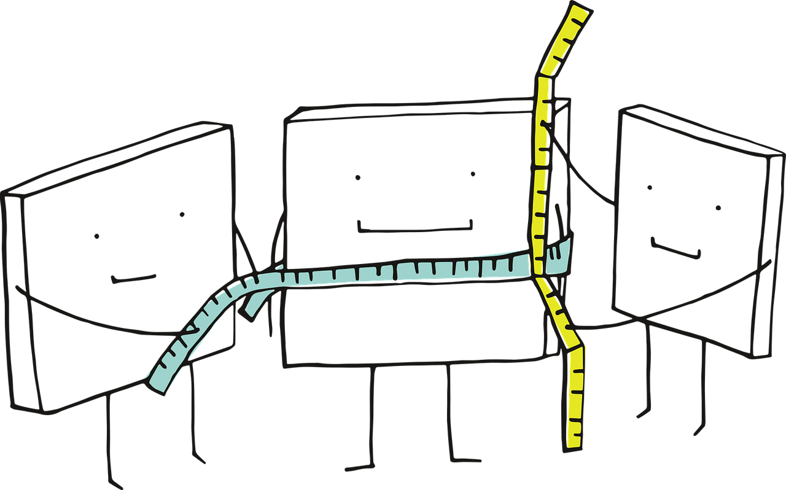
Predictive Baseline
The pre-specified predictive baseline is an intercept-only Beta regression fitted using the training data only. Its purpose is to provide a covariate-blind benchmark: before asking whether Study Time improves held-out prediction, we first ask how well a single Beta distribution fitted to the training responses predicts the testing responses when it uses no student-level regressor information.
The baseline keeps the same Beta likelihood, response transformation, mean link, and precision link as the final study-time model. What changes is only the systematic structure. Instead of allowing the conditional mean and precision to vary by Study Time, both submodels contain an intercept alone:
\[ \operatorname{logit}\left(\mu_i^{(B)}\right) = \beta_0^{(B)}, \qquad \log\left(\phi_i^{(B)}\right) = \gamma_0^{(B)}, \]
where the superscript \((B)\) denotes the baseline model. Because there are no regressors,
\[ \mu_i^{(B)} = \mu^{(B)} = \operatorname{logit}^{-1} \left( \beta_0^{(B)} \right) \]
and
\[ \phi_i^{(B)} = \phi^{(B)} = \exp \left( \gamma_0^{(B)} \right) \]
for every observation. Thus, every student is assigned the same Beta distribution under the baseline.
Using the mean–precision parameterization from Section 5.9.1, the baseline distribution is
\[ Y_i \mid \text{baseline} \sim \operatorname{Beta} \left( \alpha^{(B)}, \beta^{(B)} \right), \]
with
\[ \alpha^{(B)} = \mu^{(B)}\phi^{(B)}, \qquad \beta^{(B)} = \left( 1-\mu^{(B)} \right) \phi^{(B)}. \]
Therefore,
\[ \operatorname{E} \left( Y_i\mid\text{baseline} \right) = \mu^{(B)} \]
and
\[ \operatorname{Var} \left( Y_i\mid\text{baseline} \right) = \frac{ \mu^{(B)} \left( 1-\mu^{(B)} \right) }{ 1+\phi^{(B)} }. \tag{5.50}\]
Hence, the baseline is not merely a single point prediction. It estimates both a global centre through \(\mu^{(B)}\) and a global concentration through \(\phi^{(B)}\), yielding a complete predictive Beta distribution that can be compared fairly with the study-time model using both point-prediction and probabilistic metrics.
The two baseline parameters are estimated by maximum likelihood on the training observations only:
\[ \left( \widehat{\beta}_0^{(B)}, \widehat{\gamma}_0^{(B)} \right) = \underset{ \beta_0^{(B)},\,\gamma_0^{(B)} }{ \operatorname{arg\,max} } \sum_{i\in\mathcal{I}_{\mathrm{train}}} \log f_Y \left( y_i; \mu^{(B)}, \phi^{(B)} \right), \]
where
\[ \mu^{(B)} = \operatorname{logit}^{-1} \left( \beta_0^{(B)} \right), \qquad \phi^{(B)} = \exp \left( \gamma_0^{(B)} \right). \]
Once fitted, these training estimates are frozen. For every testing observation \(i\in\mathcal{I}_{\mathrm{test}}\),
\[ \widehat{\mu}_i^{(B)} = \widehat{\mu}^{(B)}, \qquad \widehat{\phi}_i^{(B)} = \widehat{\phi}^{(B)}. \]
This is what makes the baseline useful: any improvement by the study-time model must come from using Study Time to vary the fitted conditional distribution across students, rather than merely from fitting the overall level and spread of the training responses.
beta_baseline_model <- betareg(
grade_beta ~ 1 | 1, data = training_data,
link = "logit", link.phi = "log", type = "ML", dist = "beta",
control = betareg.control(method = "BFGS")
)
beta_baseline_parameters <- coef(beta_baseline_model)
beta_baseline_mean_beta <- plogis(beta_baseline_parameters[1])
beta_baseline_precision <- exp(beta_baseline_parameters[2])
beta_baseline_alpha <- beta_baseline_mean_beta * beta_baseline_precision
beta_baseline_beta_shape <- (1 - beta_baseline_mean_beta) *
beta_baseline_precision
beta_baseline_mean_grade <- beta_grade_scale_factor *
beta_baseline_mean_beta + beta_grade_scale_offset
beta_baseline_interval_beta <- qbeta(
c(0.05, 0.95), beta_baseline_alpha, beta_baseline_beta_shape)
beta_baseline_interval_grade <- beta_grade_scale_factor *
beta_baseline_interval_beta + beta_grade_scale_offset
stopifnot(all(is.finite(beta_baseline_parameters)),
beta_baseline_mean_beta > 0, beta_baseline_mean_beta < 1,
beta_baseline_precision > 0)beta_baseline_model = BetaModel.from_formula(
'grade_beta ~ 1', data=training_data, exog_precision_formula='1',
link=sm.families.links.Logit(), link_precision=sm.families.links.Log(),
).fit(method="bfgs", maxiter=1000, disp=False)
beta_baseline_parameters = np.asarray(beta_baseline_model.params)
beta_baseline_mean_beta = expit(beta_baseline_parameters[0])
beta_baseline_precision = np.exp(beta_baseline_parameters[1])
beta_baseline_alpha = beta_baseline_mean_beta * beta_baseline_precision
beta_baseline_beta_shape = (
(1 - beta_baseline_mean_beta) * beta_baseline_precision)
beta_baseline_mean_grade = (
beta_grade_scale_factor * beta_baseline_mean_beta
+ beta_grade_scale_offset)
beta_baseline_interval_beta = stats.beta.ppf(
[0.05, 0.95], beta_baseline_alpha, beta_baseline_beta_shape)
beta_baseline_interval_grade = (
beta_grade_scale_factor * beta_baseline_interval_beta
+ beta_grade_scale_offset)
assert np.isfinite(beta_baseline_parameters).all()
assert 0 < beta_baseline_mean_beta < 1
assert beta_baseline_precision > 0The fitted baseline therefore assigns every held-out student the same plug-in predictive distribution on the modelling scale:
\[ Y_i \mid \text{training-fitted baseline} \sim \operatorname{Beta} \left( \text{8.71}, \text{2.32} \right). \]
Its fitted transformed-scale conditional mean is \(\widehat{\mu}^{(B)}=\text{0.7897}\) and its fitted precision is \(\widehat{\phi}^{(B)}=\text{11.03}\). Returning the mean to the original grade scale using the fixed inverse transformation in Equation 5.29 gives a constant predicted conditional mean grade of 79.00%.
Likewise, the equal-tailed 90% predictive interval is obtained from the 5th and 95th quantiles of the same fitted Beta distribution and then translated back to the grade-percentage scale. Because the baseline distribution is identical for every held-out student, this interval is also constant: 56.91% to 94.93%. This baseline is deliberately simple, but it is not vacuous. It captures the overall training-sample level and dispersion with a complete Beta distribution. The predictive question is therefore whether allowing Study Time to determine different conditional means and precisions produces better held-out point predictions and better held-out predictive distributions than this common-distribution benchmark.
We store these baseline predictions on the same testing observations used for the study-time model.
beta_model_labels <- c(
"Study-time variable-precision model",
"Intercept-only Beta baseline"
)
beta_baseline_testing_predictions <- tibble(
observed_grade_beta = testing_data[["grade_beta"]],
observed_grade = testing_data[["Final Grade (%)"]],
predicted_mean_beta = beta_baseline_mean_beta,
predicted_precision = beta_baseline_precision,
alpha = beta_baseline_alpha,
beta_shape = beta_baseline_beta_shape,
predicted_mean_grade = beta_baseline_mean_grade,
lower_90_grade = beta_baseline_interval_grade[1],
upper_90_grade = beta_baseline_interval_grade[2])
beta_baseline_summary <- tibble(
`Predicted conditional mean grade (%)` = beta_baseline_mean_grade,
Precision = beta_baseline_precision,
Alpha = beta_baseline_alpha,
Beta = beta_baseline_beta_shape,
`Lower 90% predictive bound (%)` = beta_baseline_interval_grade[1],
`Upper 90% predictive bound (%)` = beta_baseline_interval_grade[2])
beta_baseline_summary |>
kable(digits = 2, align = rep("c", 6))| Predicted conditional mean grade (%) | Precision | Alpha | Beta | Lower 90% predictive bound (%) | Upper 90% predictive bound (%) |
|---|---|---|---|---|---|
| 79 | 11.03 | 8.71 | 2.32 | 56.91 | 94.93 |
beta_model_labels = [
"Study-time variable-precision model",
"Intercept-only Beta baseline",
]
beta_baseline_testing_predictions = pd.DataFrame({
"observed_grade_beta": testing_data["grade_beta"].to_numpy(),
"observed_grade": testing_data["Final Grade (%)"].to_numpy(),
"predicted_mean_beta": beta_baseline_mean_beta,
"predicted_precision": beta_baseline_precision,
"alpha": beta_baseline_alpha,
"beta_shape": beta_baseline_beta_shape,
"predicted_mean_grade": beta_baseline_mean_grade,
"lower_90_grade": beta_baseline_interval_grade[0],
"upper_90_grade": beta_baseline_interval_grade[1],
})
beta_baseline_summary = pd.DataFrame({
"Predicted conditional mean grade (%)": [beta_baseline_mean_grade],
"Precision": [beta_baseline_precision],
"Alpha": [beta_baseline_alpha],
"Beta": [beta_baseline_beta_shape],
"Lower 90% predictive bound (%)": [beta_baseline_interval_grade[0]],
"Upper 90% predictive bound (%)": [beta_baseline_interval_grade[1]],
})
beta_baseline_summary_html = scrollable_table_html(
beta_baseline_summary,
float_format=lambda value: f"{value:.2f}")| Predicted conditional mean grade (%) | Precision | Alpha | Beta | Lower 90% predictive bound (%) | Upper 90% predictive bound (%) |
|---|---|---|---|---|---|
| 79.00 | 11.03 | 8.71 | 2.32 | 56.91 | 94.93 |
The baseline deliberately ignores Study Time. Thus, it represents the predictive performance attainable from a single training-derived Beta distribution before asking whether category-specific means and precisions provide useful held-out improvement.
Point-prediction Metrics
We first evaluate the conditional-mean predictions on the original grade-percentage scale, using the ME (Equation 5.26), MAE (Equation 5.27), and RMSE (Equation 5.28) definitions frozen in Section 5.15.1. Recall that the error is observed minus predicted, so positive ME indicates average underprediction and negative ME indicates average overprediction.
beta_testing_predictions <- beta_testing_predictions |>
mutate(observed_grade_beta = testing_data[["grade_beta"]],
`Observed testing grade (%)` = testing_data[["Final Grade (%)"]])
beta_study_time_error <- beta_testing_predictions[["Observed testing grade (%)"]] -
beta_testing_predictions[["predicted_mean_grade"]]
beta_baseline_error <- beta_baseline_testing_predictions[["observed_grade"]] -
beta_baseline_testing_predictions[["predicted_mean_grade"]]
beta_point_metrics <- tibble(
Model = beta_model_labels,
ME = c(mean(beta_study_time_error), mean(beta_baseline_error)),
MAE = c(mean(abs(beta_study_time_error)), mean(abs(beta_baseline_error))),
RMSE = c(
sqrt(mean(beta_study_time_error^2)),
sqrt(mean(beta_baseline_error^2))
)
)
beta_point_metrics |>
kable(digits = 3, align = rep("c", 4))| Model | ME | MAE | RMSE |
|---|---|---|---|
| Study-time variable-precision model | -0.50 | 4.199 | 5.134 |
| Intercept-only Beta baseline | -0.68 | 9.160 | 10.870 |
beta_testing_predictions["observed_grade_beta"] = (
testing_data["grade_beta"].to_numpy())
beta_testing_predictions["Observed testing grade (%)"] = (
testing_data["Final Grade (%)"].to_numpy())
beta_study_time_error = (
beta_testing_predictions["Observed testing grade (%)"].to_numpy()
- beta_testing_predictions["predicted_mean_grade"].to_numpy())
beta_baseline_error = (
beta_baseline_testing_predictions["observed_grade"].to_numpy()
- beta_baseline_testing_predictions["predicted_mean_grade"].to_numpy())
beta_point_metrics = pd.DataFrame({
"Model": beta_model_labels,
"ME": [
beta_study_time_error.mean(),
beta_baseline_error.mean(),
],
"MAE": [
mean_absolute_error(
beta_testing_predictions["Observed testing grade (%)"],
beta_testing_predictions["predicted_mean_grade"]),
mean_absolute_error(
beta_baseline_testing_predictions["observed_grade"],
beta_baseline_testing_predictions["predicted_mean_grade"]),
],
"RMSE": [
np.sqrt(mean_squared_error(
beta_testing_predictions["Observed testing grade (%)"],
beta_testing_predictions["predicted_mean_grade"])),
np.sqrt(mean_squared_error(
beta_baseline_testing_predictions["observed_grade"],
beta_baseline_testing_predictions["predicted_mean_grade"])),
],
})
beta_point_metrics_html = scrollable_table_html(
beta_point_metrics, float_format=lambda value: f"{value:.3f}")| Model | ME | MAE | RMSE |
|---|---|---|---|
| Study-time variable-precision model | -0.500 | 4.199 | 5.134 |
| Intercept-only Beta baseline | -0.680 | 9.160 | 10.870 |
The study-time model has a held-out MAE of 4.199 percentage points and an RMSE of 5.134 percentage points. For the intercept-only baseline, the corresponding values are 9.160 percentage points and 10.870 percentage points, respectively. Because these metrics are evaluated on the original grade-percentage scale, their units have a direct practical interpretation. The MAE for the study-time model means that, across the held-out students, the predicted conditional mean grade differs from the observed grade by about 4.199 percentage points on average in absolute value. The intercept-only baseline has an average absolute error of about 9.160 percentage points. Relative to the baseline, the study-time model reduces held-out MAE by approximately 54.2% and RMSE by approximately 52.8%. Thus, the study-time model improves held-out point prediction under both absolute-error and squared-error criteria relative to the intercept-only baseline.
MAE and RMSE summarize prediction error differently. MAE gives each absolute error a contribution proportional to its size,
\[ \operatorname{MAE} = \frac{1}{n_{\mathrm{test}}} \sum_{i\in\mathcal{I}_{\mathrm{test}}} \left| e_i \right|, \]
whereas RMSE squares the errors before averaging,
\[ \operatorname{RMSE} = \sqrt{ \frac{1}{n_{\mathrm{test}}} \sum_{i\in\mathcal{I}_{\mathrm{test}}} e_i^2 }. \]
Consequently, RMSE gives relatively greater weight to larger prediction errors. The fact that the study-time model has a smaller value for both metrics means that its held-out advantage is not confined to only one of these loss functions: it improves the average absolute discrepancy while also reducing the quadratic penalty associated with larger misses. This does not mean that every individual testing observation is predicted more accurately by the study-time model; these are aggregate summaries across the full held-out sample.
The corresponding ME values are -0.50 percentage points for the study-time model and -0.68 percentage points for the baseline. Recall that we defined
\[ e_i = g_i-\widehat{g}_i, \]
so a positive ME indicates average underprediction and a negative ME indicates average overprediction. Therefore, the study-time model slightly overpredicts grades on average, while the intercept-only baseline also overpredicts grades on average.
The magnitude of ME should be interpreted together with MAE and RMSE. In particular, a mean error close to zero does not imply that predictions are individually accurate: positive and negative errors can cancel when averaged. Here, the study-time model’s absolute ME is 0.50 percentage points, whereas its MAE is 4.199 percentage points. The difference between those quantities illustrates why ME is primarily a measure of directional bias, whereas MAE and RMSE are more useful for comparing overall point-prediction accuracy.
All together, these point-prediction metrics indicate that incorporating Study Time materially improves the held-out prediction of the conditional mean grade relative to a model that assigns every student the same predicted mean. However, point-prediction accuracy answers only part of the predictive inquiry. Beta regression also provides a complete conditional predictive distribution through both \(\widehat{\mu}_i\) and \(\widehat{\phi}_i\). Therefore, we next evaluate whether the study-time model also improves probabilistic prediction, rather than assuming that better MAE and RMSE automatically imply a better fitted predictive distribution.
Probabilistic Predictive Performance
Point metrics evaluate only the predicted conditional means. We now evaluate the entire fitted predictive Beta distributions using mean NLPD. As fixed in Equation 5.31,
\[ \overline{\operatorname{NLPD}} = -\frac{1}{n_{\mathrm{test}}} \sum_{i\in\mathcal I_{\mathrm{test}}} \log f_{\operatorname{Beta}} \left( y_i; \widehat{\alpha}_i, \widehat{\beta}_i \right). \]
As in Section 5.17, the hats in this predictive branch denote quantities obtained from the frozen training fit. Lower mean NLPD is better when the models are evaluated on the same held-out observations using the same response definition and transformation.
beta_study_time_log_density <- dbeta(
beta_testing_predictions[["observed_grade_beta"]],
beta_testing_predictions[["alpha"]],
beta_testing_predictions[["beta_shape"]],
log = TRUE
)
beta_baseline_log_density <- dbeta(
beta_baseline_testing_predictions[["observed_grade_beta"]],
beta_baseline_testing_predictions[["alpha"]],
beta_baseline_testing_predictions[["beta_shape"]],
log = TRUE
)
stopifnot(
all(is.finite(beta_study_time_log_density)),
all(is.finite(beta_baseline_log_density))
)
beta_probabilistic_metrics <- tibble(
Model = beta_model_labels,
`Mean NLPD` = c(
-mean(beta_study_time_log_density),
-mean(beta_baseline_log_density)
)
)
beta_probabilistic_metrics |>
kable(digits = 3, align = c("c", "c"))| Model | Mean NLPD |
|---|---|
| Study-time variable-precision model | -1.519 |
| Intercept-only Beta baseline | -0.775 |
beta_study_time_log_density = stats.beta.logpdf(
beta_testing_predictions["observed_grade_beta"],
beta_testing_predictions["alpha"],
beta_testing_predictions["beta_shape"],
)
beta_baseline_log_density = stats.beta.logpdf(
beta_baseline_testing_predictions["observed_grade_beta"],
beta_baseline_testing_predictions["alpha"],
beta_baseline_testing_predictions["beta_shape"],
)
assert np.isfinite(beta_study_time_log_density).all()
assert np.isfinite(beta_baseline_log_density).all()
beta_probabilistic_metrics = pd.DataFrame({
"Model": beta_model_labels,
"Mean NLPD": [
-beta_study_time_log_density.mean(),
-beta_baseline_log_density.mean(),
],
})
beta_probabilistic_metrics_html = scrollable_table_html(
beta_probabilistic_metrics,
float_format=lambda value: f"{value:.3f}")| Model | Mean NLPD |
|---|---|
| Study-time variable-precision model | -1.519 |
| Intercept-only Beta baseline | -0.775 |
The study-time model has a held-out mean NLPD of -1.519, compared with -0.775 for the intercept-only baseline. Because smaller NLPD is better, the study-time model provides better held-out probabilistic prediction according to the pre-specified logarithmic-score criterion. The difference in mean NLPD is
\[ \Delta_{\mathrm{NLPD}} = \overline{\operatorname{NLPD}}_{\mathrm{baseline}} - \overline{\operatorname{NLPD}}_{\mathrm{Study\text{-}time}}, \]
which here equals 0.744. A positive value favours the study-time model because it means that the baseline incurs a larger average negative log predictive density on the same held-out observations.
The fact that both mean NLPD values are negative is not a computational problem. As discussed earlier in Section 5.15, NLPD is based on a continuous density, and a density can exceed \(1\). When the fitted model assigns density greater than \(1\) near an observed response, its log density is positive and the corresponding negative log density is negative. Thus, the absolute sign of NLPD is not the key interpretation; the comparison between models evaluated on the same held-out responses and the same transformed response scale is what matters.
The NLPD difference also has a useful density-scale interpretation. Since
\[ \overline{\operatorname{NLPD}} = - \frac{1}{n_{\mathrm{test}}} \sum_{i\in\mathcal I_{\mathrm{test}}} \log f_i(y_i), \]
we can exponentiate the difference in mean log predictive density:
\[ \exp \left( \overline{\operatorname{NLPD}}_{\mathrm{baseline}} - \overline{\operatorname{NLPD}}_{\mathrm{Study\text{-}time}} \right). \]
Heads-up on why a geometric mean appears here!
The term geometric mean appears because NLPD is built from log predictive densities. For a fitted model \(M\), let
\[ d_i^{(M)} = f_i^{(M)}(y_i) \]
denote the predictive density that the model assigns to the held-out response that actually occurs for observation \(i\). The usual arithmetic mean would average these densities directly:
\[ \frac{1}{n_{\mathrm{test}}} \sum_{i\in\mathcal I_{\mathrm{test}}} d_i^{(M)}. \]
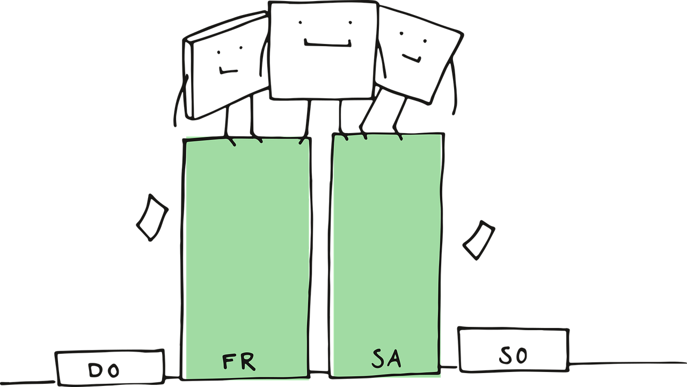
NLPD does something different. It first takes the logarithm of each predictive density and then averages those log densities:
\[ -\overline{\operatorname{NLPD}}_M = \frac{1}{n_{\mathrm{test}}} \sum_{i\in\mathcal I_{\mathrm{test}}} \log d_i^{(M)}. \]
Exponentiating this average gives
\[ \exp \left( -\overline{\operatorname{NLPD}}_M \right) = \exp \left[ \frac{1}{n_{\mathrm{test}}} \sum_{i\in\mathcal I_{\mathrm{test}}} \log d_i^{(M)} \right]. \]
Using the identity
\[ \exp \left( \frac{1}{n}\sum_{i=1}^{n}\log d_i \right) = \left( \prod_{i=1}^{n} d_i \right)^{1/n}, \]
we obtain
\[ \exp \left( -\overline{\operatorname{NLPD}}_M \right) = \left[ \prod_{i\in\mathcal I_{\mathrm{test}}} d_i^{(M)} \right]^{1/n_{\mathrm{test}}}. \tag{5.51}\]
In Equation 5.51, the right-hand side is the geometric mean predictive density. Thus, exponentiating the mean log predictive density returns us to the original density scale, but through a geometric rather than arithmetic average. This also explains the model comparison used above, where \(\operatorname{GM}\) indicates geometric mean:
\[ \frac{ \operatorname{GM}_{\mathrm{Study\text{-}time}} }{ \operatorname{GM}_{\mathrm{baseline}} } = \exp \left( \overline{\operatorname{NLPD}}_{\mathrm{baseline}} - \overline{\operatorname{NLPD}}_{\mathrm{Study\text{-}time}} \right). \]
For our held-out data, this ratio is approximately 2.10. Therefore, on the geometric-mean scale, the study-time model assigns about 2.10 times as much predictive density to the responses that actually occurred as the intercept-only baseline.
This quantity is not an average probability. These are continuous predictive densities, which can exceed \(1\). The ratio is meaningful here because both models are evaluated on the same held-out observations and the same transformed response scale. It summarizes their relative multiplicative density assignment across the held-out sample; it does not imply that the study-time model assigns more density than the baseline to every individual observation.
For these held-out data, this quantity is approximately 2.10. In other words, the geometric mean predictive density assigned to the responses that actually occurred is about 2.10 times as large under the study-time model as under the intercept-only baseline. Note that this is a comparison of predictive densities, not a probability ratio and not a statement that every held-out observation receives more density under the study-time model. Some individual observations can still be better represented by the baseline. The mean NLPD summarizes the average log-score performance across the complete held-out sample.
Unlike MAE and RMSE, NLPD evaluates more than the location of the predicted conditional mean. For observation \(i\), the predictive density
\[ f_{\operatorname{Beta}} \left( y_i; \widehat{\alpha}_i, \widehat{\beta}_i \right) \]
depends on both
\[ \widehat{\mu}_i \qquad\text{and}\qquad \widehat{\phi}_i. \]
Therefore, a model can receive a poor NLPD because its conditional mean is badly located, because its predictive distribution is inappropriately concentrated or diffuse, or because both features are misspecified. Conversely, two models with similar point predictions can have quite different NLPD values if one assigns substantially more plausible predictive density around the responses that actually occur.
For this chapter, the direction of the probabilistic result is consistent with the point-prediction results from our previous subsection on point-prediction metrics: the study-time model improves both the location-based prediction metrics and the held-out logarithmic score relative to the intercept-only baseline. This provides evidence that using Study Time improves not only the predicted conditional means but also the overall probabilistic representation of the held-out grades under the fitted Beta distributions.
However, a better mean NLPD does not by itself establish that the predictive distributions are well calibrated. NLPD rewards distributions that assign greater density to realized responses, whereas calibration asks whether the predictive distributions have appropriate frequency properties across the held-out sample. Therefore, we next examine the pre-specified 90% predictive-interval coverage and width together with the PIT diagnostic.
Held-out Predictive-distribution Assessment
We next assess the pre-specified 90% plug-in predictive intervals. For each model, empirical coverage is the proportion of held-out grades falling inside the corresponding interval, and average width is reported in practical percentage-point units.
beta_study_time_covered <- with(
beta_testing_predictions,
`Observed testing grade (%)` >= lower_90_grade &
`Observed testing grade (%)` <= upper_90_grade
)
beta_baseline_covered <- with(
beta_baseline_testing_predictions,
observed_grade >= lower_90_grade &
observed_grade <= upper_90_grade
)
beta_interval_metrics <- tibble(
Model = beta_model_labels,
`90% coverage (%)` = 100 * c(
mean(beta_study_time_covered),
mean(beta_baseline_covered)
),
`Average 90% interval width (percentage points)` = c(
mean(beta_testing_predictions[["upper_90_grade"]] -
beta_testing_predictions[["lower_90_grade"]]),
mean(beta_baseline_testing_predictions[["upper_90_grade"]] -
beta_baseline_testing_predictions[["lower_90_grade"]])
)
)
beta_interval_metrics |>
kable(digits = 2, align = rep("c", 3))| Model | 90% coverage (%) | Average 90% interval width (percentage points) |
|---|---|---|
| Study-time variable-precision model | 90.67 | 17.58 |
| Intercept-only Beta baseline | 92.67 | 38.02 |
beta_study_time_covered = (
(beta_testing_predictions["Observed testing grade (%)"]
>= beta_testing_predictions["lower_90_grade"])
& (beta_testing_predictions["Observed testing grade (%)"]
<= beta_testing_predictions["upper_90_grade"]))
beta_baseline_covered = (
(beta_baseline_testing_predictions["observed_grade"]
>= beta_baseline_testing_predictions["lower_90_grade"])
& (beta_baseline_testing_predictions["observed_grade"]
<= beta_baseline_testing_predictions["upper_90_grade"]))
beta_interval_metrics = pd.DataFrame({
"Model": beta_model_labels,
"90% coverage (%)": [
100 * beta_study_time_covered.mean(),
100 * beta_baseline_covered.mean(),
],
"Average 90% interval width (percentage points)": [
(beta_testing_predictions["upper_90_grade"]
- beta_testing_predictions["lower_90_grade"]).mean(),
(beta_baseline_testing_predictions["upper_90_grade"]
- beta_baseline_testing_predictions["lower_90_grade"]).mean(),
],
})
beta_interval_metrics_html = scrollable_table_html(
beta_interval_metrics,
float_format=lambda value: f"{value:.2f}")| Model | 90% coverage (%) | Average 90% interval width (percentage points) |
|---|---|---|
| Study-time variable-precision model | 90.67 | 17.58 |
| Intercept-only Beta baseline | 92.67 | 38.02 |
For a nominal 90% predictive interval, the empirical held-out coverage is
\[ \widehat{\operatorname{Coverage}} = \frac{1}{n_{\mathrm{test}}} \sum_{i\in\mathcal I_{\mathrm{test}}} \mathbb{I} \left( L_i \leq g_i \leq U_i \right), \]
where \(L_i\) and \(U_i\) are the lower and upper predictive bounds for held-out observation \(i\), \(g_i\) is its observed grade, and \(\mathbb{I}(\cdot)\) equals \(1\) when the observed grade falls inside the interval and \(0\) otherwise. The corresponding average interval width is
\[ \overline{W} = \frac{1}{n_{\mathrm{test}}} \sum_{i\in\mathcal I_{\mathrm{test}}} \left( U_i-L_i \right). \]
Thus, coverage measures how often the predictive intervals contain the realized held-out grades, whereas width measures how concentrated those intervals are on the original grade-percentage scale.
The study-time model covers 90.67% of the held-out grades. In counts, this corresponds to 272 of 300 held-out observations falling inside their 90% predictive intervals. Its empirical coverage is therefore only 0.67 percentage points away from the nominal 90% level. On the other hand, the intercept-only baseline covers 92.7% of the held-out grades, corresponding to 278 of 300 observations. Its empirical coverage is 2.67 percentage points away from the nominal level.
Nevertheless, coverage alone is not enough to compare predictive intervals. An interval can achieve high empirical coverage simply by being very wide. Hence, we interpret coverage jointly with the practical width of the intervals. For the study-time model, the average 90% predictive-interval width is 17.58 percentage points. For the intercept-only baseline, the corresponding width is 38.02 percentage points. Thus, the study-time model reduces average interval width by approximately 53.8% relative to the baseline. This is a substantial difference in practical terms. The baseline obtains somewhat higher coverage, but it does so using predictive intervals that are much wider. By contrast, the study-time model produces intervals that are considerably narrower while retaining empirical coverage close to the nominal 90% level. In this sense, the study-time model provides a more concentrated (or sharper) held-out predictive distribution without sacrificing much coverage.
It is important not to interpret the nominal 90% level as a requirement that exactly 90% of one finite testing sample must be covered. Even if the predictive distributions were perfectly calibrated, empirical coverage would fluctuate from sample to sample. Therefore, the observed difference between the nominal 90% level and the empirical values above should be interpreted diagnostically rather than as a pass/fail test. The width also should not be interpreted as a fixed \(\pm\) margin around the predicted mean. Because the fitted Beta distributions can be asymmetric, the lower and upper predictive bounds need not lie equally far from the conditional mean. The reported width is simply the average distance \(U_i-L_i\) between those two bounds on the grade-percentage scale.
Having said all this, these results favour the study-time model from an interval-prediction perspective: it achieves empirical coverage close to the pre-specified nominal level while using intervals that are markedly narrower than those of the intercept-only baseline. That is a more informative result than coverage alone, because useful probabilistic predictions should be sufficiently well calibrated without being unnecessarily diffuse.
Still, predictive-interval coverage checks only one aspect of the fitted predictive distributions. A model could obtain reasonable 90% coverage while still allocating probability unevenly within those intervals. Thus, we complement coverage and width with the PIT diagnostic, which examines the predictive distributions across their full probability scale. We compute PIT values from the study-time model’s frozen training-derived Beta distributions and use exactly ten equal-width bins on \([0,1]\), as fixed in Section 5.15.3.
beta_pit_values <- pbeta(
beta_testing_predictions[["observed_grade_beta"]],
beta_testing_predictions[["alpha"]],
beta_testing_predictions[["beta_shape"]]
)
beta_pit_breaks <- seq(0, 1, by = 0.1)
beta_pit_values_plot <- pmin(
pmax(beta_pit_values, 0), 1 - .Machine$double.eps)
beta_pit_bins <- cut(
beta_pit_values_plot, breaks = beta_pit_breaks,
include.lowest = TRUE, right = FALSE)
beta_pit_counts <- as.numeric(table(beta_pit_bins))
beta_pit_expected_count <- length(beta_pit_values) / 10
beta_pit_y_step <- max(
1, ceiling(1.15 * max(c(beta_pit_counts, beta_pit_expected_count)) / 5))
beta_pit_y_max <- 5 * beta_pit_y_step
beta_pit_y_breaks <- seq(0, beta_pit_y_max, by = beta_pit_y_step)
beta_pit_plot_data <- tibble(
midpoint = head(beta_pit_breaks, -1) + 0.05,
count = beta_pit_counts)
beta_pit_plot <- ggplot(
beta_pit_plot_data, aes(x = midpoint, y = count)) +
geom_col(width = 0.092, fill = "#56B4E9", colour = "#0072B2") +
geom_hline(
yintercept = beta_pit_expected_count,
linetype = "dashed", linewidth = 1, colour = "#D55E00") +
scale_x_continuous(
limits = c(0, 1), breaks = seq(0, 1, by = 0.1),
expand = expansion(mult = c(0, 0))) +
scale_y_continuous(
limits = c(0, beta_pit_y_max),
breaks = beta_pit_y_breaks[beta_pit_y_breaks != 0],
expand = expansion(mult = c(0, 0))) +
theme_bw() +
theme(
axis.text = element_text(size = 15.5),
axis.title.x = element_text(size = 20),
axis.title.y = element_text(
size = 20, vjust = 0.5, margin = margin(r = 12)),
panel.grid.minor = element_blank()
) +
labs(
x = "\n Probability integral transform",
y = "Held-out observations"
)
beta_pit_plot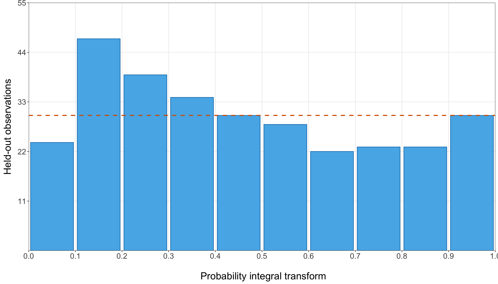
beta_pit_values = stats.beta.cdf(
beta_testing_predictions["observed_grade_beta"],
beta_testing_predictions["alpha"],
beta_testing_predictions["beta_shape"],
)
beta_pit_breaks = np.linspace(0, 1, 11)
beta_pit_values_plot = np.clip(
beta_pit_values, 0, np.nextafter(1.0, 0.0))
beta_pit_counts, _ = np.histogram(
beta_pit_values_plot, bins=beta_pit_breaks)
beta_pit_expected_count = len(beta_pit_values) / 10
beta_pit_y_step = max(
1, int(np.ceil(
1.15 * max(beta_pit_counts.max(), beta_pit_expected_count) / 5)))
beta_pit_y_max = 5 * beta_pit_y_step
beta_pit_y_breaks = np.arange(
0, beta_pit_y_max + beta_pit_y_step, beta_pit_y_step)
beta_pit_plot_data = pd.DataFrame({
"midpoint": beta_pit_breaks[:-1] + 0.05,
"count": beta_pit_counts,
})
beta_pit_plot, beta_pit_axis = plt.subplots(figsize=(14, 8))
_ = beta_pit_axis.bar(
beta_pit_plot_data["midpoint"],
beta_pit_plot_data["count"],
width=0.092,
color="#56B4E9",
edgecolor="#0072B2",
)
_ = beta_pit_axis.axhline(
beta_pit_expected_count,
linestyle="dashed",
linewidth=1,
color="#D55E00",
)
_ = beta_pit_axis.set_xlim(0, 1)
_ = beta_pit_axis.set_ylim(0, beta_pit_y_max)
_ = beta_pit_axis.set_xticks(np.linspace(0, 1, 11))
_ = beta_pit_axis.set_yticks(beta_pit_y_breaks[beta_pit_y_breaks != 0])
_ = beta_pit_axis.set_xlabel(
"\n Probability integral transform", fontsize=20)
_ = beta_pit_axis.set_ylabel(
"Held-out observations", fontsize=20, labelpad=12)
_ = beta_pit_axis.tick_params(axis="both", labelsize=15.5)
_ = beta_pit_axis.grid(True, which="major", axis="both", alpha=0.3)
_ = beta_pit_axis.grid(False, which="minor")
_ = beta_pit_plot.tight_layout()
plt.show()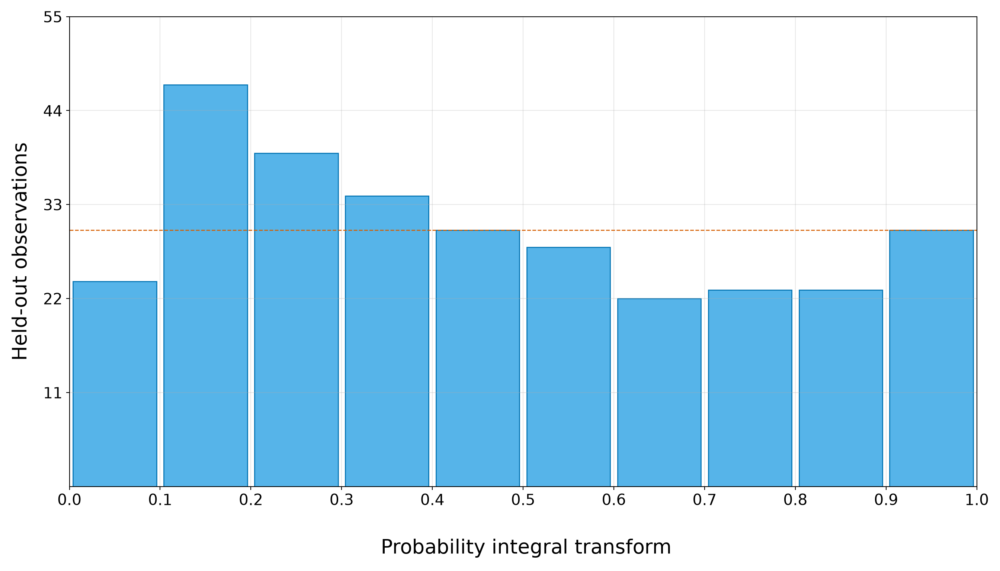
Recall that, for held-out observation \(i\),
\[ \operatorname{PIT}_i = F_i(y_i), \]
where \(F_i(\cdot)\) is the fitted conditional Beta CDF supplied by the frozen training-derived model and \(y_i\) is the observed transformed grade. A PIT value near \(0\) means that the observed response falls unusually low in its fitted predictive distribution, a value near \(1\) means that it falls unusually high, and a value near \(0.5\) places it closer to the middle of that distribution.
If the held-out predictive distributions were exactly calibrated, these PIT values would behave approximately as draws from a \(\operatorname{Uniform}(0,1)\) distribution. With ten equal-width bins, the corresponding expected count is
\[ \frac{n_{\mathrm{test}}}{10} = \text{30.0} \]
observations per bin. The dashed horizontal line in Figure 5.23 (or Figure 5.24) shows this reference. Note that the observed bin heights should not be expected to equal that line exactly. With only 300 held-out observations, ordinary finite-sample variation produces uneven counts even when the underlying PIT distribution is Uniform. Therefore, we look for broad, systematic patterns rather than treating every bin-to-bin difference as evidence of miscalibration.
In our histogram, the PIT values are not perfectly even across \([0,1]\). The most populated bin contains 47 observations, compared with an expected count of 30.0. More broadly, 174 of 300 observations (or 58.0%) have PIT values below \(0.5\), compared with 50% under an exact Uniform reference. Thus, the histogram shows somewhat greater mass in the lower half of the PIT distribution than in the upper half.
That direction has a useful predictive interpretation. An excess of relatively small PIT values means that held-out grades occur toward the lower portions of their fitted predictive distributions more often than a perfectly Uniform PIT pattern would suggest. In practical terms, this is consistent with a mild tendency for the fitted distributions to be positioned somewhat high relative to some observed grades. This direction is also broadly consistent with the negative held-out ME reported in Table 5.72, which indicated slight average overprediction of the conditional mean.
However, our histogram does not show an extreme accumulation at \(0\) or \(1\), nor is its main feature a pronounced symmetric U-shape or sharply concentrated central hump. Those kinds of shapes would suggest stronger and more systematic problems with predictive spread. Instead, the departure here appears more like an asymmetric unevenness toward lower PIT values, superimposed on the sampling variability expected from a testing set of this size.
This interpretation also complements the predictive-interval results. The study-time model achieved empirical 90% coverage close to the nominal level while using substantially narrower intervals than the baseline. The PIT histogram adds information that interval coverage alone cannot provide: even when the overall proportion of covered observations is reasonable, the responses need not be distributed perfectly evenly throughout their fitted predictive distributions.
Consistent with the caution in Section 5.15.3, we therefore interpret the PIT histogram as a diagnostic rather than a standalone model-acceptance test (Diebold, Gunther, and Tay 1998; Gneiting, Balabdaoui, and Raftery 2007). A finite-sample histogram need not look perfectly flat, and PIT Uniformity would not by itself be sufficient to establish that a predictive model is ideal. Taken together with the held-out NLPD, interval coverage, and interval width, the histogram suggests that the study-time model provides a substantially improved and reasonably informative predictive distribution relative to the intercept-only baseline, while still leaving some evidence of localized predictive-distribution miscalibration.
Predictive Performance Summary
We can now place the pre-specified held-out predictive criteria side by side. No new metric or decision rule is introduced here; the purpose is to synthesize the complementary evidence already examined for point prediction, probabilistic prediction, predictive intervals, and distributional calibration.
beta_predictive_summary <- beta_point_metrics |>
left_join(beta_probabilistic_metrics, by = "Model") |>
left_join(beta_interval_metrics, by = "Model")
beta_predictive_summary |>
kable(digits = 3, align = rep("c", 7))| Model | ME | MAE | RMSE | Mean NLPD | 90% coverage (%) | Average 90% interval width (percentage points) |
|---|---|---|---|---|---|---|
| Study-time variable-precision model | -0.50 | 4.199 | 5.134 | -1.519 | 90.667 | 17.576 |
| Intercept-only Beta baseline | -0.68 | 9.160 | 10.870 | -0.775 | 92.667 | 38.016 |
beta_predictive_summary = (
beta_point_metrics
.merge(beta_probabilistic_metrics, on="Model")
.merge(beta_interval_metrics, on="Model")
)
beta_predictive_summary_html = scrollable_table_html(
beta_predictive_summary,
float_format=lambda value: f"{value:.3f}")| Model | ME | MAE | RMSE | Mean NLPD | 90% coverage (%) | Average 90% interval width (percentage points) |
|---|---|---|---|---|---|---|
| Study-time variable-precision model | -0.500 | 4.199 | 5.134 | -1.519 | 90.667 | 17.576 |
| Intercept-only Beta baseline | -0.680 | 9.160 | 10.870 | -0.775 | 92.667 | 38.016 |
For point prediction, the study-time model has a held-out MAE of 4.199 percentage points and an RMSE of 5.134 percentage points, compared with 9.160 and 10.870 percentage points for the intercept-only baseline. Relative to that baseline, this corresponds to reductions of approximately 54.2% in MAE and 52.8% in RMSE. Thus, incorporating Study Time substantially improves the held-out prediction of the conditional mean grade under both the absolute-error and squared-error criteria.
The ME values provide a different piece of information. They are -0.500 percentage points for the study-time model and -0.680 percentage points for the baseline. Because our error is defined as observed minus predicted, the negative values indicate slight average overprediction. Their small magnitudes relative to the corresponding MAEs also reinforce an important distinction: little average signed bias does not imply small individual prediction errors, because positive and negative errors can cancel.
For probabilistic prediction, the conclusion points in the same direction. The study-time model has mean NLPD -1.519, compared with -0.775 for the baseline. Since smaller NLPD is better, the difference
\[ \overline{\operatorname{NLPD}}_{\mathrm{baseline}} - \overline{\operatorname{NLPD}}_{\mathrm{Study\text{-}time}} \]
is 0.744 in favour of the study-time model. On the geometric-mean predictive-density scale developed earlier in this section, this corresponds to a ratio of approximately 2.10. Hence, the improvement is not limited to locating the conditional means more accurately: the category-specific means and precisions also assign substantially more predictive density, on average on the log-score scale, to the held-out grades that actually occur.
The predictive-interval evidence adds an important qualification. The study-time model attains 90.67% empirical coverage, only 0.67 percentage points from the nominal 90% level. Its average interval width is 17.58 percentage points. The baseline attains 92.67% coverage, but with an average width of 38.02 percentage points. Consequently, the study-time model’s intervals are approximately 53.8% narrower on average than the baseline intervals while still retaining coverage close to the nominal target. The baseline’s somewhat higher empirical coverage should therefore not be interpreted automatically as superior interval prediction: it is achieved with a much less concentrated predictive distribution. Considering coverage and width together, the study-time model provides substantially sharper intervals without an obvious loss of nominal-level coverage.
The PIT histogram in Figure 5.23 (or Figure 5.24) provides a further view of the full predictive distributions. Under exact \(\operatorname{Uniform}(0,1)\) behaviour, each of the ten bins would contain 30.0 observations on average. In the observed testing sample, 174 of 300 PIT values (or 58.0%) fall below \(0.5\). Hence, the histogram shows some asymmetric unevenness toward the lower part of the predictive distributions, consistent with the slight average overprediction seen in ME. At the same time, it does not display an extreme boundary accumulation or another dramatic shape suggesting severe global predictive-distribution failure.
All this means that the calibration conclusion should remain deliberately nuanced. The study-time model’s 90% interval coverage is close to its nominal target, and its intervals are much narrower than the baseline’s, but the PIT histogram still shows some localized departure from ideal Uniform behaviour. We therefore do not reduce calibration to a single pass/fail label. Coverage, width, and PIT describe different aspects of the predictive distributions and are most informative when interpreted together.
Taken as a whole, the held-out evidence answers the chapter’s predictive inquiry consistently. Adding Study Time improves point prediction, improves the logarithmic predictive score, and yields substantially sharper predictive intervals while maintaining coverage close to 90% relative to an intercept-only Beta benchmark. Thus, the model gains predictive value from allowing both the conditional mean and precision to vary across study-time categories, rather than assigning every student the same training-derived Beta distribution.
At the same time, this is not evidence that the predictive model is complete or ideal. The predictive distributions are plug-in distributions, so they represent conditional response variability while treating the training-estimated coefficients as fixed and do not incorporate parameter-estimation uncertainty. The testing sample is finite, PIT Uniformity is neither expected exactly in a finite sample nor sufficient by itself to establish ideal forecasting, and the frozen model uses only Study Time to distinguish students. Other student-level information and sources of variation in final grades remain outside this model.
Accordingly, the predictive conclusion is appropriately narrower: for these protected held-out observations, the frozen study-time variable-precision Beta regression provides substantially better predictive performance than the pre-specified intercept-only Beta baseline, while the calibration diagnostics also identify some remaining predictive-distribution structure that the model does not fully capture.
5.19 Synthesizing Inference and Prediction
The inferential and predictive branches of this case study now point in a consistent direction, but they answer different statistical questions. Keeping those questions separate is essential:
- The inferential analysis asks how the conditional mean final grade differs across study-time categories under the frozen model specification.
- The predictive analysis asks whether the training-fitted model predicts new held-out grades and their predictive distributions better than a pre-specified intercept-only Beta baseline.
The testing-set inferential analysis provides strong evidence of an association between Study Time and the conditional mean grade. The joint likelihood-ratio test produced an LR statistic of 297.268 with 3 degrees of freedom and a \(p\)-value <0.001. On the original grade scale, the fitted conditional mean increases from 65.12% for <1 hour to 89.91% for 5+ hours. Relative to <1 hour, the three fitted differences are 9.85, 20.11, and 24.80 percentage points for 1–3 hours, 3–5 hours, and 5+ hours, respectively. Their 95% model-based CIs all lie above \(0\), so the coefficient-level and original-scale results agree with the joint test.
This is the chapter’s inferential conclusion:
In this synthetic dataset,
Study Timeis strongly associated with the conditional mean final grade under the frozen Beta regression specification.
The word associated is crucial. Nothing in the data-generating description or analysis supplies a randomized intervention, a causal identification strategy, or an adjustment set designed to remove confounding. Therefore, a fitted difference of, for example, 24.80 percentage points between 5+ hours and <1 hour should not be read as the amount by which an individual student’s grade would increase if that student were made to study longer.
The held-out predictive results answer a separate question and also favour the study-time model. For point prediction, its MAE and RMSE are 4.199 and 5.134 percentage points, compared with 9.160 and 10.870 for the intercept-only baseline. This corresponds to reductions of approximately 54.2% in MAE and 52.8% in RMSE. Thus, Study Time provides materially useful information for predicting the centre of the held-out grade distribution rather than merely describing an in-sample association. Furthermore, the conclusion is also favourable for probabilistic prediction, where the entire fitted Beta distribution matters. The study-time model has a mean NLPD of -1.519, compared with -0.775 for the baseline. The corresponding geometric-mean predictive-density ratio is approximately 2.10 in favour of the study-time model. Hence, the predictive gain extends beyond locating the conditional mean: the final model also assigns substantially more predictive density, on average on the log-score scale, to the held-out responses that actually occur.
The predictive-interval and PIT results add an important qualification to the positive predictive result. The study-time model obtains 90.67% empirical coverage for its nominal 90% intervals, with an average width of 17.58 percentage points. Its intervals are approximately 53.8% narrower than those of the intercept-only baseline while retaining coverage close to the nominal target. At the same time, the PIT histogram shows some asymmetric unevenness toward lower PIT values. The final predictive assessment is therefore positive but not absolute:
The model is markedly more informative than the baseline, while some localized predictive-distribution miscalibration remains.
The role of the variable-precision structure should also be interpreted carefully. During model development, the constant-precision model showed a systematic dispersion problem, and the training-stage diagnostics in Section 5.14 showed that allowing precision to vary by Study Time substantially improved distributional adequacy. That refinement was selected before the testing outcomes were examined. The resulting frozen variable-precision model then delivered the held-out probabilistic improvements summarized above. However, the held-out benchmark comparison is between the final study-time variable-precision model as a whole and an intercept-only Beta baseline. Hence, this comparison does not isolate the predictive contribution of the precision submodel from that of the mean submodel. The training-stage diagnostics justified allowing precision to vary with Study Time, while the held-out results show that the resulting final model, taken as a whole, provides substantially better probabilistic prediction than the intercept-only baseline.
The distinction among the main conclusions can be summarized in Table 5.80.
| Question | Evidence from this case study | What we can conclude |
|---|---|---|
Is Study Time associated with conditional mean grade? |
Testing-set likelihood-ratio test, coefficient-level inference, and original-scale mean contrasts | Yes. The frozen model shows strong evidence of differences in conditional mean grade across study-time categories. |
Does Study Time improve point prediction? |
Held-out MAE and RMSE against the intercept-only baseline | Yes. The study-time model produces substantially smaller held-out point-prediction errors. |
| Does the final model improve probabilistic prediction? | Held-out NLPD, predictive-interval coverage and width, and PIT | Yes relative to the baseline, with substantially better NLPD and much sharper intervals at coverage close to the nominal level, although the PIT diagnostic shows some remaining miscalibration. |
| Did variable precision improve model adequacy? | Training-stage constant- versus variable-precision diagnostics |
Yes. Allowing precision to depend on Study Time addressed the systematic dispersion problem that motivated the refinement. |
Is the Study Time association causal? |
Study design and modelling workflow | No causal conclusion is warranted. Prediction and association do not identify an intervention effect. |
A useful final distinction is that statistical association, point prediction, and probabilistic prediction are not interchangeable achievements. The inferential branch quantifies how the conditional mean differs across categories. Point prediction evaluates how close predicted conditional means are to individual held-out outcomes. Probabilistic prediction evaluates whether the full fitted conditional distributions (including their precision) place appropriate density and uncertainty around those outcomes. A model can perform well in one of these roles without necessarily performing equally well in the others.
In this case, the evidence happens to align: Study Time is strongly associated with the conditional mean in the protected inferential analysis, and including it in the frozen variable-precision Beta model materially improves both point and probabilistic prediction on held-out data. That coherence strengthens the practical case for Study Time as a useful modelling variable in this synthetic example. It still does not turn the association into a causal effect. Predictive usefulness answers whether Study Time helps us anticipate grades under the observed data-generating pattern; causal inference would require a different design and a different set of modelling assumptions.
5.20 Storytelling
A statistical analysis is not finished when the model has been fitted and the diagnostics have been checked. The final step is to communicate what the analysis says in language that preserves the magnitude of the results, their uncertainty, the predictive evidence, and the limits of the study design. For this case study, the central message is:
In this synthetic student dataset, higher study-time categories are strongly associated with higher conditional mean final grades, and using
Study Timematerially improves held-out prediction relative to an intercept-only Beta baseline. These results are associational and predictive, not causal.
The inferential results make the association clear. The protected testing-set analysis provides strong evidence that the conditional mean grade differs across the four study-time categories, with a joint likelihood-ratio test yielding a \(p\)-value <0.001. More importantly for communication, the fitted conditional mean grades on the original percentage scale are 65.12%, 74.97%, 85.22%, and 89.91% for <1 hour, 1–3 hours, 3–5 hours, and 5+ hours, respectively.
Relative to the <1 hour category, the fitted differences are 9.85 percentage points for 1–3 hours, 20.11 percentage points for 3–5 hours, and 24.80 percentage points for 5+ hours. Their corresponding 95% model-based CIs are [8.31, 11.39], [18.43, 21.78], and [22.79, 26.80] percentage points. Reporting these contrasts is more informative to a non-technical audience than reporting only logit-scale coefficients: they describe both the size of the association and the uncertainty around it in the same units as the original grades.
The predictive results tell a complementary story. When the frozen training-fitted study-time model is evaluated on held-out students, its MAE is 4.20 percentage points and its RMSE is 5.13 percentage points. The intercept-only Beta baseline, which assigns every held-out student the same training-derived conditional mean and predictive distribution, has an MAE of 9.16 percentage points and an RMSE of 10.87 percentage points. In practical terms, incorporating Study Time reduces MAE by about 54.2% and RMSE by about 52.8% relative to that simple benchmark.
That improvement concerns point prediction: the fitted conditional means are closer to the held-out grades. Beta regression also lets us ask a richer predictive question because it supplies an entire conditional distribution. By the pre-specified logarithmic-score criterion, the study-time model has a mean NLPD of -1.519, compared with -0.775 for the baseline. On the geometric-mean predictive-density scale developed earlier, this corresponds to about a 2.10-fold advantage for the study-time model. Thus, the predictive benefit is not limited to getting the centre of the grade distribution closer to the observed outcomes; the fitted distributions also place substantially more predictive density, on average on the log-score scale, around the grades that actually occur.
The predictive intervals describe the remaining uncertainty in more familiar units. The study-time model’s nominal 90% predictive intervals cover 90.7% of the held-out grades and have an average width of 17.58 percentage points. The baseline reaches 92.7% coverage, but its intervals average 38.02 percentage points wide. The study-time model therefore produces intervals about 53.8% narrower while retaining empirical coverage close to the nominal target. The PIT diagnostic adds some caution: its histogram shows localized unevenness toward lower PIT values, so the predictive distributions should not be described as perfectly calibrated.
This is where the Beta model adds something that a mean-only story would miss. The model separates the conditional mean, which describes where the grade distribution is centred, from the precision, which describes how concentrated the distribution is around that centre. Training-stage diagnostics showed that a common precision was too restrictive, so the final specification allowed precision to vary with Study Time. That refinement improved the distributional adequacy of the fitted model before the testing outcomes were examined. In the final held-out analysis, the resulting variable-precision model then performed substantially better than the intercept-only Beta baseline as a complete predictive model.
For an applied audience, the appropriate takeaway is therefore not simply that “more study time means a higher grade.” A more faithful statement is:
Within this synthetic dataset, study-time category is informative about both the conditional mean final grade and the predictive distribution of final grades. The fitted model shows sizeable mean-grade differences across categories and materially better held-out prediction than a covariate-blind Beta baseline, while still leaving meaningful uncertainty around individual outcomes.
This type of model is useful when the response is continuous and bounded, when the scientific or practical question concerns differences in its conditional mean, and when representing the conditional spread or a full predictive distribution is also important. The analysis should still be supported by model diagnostics, and held-out predictive claims should be based on data not used to fit the predictive model.
Finally, the running dataset is synthetic. It was designed to provide a clear teaching example for the Beta-regression workflow, not to support claims about real students, courses, or institutions. The numerical contrasts and predictive results should therefore not be translated into recommendations for study policies, advising practices, grading systems, or institutional interventions.
5.21 Limitations and Extensions
The analysis in this chapter is deliberately focused: it develops a complete Beta-regression workflow while keeping the running model interpretable enough to examine mean structure, precision structure, inference, and prediction in detail. That focus also places clear limits on what the fitted model and its results can support:
- The dataset is synthetic. The fitted associations, uncertainty intervals, predictive errors, and calibration diagnostics are useful for learning the modelling workflow, but they do not describe a real student population and should not be generalized to a particular course, program, or institution.
- Standard Beta regression requires the modelling response to lie strictly inside \((0,1)\) (Ferrari and Cribari-Neto 2004; Cribari-Neto and Zeileis 2010). Our dataset contains exact grades of \(100\%\), so Section 5.5.3 applies the fixed Smithson–Verkuilen transformation before model fitting (Smithson and Verkuilen 2006). This was a deliberate and pre-specified choice, but it is not the only possible way to handle genuine boundary observations. Because the transformation changes the modelling-scale response for every observation, a different boundary-handling convention could lead to somewhat different fitted quantities. This concern is particularly relevant for the precision parameters and density-based quantities such as log-likelihood and NLPD. We did not conduct a sensitivity analysis over alternative boundary adjustments, so the robustness of those quantities to the chosen convention remains an open question.
- The final mean submodel contains only
Study Time. The larger training-stage mean model did not provide evidence, through the pre-specified joint likelihood-ratio comparison, that its additional mean terms improved the fitted model enough to retain them. This does not imply that study time is the only feature related to final grades, nor that every omitted variable is individually irrelevant. It means only that the chapter retained the simpler study-time mean structure under the model-development strategy used here. The remaining held-out prediction errors and PIT departures also remind us that substantial outcome variation remains unexplained by this single categorical regressor. - The constant-precision specification was inadequate for the training data. The diagnostics showed systematic differences in residual dispersion across
Study Time, and Section 5.14 showed that allowing precision to vary substantially improved that aspect of model adequacy. Hence, conclusions from the initial constant-precision model should not be treated as interchangeable with those from the final variable-precision specification. More generally, Beta regression requires attention to both the conditional mean and conditional precision rather than assuming automatically that a common precision is sufficient (Cribari-Neto and Zeileis 2010). - The predictive analysis is held-out but not necessarily prospective. The random training/testing split demonstrates performance on observations that were not used to fit the predictive model, but the synthetic dataset does not document a real operational timeline for when
Study Timewould become available relative to the final grade. Therefore, this chapter establishes retrospective held-out predictive performance. A genuinely prospective use would require confirming that every regressor used for prediction is available at the intended prediction time and is measured in the same way for future observations. - The likelihood developed in this chapter treats observations as statistically independent. That assumption would be questionable for repeated measurements on the same student, students nested within classes or instructors, longitudinal observations, or other clustered data structures. Dependence changes both the probability model and the uncertainty calculation, so ordinary independent-observation Beta regression should not simply be carried over to such settings.
- The response must be meaningfully treated as a continuous bounded quantity. A percentage scale by itself does not guarantee that Beta regression is appropriate. A binary outcome, a success count with a known denominator, an ordinal score, or a response with substantively distinct boundary masses has a different data-generating structure and may require a different model. This distinction was emphasized at the beginning of the chapter and remains a limitation on how broadly the fitted model can be applied.
-
Study Timeis represented by the four observed categories<1 hour,1–3 hours,3–5 hours, and5+ hours. Hence, the model estimates category-specific contrasts; it does not learn a continuous curve in hours. Extrapolation beyond these categories is not meaningful. For example, the fitted model cannot tell us what should happen at seven versus ten hours per week simply because both values fall within or beyond one of the coarse categories. - The substantive comparisons remain observational and associational. Statistical significance and held-out predictive improvement do not identify the causal effect of changing a student’s study time.
A few natural extensions are worth knowing about, but each represents a new modelling decision rather than an automatic upgrade to the analysis:
- Alternative mean links. The logit link is convenient and interpretable, but Beta regression can use other suitable link functions when their shape is better aligned with the conditional-mean relationship (Cribari-Neto and Zeileis 2010). Choosing among them should be motivated by the scientific question, interpretability, and model adequacy rather than by trying many links until one gives the most favourable result.
-
Different precision regressors. The mean and precision submodels need not contain the same variables. A different set of regressors can be used for precision when there is substantive or diagnostic evidence that conditional dispersion changes with those features (Cribari-Neto and Zeileis 2010). In this chapter, using
Study Timein both components was a focused response to the training-stage dispersion pattern, not a general requirement of Beta regression. - Boundary-aware Beta models. When exact \(0\)s or \(1\)s are genuine outcomes rather than values that can reasonably be moved into the interior, an explicitly boundary-aware model can avoid relying on an interior transformation. Extended-support Beta regression provides one such approach for responses on \([0,1]\) (Kosmidis and Zeileis 2026). Whether this is preferable depends on what the boundaries mean in the application.
- Dependence-aware or mixed-effects Beta models. If bounded responses are clustered, repeated, or longitudinal, extensions that model the dependence structure directly are more appropriate than assuming independent observations. Mixed and mixture Beta-regression approaches provide examples of how bounded-response models can be extended to dependent data (Verkuilen and Smithson 2012).
- Resampling-based predictive assessment. A single protected testing split is easy to explain and preserves a clean separation between development and final evaluation, but its numerical results depend partly on the particular split. When the goal is broader predictive-performance estimation or model comparison, repeated resampling or cross-validation can provide information across multiple training/validation partitions (Arlot and Celisse 2010). Such procedures would need to preserve the full preprocessing and model-development workflow within each resample to avoid information leakage.
These extensions are best viewed as directions for a later analysis rather than additional steps that must be appended to every Beta regression. The central workflow remains the same: match the probability model to the response-generating structure, specify both mean and precision thoughtfully, diagnose inadequacies before refining the model, separate model development from final evaluation, and keep inferential, predictive, and causal claims distinct.
5.22 Chapter Summary
This chapter developed Beta regression as a modelling framework for continuous bounded responses whose conditional mean, conditional spread, and full predictive distribution are all of interest. The student final-grade case study also illustrated a broader regression principle: fitting a model is only one part of the workflow. Response preparation, distributional assumptions, diagnostics, model refinement, specification freezing, inference, and prediction each answer a different question.
The main ideas from the chapter are:
- Standard Beta regression models continuous responses on the open unit interval \((0,1)\). A response expressed as a percentage or proportion is not automatically appropriate for Beta regression: its data-generating structure is still critical. Binary responses, grouped success counts, and bounded continuous responses with genuine endpoint masses require different probability-model considerations.
- Exact boundary values require an explicit modelling decision. In the running dataset, exact \(100\%\) grades map to \(1\) after ordinary percentage-to-proportion rescaling, whereas a standard Beta distribution assigns support only to values strictly between \(0\) and \(1\). For this synthetic teaching case, we fixed the Smithson–Verkuilen transformation (see Section 5.5.3) before splitting the data, \[ y_i=\frac{y_i^{\mathrm{raw}}(n-1)+0.5}{n}, \] using the full-sample value of \(n\) throughout the workflow. The original grade percentage was retained separately for later interpretation. This boundary-handling convention is part of the model specification rather than a consequence of the Beta distribution itself.
-
The mean–precision parameterization makes Beta regression especially useful for regression modelling. Writing \[
Y_i\mid\mathbf{x}_i,\mathbf{z}_i
\sim
\operatorname{Beta}\!\left(
\mu_i\phi_i,\,
(1-\mu_i)\phi_i
\right),
\] gives \[
\mathbb{E}(Y_i\mid\mathbf{x}_i)=\mu_i, \qquad \operatorname{Var}(Y_i\mid\mathbf{x}_i,\mathbf{z}_i) = \frac{\mu_i(1-\mu_i)}{1+\phi_i}.
\] Thus, the conditional variance depends on both the conditional mean and the precision. In this chapter, the mean submodel used the logit link, \[
\operatorname{logit}(\mu_i)= \widetilde{\mathbf{x}}_i^\mathsf{T}\boldsymbol{\beta},
\] while the precision submodel used the log link, \[
\log(\phi_i)=\widetilde{\mathbf{z}}_i^\mathsf{T}\boldsymbol{\gamma}.
\] The regressors in these two submodels need not generally be identical, although the final case-study specification used
Study Timein both. - Beta regression is fitted by maximum likelihood. The mean and precision coefficients are estimated jointly through the Beta likelihood. The chapter used the resulting model-based covariance matrix to obtain model-based SEs, Wald tests, and CIs. These uncertainty statements depend on the fitted model and its regularity assumptions; they do not make model adequacy automatic.
-
Diagnostics can reveal inadequacy that is not visible from fitted means alone. The initial model represented the study-time group centres well but imposed a common precision parameter. Training-stage quantile-residual and response-scale dispersion checks showed a systematic across-group mismatch under that restriction. Allowing precision to depend on
Study Timesubstantially reduced that pattern, while a separate mean-complexity check did not support expanding the focusedStudy Timemean submodel. The variable-precision model therefore addressed the principal diagnostic failure without adding unsupported complexity to the mean structure. - Model development ended before the protected testing outcomes were used. Once the variable-precision specification was judged practically adequate, the response transformation, mean and precision structures, links, treatment coding, predictive baseline, prediction target, metrics, interval level, and PIT diagnostic were frozen. This prevented the testing results from feeding back into another round of model selection.
-
Inference and prediction used the protected testing data differently. For the inferential inquiry, the already frozen specification was refitted on the testing data, and that fixed-specification refit supplied the final joint
Study Timetest, coefficient-level model-based inference, and original-grade-scale mean contrasts. For the predictive inquiry, the model fitted on the training data remained fixed: testing regressors were used to generate held-out predictions first, and the testing responses were used only afterward for evaluation. The inferential analysis established a strong association betweenStudy Timeand conditional mean grade in this synthetic dataset; it did not establish a causal effect. - Point prediction uses only the fitted conditional mean, whereas probabilistic prediction uses the full fitted Beta distribution. For a held-out observation, the frozen training-fitted model supplies \(\widehat{\mu}_i\) and \(\widehat{\phi}_i\), and therefore the complete predictive distribution \[ Y_i\mid\widetilde{\mathbf{x}}_i,\widetilde{\mathbf{z}}_i; \widehat{\boldsymbol{\beta}},\widehat{\boldsymbol{\gamma}}\sim\operatorname{Beta}\!\left(\widehat{\mu}_i\widehat{\phi}_i,\, (1-\widehat{\mu}_i)\widehat{\phi}_i \right). \] Conditional-mean predictions and predictive-interval endpoints were translated back to the original grade-percentage scale for interpretation.
- Held-out prediction was evaluated against a pre-specified intercept-only Beta baseline. ME, MAE, and RMSE assessed conditional-mean point prediction. Mean negative log predictive density (NLPD) assessed how much density the entire fitted Beta distribution assigned to the held-out responses, with smaller values preferred when models are compared on the same observations and response scale. Equal-tailed 90% plug-in predictive intervals were summarized using empirical coverage and average width, and a ten-bin PIT histogram assessed the held-out predictive distributions more broadly. Coverage, interval width, and PIT behaviour were interpreted together rather than reduced to a single pass/fail calibration rule.
- The final study-time model improved both point and probabilistic prediction relative to the intercept-only baseline, but predictive success does not remove uncertainty or imply causality. The final model produced smaller held-out point-prediction errors, better mean NLPD, and substantially sharper predictive intervals while retaining empirical coverage close to the nominal level. The PIT histogram still showed some localized departure from ideal Uniform behaviour, so the predictive distribution was not described as perfect.
The case study also has important limits. The data are synthetic, the boundary transformation is one modelling convention whose choice can affect especially precision- and likelihood-based quantities, the final mean model uses only a coarse categorical Study Time regressor, the likelihood assumes independent observations, and the response must genuinely be suitable for continuous bounded modelling. The random split provides retrospective held-out predictive evidence but does not by itself establish prospective deployment conditions. Extrapolation beyond the observed study-time categories is not meaningful, and neither statistical significance nor predictive improvement identifies the causal effect of changing study time.
Hence, the central workflow lesson is broader than this particular dataset:
Match the probability model to the response, model both the conditional mean and conditional distribution carefully, diagnose before interpreting, freeze the specification before final evaluation, and keep inference, prediction, and causation conceptually distinct.
Having said all this, what makes Beta regression particularly interesting is that it pushes us beyond the version of regression that is most often introduced first: a model for how the conditional mean changes with regressors. Here, the support of the response is crucial, the mean and variance are structurally connected, the precision can itself be modelled, and prediction naturally produces an entire conditional distribution rather than only a fitted value. A seemingly simple response (i.e., a proportion between \(0\) and \(1\)) therefore leads us to think carefully about the probability model, the boundary behaviour, the sources of conditional variation, and what we actually want a regression model to tell us.
Beta regression is also less commonly encountered in standard regression sequences, which often devote most of their attention to Gaussian linear regression and a small number of more familiar GLMs. Yet bounded continuous responses arise naturally in many applications: rates, indices, fractions, scores, and percentages can all create modelling questions for which ordinary linear regression is not an especially natural probabilistic description. Beta regression is valuable not because it should replace those familiar tools, but because it illustrates how much becomes possible once the model is chosen to reflect the structure of the response.
Perhaps the broader lesson is that regression is not a single technique with a collection of minor variations. It is a way of building conditional models, and different data-generating situations can require different distributions, links, dispersion structures, diagnostics, and predictive summaries. Thus, the ideas developed in this chapter (support, likelihood, conditional mean, precision, uncertainty, diagnostics, and prediction) are not isolated features of Beta regression. They are part of a larger statistical language that lets us adapt regression reasoning to increasingly varied problems.
Fun fact!
Beet-a you didn’t know! The beet plant belongs to the genus Beta (Beta vulgaris, to be precise). So the next time you run a Beta regression, remember that somewhere in a field, a humble root vegetable is quietly sharing your model’s name.